![Tamil Nadu multipurpose river valley project map is given. It consists of lakes and dams with various symbols. Blue colour indicates dams, yellow with red colour round symbol indicate the lakes. Example Poondi sathyamoorthi sagar lakes and Chebarambakkam lakes, Mettur dam, Vaigai dam, Bavanisagar dam and Papanasam dam and etcetera. Multipurpose river valley project means a dam built across a river after serves more than one purpose at a time. Example flood control, irrigation, hydroelectric generation, navigation, fishing and tourism.](images/image-257.png)
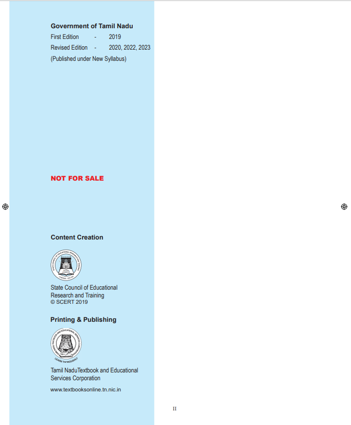
Unit – 1 Outbreak of World War I and Its Aftermath
1.3 Causes, Course and Results of World War I
1.4 Russian Revolution and its Impact
The World between Two World War
2.2 Rise of Fascism and Nazism
2.3 Anti- Colonial Movements and Decolonisation Processes in Asia
2.4 Anti - Colonial Movements in Africa
2.5 Political Developments in South America
3.1 Causes, Course and Effects of World War II
3.4 Post-War Welfare States in Europe
4.2 Cold War: Rivalry between the US and the Soviet Union
4.3 Formation of Military Alliances
4.10 Fall of Berlin Wall and End of Cold War Era
Social and Religious Reform Movements in the 19th Century
5.1 Early Reform Movements in Bengal
5.6 Sikh Reform Movement (Nirankaris and Namdharis)
5.7 Social Reformers of Tamil Nadu
Early Revolts against British Rule in Tamil Nadu
6.1 Resistance of Regional Powers against the British
6.2 Palayakkarars Revolt 1755to1801
Unit – 7 Anti-Colonial Movements and the Birth of Nationalism
7.1 Peasant and Tribal Resistance
7.2 The Great Rebellion of 1857
7.3 Peasant Revolts under Crown
7.4 The Foundation of Indian National Congress (1870 – 1885)
7.6 Home Rule Movement (1916–1918)
Unit – 8 Nationalism: Gandhian Phase
8.1 Gandhi and Mass Nationalism
8.2 Gandhi’s Early Satyagrahas in India
8.3 Non-Cooperation Movement and Its Fallout
8.4 The Struggle for Poorna Swaraj and Launch of Civil Disobedience Movement
8.5 Beginnings of Socialist Movements
8.6 First Congress Ministries under Government of India Act, 1935
8.7 Developments leading to Quit India Movement
Unit – 9 Freedom Struggle in Tamil Nadu
9.1 Early Nationalist Stirrings in Tamil Nadu
9.3 Non-Brahmin Movement and the Challenge to Congress
9.5 Civil Disobedience Movement
Unit – 10 Social Transformation in Tamil Nadu
10.2 Rise of the Dravidian Movement
10.3 South Indian Liberal Federation (Justice Party)
10.4 Self-Respect Movement (Suyamariyathai Iyakkam)
10.5 Labour Movements in Tamil Nadu
10.6 Language Agitation before Indian Independence
Unit – 1 India – Location, Relief and Drainage
1.2 Major Physiographic Divisions of India
Unit – 2 Climate and Natural Vegetation of India
2.1 The factors affecting the climate
3.4 Major Crops Cultivated in India
3.7 Major issues faced by farmers in India
Unit – 4 India - Resources and Industries
Unit – 5India - Population, Transport, Communication & Trade
Unit – 6 Physical Geography of Tamil Nadu
6.12 Natural Disasters in Tamil Nadu
Unit – 7 Human Geography of Tamil Nadu
7.2 Geographical determinants of Agriculture
7.3 Cropping Seasons in Tamil Nadu
7.4 Distribution of major crops in Tamil Nadu
7.5 Livestock or Animal Husbandry
7.11 Transport and Communication
1.1 The Need for a Constitution
1.2 Making of Indian Constitution
1.3 Salient features of Indian Constitution
1.7 Directive Principles of State Policy
1.12 Amendment of the Constitution
1.13 Constitutional Reform Commissions
3.4 Functions of the State Legislature
Unit – 4 India’s Foreign Policy
4.3 Basic Determinants of a Foreign Policy
4.4 The Non-Aligned Movement (NAM) in 1961
4.5 Basic Concepts of India’s Foreign Policy
4.6 SAARC – South Asian Association for Regional Cooperation
4.7 Contemporary context: change and continuity in India’s Foreign Policy
India’s International Relations
5.2 India’s Relationships with Developed Countries
Unit – 1 Gross Domestic Product and its Growth: An Introduction
1.2 Gross Domestic Product (GDP)
1.3 Composition of Gross Domestic Product (GDP)
1.4 Contribution of different sectors in GDP of India
1.5 Economic Growth and Development
1.6 Developmental Path based on GDP and Employment
1.7 Growth of GDP and Economic Policies
Unit – 2 Globalization and Trade
2.3 Trade and Traders in South India historical perspective
2.5 Multi National Corporation (MNC)
2.7 Impact and Challenges of Globalization
Unit – 3 Food Security and Nutrition
3.2 Availability and Access to Food Grains
3.4 Agricultural Policy in India
3.6 Nutrition and Health Status
4.1 Role of Government in Development Policies
Unit – 5 Industrial Clusters in Tamil Nadu
5.1 Importance of Industrialisation
5.4 Historical Development of Industrialisation in Tamil Nadu
5.5 Major Industrial Clusters and Their Specialisation in Tamil Nadu
5.6 The Policy Factors that Helped the Industrialisation Process in Tamil Nadu
Learning Objectives
To acquaint ourselves with
Introduction
1914 is a turning point in world history. The political and social processes that began in 1789 culminated in the First World War that broke out in that year and decisively shaped the course of the twentieth century. Historians therefore call this as ‘the long nineteenth century’. This was the first industrial war that drew on the economic resources of the entire world, and also affected large sections of the civilian population. The political map of the world was redrawn. Three major empires lay shattered by the end of the War: Germany, Austria–Hungary, and the Ottomans. The biggest outcome of the War was the Russian Revolution. It was a unique event as well as the first revolution of its kind in world history. For the first time, countries tried to bring about world peace through the League of Nations. In this lesson, we discuss the circumstances leading to the outbreak of the First World War and its repercussions, including the Russian Revolution and the formation of an international peace organisation, namely the League of Nations.
Capitalist Countries’ Race for Markets
The aim of capitalistic industry was to produce more and more. The surplus wealth thus produced was used to build more factories, railways, steamships and other such undertakings. Revolution in the means of communication and transportation in the latter half of the nineteenth century facilitated the process of European expansion in Africa and other places.
A striking feature of nineteenth century was that Europe emerged as the dominant power while Asia and Africa were colonized and exploited. Within Europe, England held a pre-eminent position as the world leader of capitalism. An ever - growing demand for markets and raw materials made the capitalist powers race around the world for expanding their empire for exploitation.
Rise of Monopoly Capitalism
After 1870, the alliance of industry and finance seeking profits in markets for goods and capital, which was an essential characteristic of imperialism, became evident in the latter half of the nineteenth century. The old ideas of free trade collapsed. There were trusts in the USA and cartels in Germany.
Box Item start
A trust is an industrial organisation engaged in the production or distribution of any commodity. The trust would possess adequate control over the supply and price of that commodity to its own advantage.
Box item end
Imperialism and its Essential Characteristics
Capitalism inevitably led to imperialism. According to Lenin, imperialism is the highest stage of capitalism. Besides being a market for surplus goods, colonies served another purpose. Imperialism was not just about colonies. It became a total system, the logic of which was total militarisation and total war.
Europe
In the nineteenth century, European powers had colonised many other countries. By1,880, most of the Asian countries had been colonised. Only Africa was left. The occupation, division and colonisation of Africa took place from 1881 to 1914. After 1870, England, France, Belgium, Italy and Germany joined in the scramble for colonies.
Clashes amongst Great Powers
Despite the lead in industrial growth and the control of a vast empire England was not satisfied. England was in competition with Germany and the United States, which were producing cheaper manufactured goods and thus capturing England’s markets. National rivalry led to frequent clashes between these great powers in Asia and Africa and Europe.
Asia: The Rise of Japan
In Asia, Japan during this period (Meiji era from 1867 to 1912), imitating Western nations had become their equal in many respects. Though the outlook of the rulers still remained feudal, Japan took to Western education and machinery. With a modern army and navy, Japan had emerged as an advanced industrialised power. In 1894 she forced a war on China. The crushing defeat of China by little Japan in the Sino -Japanese War (1894 to 95) surprised the world. Despite the warning of the three great powers Russia, Germany and France – Japan annexed the Liaotung peninsula with Port Arthur. By this action Japan proved that it was the strongest nation of the East Asia.
Japan, however, in view of the pressure mounted by European Powers, soon gave up its claim over Port Arthur. Russia took advantage of this and sent a large army to Manchuria. Japan entered into an alliance with England in 1902 and demanded that Russia withdraw troops from Manchuria. Russia underestimated Japan. In 1904 the war began between the two countries. In this Russo-Japanese War, Japan defeated Russia and got back Port Arthur. After this War Japan entered the “circle of the great Powers”.
Strong - arm Diplomacy of Japan
After 1905 Japan took control of Korean domestic and foreign policy. The assassination of a prominent Japanese diplomat provided the excuse in 1910 for Japan’s annexation of Korea. The confusion in China following the downfall of the Manchu dynasty in 1912 provided Japan an opportunity for further expansion. Japan demanded the transfer of German rights in Shantung to Japan and the recognition of Japanese hold over Manchuria. This strong-arm diplomacy aroused the hostility of both China and the European Powers.
Colonisation and its Fallout
In 1876 barely 10 percent of Africa was under European rule. By 1900 practically the whole of Africa was colonised. Britain, France and Belgium had divided the continent between them, leaving a few areas for Germany and Italy. Britain, France, Russia and Germany also established “spheres of influence” in China. Japan took over Korea and Taiwan. France conquered Indo-China. The US took the Philippines from Spain, and Britain and Russia agreed to partition Iran.
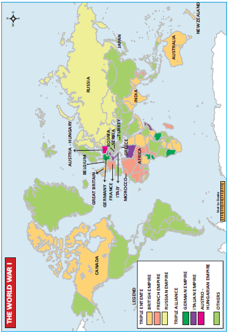
The first European attempts to carve out colonies in Africa resulted in bloody battles. The French had to fight a long and bitter war to conquer Algeria and Senegal. The British lost to the Zulus (1879) and to the Sudanese Army (1884). The Italian army suffered a devastating defeat at the hands of an Ethiopian army at Adowa (1896).
a. Causes
European Alliances and Counter-Alliances
In 1900 five of the European Great Powers were divided into two armed camps. One camp consisted of the Central Powers-Germany, Austria-Hungary and Italy. Under the guidance of Bismarck, they had formed the Triple Alliance in 1882. The understanding was that Germany and Austria would help each other. The other camp consisted of France and Russia. Their alliance was formed in 1894 with the promise of mutual help if Germany attacked either of them. An isolated Britain wanted to break her isolation and approached Germany twice but in vain. As Japan was increasingly hostile towards Russia, as France was the ally of Russia, it preferred to ally with Britain (1902). The Anglo-Japanese Alliance prompted France to seek an alliance with Britain to resolve colonial disputes over Morocco and Egypt. This resulted in the Entente Cordiale (1904). In return for letting the French have a free hand in Morocco, France agreed to recognize the British occupation of Egypt. Britain subsequently reached an agreement with Russia over Persia, Afghanistan and Tibet.
Thus, was formed the Triple Entente of Britain, France and Russia.
Violent Forms of Nationalism
With the growth of nationalism, the attitude of “my country right or wrong I support it” developed. The love for one country demanded hatred for another country. England’s jingoism, France’s chauvinism and Germany’s Kultur were militant forms of nationalism, contributing decisively to the outbreak of War.
Aggressive Attitude of German Emperor
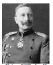
Emperor Kaiser Wilhelm II of Germany proclaimed that Germany would be the leader of the world. The German navy was expanded. The sea being considered a preserve of England ever since Napoleon’s defeat at Trafalgar (1805), Germany’s aggressive diplomacy and rapid building of naval bases convinced Britain that a German navy could be directed only against her. Therefore, Britain embarked on a naval race, which heightened the tension between the two powers.
Hostility of France towards Germany
France and Germany were old rivals. Bitter memories of the defeat of 1871 and loss of Alsace and Lorraine to Germany rankled in the minds of the French. German interference in Morocco added to the bitterness. The British agreement with France over Morocco was not consented by Germany. SoKaiser Wilhelm II intentionally recognised the independence of the Sultan and demanded an international conference to decide on the future of Morocco.
Imperial Power Politics in the Balkans
The Young Turk Revolution of 1908, an attempt at creating a strong and modern government in Turkey, provided both Austria and Russia with the opportunity to resume their activities in the Balkans. Austria and Russia met and agreed that Austria should annexe Bosnia and Herzegovina, while Russia should have freedom to move her warships, through the Dardanelles and the Bosporus, to the Mediterranean. Soon after this, Austria announced the annexation of Bosnia and Herzegovina. Austria’s action aroused intense opposition from Serbia. Germany gave Austria firm support. Germany went to the extent of promising that if Austria invaded Serbia and in consequence Russia helped Serbia, Germany would come to Austria’s assistance. The enmity between Austria and Serbia led to the outbreak of war in 1914.
The Balkan Wars
Turkey was a powerful country in the south west of Europe in the first half of eighteenth century. The Ottoman empire extended over the Balkans and across Hungary to Poland. The Empire contained many non-Turkish people in the Balkans. Both the Turks and their subjects of different nationalities in the Balkans indulged in the most frightful massacres and atrocities. The Armenian genocide is a frightful example. Taking advantage of the political and economic instability of the Turkish Empire from the second half of the eighteenth century, Greeks followed by others began to secede, one after another, from Turkish control. Macedonia had a mixed population. There were rivalries among Greece, Serbia, Bulgaria and later Montenegro for the control of it. In March 1912 they formed the Balkan League. The League attacked and defeated Turkish forces in the first Balkan War (1912 to 13). According to the Treaty of London signed in May 1913 the new state of Albania was created and the other Balkan states divided up Macedonia between them. Turkey was reduced to the area around Constantinople.
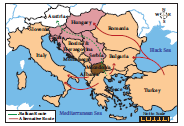
The division of Macedonia, however, did not satisfy Bulgaria. Bulgaria attacked Serbia and Greece. But Bulgaria was easily defeated. The Second Balkan War ended with the signing of the Treaty of Bucharest in August 1913.
Immediate Cause
The climax to these events in the Balkans occurred in Sarajevo in Bosnia. On 28 June 1914 the Archduke Franz Ferdinand, heir to Franz Joseph, Emperor of Austria-Hungary, was assassinated by Princip, a Bosnian Serb. Austria saw in this an opportunity to eliminate Serbia as an independent state. Germany thought that it should strike first. It declared war on Russia on 1 August. Germany had no quarrel with France, but because of the Franco - Russian Alliance, the German army which was planning a war against both France and Russia wanted to use the occasion to its advantage. The German violation of Belgian neutrality forced Britain to enter War.
b. Course of the War
Two Warring Camps
Central Powers
The warring nations were divided into two. The Central powers consisted of Germany, Austria–Hungary, Turkey and Bulgaria. Italy which was earlier with Germany and Austria had left, as her attempt to recover Trentino in north east Italy, where Italians lived in majority but remained as part and parcel of Austria- Hungary, was not supported by Germany. Italy remained a neutral country when the War broke out. But it decided to enter the War hoping to gain the territory in the north - east. Britain, France and Italy signed the secret Treaty of London in April 1915, by which Italy agreed to enter the War against the Central Powers in return for this territory after the War.
Allies
Nine states that opposed the Central powers were: Russia, France, Britain, Italy, the United States, Belgium, Serbia, Romania and Greece. Romania and Greece declared war on the Central Powers in 1916 and 1917 respectively but played little part in the war. Most Americans wanted their country to remain neutral and so in the first three years the United States gave only moral support and valuable material aid to Britain and France.
Tsar’s Abortive Attempts for Peace
Tsar Nicholas II of Russia suggested to the Powers that they meet together to bring about an era of universal peace. In response, two Peace Conferences were held at The Hague in Holland in 1899 and 1907 but in vain.
War in Western or French Front
Germany steamrolled and smashed the resistance of the people of Belgium. On the side of the Allies, the burden of the fighting fell on the French army. Within a month Paris seemed almost doomed.
Battles of Tannenberg and Marne
Meanwhile Russian forces invaded East Prussia. Germany defeated them decisively. At the Battle of the Marne (early September 1914), the French succeeded in pushing back the Germans. Paris was thus saved. The battle of Marne is a memorable for trench warfare.
Box Item start
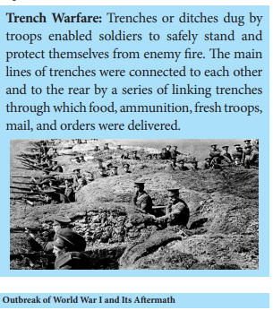
Trench Warfare: Trenches or ditches dug by troops enabled soldiers to safely stand and protect themselves from enemy fire. The main lines of trenches were connected to each other and to the rear by a series of linking trenches through which food, ammunition, fresh troops, mail, and orders were delivered.
Box Item end
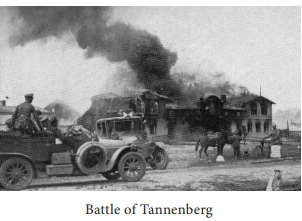
Battle of Verdun
Between February and July 1916, the Germans attacked Verdun, the famous fortress in the French line. In the five -month Battle of Verdun two million men took part and half of them were killed. The British offensive against Germans occurred near the River Somme. In this four-month Battle of Somme Britain lost 20,000 men on the first day. The battle of Verdun, however, decided the fortunes of the War in favour of the Allies.
War in Eastern or Russian front
In the eastern front, Russian troops repeatedly defeated the Austrians. But the Russians were in turn defeated by the Germans. Russia had the worst trained and equipped army and therefore Russian losses were the greatest. In 1917, the Tsarist regime in Russia was overthrown in a revolution. Russia wanted peace and consequently it signed the Treaty of Brest-Litovsk (3 March 1918) with Germany.
Minor Theatres of War
In the Middle East
Turkey also fought on the side of the central powers.Though Turkey met with initial success and the Allies suffered reverses, particularly in Mesopotamia and Gallipoli, ultimately Turkey was defeated. The Turks tried to attack Suez Canal, but were repulsed. Britain attacked Turkey in Iraq, and later in Palestine and Syria.
In the Far East
China also joined the allies. Japan was able to capture the province of Kiauchau given by the Germans to China in the province of Shantung. There was no war in the Far East. Japan made use of the occasion to threaten China into ceding valuable concessions and privileges.
In the Balkans
The Austro-German army in coordination with Bulgaria crushed Serbia. Serbia came under German rule. Rumania watched the course of the War and in August 1916 joined the Allies. Rumania also passed under Austro- German occupation.
Fate of Colonies of Germany in Africa
The German colonies in western and eastern Africa were also attacked by the Allies. As these colonies were quite far from Germany, they could not receive any immediate help, and therefore surrendered to the Allies.
Italy falls to Austrian onslaught
Italy formally joined the Allies in the war in May 1916. Italians were fighting with the Austrians and continued to sustain their resistance. But when the Germans came to Austria’s help, the Italians collapsed.
Central Powers’ Victories
The Central Powers successfully occupied Belgium and a part of France in the north-east, Poland, Serbia and Romania. The epicenter of the struggle was the western front and the seas. As the Allies controlled the sea-routes, they cut off the supply of food and other material reaching the Central Powers. In Germany and Austria women and children suffered from hunger and privation. Germany attacked England by air. Bombs were thrown on London and places where there were major factories. Later aero planes were used for targeting civilian population. The Germans introduced poison gas and soon both sides resorted to its use.
Naval Battles and America’s Entry into the War
In 1916 a naval battle (Battle of Jutland) had taken place in the North Sea. The British won the battle. Thereafter Germany started their submarine warfare and their cruisers went roaming about, interfering with the shipping of the Allies. One of these was the famous Emden, which bombarded Madras. As a counter measure to the blockade the Germans proclaimed in January 1917 that they would sink even neutral ships in certain waters. Lusitania, an American ship, was torpedoed by a German submarine. There was a lot of resentment in the USA and President Wilson declared war against Germany in April 1917. America’s entry with its enormous resources made Allied victory a foregone conclusion.
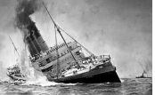
c. The Armistice and Treaty of Versailles
Germany ultimately surrendered in November 1918. The armistice took effect from 11 November 1918. Germany was forced to accept harsh terms by the political situation at home with the abdication of the Kaiser William II.
Peace Conference in Paris
The Peace Conference opened in Paris in January 1919, two months after the signing of the armistice. Woodrow Wilson (USA), Lloyd George (Prime Minister of England) and Clemenceau (Prime Minister of France) played a very important part in the deliberations.
Faced with a threat of a renewed war, the German government was forced to agree to the terms. On 28 June, 1919 the peace treaty was signed in the Hall of Mirrors at Versailles.
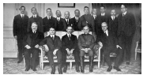
Provisions of the Treaty
1 Germany was found guilty of starting the War and therefore was to pay reparations for the losses suffered. All Central Powers were directed to pay war indemnity.
2 The German army was to be limited to 100,000 men. A small navy was allowed.
3 The union of Austria and Germany was forbidden.
4 All German colonies became mandated territories under the League of Nations.
5 Germany was forced to revoke the Treaty of Brest - Litovsk (with Russia) and Bucharest (Bulgaria).
6 Alsace–Lorraine was returned to France.
7 The former Russian territories of Finland, Estonia, Latvia and Lithuania were to be independent
8 Northern Schleswig was given to Denmark and some small districts to Belgium.
9 Poland was recreated.
10 The Rhineland was to be occupied by the Allies. The area on the east bank of the Rhine was to be demilitarized.
Box Item start
President Wilson laid down his Fourteen Points, which were to be followed by the Allies. The most important one he highlighted was the need for ‘a general association of nations for the purpose of affording mutual guarantees of political independence and territorial integrity to great and small states like’ .
Box Item end.
Separate treaties were drawn up and signed by the Allies with Austria, Hungary, Bulgaria and Turkey. The Treaty with Turkey (Treaty of Sevres), though accepted by the Sultan, failed because of the resistance of Mustafa Kemal Pasha and his followers.
Fallout of the First World War
The First World War left a deep impact on European society and polity. Through conscription, and through air raids, the War had involved and affected far more of the population than in the past. 8 million had died in four years, while more than twice as many were wounded, and many crippled for life. Millions more had succumbed to the worldwide influenza of 1918. The outcome, in all countries, was imbalance between the sexes --a shortage of men. Soldiers came to be placed above civilians.
The War and its aftermath turned out to be a stirring period of history. The most striking of all was the rise and consolidation of the Soviet Union, the U.S.S.R or the Union of Socialist and Soviet Republics, as it was called. America entered the War as a debtor country but it emerged as the money-lender to the world in the aftermath of the War.
Another outstanding event of this period was the awakening of the colonies and their inspired attempts to gain freedom.
Mustafa Kemal Pasha played a remarkable role for Turkey’s rebirth as a nation. Kemal Pasha modernised Turkey and changed it out of all recognition.
Impact on India
The First World War had a significant impact on India. The British recruited a vast contingent of Indians to serve in Europe, Africa and West Asia. After the War, the soldiers came back with new ideas which had an impact on the Indian society. India contributed £ 230 million in cash and over £ 125 million in loans towards war expenses. India also sent war materials to the value £ 250 million. This caused enormous economic distress. There were grain riots as poor people looted shops. Towards the of the War India too suffered under the world-wide epidemic of influenza. (£ - symbol of Pound sterling)
The War conditions led to the rise of Home Rule Movement in India. The Congress was reunited during the war.
India and Indians had taken an active part in the War believing that Britain would reward India's loyalty. But only disappointment was in store. Thus the War had multiple effects on Indian society, economy and polity.
Introduction
The biggest outcome of the War, the Russian revolution, was unique in world history. The socio-political and economic conditions prevailing in Russia were brought to a head by the vast losses and sufferings caused by the War. There were really two revolutions in the year 1917, one in March and the other in November. On the abdication of the Tsar the bourgeois government which followed, wanted to continue the war. But the people were against it. So there was a second great uprising under the guidance their leader Lenin, who seized power and established a communist government in Russia.
Causes of the Revolution
Social Causes
In Russia Peter the Great and Catherine II attempted westernisation without changing the social conditions. The Russian peasants were serfs tied to lands owned by wealthy Russians. After Russia’s defeat in the Crimean War, some reforms were introduced. In 1861 Tsar Alexander II abolished serfdom and emancipated the serfs. But they were not given enough land to subsist. These peasants became the powder keg for the revolution. The labourers and workers whose number had increased on account of industrialisation were aggrieved as they got very low wages.
Role of Revolutionaries
The spread of revolutionary ideas among the intelligentsia and their repression by the Tsar’s government made the socialistically inclined students to carry their propaganda to the peasantry. Soon, based on the Marxist philosophy, new ideas began to take shape and a Social and Democratic Labour Party was formed.
Autocracy of the Tsar
Tsar Nicholas II of Romanov dynasty had little experience of government. His wife Tsarina Alexandra was a dominant personality and Nicholas was under her strong influence. Determined that Russia should not be left out in the scramble for colonial possessions, Nicholas encouraged Russian expansion in Manchuria. This provoked a war with Japan in 1904. The resulting Russian defeat led to strikes and riots. On 22 January 1905 Father Gapon, a priest, organised a march of men, women and children on the Tsar’s Winter Palace in St. Petersburg demanding a representative national assembly and agrarian and industrial reforms. But police and soldiers fired on the procession. Hundreds were killed and many thousands wounded. The events of this day (known as Bloody Sunday) led to riots, strikes and violence. Nicholas was forced to grant a constitution and establish a parliament, the Duma. This was no longer satisfactory to the left-wing parties that formed a Soviet (council) of worker's delegates in St Petersburg, led by Trotsky.
Opposition to Tsar and Dissolution of Duma
The outbreak of the First World War had temporarily strengthened the monarchy, as Russia allied to France and Britain. As there was rumour of a palace revolution. Nicholas made himself the Commander-in-Chief of the army. At the end of 1916, Rasputin, who had a domineering influence over the Tsar and the Tsarina, was murdered by a member of the Tsar’s family. The members of the St. Petersburg Soviet were arrested. Whenever the Duma opposed the Tsar’s move, it was dissolved and fresh elections held. Without change of government policy, the fourth Duma ended with the revolution of 1917.
Popular Uprisings
The bread shortages among women textile workers, many with husbands in the army, forced them to go on strike anyway and march through the factory areas of Petrograd, the capital of the Russian Empire. Masses of women workers demanding “Bread for workers” waved their arms towards factory workers and shouted “Come out!” “Stop work!” The city’s four hundred thousandsworkers joined the movement the next day (24 February).
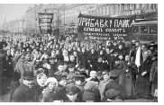
Abdication of Tsar
The government used the troops to break the strike. But soon mutinies broke out in the barracks. The Tsar ordered a declaration of martial law. But his order was not broadcast in the city, as there was no one to do this job. The Tsar then tried to return to Petrograd. The railway workers stopped his train. The generals at the front and some leaders in Petrograd, frightened by these developments pleaded with the Tsar to abdicate. On 15 March, Nicholas II abdicated.
Box Item start
The revolutionary Tamil poet Bharathiyar cheerfully welcomed the revolution in Russia by penning these poetic lines
The Mother Great, the Power supreme,
Turned her glance benign towards Russia,
The Revolution of the Age,
Behold the wonder, rises high
The tyrant howling falls down limp,
The shoulders of the heavenly gods,
Are swelling now with joy and pride,
Eyes hot with unshed tears, the demons,
Perish. O people of the world,
Behold this mighty change!
Box Item end
Provisional Government
There were two parallel bodies to take on government functions. One was of the bourgeois politicians of the old state Duma, comprising propertied classes. On the other there were workers’ delegates drawn together in a workers’ council, or Soviet. Those in the Duma were able to form a provincial government with the consent of the Soviets. The Soviet was dominated by Mensheviks and the minority Bolsheviks were timid and undecided. The situation changed with the arrival of Lenin.
Failure of Provisional Government
Lenin was in Switzerland when the revolution broke out. Lenin wanted continued revolution. His slogan of ‘All power to the Soviets’ soon won over the workers’ leaders. Devastated by war time shortages, the people were attracted by the slogan of ‘Bread, Peace and Land.’ But the Provisional government made two grave mistakes. First, it postponed a decision on the demand for the redistribution of land and the other was government decided to continue with the war. Frustrated peasant soldiers deserted their posts and joined those who had resorted to land grabbing. This intensified the rising in Petrograd led by Bolsheviks. The government banned Pravda and arrested all Bolsheviks. Trotsky was also arrested.
Takeover by the Bolshevik Party under Lenin’s leadership
In October Lenin persuaded the Bolshevik Central Committee to decide on immediate revolution. Trotsky prepared a detailed plan. On 7 November the key government buildings, including the Winter Palace, the Prime Minister’s headquarters, were seized by armed factory workers and revolutionary troops. On 8 November 1917 a new Communist government was in office in Russia. Its head this time was Lenin. The Bolshevik Party was renamed the Russian Communist Party.
Box Item start
Lenin was born in 1870 near the Middle Volga to educated parents. Influenced by the ideas of Karl Marx, Lenin believed that the way for freedom was through mass action. Lenin gained the support of a small majority (bolshinstvo), known as Bolsheviks, which became the Bolshevik Party. His opponents, in minority (menshinstvo), were called Mensheviks.
Box Item end
Outcome of the Revolution
The Russian Communist Party eliminated illiteracy and poverty in Russia within a record time. Russian industry and agriculture developed remarkably. Women were given equal rights, including rights to vote. Industries and banks were nationalised. Land was announced as social property. Land was distributed to poor peasants. Lenin thought the most important factor for the fall of Provisional government was its failure to withdraw from World War. SoLenin immediately appealed for peace. Unmindful of the harsh terms dictated by the Central Powers, Lenin opted for withdrawing from the War to concentrate on the formation of new government. In March 1918 the Treaty of Brest– Litovsk was signed.
Global Influence of the Russian Revolution
The revolution fired people’s imagination across the world. In many countries, communist parties were formed. The Russian communist government encouraged the colonies to fight for their freedom. Debates over key issues, land reforms, social welfare, workers’ rights, and gender equality started taking place in a global context.
Box Item start
Pravda is a Russian word meaning “Truth”. It was the official newspaper of the Communist Party of the Soviet Union from 1918 to 1991.
Box Item end
Structure and Composition
The Covenant of the League was worked out at the Paris Peace Conference and included in each of the treaties that were signed after the First World War. It was largely due to the pressure from President Wilson that this task was accomplished. In drawing up the constitution of this organization, the ideas of Britain and America prevailed.
The League which was formed in 1920 consisted of five bodies: the Assembly, the Council, the Secretariat, the Permanent Court of Justice, and the International LabourOrganisation. Each member- country was represented in the Assembly. The Council was the executive of the League. Britain, France, Italy, Japan and the United States were originally declared permanent members of the Council. Each member had one vote and since all decisions had to be unanimous, even the small nations possessed the right of veto.
The secretariat of the League of Nations was located at Geneva. Its first Secretary General was Sir Eric Drummond from Britain. The staff of the secretariat was appointed by the Secretary General in consultation with the Council. The International Court of Justice was set up in The Hague. The court was made of fifteen judges. The International LabourOrganisation comprised a secretariat and general conference which included four representatives from each country.
Objectives of the League
The two-fold objective of the League of Nations was to avoid war and maintain peace in the world and to promote international cooperation in economic and social affairs. The League intended to act as conciliator and arbitrator and thereby resolve a dispute in its early stages. If wars should break out despite arbitration, the members should apply sanctions to the aggressor first economic and then military.
The difficulty in achieving the objectives was increased from the beginning by the absence of three Great Powers namely USA (did not become a member), Germany (a defeated nation) and Russia. The latter two joined in 1926 and 1934. While Germany resigned in 1933, Russia was expelled in 1939.
Activities of the League
The League was called in to settle a number of disputes between 1920 and 1925. The League was successful in three issues. In 1920 a dispute arose between Sweden and Finland over the sovereignty of the Aaland Islands. The League ruled that the islands should go to Finland. In the following year the League was asked to settle the frontier between Poland and Germany in Upper Silesia, which was successfully resolved by the League. The third dispute was between Greece and Bulgaria in 1925. Greece invaded Bulgaria, and the League ordered a ceasefire. After investigation it blamed Greece and decided that Greece was to pay reparations. Thus the League had been successful until signing of the Locarno Treaty in 1925. By this treaty, Germany, France, Belgium, Great Britain, and Italy mutually guaranteed peace in Western Europe. Thereafter Germany joined the League and was given a permanent seat on the Council. After two years the US and Russia began to participate in the non-political activities of the League.
Violations
One of the major problems confronting the European powers was how to achieve disarmament. In 1925 the Council of the League set up a commission to hold a Disarmament Conference to sort out the problem. But the proposed conference materialised only in February 1932. In this Conference, Germany’s demand of equality of arms with France was rejected. In October Hitler withdrew Germany from the Conference and the League.
Japan attacked Manchuria in September 1931 and the League condemned Japan. So, Japan also followed the example of Germany and resigned from the League. In the context of Italy’s attack on Ethiopia, the League applied sanctions. As the sanctions came into effect, Italy resigned from the League in 1937. Thereafter the League was a passive witness to events, taking no part in the crises over the Rhineland, Austria, Czechoslovakia and Poland. The last decisive action it took was in December 1939 when Russia was expelled for her attack on Finland. The Assembly did not meet again and the League of Nations was finally dissolved in 1946.
Causes of Failure
The League appeared to be an organisation of those who were victorious in the First World War.
Since it lacked the military power of its own, it could not enforce its decisions.
The founders of this peace organisation underestimated the power of nationalism. The principle of “collective security’ could not be applied in actual practice.
When Italy, Japan and Germany, headed by dictators, refused to be bound by the orders of the League, Britain and France were the only major powers to act decisively.
SUMMARY
GLOSSARY
monopoly |
Exclusive possession or control |
முற்றுரிமை |
devastating |
Highly destructive or damage |
பேரழிவு |
jingoism |
blind patriotism, especially in the pursuit of aggressive foreign policy |
கண்மூடித்தனமானநாட்டுப்பற்று |
chauvinism |
extreme patriotism |
அதிதீவிரப்பற்று |
Kultur |
thinking highly of German civilization and culture |
ஜெர்மானியக்கலாச்சாரத்தைமிக உயர்வாக நினைப்பது |
Repulse |
drive back |
எதிரியைவிரட்டிஅடித்தல் |
torpedo |
attack or sink (a ship) with a torpedo |
மூழ்கடி |
bourgeois |
characteristic of the middle class, typically with reference to its perceived materialistic values or conventional attitudes |
முதலாளித்துவம் |
intelligentsia |
intellectuals or highly educated people as a group, especially when regarded as possessing culture and political influence |
அறிவுஜீவிகள், நுண்ணறிவாளர்கள்
|
EXERCISE
1. Choose the correct answer
1. What were the three major empires shattered by the end of First World War?
a. Germany, Austria Hungary, and the Ottomans
b. Germany, Austria-Hungary, and Russia
c. Spain, Portugal and Italy
d. Germany, Austria-Hungary, Italy
2. Which country emerged as the strongest in East Asia towards the close of nineteenth century?
a. China
b. Japan
c. Korea
d. Mongolia
3. Who said “imperialism is the highest stage of capitalism”?
a. Lenin
b. Marx
c. Sun Yat-sen
d. Mao Tsetung
4. What is the Battle of Marne remembered for?
a. air warfare
b. trench warfare
c. submarine warfare
d. ship warfare
5. To which country did the first Secretary General of League of Nations belong?
a. Britain
b. France
c. Dutch
d. USA
6. Which country was expelled from the League of Nations for attacking Finland?
a. Germany
b. Russia
c. Italy
d. France
2. Fill in the blanks
1. Japan forced a war on China in the year dash
2. The new state of Albania was created according to the Treaty of dash signed in May 1913.
3. Japan entered into an alliance with England in the year dash
4. In the Balkans had mixed population dash
5. In the battle of Tannenberg dash heavy losses.
6. dash as Prime Minister represented France in Paris Peace Conference.
7. Locarno Treaty was signed in the year dash
3. Choose the correct statement
1.The Turkish Empire contained many non-Turkish people in the Balkans.
2. Turkey fought on the side of the central powers
3. Turkey’s attempt to attack Suez Canal but were repulsed.
a. 1. and 2) are correct
b. 1. and 3) are correct
c .2 and 3 are correct
d.1, 2 and 3 are correct
2. Assertion: The first European attempts to carve out colonies in Africa resulted in bloody battles.
Reason: There was stiff resistance from the native population.
a. Both A and R are correct
b. A is right but R is not the correct reason
c. Both A and R are wrong
d. R is right but A is wrong.
4. Match the following
1.Treaty of Brest- Litovsk - Versailles
2. Jingoism - Turkey
3. Kemal Pasha - Russia with Germany
4.Emden - England
5. Hall of Mirrors – Madras
5. Answer briefly
1. How do you assess the importance of Sino-Japanese War?
2. Name the countries in the Triple Entente.
3. What were the three militant forms of nationalism in Europe?
4. What do you know of trench warfare?
5. What was the role of Mustafa Kemal Pasha?
6. List out any two causes for the failure of the League of Nations.
6. Answer the following in detail
1. Discuss the main causes of the First World War.
2. Highlight the provisions of the Treaty of Versailles relating to Germany.
3. Explain the course of the Russian Revolution under the leadership of Lenin.
4.Estimate the work done by the League of Nations.
7. Activity
1. Students can be taught to mark the places of battles and the capital cities of the countries
that were engaged in the War.
8. Map Work
Mark the following countries on the world map.
1. Great Britain
2. Germany
3. France
4. Italy
5. Morocco
6. Turkey
7. Serbia
8. Bosnia
9. Greece
10. Austria-Hungary
11. Bulgaria
12. Rumania
REFERENCE BOOKS
1.R.D. Cormvell, World History in the Twentieth Century, London: Longman, 1972
2. David Th omson, Europe since Napoleon, Harmondsworth: Penguin, 1990
3. Eric Hobsbawm,The Age of extremes, 1914 – 1991, London: Abacus, 1994.
4. Hew Strachan, Th e Oxford Illustrated History of the First World War. Oxford: Oxford University Press, 2014).
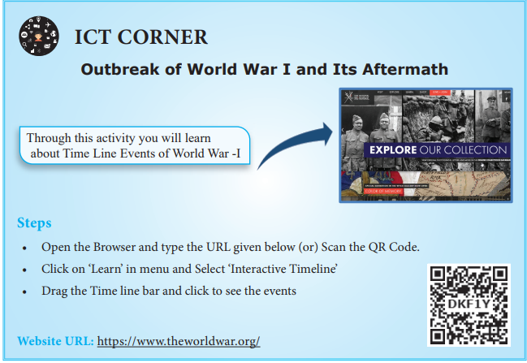
Learning Objectives
To acquaint ourselves with
Introduction
The First World War shattered the global capitalist system based on European imperialism. The European powers were gravely weakened by the War, financially and politically. The conflict between the workers and the ruling classes that controlled the government became intense. As a result of this Fascism emerged in Italy and Germany. Anti-colonial struggles got intensified as the colonial powers were weakened by the War.
As we saw in the last chapter, the crisis in the Western world had led to the outbreak of World War I. We now turn to the social and political developments in the world after the end of the War.
Developments in the post-World War I
The First World War led to the expansion of certain industries in the hope that the war-time boom would continue. However, when the War came to an end, the industries that grew to meet war-time requirements had to be abandoned or modified. The situation was made worse by the political complications caused by the Treaty of Versailles. A new wave of economic nationalism which expressed itself in protectionism or in tariff barriers affected world trade. The war also placed a heavy burden of debt on every European country.
Stock Market Crash in the US
The first huge crash occurred on 24 October 1929. This discouraged investors and consumers to such an extent that more and more people began to sell their shares and dispose of their stocks. But there were no buyers. This was followed by the failure of American banks. The American financiers were forced to recall their own funds invested abroad.
Breakdown of the International System of Exchange
Despite emergency measures such as cutbacks in expenditure and increased taxation, the situation did not improve in England. So England decided to leave the Gold Standard. Immediately a great number of countries left the gold standard. Each nation adopted a policy of protectionism and devaluation of currency. Devaluation forced creditors to stop lending. This led to a world - wide credit contraction. Thus the defensive measures adopted by various nations to safeguard their economic interests led to an unprecedented decline in world economic activity. As its effect was deep and prolonged economists and historians call it the Great Depression.
Box Item start
Gold Standard is a monetary system where a country’s currency or paper money carried a value directly linked to gold.
Box Item end
Repercussion in Politics
The Depression changed the political conditions in several countries. In England, the Labour Party was defeated in the general elections of 1931. In the USA, the Republican Party was rejected by the people in successive elections for about twenty years after the Depression.
a. The Impact of War in Italy
The first of the nations of Western Europe to turn against the old ruling regime was Italy. During World War I the primary task of Italy was to keep the Austrians occupied on the Southern Front, while the British, French and Americans cornered Germany into submission along the battle lines in Flanders. The financial cost of the participation in the War was huge. Moreover, after the War, in the sharing of the spoils, Italy got less than she expected. The country suffered heavy losses in a war that was unpopular with both socialists and pro-Austrian Catholics. The nationalists were equally unhappy with the marginal gain in territory from the Treaty of Versailles. The War resulted in inflation. There were frequent protests and strikes. People held the rulers responsible for the humiliation at Versailles.
Emergence of Mussolini
In the elections held November 1919 in the aftermath of the Treaty of Versailles, Italian socialists, proclaiming that they were following Bolshevism (Communism in Soviet Russia), won about a third of the seats. Mussolini, son of a blacksmith and qualified as an elementary school master, in the end became a journalist with socialist views. A forceful speaker, Mussolini began to support the use of violence and broke with the socialists when they opposed Italy’s entry into the War. When the Fascist Party was founded in 1919 Mussolini immediately joined it. As Fascists stood for authority, strength and discipline, support came from industrialists, nationalists, ex-soldiers, the middle classes and discontented youth. The Fascists resorted to violence freely. In October 1922, in the context of a long ministerial crisis, Mussolini organised the Fascist March on Rome. Impressed by the show of force, the King invited Mussolini to form a government. The inability of the Democratic Party leaders to combine and act with resolution facilitated Mussolini’s triumph.
Box Item start
Fascism is a form of radical authoritarian ultra-nationalism, characterised by dictatorial power, forcible suppression of opposition and strong regimentation of society and of the economy, which came to prominence in early 20th-century Europe. –Wikipedia.
Box Item end
Fascists under Mussolini
In the 1924 elections, after intimidation of the electors, 65 per cent of the votes were cast for the Fascists. Matteotti, a socialist leader, who questioned the fairness of the elections was murdered. The opposition parties boycotted the Parliament in protest. Mussolini reacted by banning opposition parties and censoring the press. Opposition leaders were killed or imprisoned. Assuming the title of Il Duce (the leader), in 1926 he became a dictator with power to legislate. He passed a law forbidding strikes and lockouts. Unions and employers were organized into corporations. In 1938 Parliament was abolished and was replaced by a body representing the Fascist Party and the corporations. This new arrangement bolstered Mussolini’s dictatorial control of the economy, as well as enabling him to wield enormous power as head of the administration and the armed forces.
Mussolini’s Pact with Pope
In order to give respectability to the Fascist Party, Mussolini won over the Roman Catholic Church by recognising the Vatican City as an independent state. In return the Church recognised the Kingdom of Italy. The Roman Catholic faith was made the religion of Italy and compulsory religious teaching in school was ordered. The Lateran Treaty incorporating the said provisions was signed in 1929.
Italy during the Great Depression
During the years of the Great Depression the muchpublicised public works of building new bridges, roads and canals, hospitals and schools did not provide solution to the unemployment problem. In 1935, Mussolini invaded Ethiopia. This was useful to divert attention of the people away from the economic troubles.
b. Germany in the post-War
From 1918 to 1993 Germany was a republic. The factors which led to the eventual triumph of Fascism in Germany were many. Between 1871 and 1914 Germany had risen to dizzy heights of economic, political and cultural accomplishments. Germany’s universities, its science, philosophy and music were known all over the world. Germany had surpassed even Britain and the US in several fields of industrial production.
Germany’s defeat and humiliation at the end of World War I caused a deep shock to the of German people. The Great Depression further deepened their frustration and prompted them to turn against the Republican government.
Evolution of German Fascism
The origin of German fascism goes back to 1919 when a group of seven men met in Munich and founded the National Socialist German Workers’ Party (abbreviated as Nazi Party). One of them was Adolf Hitler. During World War I, he served in the Bavarian army. A gifted speaker, he could whip up the passion of the audience. In 1923 Hitler attempted to capture power in Bavaria. His launch of the National Revolution on the outskirts of Munich landed him in prison. During his time in prison wrote Mein Kampf (My Struggle), an autobiographical book containing his political ideas. In the Presidential election of 1932, the Communist Party polled about 6,000,000 votes. Alarmed capitalists and property owners tilted towards supporting fascism Hitler exploited this opportunity to usurp powers.
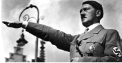
Box Item start
Social Democratic Party was founded as the General German Workers Association on 23 May 1863 in Leipzig. Founder was Ferdinand Lassalle. German elites of the late 19th century considered the very existence of a socialist party a threat to the security and stability of the newly unified Reich, and so Bismark outlawed this party from 1878 to 1890. However, in 1945, with the fall of Hitler, the Social Democratic Party was revived. It was the only surviving party from the Weimar period with a record of opposition to Hitler.
Box Item end.
The Nazi State of Hitler
Republican government fell, as the Communists refused to collaborate with the Social Democrats. Thereupon industrialists, bankers and Junkers prevailed upon President Von Hindenburg to designate Hitler as Chancellor in 1933. The Nazi state of Hitler, known as Third Reich, brought an end to the parliamentary democracy.
Hitler replaced the flag of the Weimar republic by the swastika banners of National Socialism. Germany was converted into a highly centralised state. All political parties except the Nazi party were declared illegal. The army of brown-shirted and jack-booted storm-troopers was expanded. The Hitler Youth was created, and the Labour Front set up. Trade unions were abolished, their leaders arrested. Strikes were madeillegal, wages were fixed by the government. Total state control was extended over the press, the theatre, the cinema, radio and over education.
The Nazi Party’s propaganda was led by Josef Goebbels, who manipulated public opinion through planned propaganda. The Gestapo or Secret State Police was formed and run by Himmler.
Nazi Policy towards Jews
Along with the repressive measures, Hitler’s government followed a policy of repressing Jewish people. The Jews were removed from government positions, excluded from the universities and deprived of citizenship. Jewish businesses were closed down, and their establishments were attacked. After the outbreak of World War II concentration camps, barracks surrounded by electrified fences and watch towers, were built where Jews were interred and used as forced labour. Later they were turned into extermination camps where industrial means of murder such as gas chambers were used to kill them in what the Nazis termed ‘The Final Solution’.
Defiance of the Treaty of Versailles
In August 1934 Hindenburg died and Hitler, apart from being Chancellor, became both President and Commander–in-Chief of the armed forces. Hitler’s foreign policy aimed at restoring the armed strength of Germany and annulling provisions of Versailles Treaty.
a. French Indo-China
Rise of Anti-Colonialism
Indo-China (today’s Cambodia, Laos and Vietnam) had shown its discontent right from the beginning of the French occupation (1887). While the Indo-Chinese resisted the imposition of French language and culture, they learned from them the ideas of revolution. During the First World War about 100,000 Indo-Chinese fought in France and returned with first-hand knowledge of how the French had fought and suffered during the War. Communist ideas from mainland China were also a major influence. Many became convinced that the considerable wealth of Indo-China was benefiting only the colonial power.
Box Item start
Decolonisation is a process through which colonial powers transferred institutional and legal control over their colonies to the indigenous nationalist governments.
Box Item end.
The Emergence of Viet Minh
The mainstream political party in Indo- China was the Vietnam Nationalist Party. Formed in 1927, it was composed of the wealthy and middleclass sections of the population. In 1929 the Vietnamese soldiers mutinied, and there was a failed attempt to assassinate the French Governor-General. This was followed by a largescale peasant revolt led by the Communists. The revolt was crushed followed by what is called “White Terror.” Thousands of rebels were killed.
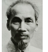
After the White Terror, Ho Chi Minh left for Moscow and spent the 1930s in Moscow and China. When France was defeated by Germany in 1940, Ho Chi Minh and his lieutenants used this turn of events to advance the Vietnamese cause. Crossing over the border into Vietnam in January 1941, they organized the League for the Independence of Vietnam, or Viet Minh. This gave renewed emphasis to a distinct Vietnamese nationalism.
Box Item start
Ho Chi Minh (1890 to 1969) was born in Tongking. When Ho Chi Minh was twenty one, he went to Europe. After working as a cook in a London hotel, he went to Paris. In the Paris peace conference, he lobbied for the independence for Vietnam. His articles in newspapers and especially the pamphlet, French Colonialism on Trial, made him well known as a Vietnam nationalist. In 1921 he became a founder member of the French Communist party. Two years later he went to Moscow and learnt revolutionary techniques then. In 1925, he founded the Revolutionary Youth Movement.
Box Item end.
b.Decolonisation in India
Dyarchy in Provinces
The decolonization process started in India from the beginning of the twentieth century with the launch of the Swadeshi Movement in 1905. The outbreak of the First World War brought about rapid political as well as economic changes. In 1919, the Government of India Act introduced Dyarchy that provided for elected provincial assemblies as well as for Indian ministers to hold certain portfolios under Transferred Subjects. The Indian National Congress rejected Dyarchy and decided to boycott the legislature.
Lack of Measures to Industrialise India
Despite the discriminating protection given to certain select industries such as sugar, cement, and chemicals, there was no change in the colonial economic policy. But in the case of indigenous industries, support was only in the form of providing “technical advice and education, and the establishment of pioneer factories in new industries”. However, even this policy was soon abandoned as many British enterprises were opposed to this.
Impact of Depression on Indian Agriculture
The ‘Great Depression’ also dealt a death blow to Indian agriculture and the indigenous manufacturing sector. The value of farm produce, declined by half while the land rent to be paid by the peasant remained unchanged. In terms of prices of agricultural commodities, the obligation of the farmers to the state doubled. The great fall in prices prompted Indian nationalists to demand protection for the internal economy. The 1930s saw the emergence of the Indian National Congress as a militant mass movement.
Government of India Act, 1935
The British had to appease the Indian nationalists and the outcome was the passage of the Government of India Act, 1935. This provided for greater power to the local governments and the introduction of direct elections. In the 1937 elections the Congress won a resounding victory in most of the provinces. However the decision of Britain to involve India in the Second World War, without consulting the popular Congress ministries, forced the latter to resign from office.
Colonisation of Africa
The African coastline had been explored in the sixteenth century and a few European settlements had come about. But the interior of Africa was unknown to the outside world until the last quarter of nineteenth century. European colonisation began after about 1875. The Berlin Colonial Conference of 1884–85 resolved that Africa should be divided into spheres of influence of various colonial powers. The war between the British and Boers in South Africa, however, was in defiance of this resolution.
Boer Wars
The relations between the two British colonies of Natal and Cape Colony and the two independent Boer states of the Transvaal and the Orange Free State had long been unfriendly. The discovery of gold in Transvaal, in 1886, led to large numbers of British miners settling in and around Johannesburg. The Boers hated these people whom they referred to as Uitlanders (foreigners). The Boers taxed them heavily apart from denying political rights. So the question was whether the British or the Boers were to be supreme in South Africa. Fearing attacks from the British, the Boers armed themselves and decided to attack.
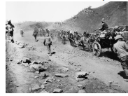
The Boer War lasted for three years, 1899 to 1902. Initially, the Boers were successful. But by the first half of 1900, the Boer army was defeated. Pretoria was occupied. The Boers took to guerrilla fighting. This continued for about two years. In retaliation the British destroyed farms and crops. They set up internment camps for Boer women and children. Shortage of food, medical and sanitary facilities caused the death of 26,000 people. The British annexed the two Boer states. Boers were however promised self-government in due course. In 1907 full responsible government was given to the Transvaal and the Orange Free State. The four states formed into a union and the South Africa Act passed by the British parliament in 1909 provided for a Union Parliament at Cape Town. The Union of South Africa came into being in May 1910.
Box Item start
The descendants of original Dutch settlers of South Africa, also known as Afrikaners, were called Boers. Their language is Afrikaans.
Box Item end
Nationalist Politics in South Africa
There were two main political parties: the Unionist Party which was mainly British, and the South Africa Party which had largely Afrikaners (Boers). The first Prime Minister, Botha belonged to the South Africa Party ruled in cooperation with the British. But a militant section of the South Africa Party formed the National Party under Herzog. In the 1920 elections the National Party gained forty -four seats. The South Africa Party, now led by Smuts, secured forty - one seats. At this juncture the British-dominated Unionist Party merged with the South Africa Party. This gave Smuts a majority over the militant Afrikaner - controlled National Party.
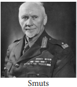
Racist Policy against the Blacks
The Afrikaners pursued a harsher, racist policy towards the blacks and the minority Indians. In 1923 an Act was passed to confine the native residents to certain parts of towns. Already an Act of 1913 had segregated black and white farmers, which made it impossible for the blacks to acquire land in most parts of the country. The 1924 elections were won by the National Party with the support of the Labour movement, composed mainly of white miners. The Act passed in 1924 prevented blacks from striking work and from joining trade unions. In the Cape Province the voting right to blacks was abolished. Native Blacks suffered in all spheres: social, economic and politics.
Box Item start
Apartheid in South Africa Apartheid, which means separateness, became the racial policy of the Nationalist Party in 1947. From 1950 onwards a series of laws came to be enforced. The whole country was divided into separate areas for the different races. Marriage between white and non-white was forbidden. Nearly all schools were brought under government control so that education different from that of the Whites could be implemented for Africans. University education was also segregated. Apartheid is based on the belief that the political equality of White and Black in South Africa would mean Black rule. The ANC which fought the practice of racism was banned and its leader Nelson Mandela was put behind bars. Mounting pressure at the global level helped to end the racist regime in South Africa. In 1990 the ban on ANC was lifted and Mandela freed after 27 years. In the elections held subsequently the Africans were allowed to vote and ANC won the election and Mandela became the first black president of South Africa. Even though apartheid was dismantled the Whites completely dominate the economic sphere.
Box Item end
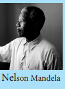
Mayas and Aztecs
Before the European discovery of America three centres of civilisations existed there in Mexico in Central America and in Peru in South America. The Maya, the Inca and the Aztec Civilizations were highly advanced. There were several states in each of these areas of civilisation. Well organised and strong governments existed. Around the eleventh century, large cities formed into a league of Mayapan (centre of Maya civilisation of Native Americans American Indians). For over hundred years the League of Mayapan lasted. Though Mayapan was destroyed towards the close of twelth century, other cities continued. Aztecs from Mexico conquered the Maya country in the fourteenth century and founded their capital city of Tenochtitlan. For nearly two hundred years the Aztecs ruled their empire.
European Colonisation and its Impact
In the sixteenth century (around 1519) when the Aztecs were at the height of their power, the whole empire collapsed before a handful of adventurers led by a Spaniard named Hernan Cortes. Mexican civilisation collapsed. With it the great city of Tenochtitlan also perished. This is one of the world's worst genocides. The other famous Conquistador (conqueror) was also a Spaniard by name Francisco Pizarro. who led the conquest of the Incan Empire. Later the Spaniards made Peru a part of their dominions.
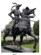
By the late 18thcentury, demand for political freedom, administrative autonomy and economic selft-determination was articulated throughout Latin America. There were bloody conflicts between Haitian slaves, colonists, the armies of the British and the French colonizers. These struggles led by Toussaint L'Ouverture during 1791 to 1804 ended in the Haitian people’s independence from the colonial control of France. Haiti thus became the first Caribbean country to throw off slavery and French colonial control.
Impact of Napoleonic Invasion of Spain and Portugal
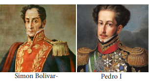
The American and French Revolutions provided inspiration to the Latin Americans. The Napoleonic invasion of Spain and Portugal in 1808 quickened the process of liberation Struggle in South America. Already the spirit of independence was growing under the leadership of Simon Bolivar, called El Liberator, the liberator. In the case of Brazil, the Portuguese royal family in the context of conquest of Portugal by Napoleon fled from Lisbon and thereby assisted the transition of Brazil from colony to independent nation. PedroI renouncing the claim to the Portuguese throne declared independence of Brazil.
The Monroe Doctrine
The fight for independence intensified when Napoleon fell in 1815. But Monroe, the President of the USA, came up with his famous Monroe doctrine, which declared that if Europeans interfered anywhere in America, north or south, it would amount to waging a war against the United States. This threat frightened the European powers. By 1830 the whole of South America was free from European domination. Thus the U.S. protected the South American republics from Europe; but there was no one to protect them from the Protector, the United States.
Disunity among Latin American Nationalists
Latin American nationalists fought not only Spain and Portugal but also each other. In 1821 Central America seceded from Mexico. Later (1839) Central America itself split into five republics (Costa Rica, El Salvador, Guatemala, Honduras, and Nicaragua). Uruguay split from Brazil in 1828. In 1830 Venezuela and Ecuador seceded from Gran Columbia, the republic created by Bolivar.
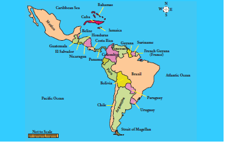
US Imperial Interests
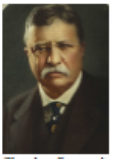
At the dawn of the twentieth century the United States had occupied Cuba and Puerto Rico, after defeating the Spanish in 1898. From 1898 to 1902 Cuba was under US military rule. When the Americans finally left they retained a naval station in Cuba. Roosevelt made an important amendment to the doctrine in 1904. It authorised US intervention in Latin America ‘in order to maintain order.’ After effecting this amendment, the US became the dominant influence not only politically but also in economics.
Great Depression in South America
The situation created by the Great Depression made it impossible for oligarchic regimes to accommodate the rising expectations of several assertive groups. In Mexico, there was violent social protest involving dissatisfied segments of the oligarchy, middle-class intellectuals, and peasant communities. Elsewhere electoral reform enabled newer social groups to obtain political power through the ballot box.
Latin America protested American intervention and disliked their “dollar imperialism”. The opposition to political intervention produced a change in US policy after 1933. Franklin Roosevelt in his “Good Neighbour” policy agreed that the US would not intervene in the internal affairs of any state, and would give economic and technical assistance to Latin America.
Box Item start
Dollar Imperialism, the term used to describe the policy of the USA in maintaining and dominating over distant lands through economic aid.
Box Item end.
SUMMARY
GLOSSARY
solidarity |
a bond of unity, support for a common cause |
ஒற்றுமை உணர்வு, பொதுக்காரியத்திற்கான ஆதரவு |
slump |
a sudden severe or prolonged fall in the price |
விலைவீழ்ச்சி, சரிவு |
bankruptcy |
insolvency, financial ruin |
திவால், கடன் தீர்க்கமுடியாநிலை |
devaluation |
a decrease in the value of a country's currency |
பணமதிப்புக்குறைதல் |
intimidation |
threat, the act of making fearful |
மிரட்டல், அச்சுறுத்தல் |
bolstered |
strengthened |
வலுப்படுத்தினர் |
demoralized |
having lost confidence or hope, disheartened |
மனத்தளர்ச்சி அடைதல், நம்பிக்கை இழத்தல் |
manipulate
|
control or influence a person or situation cleverly, unfairly to achieve a specific purpose |
கெட்டிக்காரத்தனமாய் அல்லது சூழ்ச்சியாய் கையாளு |
annulling
|
declaring invalid or null and void
|
செல்லாதாக்கல், ரத்துசெய்தல் |
EXECRCISE
1. Choose the correct answer
1. With whom of the following was the Lateran Treaty signed by Italy?
a.Germany
b. Russia
c. Pope
d. Spain
2. With whose conquest did the Mexican civilization collapse?
a. Hernan Cortes
b. Francisco Pizarro
c. Toussaint Louverture
d. Pedro first
3. Who made Peru as part of their dominions?
a. English
b. Spaniards
c. Russians
d. French
4. Which President of the USA pursued “Good Neighbour” policy towards Latin America?
a.Franklin D.Roosevelt
b. Truman
c. Woodrow Wilson
d. Eisenhower
5. Which part of the world disliked dollar imperialism?
a. Europe
b. Latin America
c. India
d. China
2. Fill in the blanks
1. The founder of the Social Democratic Party was dash
2. The Nazi Party’s propaganda was led by dash
3. The Vietnam Nationalist Party was formed in dash
4. The Secret State Police in Nazi Germany was known as dash
5. The Union of South Africa came into being in May dash
6. The ANC leader Nelson Mandela was put behind the bars for dash years
7. Boers were also known as dash
3. Choose the correct statement
1. 1. During World War I the primary task of Italy was to keep the Austrians occupied on the Southern Front
2. The first huge market crash in the US occurred on 24 October 1929.
3. The ban on African National Congress was lifted in 1966.
a.1. and 2. are correct
b.3. is correct
c.2. and 3are correct
d.1, 2 and 3 are correct
2. Assertion: The Berlin Colonial Conference of 1884–85 had resolved that Africa should be divided into spheres of influence of various colonial powers.
Reason: The war between the British and Boers in South Africa, however, was in defiance of this resolution
a) Both A and R are right
b. A is right but R is not the right reason
c. Both A and R are wrong
d.A is wrong and R has no relevance to A
4.Match the Following
1. Transvaal –President of Germany
2. Hindenburg - Hitler
3. Third Reich - Italy
4. Matteotti - gold
5. Answer briefly
1. What do you know of the White Terror in Indo-China?
2. What was the result of Mussolini’s march on Rome?
3. How did Great Depression impact on the Indian agriculture?
4. Define “Dollar Imperialism.”
6. Answer in detail
1. Trace the circumstances that led to the rise of Hitler in Germany.
2. Attempt a narrative account of how the process of decolonization happened in India during the inter-war period (1919 to 39).
3. Describe the rise and growth of nationalist politics in South Africa.
7. Activity
1.Each student may be asked to write an assignment on how each sector and each section of population in the USA came to be affected by the Stock Market Crash in 1929.
2. A group project work on Vietnam War is desirable. An album or pictures, portraying the air attacks of the US on Vietnam and the brave resistance put up by the Vietnamese may be prepared.
REFERENCE BOOKS
1. Richard Overy (ed.) Complete History of the World (London: HarperCollins, 2007)
2. Chris Harman, A People’s History of the World (New Delhi: Orient Longman, 2007).
3. R.D. Cornwell, World History in the Twentieth Century (London: Longman, 1972).
4. E.H. Gombrich, A Little History of the World (London: Yale University Press, 2008).
5. Jawaharlal Nehru, Glimpses of World History (New Delhi: Penguin Books, 2004).
Learning Objectives
Introduction
The first half of the twentieth century witnessed two wars which devastated the world. World War I was fought from 1914 to 1918 and World War II began in 1939 and ended in 1945. While the world at large had experienced many wars, these two wars are referred to as “World” wars because of the extended areas of the conflict and the very high death toll of civilians as well as armed combatants. Both wars were fought on several fronts across Europe, Asia and Africa. In both wars, the combined forces of Great Britain, France, Russia and the United States fought against a war alliance led by Germany. Germany’s allies were Italy and Japan in World War II.
a. Causes
The devastation caused by World War I was of such magnitude that it was referred to as The Great War, or The War to End All Wars. The belligerent nations, especially the Allies, had no desire for a second prolonged conflict, and this was the main driving force behind their actions after the end of World War I. The immediate and primary cause of World War II was the aggressive military offensive undertaken by a resurgent Germany and a fastdeveloping Japan.
Germany and Treaty of Versailles, 1919
The Treaty of Versailles ending World War I was signed in June 1919. Among the many clauses of the Treaty, three in particular caused great resentment among the Germans. (i) Germany was forced to give up territories to the west, north and east of the German border; (ii) Germany had to disarm and was allowed to retain only a very restricted armed force; (iii) as reparations for the War, Germany was expected to pay for the military and civilian cost of the War to the Allied nations.
Failure of League of Nations
The Treaty also set up the League of Nations, on the initiative of President Woodrow Wilson of the United States. The League was expected to mediate between countries and take action against countries which indulged in military aggression. The popular mood favoured the traditional isolationist approach, and therefore the United States did not become a member of the League. The other Allied nations were also determined to maintain a non-interventionist attitude and, in consequence, the League remained an ineffectual international body.
Post-War Crisis and Germany
As mentioned above the three main clauses of the Treaty of Versailles, especially the imposition of penal reparations caused great discontent in Germany. The problems which many countries faced in the post-World War I decades led to the rise of extreme right wing dictatorships in Italy (Mussolini), Germany (Hitler) and Spain (Franco).
Germany experienced both high unemployment and severe inflation after the War, and its currency became practically worthless. There are several pictures of the 1920s when ordinary people had to carry money in wheelbarrows to buy bread. This was blamed on the war reparations which Germany was forced to pay, though in the final analysis, the demands for war reparations were moderated over several rounds of negotiations.
The Rise of Adolf Hitler
Adolf Hitler was able to exploit the general discontent among the Germans. Gifted with great oratorical skills, he was able to sway the people by his impassioned speeches, promising a return to the glorious military past of Germany. He founded the National Socialist party, generally known as “the Nazis”. The fundamental platform on which Hitler built his support was the notion of the racial superiority of the Germans as a pure, ‘Aryan’ race and a deep-seated hatred of the Jews. Hitler came to power in 1933 and ruled Germany till 1945.
In direct contravention of the clauses of the Treaty of Versailles, Hitler began to re-arm Germany. The recruitment for the armed forces and the manufacture of armaments and machinery for the army, navy and air force with large amounts of government spending resulted in an economic revival and solved the problem of unemployment in Germany.
Italy’s break with Britain and France in the wake of Mussolini’s invasion of Ethiopia resulted in better relationship between Italy and Germany. In 1936, before Germany invaded the Rhineland, which was supposed to be a demilitarised zone, Rome- Berlin Axis had come into being. Later, with Japan joining this alliance, it became Rome- Berlin -Tokyo Axis. In 1938, Hitler invaded Austria and Czechoslovakia. Sudetenland in Czechoslovakia was German speaking, and Hitler’s claim was that the German speaking people should be united in to one nation.
Allies and Non-Intervention
There were also acts of aggression by Italy and Japan. Italy invaded Ethiopia in 1935 and Albania in 1939. Emperor Haile Selassie of Ethiopia appealed to the League of Nations, but got no help. In the East, Japan was pursuing its policy of military expansion. In 1931, Japan invaded Manchuria, and in 1937 it invaded China and seized Beijing. All these were ignored by the Allies and the League of Nations was unable to take any action.
In spite of all these manifestations of military activity by Germany, Italy and Japan, Britain and France continued to be non-interventionist. The mood in Britain was not in favour of starting another war. Prime Ministers Baldwin and Chamberlain did not feel justified in intervening in a region which was not officially in their sphere of interest. The United States was totally indifferent to the outside world, and was concerned with the revival of the economy after the Great Depression.
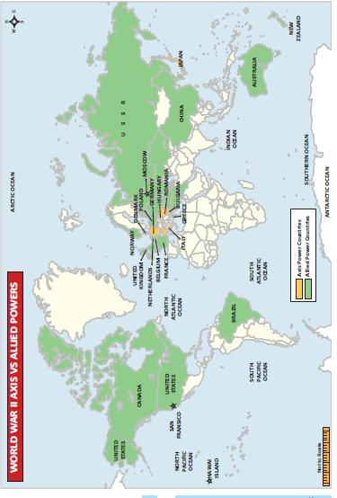
Munich Pact
A further factor was that the western powers and the Soviet Union distrusted each other. In 1938, Prime Minister Chamberlain concluded the Munich Pact with Germany, which was a shameful acceptance of Germany’s invasion of Czechoslovakia to annex German-speaking Sudetenland. In 1939 the Soviet Union independently concluded a non-aggression pact with Germany. The continued passivity of the Allies and the reluctance to start building up their armies were also contributory causes of the extended scale of World War II.
Though Hitler gave an assurance in the Munich Pact that Germany would not attack any other country, this was broken immediately. In 1939 he invaded Czechoslovakia. Poland was attacked next, and this was the final act which resulted in the declaration of war by Britain and France against Germany. In Britain, Prime Minister Chamberlain resigned in 1940 and Winston Churchill, who had always warned about Hitler and his military ambitions, became Prime Minister.
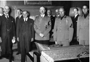
b. Course of World War II
Nature of the War
World War II was fought on two distinct fronts - Europe and the Asia Pacific. In Europe, the war was fought by the Allies against Germany and Italy. In the Asia Pacific, the Allies fought Japan.
World War II was a modern war fought with heavy military equipment such as tanks,submarines, battleships, aircraft carriers, fighter planes and bomber planes. This involved a very large resource base, since all this equipment needed to be manufactured. There had to be raw materials, manufacturing capacity and technical inputs to improve the military hardware. This was an expensive and prolonged war of attrition.
Outbreak of War
Britain and France declared war on Germany in September 1939. In June 1940, Italy joined Germany, and in September 1940, Japan also joined the Axis powers.
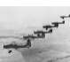
There was little action immediately after the declaration of war. Britain had already begun to build up its military capabilities, and all young men were conscripted for military duty. The first years of the War were a time of spectacular successes of the Germany army which occupied Denmark and Norway and later France. By 1941, all of mainland Europe till the Russian frontier was under the Axis powers. The German army followed a tactic of ‘lightning strike’ (Blitzkrieg) to storm into various countries and overrun them.
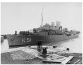
The British Royal Navy continued to be the most powerful among the European naval forces and ensured that a sea-borne invasion of Britain was not possible. However, Britain depended on large scale imports of food, raw materials and industrial goods by sea from its Empire and the US. To attack this, Germany developed a fleet of submarines which caused havoc, especially in the Atlantic Ocean area, by sinking a large number of civilian ships carrying supplies to Britain.
Important Events
Dunkirk – In May 1940 more than 300,000 British and French soldiers were back to the beaches in Dunkirk. Britain would have found it difficult to regroup if so many of her soldiers had been lost at Dunkirk.
‘Battle of Britain– By July 1940, it was feared that the Germans were planning to invade Britain. Hitler wanted to force Britain to accept his proposals for peace by a prolonged air-borne bombing campaign. The German air force began to attack specific targets, especially the ports, airfields and industrial installations. In September 1940, London was bombed mercilessly, an action known as The Blitz. By October 1940, night bombing raids on London and other industrial cities began.
This campaign failed because with the aid of a newly developed and top secret device ‘radar’ for detecting aircraft while still at a distance, the fighter planes of the Royal Air Force (Spitfires and Hurricanes) were able to inflict severe losses on the German bombers. The raids stopped after October 1940. The Germans dropped their plans to invade Britain because of the failure of the air battle.
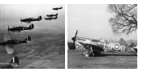
Lend Lease 1941–1945
President Roosevelt realized that the United States had to change its policy of isolation, but could not intervene directly in the War in Europe, because it was not politically feasible. So he started a programme of “Lend Lease” in March 1941. Arms, food, military equipment and other supplies were sent to Britain, disguised as a “loan”, which would be returned after use. This augmented the resources of Britain to a great extent. Between 1941 and 1945, the total aid under Lend Lease amounted to $46.5 billion.
Invasion of Russia 1941to1942
In June 1941 the German army invaded Russia. The long-term objectives of this move were to seize prime land for settling Germans, to destroy the communist regime, and also exploit Russia’s natural resources, especially oil. The German strategy of lightning strikes was initially successful and the army penetrated 1000 miles into Russian territory very soon. The German army then marched on Moscow. But ultimately, the resistance by the Soviet army, and the fierce Russian winter defeated the German army.
Battle of Stalingrad (17 July 1942 to 2 February 1943)
In August 1942, the Germans attacked Stalingrad.Stretching about 30 miles (50 kilo metre) along the banks of the Volga River, Stalingrad was a large industrial city producing armaments and tractors. Capturing the city would cut Soviet transport links with southern Russia, and Stalingrad would then enable the invading Germans to have access to the oil fields of the Caucasus. In addition, seizing the city that bore the name of Soviet leader Stalin would serve as a great personal and propaganda victory for Hitler. German war planners hoped to achieve that end with Fall Blau (“Operation Blue”). On June 28, 1942, operations began with significant German victories.
Russian people suffered not only from bad working and living conditions, but also from ill-treatment at German hands in the occupied areas. There were about 15 million civilian deaths during the war, and about 10 million members of the armed forces were killed. All together over one-tenth of Russia’s population died. Yet the people remained loyal to the government, despite Hitler’s hopes of an anti- Stalin revolution. They successfully defended the city of Stalingrad.
Battle of El Alamein 1942
In the early years of the War, German forces under General Rommel were remarkably
successful in occupying North Africa rapidly, leaving the British with only Egypt. The Allied forces under General Montgomery counter-attacked and defeated the German and Italian forces at El Alamein in North Africa. The German army was chased across the desert, out of North Africa. This provided the base for the Allied forces to invade Italy.
Surrender of Italy 1943
Mussolini had been thrown out and the new government of Italy surrendered to the Allies in 1943. However, the Germans set Mussolini up in a puppet regime in the north. Mussolini was killed in April 1945, by Italian partisans.
End of Hitler
The Allied forces under the command of General Eisenhower invaded Normandy in France. Slowly, the German army was forced back. But the Germans fought back and the War continued for nearly another year, and finally ended in May 1945. Hitler committed suicide in April 1945.
From 1944, the Russian army began to attack Germany from the East and captured much of Eastern Europe and Poland. In 1945, they occupied parts of Berlin, so that Germany was divided into two sections after the War.
War in the Asia-Pacific Region
Japan had entertained visions of a glorious empire, very much on the same lines as Hitler. The Japanese army invaded Manchuria in 1931.Though China appealed to the League of Nations, this act of aggression did not attract the attention of the United States or Britain. In 1937, Japan invaded China, and seized Beijing (Peking, as it was then known) which had traditionally been the capital of China. The region around Shanghai was also captured, and Nanjing (Nanking), the capital was captured at the end of the year. The Japanese army indulged in the biggest slaughter ever known in history in Nanjing. Civilians were killed en masse for sport, and all females – from children to old women – were tortured and killed. Guangzhou
(Canton) and many other parts of China were overrun. The Chinese army, under Chiang Kai-shek retreated to the west to the hilly country from where they continued to fight the Japanese.
Pearl Harbour 1941
On December 1941, Japan attacked American naval installations in Pearl Harbour, Hawaii, without warning. The idea was to cripple America’s Pacific fleet so that Japan would not face any opposition in its offensive against South-east Asian countries. Many battleships and numerous fighter planes were destroyed. The United States declared war on Japan, with Britain and China also joining in. This brought together both the Asia Pacific and the European war into one common cause. Most importantly, it brought the United States with its enormous resources into the war as a part of the Allies.
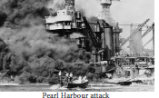
Japanese Aggression in South-east Asia
The Japanese had spectacular success in their plan to extend their empire throughout South-east Asia. Guam, the Philippines, Hong Kong, Singapore, Malaya, the Dutch East Indies (Indonesia) and Burma, all fell to the Japanese.
Battle of Midway and Battle of Guadalcanal 1942
The US navy defeated the Japanese navy in the Battle of Midway, which turned the tide in favour of the Allies. The Battle of Guadalcanal in the Solomon Islands was a combined offensive involving the army and the navy, and lasted for several months. Both were crushing defeats for the Japanese.
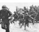
After this, the American forces were able to re-take the Philippines. Gradually the Japanese were thrown out of most of their conquered territories. In 1944, the combined British and Indian armies were able to push back the Japanese who attempted to invade the north-east of India. Then, along with the Chinese, they pushed the Japanese out of Burma, and liberated Malaya and Singapore.
Hiroshima and Nagasaki,August 1945
As a top secret project, using the latest scientific advances, the US developed an atomic bomb immensely more powerful than conventional explosives. The Japanese generals refused to surrender and finally the US dropped an atomic bomb on Hiroshima. As the Japanese still refused to surrender, another atom bomb was dropped on Nagasaki. Japan ultimately announced surrender on 15 August 1945 and formally signed 2 September 1945 bringing an end to World War II.
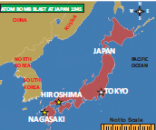
C. Effects of the War
New geo-political power alignment: World War II changed the world in fundamental ways.
The world was polarized into two main blocs led by superpowers, one led by the United States with a pronounced anti-Communist ideology, and the other by Soviet Russia. Europe was divided into two: Communist and non-Communist.
Nuclear proliferation: The United States and the Soviet Union entered into a race to have more nuclearpowered weapons. They built a large stockpile of such weapons. Defence spending sky-rocketed in many countries.
International agencies: Many international agencies, in particular the United Nations, the World Bank and the International Monetary Fund came into existence providing a forum for countries large and small.
Colonial powers were forced to give independence to former colonies in a process of decolonization. India was the first to achieve independence.
After Hitler came to power, the Jews were persecuted in many ways. They were deprived of their civilrights, their properties were confiscated and many were confined to ghettos. Eventually, the Nazis came up with the notion of the Final Solution, which was to exterminate the Jews completely.
Box Item start
The word ‘holocaust’ is used to describe the genocide of nearly six million Jews by the Germans during World War II. Annihilating the Jews was one of the main items on the political agenda of Hitler and the Nazis. Hitler was able to play on the anti-Jewish feelings (anti-Semitism) which were common in Germany and, in fact, throughout Europe. Jews were scattered all across Europe and many had become prominent in business, in performing arts and professional fields. Money-lending was a major business activity among Jews and this strengthened the prejudice against them. Shakespeare’s play, The Merchant of Venice clearly depicts the dislike and distrust of Jews among the people.
Box Item end
Universal Declaration of Human Rights
In the aftermath of the Holocaust the UNO in its Charter, pledged to promote universal respect for and observance of human rights and fundamental freedoms for all without distinction to race, sex, language and religion. The UN efforts to protect human rights on a global basis resulted in the constitution of UN Commission on Human Rights. A committee constituted under its auspices was chaired by Eleanor Roosevelt wife of late President Franklin Roosevelt. The members of the Commission included Charles Malik of Lebanon, P.C. Chang of Nationalist China, John Humphrey of Canada, and Rene Cassin of France. The Universal Declaration of Human Rights was its important contribution. The Universal Declaration of Human Rights set forth fundamental human rights in 30 articles. The UN adopted this historic Charter on 10 December 1948. This day (10 December) is observed globally as Human Rights Day. Provisions of some ninety national constitutions since 1948, according to the Franklin and Eleanor Roosevelt Institute in New York, can be traced to this Declaration.
Birth of Israel
A major outcome of the Holocaust was the creation of the state of Israel as a homeland for the Jews. While this was historically the original home of the Jews during Roman times.
By 1941 the United States and Britain began to give serious consideration to the need for international cooperation for achieving lasting peace among all nations. International economic and financial stability were also important objectives. All these would need international organizations with members of the various nations across the world working together for these common objectives. This ultimately resulted in the establishment of the United Nations, the World Bank and the International Monetary Fund, with many associated organizations which deal with basic issues of importance for all societies and countries.
United Nations
The first initiative for the United Nations came from the United States and Britain in 1941 when they issued a joint declaration known as the Atlantic Charter. This Declaration of the United Nations was accepted by all the 26 countries which were fighting against the Axis powers (Germany, Italy and Japan) on New Year’s Day, 1942.The Charter of the United Nations was signed on June 26, 1945 by 51 nations. India which was not an independent country then also was a signatory to the Charter. Now the United Nations has 193 member states and each one - big or small - has an equal vote in the United Nations.
Box Item start
"We, the peoples of the United Nations, determined to save succeeding generations from scourge of war, which twice in our lifetime has brought untold sorrow to mankind, and to reaffirm faith in fundamental human rights, in the dignity and worth of the human person, in the equal rights of men and women, and of nations large and small” to from The Preamble to the United Nations
Box Item end.
General Assembly and Security Council
The United Nations functions almost like any government, through its principal organs which are similar to the legislative, executive and judicial wings of a state. In the General Assembly is the body in which each member state is represented. It meets once a year and issues of interest and points of conflict are discussed in the Assembly. The Security Council has fifteen members. Five countries - the United States, Britain, France, Russia and China - are permanent members, and there are ten temporary members who are elected in rotation. These two bodies function like a legislature. Each of the permanent members has the right to veto any decision by the other members of the Security Council. This right has often been used to block major decisions, especially by the superpowers, the US and Russia. Major issues and conflicts are discussed in the Security Council.
Administrative Structure
The executive wing of the United Nations is the UN Secretariat. It is headed by the Secretary General, who is elected by the General Assembly on the recommendation of the Security Council. The Secretary General, along with his cabinet and other officials, runs the United Nations. The International Court of Justice, headquartered at The Hague in Holland, is the judicial wing of the United Nations. The Economic and Social Council (ECOSOC), the fifth organ of the United Nations, is responsible for coordinating all the economic and social work of the United Nations. The regional Economic Commissions functioning for regional development across the various regions of the world (Asia Pacific, West Asia, Europe, Africa and Latin America) are organs of ECOSOC. They have been very successful, and have been headed by eminent economists like Gunnar Myrdal.
Other Important Organs of the UN
Associated organizations deal with areas of critical interest to the world at large like food, health and education, and culture. These are: Food and Agriculture Organisation (FAO), World Health Organisation (WHO), UNESCO (UN Educational, Scientific and Cultural Organisation). There are also special organizations funded voluntarily by member countries. The two best known among them are UNICEF (United Nations Children’s Fund) which promotes child health and welfare across the world, and the UNDP (United Nations Development Programme), which focuses on development.
Activities of the UN
Over the decades, the United Nations has expanded its activities in response to the changing problems facing the world. Thus, in the 1960s, decolonization was an important issue. Human rights, the problems of refugees, climate change, gender equality are all now within the ambit of the activities of the United Nations. A special mention must be made of the UN Peacekeeping force, which has acted in many areas of conflict all over the world. The Indian army has been an important part of the peacekeeping force and has been deployed in many parts of the world.
World Bank
The World Bank and the International Monetary Fund, referred to as the “Bretton Woods Twins”, were both established in 1945 after the Bretton Woods Conference in 1944. Located in Washington D.C. in the United States, they have the same membership, since a country cannot be a member of the Bank without being a member of the Fund.
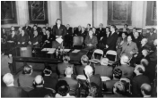
The two main organs of the World Bank are the International Bank for Reconstruction and Development (IBRD) and the International Development Agency (IDA), Together they are often referred to as the World Bank. The main responsibility of the IBRD in the initial years was to fund the reconstruction activities under the Marshall Plan in the European countries devastated by the war. The agenda later expanded to promote economic development in poorer countries and the Bank lends money to various countries for developmental projects. A further area of interest is poverty alleviation, especially in the rural areas of developing countries. The International Development Agency (IDA) also lends money to governments for developmental activities. These loans are “soft” loans, and are given at very low rates of interest for a period of 50 years. The International Finance Corporation (IFC) mainly functions with private enterprises in developing countries.
In recent years the Bank is actively promoting the achievement of the Millennium Development Goals which aim at improving living standards, removing illiteracy, empowering women and improving maternal and child health, improving the environment and eradicating AIDS.
International Monetary Fund (IMF)
The International Monetary Fund was primarily the brainchild of Harry Dexter White and John Maynard Keynes, the famous economist. It was formally organized in 1945 with 29 member countries. It now has a membership of 189 countries. Its primary objective is to ensure financial stability and development across the world. The main agenda is to promote international monetary cooperation, expansion of international trade and exchange stability. The Fund lends money from its resources to countries facing balance of payments problems (because they are unable to pay for their imports). It however imposes stringent conditions on the borrowing nations to tighten their budgets, practice fiscal prudence and reduce their expenditure. This is often unpopular, especially among the developing countries which may have to cut down on various programmes which provide subsidies to the people.
Box Item start
The objectives of the IMF are: “to foster global monetary cooperation, secure financial stability, facilitate international trade, promote high employment and sustainable economic growth and reduce poverty around the world.”
Box Item end
The term Welfare State refers to the concept that the government is responsible for the social and economic welfare of the people, thus expanding the role of the state beyond providing defence and maintaining law and order.
In 1942, the Report commonly known as the Beveridge Report was published in the United Kingdom which proposed a series of measures which the government should adopt to provide citizens with adequate income, health care, education, housing and employment to overcome poverty and disease which were the major impediments to general welfare.
After the War, the Labour party was voted into power in Britain. It promised to undertake steps to look after the people “from the cradle to the grave”. Legislation was enacted to provide comprehensive free health coverage to the citizens through the National Health Service and monetary benefits like old page pensions and unemployment benefits, childcare services and family welfare services. These are in addition to universal, free school education to all children.
The benefits can either be achieved through cash transfers, like old age pensions and unemployment compensation, or through free services. In addition, these countries also try to minimize economic disparities through progressive taxation by taxing the higher income groups at relatively high rates.
SUMMARY
GLOSSARY
Devastation or havoc |
total destruction |
பேரழிவு |
belligerent |
one eager to fight or aggressive |
போர் நாட்டம் |
resurgent |
rising again |
மீண்டெழுகிற |
reparations |
compensation exacted from a defeated nation by the victors |
இழப்பீடுகள் |
armaments |
weapons |
போர்த்தளவாடங்கள் |
conscripted |
compulsory military service |
கட்டாய இராணுவ சேவைக்கு அழைக்கப்பட்ட |
slaughter |
kill a large number of people indiscriminately |
வதைத்துக் கொல்லுதல்
|
proliferation |
a rapid increase |
பல்கிப் பெருகுதல் |
ghettos |
slums |
குடிசைத்தொகுதி |
veto |
a vote that blocks a decision or negative vote |
மறுப்பாணை or எதிர்வாக்கு |
ambit |
range |
வரம்பு or எல்லை |
scourge |
eternal suffering |
மீளாத்துயரம் |
stringent |
tough |
கடுமையான |
EXERCISE
1. Choose the correct answer
1. When did the Japanese formally sign of their surrender?
a. 2 September, 1945
b. 2 October, 1945
c. 15 August, 1945
d.12 October, 1945
2. Who initiated the formation of League of Nations?
a. Roosevelt
b. Chamberlain
c. Woodrow Wilson
d. Baldwin
3. Where was the Japanese Navy defeated by the US Navy?
a. Battle of Guadalcanal
b. Battle of Midway
c. Battle of Leningrad
d. Battle of El Alamein
4. Where did the US drop its first atomic bomb?
a. Kavashaki
b. Tokyo
c. Hiroshima
d. Nagasaki
5. Who were mainly persecuted by Hitler?
a. Russians
b. Arabs
c. Turks
d. Jews
6. Which Prime Minister of England who signed the Munich Pact with Germany?
a. Chamberlain
b. Winston Churchill
c. Lloyd George
d. Stanley Baldwin
7. When was the Charter of the UN signed?
a. June 26, 1942
b. June 26, 1945
c. January 1, 1942
d. January 1, 1945
2. Fill in the blanks
1. Hitler attacked dash which was a demilitarised zone.
2. The alliance between Italy, Germany and Japan is known as dash.
3. dash started the Lend Lease programme.
4. Britain Prime Minister dash resigned in 1940.
5. dashis a device used to find out the enemy aircraft from a distance.
3. Choose the correct statement
1. Assertion: President Roosevelt realised that the United States had to change its policy of isolation.
Reason: He started a programme of Lend Lease in 1941.
a. Both A and R are correct
b. A is right but R is not the correct reason
c. Both A and R are wrong
d. R is right but it has no relevance to A
4. Match the Following
1. Blitzkrieg - Roosevelt
2. Royal Navy - Stalingrad
3. Lend Lease - Solomon Island
4. Volga - Britain
5. Guadalcanal - lightning strike
5 Answer the questions briefly
1. Who were the three prominent dictators of the post-World War I?
2. How did Hitler get the support from the people of Germany?
3. Describe the Pearl Harbour incident.
4. What do you know of BeveridgeReport?
5. Name the Bretton Woods Twins.
6. What are the objectives of IMF?
6. Answer in detail
1. Analyse the effects of the World War II.
2. Assess the structure and the activities of the UN.
7. Students Activity
1.Marking the Allies and Axis countries, as well as important battlefields of World War II in a world map.
8. Map Work
Mark the following on the world map.
1. Axis Power Countries
2. Allied Power Countries
3. Hiroshima, Nagasaki, Hawai Island, Moscow, San Fransico
REFERENCE BOOKS
1. R.D. Cornwell, World History in the Twentieth Century, London: Longman, 1972.
2. C.V. Narasimhan, Th e United Nations - An Inside View, New Delhi: Vikas, 1988.
3. Encyclopaedia Britannica, vol. 23 (1962 edition).
4. Chris Harman, A People’s History of the World (Delhi: Orient Longman, 2007)
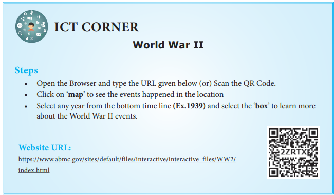
Learning Objectives
To acquaint ourselves with
Introduction
In the aftermath of Second World War a new era began. It was the beginning of the decline of European colonial empires and the independence of colonies in Asia and Africa. If the effects of World War I led to the communist revolution of Russia, the Second World War played a big part in the communist revolution in China. The emergence of the US and the USSR as super powers resulted in the division of the world into two antagonistic blocs. A cold war situation triggered deadly conflicts in Korea, Cuba, Vietnam and West Asia.
Under the Marshall Plan for reconstruction of the war-ravaged Europe, the US won the trust of the great powers in Europe. Soviet Russia, by demonstrating solidarity with the liberation struggles of countries in Asia and Africa, earned the goodwill of the latter.
The Non-Aligned Movement played a limited role in containing the conflict between the two power blocs. In a bid to wriggle out of US control, European countries started the European movement in the form of Council of Europe. This developed into the European Common Market and finally into what is today the European Union. The Cold War period ended with the fall of Berlin Wall.
a. China in the Pre-War Period
In its long history, Chinese civilization was more advanced than that of Europe. But by the end of the nineteenth century, its progress had halted. The Manchus, the ruling dynasty, had governed China since about 1650. The entire administration system was in the hands of a bureaucracy of scholar-officials called mandarins who came from the landed gentry. The mass of peasant population was poverty-stricken, and suffered from high rents, high taxes, and shortage of land. There was very little industry, though some railways and engineering works had been built.
Discontent with the political and economic system resulted in a number of peasant uprisings. The Taiping Rebellion (1850 to 64) was a major rebellion. In the two opium wars of 1832 and 1848, China was defeated and was compelled to open its ports to western powers. The opening of China to western imperialism led to economic exploitation and the impoverishment of the Chinese people.
The European presence produced a profound hatred of foreigners. This combined with military defeat, led to more pressing demands for reforms from the Western-educated intellectuals. In 1898, the young Emperor, initiated a series of reforms known as the Hundred Days of Reform. But these reforms aroused tremendous opposition from the powerful conservatives and the Dowager-Empress Tzú Hsi. She imprisoned the Emperorand reversed the reforms.
b. The Chinese Revolution 1911
The disintegration of the Manchu dynasty began with the death of the Dowager-Empress in 1908. The new emperor was two-years old and the provincial governors began to assert their independence. In October 1911 the local army mutinied and the revolt spread. Provincial governors removed the Manchu garrisons and proclaimed their independence. Already there were a few middle-class leaders. Dr. Sun Yat-sen was one among them. On hearing the news of the rising in a newspaper in the United States Sun Yat-sen arrived in Shanghai and was immediately elected provisional president of the new Chinese Republic.
Box Item start
Dr. Sun Yat-sen (1866 to 1925)
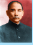
Born in a poor family near Canton, Dr. Sun Yat-sen, the father of modern china was educated in a mission school and became a Christian. He was then trained as a doctor of medicine in Hong Kong. Evincing interest in politics he took part in a rising against the Manchus in 1895. In 1905 he founded in Tokyo the political party which in 1912 became the Kuomintang or the National People’s Party. Dr. Sun Yat-sen’s three principles were Nationalism, Democracy, and People’s livelihood with Socialism as the ultimate object.
Box Item end
c. Yuan Shih-kai and After
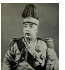
The unity of China under Yuan Shih-kai lasted for four years. On his death in 1916 a new President was appointed for the next twelve years but the government was central only in name.
d. Communist Party of China
With the Revolution and the breakup of the old society, Confucian thought was generally side-lined and after the Russian Revolution of 1917, the ideas of Marx and Lenin became popular among intellectuals. In 1918 a Society for the Study of Marxism was formed in Peking University. Among the students who attended was Mao Tse-tung.
Box Item start
Mao Tse-tung (1893–1976)
Mao was born in Hunan in south-east China. His father was a wealthy peasant, and a firm supporter of the Manchus. Mao, who was very fond of reading, soon showed his ability and entered the Junior College at Changsha. This was the year (1911) when the Revolution had broken out in China. Mao joined the revolutionary army but soon left and enrolled in the Teachers’ Training College in Changsha. In the following year Mao began his full-fledged political activities of Hunan and emerged as a staunch Communist.
Box Item end
Kuomintang and Chiang Kai Shek
After the death of SunYat Sen the leader of the Kuomintang was Chiang Kai-shek. While the Communist Party was under Mao Tse Tung and Chou En Lai. As an avowed critic of Communists, Chiang removed all of them from important positions in the party. The communists increased their influence among the workers and peasants and obtained recruits for their army. The Kuomintangrepresented the interests of the landlords and capitalists.
In 1928 he was successful in capturing Peking. Once again there was a central government in China.
Mao as Organizer of Peasants
Mao had understood that the Kuomintang grip on the towns was very strong. So he concentrated his energies on organizing the peasantry. A few hundred Communists led by Mao retreated into the wild mountains. Here they stayed for the next seven years. As the army of Mao was gradually growing, the Kuomintang was unable to penetrate the mountains. The campaign against the communists was distracted as Chiang Kai-shek had to deal with the constant threat from Japan and also the attacks from war lords.
The Long March 1934
As Chiang Kai-shek had built a circle of fortified posts around the communist positions, Mao wanted to move out of Hunan for safer territory. By 1933 Mao had gained full control of the Chinese Communist party. In 1934, the Communist army of about 100,000 set out on the Long March. This march has become legendary. Of the 100000 who set out, only 20,000 finally reached northern Sheni late in 1935, after crossing nearly 6000 miles. They were soon joined by other communist armies. By 1937 Mao had become the leader of over 10 million people.
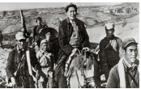
Japanese Aggression
Japan continued to occupy north Chinese provinces while developing Manchuria as a military base. Mao believed that Chiang Kai-shek was necessary for some time to hold together Kuomintang to fight the Japanese. As a consequence of this pragmatic policy, the attacks on the communists gradually stopped.
Communist Victory
With the surrender of the Japanese (1945), both the Kuomintang and the communists sought to occupy the Japanese areas. In this race the Kuomintang was successful. The cities and railways soon fell into their hands. Even the area around Peking was soon controlled by Chiang Kai-shek’s forces, largely because of the military aid given by the USA.
With the massive support provided by the USA Kuomintang government controlled the administration, ports and communication system. But the soldiers, mainly drawn from the peasants, were disillusioned and discontented. Mao was keen on obtaining the support of the middle class.So he declared that what the communists wanted was the rule of the people, not the dictatorship of the proletariat; the end of exploitation, not absolute equality.
National People’s Congress
In September 1949, before fighting had ended in the south of China, the people’s Political Consultative Conference met in Peking. Consisting of over 650 delegates from the Communist Party and other left-wing organizations, the conference elected the Central Governing Council with Mao as its Chairman.
The establishment of the People’s Republic of China under the leadership of Mao Tse Tung was a world-shaking event. There were now two mighty Communist powers in the world —the Soviet Union and People’s Republic of China.
Denial of UNO Membership
The United-States refused to recognize the People’s Republic of China for more than two decades.
In 1948 the Soviets had established socialist governments in the countries of eastern Europe that had been liberated from the Nazis by the Soviet Army. Truman, the president of USA, pursued a policy of containment of communism. The Soviets were however determined not only to maintain control of eastern Europe, but also keen on spreading Communism world-wide.
Box Item start
Cold War: The rivalry that developed after World War II between the US and the USSR and their respective allies created tension which is referred to as Cold War. They did not take recourse to weapons. Instead, they waged war on political, economic and ideological fronts.
Box Item end
2.Marshall Plan
The US conceived the Marshall Plan to bring the countries in western Europe under its influence. The plan sought to help the countries of Europe with American dollars to facilitate their early recovery from the destruction caused by the Second World War.
Box Item start
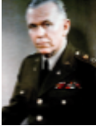
The United States was much concerned that poverty, unemployment, and dislocation caused by the post-World War II period were increasing the appeal of communist parties in western Europe. The Secretary of State, George C. Marshall, advanced the idea of a European self-help programme to be financed by the United States. Sixteen nations, became part of this programme. Administrative and technical assistance was offered through the Economic Cooperation Administration (ECA) of the United States. Marshall Plan funding ended in 1951.
Box Item end.
a. NATO
The United States and its European allies formed the North Atlantic Treaty Organization (NATO) to resist Soviet aggression in Europe (1949). It was an inter-state military alliance between the countries of North America and Europe. The major member countries included Canada, Belgium, Denmark, France, Iceland, Italy, Luxemburg, the Netherlands, Norway, Portugal and the United Kingdom. Later Greece and Turkey joined the organization (1952). Germany joined the NATO in 1955. The chief objective of NATO was the peace and security in the North Atlantic region.
b. SEATO or Manila Pact (1954)
The Southeast Asia Treaty Organization (SEATO) was organized for the collective security of countries in Southeast Asia. Following the signing of the Manila Pact (1954) by the US, France, England, New Zealand, Australia, the Philippines, Thailand and Pakistan. Member countries of SEATO were committed to prevent communism from gaining ground in the region. Unlike the NATO alliance, SEATO had no joint commands with standing forces.
c. Warsaw Pact
As a counter to the NATO, Soviet Union organized the Soviet-bloc countries for a united military action, under the Warsaw Pact. In December 1954, a conference of eight European nations namely, Albania, Bulgaria, Hungary, Czechoslovakia, East Germany, Poland, Romania and Russia took place in Moscow. They concluded the treaty on May 14, 1955. This is known as the Warsaw pact. A joint command of armed forces of the member countries with its headquarters in Moscow was setup. The Warsaw Pact was dissolved in 1991 following the break-up of USSR.
d. CENTO or the Baghdad Pact
In 1955 Turkey, Iraq, Great Britain, Pakistan and Iran signed a pact known as Baghdad Pact. In 1958 the United States joined the organisation and thereafter it came to be known as the Central Treaty Organization. This treaty was open to any Arab nation desiring peace and security in the region. CENTO was dissolved in 1979.
The Korean War made the Cold War really hot. Since Korea was partitioned as North and South (1945), each side sought to win legitimacy by unifying the country. The President of North Korea Kim II (People’s Republic of Korea) decided to act before his southern rival, Syngman Rhee (the Republic of Korea), got the chance. He launched an attack in June 1950, with the tacit support of Stalin. Both Kim and Stalin did not expect the US to intervene. The war lasted for three years. The human cost was enormous. But the Korean people gained nothing.
Third World Countries
The capitalist countries led by the U.S. were politically designated as the First World, while the communist states led by the Soviet Union came to be known as the Second world. States outside these two were called Third World.
The Non-Alignment Movement (NAM) emerged in the wake of decolonization that followed World War II. At the Bandung (a city in Indonesia) conference (1955), the newly independent countries of Asia and Africa gave a call for abstaining from allying with any of the two Super Powers. It also pledged to fight all forms of colonialism and imperialism.
The NAM held its first conference at Belgrade in 1961 under the leadership of Tito (Yugoslavia), Nasser (Egypt), Nehru (India), Nkrumah (Ghana) and Sukarno (Indonesia). The basic principles of non- alignment, as listed in the statement issued at the Belgrade (a Serbian city, then part of Yugoslavia) Conference, were: peaceful co-existence, commitment to peace and security, no military alliance with any super power, no permission for any super power to build its military base in its territories. With the collapse of Soviet Union, the idea of non-alignment lost relevance.
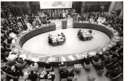
The United States had its satellite states in Central America (Honduras, El Salvador, Nicaragua, Panama and Guatemala), the Caribbean (Cuba, the Dominion Republic and Haiti) and east Asia (the Philippines, South Korea, South Vietnam and Thailand). These states were governed by ruling groups made up of military personnel, landed gentry and occasionally of local capitalists.
After Castro took power, the US-owned oil refineries on the island refused to process Russian oil. Castro nationalized them. The US retaliated by ending the arrangement by which it bought the bulk of Cuba’s sugar. Castro nationalized the US-owned sugar companies. and ended the US monopolies in electricity and telephones. All these gravely threatened American economic interests.
Cuban Missile Crisis
In April 1961, while landing an army of Cuban exiles on the island of Bay of Pigs, the US bombed Cuban airfields with the objective of overthrowing Castro’s regime. US warships surrounded Cuba. The Kennedy government had received intelligence that the USSR was secretly installing nuclear missiles in Cuba. Finally, the Soviet President Khrushchev agreed to withdraw the missiles and thus the Missile Crisis was defused.
Eventually the two sides reached an agreement. The Soviet Union removed the missiles from Cuba on an understanding that the US would never invade Cuba again.
The Treaty of Versailles (1919) had provided for mandates in Turkish Arab Empire. France was given the mandate for Syria and Lebanon, and Britain for Iraq, Palestine and Jordan. This arrangement upset the Arabs since they had expected independence at the end of World War I. Britain’s promise to Zionist leaders that it would allocate one of the Arab lands, Palestine, to Jewish settlers from Europe further embittered the Arabs. There was growing Arab antagonism towards Zionist settlers, as they bought land from rich Arabs and evicted the local peasant families who had been cultivating it for centuries.
At the end of October 1945, the Jewish underground organizations like Irgun Zvai Leumi (Zionist Para-military Organization) and the Stern Gang (Zionist Terrorist Organization) began to launch terror attacks on a large scale. Railways, bridges, airfields and government offices were blown up. The British government, presented the dispute to the UN for a decision.
Succumbing to the pressure of great powers, the UN resolved to partition the British mandate of Palestine into a Jewish state and an Arab state (29 November 1947). Clashes broke out almost immediately between Jews and Arabs in Palestine.
Box Item start
Zionist Movement: In Palestine, the ancient home of Jews, only a few thousand Jews were living in 1900. Some 15 million were scattered around Europe and North America. (This is referred to as the Diaspora.) In 1896 Thodore Herzel, a Viennese journalist, published a pamphlet called The Jewish State in which he called for the creation of a Jewish national home. Next year (1897) the World Zionist Organisation was founded.
Box Item end.
The Israelis, won control of the main road to Jerusalem and successfully repulsed repeated Arab attacks. As a result of separate armistice agreements (1947 Feb to June) between Israel and each of the Arab states, a temporary frontier was fixed between Israel and its neighbours. In Israel, the war is remembered as its War of Independence. In the Arab world, it is treated as the Nakbah (“Catastrophe”) as a large number of Arabs became refugees. Israel was admitted into the UN immediately much against the wishes of Arabs.
Suez Canal Crisis (1956)
In Egypt, in a coup in 1952, Colonel Nasser became its President. In 1956 he nationalized the Suez Canal, which undermined British interests. With the failure of diplomacy, Britain and France decided to use force. Israel saw this as an opportunity to open the Gulf of Aqaba to Israeli shipping and put a stop to Egyptian border raids. On 29 October Israeli forces invaded Egypt. Britain used this opportunity to demand that its troops be allowed to occupy the canal zone to protect the canal. Egypt refused and on 31 October Britain and France bombed Egyptian airfields and other installations as well as the Suez Canal area. However, under pressure of world opinion, Britain and France ended hostilities on 6 November. India represented by Nehru played a crucial role in resolving the crisis.
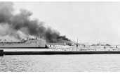
Arab–Israeli War 1967
Ever since the formation of the Palestinian Liberation Organization (PLO), Israel came to be attacked frequently by Palestinian guerrilla groups based in Syria, Lebanon and Jordan. Israeli resorted to violent reprisals. In November 1966 an Israeli strike on the village of AltoSamū in the Jordanian West Bank, left 18 dead and 54 wounded. Israel’s air battle with Syria in April 1967 ended in the shooting down six Syrian MiG fighter jets. In his bid to demonstrate Egypt’s support for Syria Nasser mobilized Egyptian forces in the Sinai, seeking the removal of UN emergency forces stationed there on May 18. On May 22 he closed the Gulf of Aqaba to Israeli shipping. King Hussein of Jordan signed a mutual defence pact with Egypt. Accordingly, it was decided to place Jordanian forces under Egyptian command. Soon, Iraq too joined the alliance.
Box Item start
Palestine Liberation Organization (PLO)- It is an umbrella political organization representing the world’s Palestinians – all Arabs and their descendants who lived in mandated Palestine before the creation of the State of Israel in 1948. It was formed in 1964 to federate various Palestinian groups that previously had operated as clandestine resistance movements. Yasser Arafat was its most prominent leader.
Box Item end.
Israel’s Offensive
Following the mobilization of Arab states by Nasser, on June 5, Israel staged a sudden pre-emptive air strike that destroyed more than 90 percent of Egypt’s air force on the tarmac. A similar air assault incapacitated the Syrian air force. Within three days the Israelis had achieved an overwhelming victory on the ground, capturing the Gaza Strip and all of the Sinai Peninsula up to the east bank of the Suez Canal.
Box Item start
Yasser Arafat (1924 to 2004)
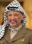
In 1969, Yasser Arafat became chairman of the PLO’s executive committee a position he held until his death in 2004. Yasser Arafat was appointed commander-in-chief of the allPalestinian Arab guerilla forces in September 1970. Wearing a disguised pistol and carrying an olive branch and dressed in a military uniform, his appearance raised world awareness of the Palestinian cause. Arafat was elected by the central council of the PLO as the first president of the state of Palestine on April 2, 1989.
Box Item end
Arab–Israeli War 1973
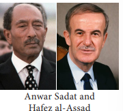
Egypt and Syria under Presidents Anwar Sadat and Hafez al- Assad respectively concluded a secret agreement in January 1973 to bring their armies under one command. Sadat offered the Israelis a peace deal, if they withdrew from Sinai. Israel rejected the offer. Egypt and Syria launched a sudden and surprise attack on the Yom Kippur religious holidays (6 october1973). Though Israel suffered heavy casualties it finally pushed back the Arab forces. Arabs gained nothing out of this war too. By way of mediation the US succeeded in asserting its hegemony over the region and its oil.
By the end of Second World War Viet Minh controlled the northern half of Vietnam. Viet Minh formed a government led by Ho Chi Minh in Hanoi. This Viet Minh government quickly occupied the southern half of Vietnam. However, the Allied Powers decided at Potsdam that the British in the south and the Chinese in the north should defend Indo-China from the Japanese. But Ho Chi Minh had established his control very firmly and so, early in 1946, the British and Chinese troops had to withdraw, leaving the French and Viet Minh to confront each other. In March the two governments (French and Viet Minh) reached an agreement by which North Vietnam was to be a free state, within an Indo-Chinese Federation.
In 1949 the French attempted to secure the support of the population by declaring Vietnam, Laos and Cambodia independent within the French Union, retaining only foreign affairs and defence under French control.
While the French were receiving considerable financial aid from America, the Viet Minh were helped by the new Chinese communist government. The French troops were eventually defeated. The Geneva Conference (1954) that met on Korea and Indo China decided that Vietnam was to be an independent state but temporarily divided; the Viet Minh to control the north and Bao Dai to head the government the south. Cambodia and Laos were to be independent. With a population of 16 million North Vietnam became a Communist state with Ho Chi Minh as President. South Vietnam, approximately of the same size and population, was ruled by Ngo Dinh Diem.
The government’s survival in South Vietnam depended on increasing amounts of US support. In 1965 marines landed at Danang naval base, and there were 33,500 US troops in the country within a month. The number increased and there were 210,000 bythe end of year. The US bombed both North and South in the hope that it could force the liberation forces to abandon the struggle. The fighters of North Vietnam, trained in guerilla warfare, had grown out of spontaneous struggles against a repressive regime. They sustained their resistance without bowing to the US. The American troops also used bacteriological weapons. Incendiary bombs such as napalm and Agent Orange (to defoliate the forest cover) were used. Vast areas of Vietnam were devastated and hundreds of thousands of people killed. The American forces too suffered heavy casualties.
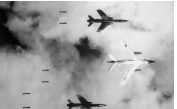
Early in 1975, the war took a decisive turn. The armies of North Vietnam and of the National Liberation Front of South Vietnam swept across the country routing the American supported troops of South Vietnam. By 30 April 1975, all the American troops had withdrawn and the capital of South Vietnam, Saigon, was liberated. North and South Vietnam were formally united as one country in 1976. The city of Saigon was renamed as Ho Chi- Minh City after the great leader of the Vietnamese people.
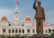
The emergence of Vietnam as a united and independent nation was an historic event. A small country had succeeded in winning independence and unification in the face of the armed opposition of the greatest power in the world. The help given to Vietnam by the socialist countries, the political support extended by a large number of Asian and African countries, and the solidarity expressed by the peoples in all parts of the world, helped in achieving this.
a. Council of Europe
One of the momentous decisions taken in the post-War II era was to integrate the states of Western Europe. In doing so the Europeans wanted (1) to prevent further European wars by ending the rivalry between France and Germany. (2) to create a united Europe to resist any threat from Soviet Russia. (3) to form a third force in the world to counter-balance the strength of the US and USSR. (4) to make full use of the economic and military resources of Europe by organizing them on a continental scale. In May 1949 ten countries met in London and signed to form a Council of Europe. The Council of Europe with headquarters at Strasbourg was established with a committee of foreign ministers of member countries and a Consultative Assembly, drawn from the parliaments of foreign countries.
b. European Coal and Steel Community (ECSC)
The European Defence Community (EDC) and the European Coal and Steel Community (ECSC) were established. Six countries (France, West Germany, Italy, Belgium, Holland and Luxemburg belonging to ECSC signed the treaty of Rome which established the European Economic Community (EEC) or the European Common Market, with headquarters at Brussels.
c. European Economic Community (EEC)
The EEC eliminated barriers to the movement of goods, services, capital, and labour. It also prohibited public policies or private agreements that restricted market competition. A common agricultural policy (CAP) and a common external trade policy were evolved. European Common market was a remarkable success.
d. Single European Act (SEA)
The Single European Act came into force on July 1, 1987. It significantly expanded the EEC’s scope giving the meetings of the EPC a legal basis. It also called for more intensive coordination of foreign policy among member countries. According to the SEA, each member was given multiple votes, depending on the country’s population. Approval of legislation required roughly two-thirds of the votes of all members.
e. European Union (EU)
The Maastricht (Netherlands) Treaty signed on February 7, 1992, created the European Union. The monetary policy and a common currency (euro) to replace national currencies managed by common monetary institutions were subsequently planned and implemented. Today the European Union has 28 member states, and functions from its headquarters at Brussels, Belgium.
The division of Germany into West (Federal Republic of Germany) and East (German Democratic Republic) led to glaring differences in living standards. West Berlin’s economy became prosperous thanks to the support received from the West under the Marshall Plan. In contrast the USSR had little interest in developing the economy of East Berlin. Further, people in East Berlin suffered from lack of democracy and freedom. Therefore, people of East Berlin moved to West Berlin in large numbers. In West Berlin, on the other hand, there was a fear that the Soviets could use military force to take West Berlin. In this context, East Germany began to construct a wall in 1961 which virtually cut off West Berlin from East Berlin and the surrounding East German areas. It was heavily guarded with watch towers and other lethal impediments to stop people from the East. In the late 1980s, as USSR’s hold over Eastern European countries was weakening, a mass of people assembled on 9 November 1989 on both sides of the wall and began to demolish it. Germany was officially reunited on 3 October 1990. The Berlin Wall was more than just a physical barrier. It was a symbolic boundary between communism and capitalism. With the fall of the Berlin Wall, followed by the collapse of the Soviet Union, the Cold War era came to an end.
Box Item start
Helmut Kohl, Chancellor of West Germany from 1982 to 1990, and played a crucial role in integrating East Germany into West Germany in 1990. He thus became the first chancellor of a unified Germany after forty five years of division. With French president Mitterand, Kohl was the architect of the Maastricht Treaty, which established the European Union (EU) and the euro currency.
Box Item end
Disintegration of the Soviet Union
In the 1970s and early 1980s the Soviet Union continued to retain a strong and dominant position in international politics. However, its economy was suffering, and was unable to match the productive capacity of the first world. In 1985, Mikhail Gorbachev took over as head of the USSR. Gorbachev spoke about the need for openness (Glasnost) and reform (perestroika). But his commitment to reform, apart from opposition within the ruling communist party, did not match the resources available to USSR. In the middle of the 1980s about one third of the total GDP was going to the military. In order to maintain a parity with the US, in the context of President Reagan’s Star Wars programme, it became necessary for the Soviet Union to allocate more funds to the military. The increase in military budget further strained the Soviet economy.
The year 1988 saw the first mass protests –first in Armenia, and then in the Baltic States. Earlier Soviet regimes had used severe repression to quell such uprisings. Gorbachev could not take recourse to such brutal measures. The Chernobyl Disaster, a major accident in a nuclear plant in Ukraine, in 1986, was another blow. Gorbachev made moves to stabilise his position by reliance on conservative forces in 1989 and 1991. But on eachoccasion he was interrupted by massive miners’ strike which came close to cripple the country’s energy supplies.
The East European communist states, under the Soviet umbrella, were also in a deep economic and social crisis. Gorbachev’s decision to loosen the Soviet control on the countries of Eastern Europe created an independent, democratic momentum. A series of workers’ strikes undermined the communist regimes first in Poland and then in Hungary. A wave of demonstrations that swept East Germany led to demolition of the Berlin Wall in 1989.
Box Item start
Perestroika (‘restructuring’) refers to the programme introduced by Mikhail Gorbachev in the late 1980 s to restructure Soviet economic and political system. Along with the policy of ‘Glasnost’ (‘openness), Perestroika was intended to energize Soviet economy which was lagging behind the developed countries of the capitalist world.
Glasnost (‘openness’) was a policy of ideologically openness introduced by Mikhail Gorbachev along with Perestroika in the 1980s. Under Glasnost there was more openness, writers who had been censored earlier were rehabilitated, and there was space for criticism of politics and government.
Yeltsin was first an ally of Gorbachev. However, as Mayor of Moscow, Yeltsin won great popularity as a champion of political and economic freedom. With Gorbachev’s introduction of democratic elections for the Soviet parliament, Yeltsin was returned to power with overwhelming support of a Moscow constituency in 1989. The following year he was elected President of Russia over Gorbachev’s objections. President Yeltsin advocated greater autonomy of the Russian Republic, with executive presidential system that would allow him to govern independently of parliament.
Box Item end
Subsequent to it, regimes in Czechoslovakia, followed by Bulgaria, fell. An attempt by Romania’s Nicolae Ceaușescu to resist the wave of change by shooting down demonstrators ended in his execution by a firing squareuad (December 1989) under the command of his own generals. The televised images of the shooting and the fall of the Berlin Wall galvanized the process of the breaking up of the communist world. In sixmonths the political map of half of Europe had been redrawn.
Gorbachev made a last attempt to take a hard line against the disruptionist only to be challenged by a second great miners’ strike in 1991and huge demonstrations in Moscow. In response, conservative forces in his government attempted to take a hard line without Gorbachev. They used troops in Moscow to stage a coup, and held Gorbachev under house arrest. But other military units refused to back them and as a result power fell into the hands of Boris Yeltsin, a reformer backed by the West.
In the meantime, three Baltic States had formally left the Soviet Union. They were admitted to the U.N. as independent countries: Estonia, Latvia, and Lithuania. In November 1991 eleven republics (Ukraine, Georgia, Belarus, Armenia, Azerbaijan, Kazakhstan, Kyrgyzstan, Moldova, Turkmenistan, Tajikistan and Uzbekistan) announced secession from the Soviet Union. Instead, they declared they would establish a Commonwealth of Independent States. On 25 December Gorbachev announced his resignation. For six days the Soviet Union continued to exist only in name and at midnight on 31 December 1991, it was formally dissolved. The USSR was no more.
SUMMARY
GLOSSARY
antagonistic |
acting against or indicating |
பகையுணர்வு கொண்ட
|
wriggle out |
to avoid doing something |
நழுவுதல் |
ascension |
the act of rising to an important position or a higher level, a movement upward |
வளர்ச்சி, உயர்வு |
disillusioned |
disappointed on finding out something is not as good as hoped |
அதிருப்தி |
abstaining |
restrain oneself from doing something |
விலகியிருத்தல், ஒதுங்கியிருத்தல் |
embitter |
cause to feel bitter – to make hateful |
வெறுப்புணர்ச்சி, கசப்புணர்வு
|
incapacitated |
lacking in or deprived of strength or power |
திறனற்றதாக்குதல், முடமாக்குதல்
|
bacteriological weapons |
the use of harmful bacteria as a weapon |
நுண்ணுயிரியல் ஆயுதங்கள் |
EXERCISE
1 Choose the correct answer
1. Which American President followed the policy of containment of Communism?
a. Woodrow Wilson
b. Truman
c. Theodore Roosevelt
d. Franklin Roosevelt
2. When was People’s Political Consultative Conference held in China?
a. September 1959
b. September 1948
c. September 1954
d. September 1949
3. The United States and European allies formed Dash to resist any Soviet aggression in Europe.
a. SEATO
b. NATO
c. SENTO
d. Warsaw Pact
4. Who became the Chairman of the PLO’s Executive Committee in 1969?
a. Hafez al-Assad
b. Yasser Arafat
c. Nasser
d. Saddam Hussein
5. When was North and South Vietnam united?
a. 1975
b. 1976
c. 1973
d. 1974
6. When was the Warsaw Pact dissolved?
a. 1979
b. 1989
c. 1990
d. 1991
2. Fill in the blanks
1. was known as the “Father of modern China”.
2. In Dash1918, the society for the study of Marxism was formed in DashUniversity.
3. After the death of Dr. Sun Yat Sen, the leader of the Kuomintang party was Dash
4. Dash_treaty is open to any Arab nation desiring peace and security in the region.
5. The treaty of Dash provided for mandates in Turkish - Arab Empire.
6. Germany joined the NATO in Dash
7. Dashwas the Headquarters of the Council of Europe.
8. Dashtreaty signed on February 7, 1992 created the European Union.
3. Choose the correct statement/statements
1. 1. In 1948, the Soviets had established left wing government in the countries of Eastern Europe that had been liberated from the Nasis by the Soviet Army.
2. The chief objective of NATO was to preserve peace and security in the North Atlantic region.
2. The member countries of SEATO were committed to prevent democracy from gaining ground in the region.
a) 2,and3 are correct
b) 1 and 2 are correct
c) 2 and 3 are correct
d) 1,2 and 3 are correct
2. Assertion (A): America’s Marshall Plan was for reconstruction of the war-ravaged Europe.
Reason (R): The US conceived the Marshal Plan to bring the countries in the Western Europe under its influence.
a) Both (A) and (R) are correct, but R is not the correct explanation of A
b) Both (A) and (R) are wrong
c) Both (A) and (R) are correct and R is the correct explanation of A
d) (A) is wrong and (R) is correct
4. Match the following
1. Dr. Sun Yat-Sen - South Vietnam
2. Syngman Rhee - Kuomintung
3. Anwar Sadat -South Korea
4. Ho-Chi Minh - Egypt
5. Ngo Dinh Diem - North Vietnam
5. Answer briefly
1. Write any three causes for the Chinese Revolution of 1911.
2. Write a note on Mao’s Long March.
3. What do you know of Baghdad Pact?
4. What was Marshall Plan?
5. Write a note on Third World Countries.
6. How was the Cuban missile crisis defused?
6. Answer in detail
1. Estimate the role of Mao Tse tung in making China a communist country.
2. Narrate the history of transformation of Council of Europe into an European Union.
7. Activity
1. Divide the class into two groups. Let one group act as supporters of USA and the other group act as supporters of Soviet Union, Organise a debate.
2. Involving the entire class, an album may be prepared with pictures relating to Korean, Arab-Israeli and Vietnam Wars to highlight the human sufferings in terms of death and devastation.
REFERENCE BOOKS
1. R.D. Cornvell, World History in the Twentieth Century (London: Longman, 1972)
2. Richard Overy, Complete History of the World (London: Harper Collins, 2006)
3. Chris Harman, A People’s History of the World (London: Orient Longman, 2007)
INTERNET RESOURCES
Learning Objectives
To acquaint ourselves with
Introduction
English education, introduced with the object of producing clerks, also produced a new English-educated middle class. This class came under the influence of western ideas and thoughts. Christianity also had its effect on the newly emerging middle class. Though small in number, the educated middle class began to take a lead in political as well as in reform movements. The Indian reformers were, however, quite hesitant to subject their old notions and habits to critical scrutiny.
Instead they attempted to harmonize both Indian and Western cultures. Their ideas and their actions helped to mitigate social evils such as sati, female infanticide, and child marriage and various superstitious beliefs.
The reform movements of nineteenth century in the realm of religion fall under two broad categories: reformist movements like the Brahmo Samaj, the Prarthana Samaj and the Aligarh Movement; and the revivalist movements such as the Arya Samaj, the Ramakrishna Mission and the Deoband Movement. There were also attempts to challenge the oppressive social structure by Jyotiba Phule in Pune, Narayana Guru and Ayyankali in Kerala and Ramalinga Adigal, and IyotheeThassar of Tamil Nadu.
a. Raja Rammohan Roy and Brahmo Samaj
Rammohan Roy (1772 to 1833) was one of the earlier reformers influenced by the Western ideas to initiate reforms. He was a great scholar, well-versed in Sanskrit, Arabic, Persian, and English apart from his knowledge in his mother tongue, Bengali. Rammohan Roy was opposed to meaningless religious ceremonies and all forms of pernicious social customs. Yet he wanted to preserve continuity with the past. In his religio–philosophical social outlook, he was deeply influenced by monotheism and anti-idolatry. Based on his interpretation of the Upanishads, he argued that all the ancient texts of the Hindus preached monotheism or worship of one God.
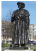
Deeply concerned with the prevailing customs of sati, child marriage, and polygamy he published tracts against them and petitioned the government to legislate against them. He advocated the rights of widows to remarry. He wanted polygamy to end. He appealed to reason and humanity and compassion of the people. His campaign played a key role in forcing the Governor-General William Bentinck’s legislation abolishing sati in 1829.
Rammohan Roy condemned the subjugation of women and opposed the prevailing ideas that women were inferior to men. He strongly advocated education for women. He gave his full support for the introduction of English language and western sciences in schools and colleges.
Rammohan Roy founded the Brahmo Samaj on 20 August 1828. He opened a temple in Calcutta, where there was no image. There he laid down that ‘no religion should be reviled or slightly or contemptuously spoken off or alluded to.’ The Samaj forbade idol-worship and condemned meaningless religious rites and ceremonies. However, from the beginning, the appeal of the Brahmo Samaj remained limited to the intellectuals and enlightened Bengalis. Though the Samaj failed to attract the people from the lower sections of society, its impact on the culture of modern Bengal and its middle class was quite significant.
b. Maharishi Debendranath Tagore
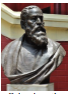
After the death of Rammohan Roy (1833), Maharishi Debendranath Tagore (1817 to 1905), the poet Rabindranath Tagore’s father, carried on the work. He laid down four articles of faith:
1. In the beginning there was nothing. The one Supreme Being alone existed who created the Universe.
2. He alone is the God of Truth, Infinite Wisdom, Goodness, and Power, eternal, omnipresent, the One without second.
3. Our salvation depends on belief in Him and in His worship in this world and the next.
4. Belief consists in loving Him and doing His will.
c. Keshab Chandra Sen & Brahmo Samaj of India
Debendranath was a moderate reformer. But his younger colleagues in the Sabha were for rapid changes. The greatest of these, Keshab Chandra Sen, (1838–84) joined the movement in 1857. But in 1866 a split occurred in the ranks of Brahmo Samaj. Keshab left the Samaj and founded a new organization. Debendranath’s organization, thereafter, came to be known as Adi Brahmo Samaj. After Keshab had his fourteen-year-old daughter married to an Indian prince, in contravention of the Samaj’s condemnation of child marriages, the opponents of child marriage left the Brahmo Samaj of India and started the Sadharan Samaj.
d. Ishwar Chandra Vidyasagar
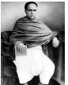
Another outstanding reformer in Bengal was Ishwar Chandra Vidyasagar (1820–1891). While Ram Mohan Roy and others looked to western rationalist ideas to reform society, Vidyasagar argued that the Hindu scriptures were progressive. He provided evidence from scriptures that there was no sanction for burning of widows or for the prohibition on the remarriage of widows. He wrote a number of polemical tracts, and was the pioneer of modern Bengali prose. He played a leading role in promoting education of girls and helped them in setting up a number of schools. He dedicated his whole life for the betterment of the child widows of the Hindu society. The movement led by Vidyasagar, resulted in the Widows’ Remarriage Reform Act of 1856. This Act was intended to improve the lot of child widows and save them from perpetual widowhood.
Box Item start
It was also to the credit of Vidyasagar that the first age of consent was included in the Indian Penal code, which was enacted in 1860. The age for marriage was fixed as ten years. It was raised to twelve and thirteen years in 1891 and 1925 respectively. Sadly, as reported in the Age of Consent Committee (1929), the law remained on paper and the knowledge of it was confined to judges, lawyers and a few educated men.
Box Item end
e. Prarthana Samaj
The Maharashtra region was another region where reform activities gained steam. A movement similar to the Brahmo Samaj, but founded in Bombay in 1867, was Prarthana Samaj. Its founder was Dr. Atma Ram Pandurang (1825 to 1898). The two distinguished members of this Samaj were R.C. Bhandarkar and Justice Mahadev Govind Ranade. They devoted themselves to activities such as inter-caste dining, inter-caste marriage, widow remarriage and improvement of women and depressed classes. Ranade (1842 to 1901) was the founder of the Widow Marriage Association (1861), the Poona Sarvajanik Sabha (1870) and the Deccan Education Society (1884).
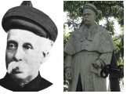
a. Swami Dayanand Saraswati and Arya Samaj 1875
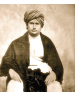
In the Punjab, the reform movement was spearheaded by the Arya Samaj. It was founded (1875) by a wandering ascetic in the western Gangetic plain, Swami Dayanand Saraswati (1824 to 83). Swami Dayanand later settled in the Punjab to preach his ideas. His book, Satyarthaprakash, enjoyed wide circulation. He declared the practices such as child marriage, the prohibition of widow remarriage, and the alleged polluting effects of foreign travel had no scriptural sanction. The positive principles enunciated by Dayanand were: strict monotheism, condemnation of idolatry, and rejection of Brahman domination of ritual and social practices. He also rejected superstitious beliefs in Hinduism and his cry was “go back to Vedas.”
Arya Samaj attempted to check the incidence of religious conversion in British India. One of its main objectives was counter-conversion, prescribing a purificatory ceremony called suddhi, directed at Hindus who had converted to Islam and Christianity.
The primary achievements of the Arya Samaj were in the field of social reform and spread of education. The Samaj started a number of Dayananda Anglo–Vedic schools and colleges.
b. Ramakrishna Paramahamsa
Ramakrishna (l836 to 86), a simple priest of Dakshineswar near Kolkata, emphasised the spiritual union with god through ecstatic practices such as singing bhajans. An ardent worshipper of goddess Kali, the sacred mother, he declared that the manifestations of the divine mother were infinite. In his view, all religions contain the universal elements which, if practised, would lead to salvation. He said, “Jiva is Siva” (all living beings are God). Service for man, must be regarded as God.’
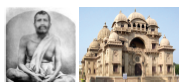
Ramakrishna Mission
Ramakrishna’s primary achievement was his ability to attract educated youth who were dissatisfied with the rational orientation of religious reform organizations such as the Brahmo Samaj. After his death in 1886, his disciples organised themselves as a religious community and undertook the task of making his life and teaching known in India and abroad. The chief spirit behind this task was Vivekananda. Following the organizational structure of Christian missionaries, Vivekananda established the Ramakrishna Mission which did not restrict itself to religious activities but was actively involved in social causes such as education, health care and relief in times of calamities.
c. Swami Vivekananda
Narendra Nath Datta (l863–1902), later known as Swami Vivekananda, was the prime follower of Ramakrishna Paramahamsa. An educated youth, he was drawn to Ramakrishna’s message. Dissatisfied with conventional philosophical positions and practices, he advocated the practical Vedanta of service to humanity and attacked the tendency to defend every institution simply because it was connected with religion. He emphasized a cultural nationalism and made a call to Indian youth to regenerate Hindu society. His ideas bred a sense of self-confidence among Indians who felt inferior in relation to the materialist achievements of the West. He became famous for his addresses on Hinduism at the 1893 World Congress of Religions in Chicago. Despite his fame, he was condemned by orthodox Hindus for suggesting that the lower castes should be allowed to engage in the Hindu rituals from which they were traditionally excluded. Vivekananda’s activist ideology rekindled the desire for political change among many western-education young Bengalis. Many of the youths who were involved in the militant nationalist struggle during the Swadeshi movement following the Partition of Bengal were inspired by Vivekananda.
d. Theosophical Movement
The Theosophical Society was founded by Madame H.P. Blavatsky (1831 to 1891) and Colonel H.S Olcott (18321 to 907). Founded in the USA in 1875, it later shifted to India at Adyar, Chennai in 1886.
Theosophical Society stimulated a study of the Hindu classics, especially the Upanishads and the Bhagavad Gita. The Theosophical Society also played an important role in the revival of Buddhism in India. Western interest in Hindu scriptures gave educated Hindus great pride in their tradition and culture.
Contribution of Annie Besant
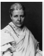
In India the movement became further popular with the election of Annie Besant (1847–1933) as its president after the death of Olcott. She played a role in Indian nationalist politics, and formed the Home Rule League demanding home rule to India on the lines of Ireland. Annie Besant spread Theosophical ideas through her newspapers called New India and Commonweal.
a.Jyotiba Phule
Jyotiba Govindrao Phule was born in 1827 in Maharashtra. He opened the first school for “untouchables” in 1852 in Poona. He launched the Satyashodak Samaj (Truth- Seekers Society) in 1870 to stir the non-Brahman masses to self-respect. Phule opposed child marriage and supported widow remarriage. Jyotiba and his wife Savitribai Phule devoted their lives for the uplift of the depressed classes and women. Jotiba opened orphanages and homes for widows. His work, Gulamgiri (Slavery) is an important text that summarized many of his radical ideas.
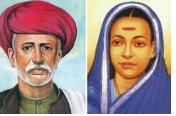
b. Narayana Guru
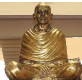
Born to poor parents in Kerala, Narayana Guru (1854 to 1928) evolved into a poet and scholar in Malayalam, Tamil and Sanskrit. Disturbed by the terrible caste tyranny, that the lower caste people suffered, he dedicated his whole life for the betterment of the oppressed. He set up the Sri Narayana Dharma Paripalana Yogam, an organization to work for the uplift of the “depressed classes”. He established a grand temple at Aruvipuram and dedicated it to all. Thinkers and writers such as Kumaran Asan and Dr Palpu were influenced by his ideas and carried forward the movement.
c. Ayyankali
Ayyankali was born in 1863 at Venganoor in Thiruvananthapuram then in the princely state of Travancore. The discrimination he faced as a child turned him into a leader of an anti-caste movement and who later fought for basic rights including access to public spaces and entry to schools.
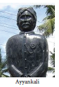
Inspired by Sree Narayana Guru, Ayyankali founded the Sadhu Jana Paripalana Sangam (Association for the Protection of the Poor) in 1907.
After the suppression of great revolt of 1857 Indian Muslims looked to Western culture with suspicion. The community feared that Western education, Western culture and Western ideas would endanger their religion. Therefore only a small section of Muslims accepted the new avenues for modern education.
Sir Sayyid Ahmed Khan
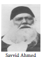
Born in Delhi into a noble Muslim family, Sayyid Ahmed Khan thought that lack of education, especially modern education, had harmed the Muslims greatly and kept them backward. He exhorted the Muslims to accept Western science and take up government services. He founded a scientific society and translated many English books, especially science books into Urdu. He believed that the interest of the Muslims would be best served if they bonded with the British Government rather than pitch in with the rising nationalist movement. So, he advised the Muslims to take to English education and to concentrate on it.
Aligarh Movement
Sayyid Ahmed Khan’s movement, the “Aligarh movement,” is so called because it was centred around the Aligarh Mohammedan Anglo-Oriental college founded by him in 1875, which is a landmark in the history of Indian Muslim education. The college was raised to the status of a university in 1920.
Deoband Movement
Deoband was a revivalist movement organized by the orthodox Muslim Ulema. The Ulema under the leadership of Muhammad QasimWanotavi (1832 to 80) and Rashid Ahmad Gangotri (1828 to 1905) founded the school at Deoband in the Saharanpur district of the U.P in 1866. The school curricula shut out English education and western culture. The instruction imparted was in original Islamic religion and the aim was moral and religious regeneration of the Muslim community.
Maulana Mahmud-ul-Hassan became the new Deoband leader. The Jamait-Ul-Ulema (council of theologians) led by him gave a concrete shape to Hassan’s ideas of protection of the religious and political rights of the Muslims in the overall context of Indian unity.
In the middle of the nineteenth century the reform activities began in Mumbai. Furdunji Naoroji founded the RahnumaiMazdayasnan Sabha (Parsis’ Reform Society) in 1851. Rast Goftar(The Truth Teller) was the main voice of the movement. Behrramji Malabari organized a campaign for legislation against the practice of child marriage. The community produced many leaders such as Pherozeshah Mehta and Dinshaw Wacha who played a big role in the early Congress.
Among the Sikhs of Punjab too there were attempts to reform. Baba Dayal Das, founder of the Nirankari Movement, stressed the worship ofgod as Nirankar (formless). Rejection of idols, rejection of rituals associated with idolatry, reverence for the authority of Guru Nanak and of the Adi Granth formed the essence of his teachings. He reiterated the prohibition on meat-eating, and liquor consumption.
The Namdhari Movement, founded by Baba Ram Singh, was another socio-religious movement among the Sikhs. The Namdharis insisted on wearing the symbols of Sikhism except the kirpan (sword).Instead Baba Ram Singh wanted his followers to carry a lathi. It considered both men and women equal and accepted widow remarriage. It prohibited the dowry system and child marriage.
In the wake of the gathering influence of Arya Samaj and the Christian missionaries, the Singh Sabha of Amritsar was established. Its main objective was to restore the purity of Sikhism. With the support of British, it established Khalsa College for the Sikhs in Amritsar. Singh Sabha was a forerunner of Akali Movement.
(a) Ramalinga Swamigal
Popularly known as Vallalar, Ramalinga Swamigal or Ramalinga Adigal (1823 to 1874), was born in Marudhur, a village near Chidambaram. After his father’s death, his family moved to his brother’s house at Chennai. Despite having no formal education, he gained immense scholarship. Ramalinga emphasised the bonds of responsibility and compassion between living beings. He expressed the view that ‘those who lack compassion for suffering beings are hard-hearted, their wisdom clouded’. He showed his compassion and mercy on all living beings including plants. This he called jeevakarunya. He established the Samarasa Vedha Sanmarga Sangam in 1865 and it was renamed “Samarasa Suddha Sanmarga Satya Sanga” which means “Society for Pure Truth in Universal self-hood”. Ramalinga also established a free feeding house for everyone irrespective of caste at Vadalur (1867), in the wake of a terrible famine in south India in 1866. His voluminous songs were compiled and published under the title Thiruvarutpa (Songs of Grace).
Box Item start
Ramalinga bore witness to hunger and poverty in the country: “I saw poor people, emaciated with hunger and terribly weary, going to every house, yet their hunger was not removed, and my heart suffered intensely. Those who suffer with relentless disease, I saw them in front of me and my heart trembled. I saw those people, poor and of unmatched honor, their hearts weary, and I grew weak.”
Box Item end
b. IyotheeThassar
PanditharIyotheeThassar (1845 to 1914) was a radical Tamil scholar, writer, siddha medicine practitioner, journalist and socio - political activist. Born in Chennai, he was fluent in Tamil, English, Sanskrit and Pali languages. He campaigned for social justice and worked for the emancipation of the “untouchables” from the caste clutches. He worked for the construction of a casteless identity and castigated caste hegemony and untouchability. He considered education as an important tool for empowerment and became the driving force behind the establishment of several schools for the “untouchables” in Tamil Nadu.
PanditharIyotheeThassar founded the Advaidananda Sabha to raise the voice for the temple entry of the “untouchables”. In 1882, John Rathinam and IyotheeThassar established a movement called, Dravida Kazhagamand launched a magazine called Dravida Pandian in 1885. He founded the Dravida Mahajana Sabha in 1891and organised the First Conference of the association at Nilgiris.
PanditharIyotheeThassar was disappointed with the Hindu dharma, which served as the basis for propagating and validating caste in Hindu society. Influenced by the Theosophist organizer, Colonel H.S. Olcott, he went to Sri Lanka in 1898 and converted to Buddhism. In the same year, he founded the Sakya Buddhist Society at Madras to construct the rational religious philosophy through Buddhist religion.
He started a weekly journal, Oru Paisa Tamilan, in 1907 and published it until his demise in 1914.
SUMMARY
GLOSSARY
Alleged |
stated but not proved |
சொல்லப்படும் |
Ecstatic |
in a state of extreme happiness |
பரவசமான |
Voluminous |
bulky |
அதிகப்பரிமாணமுள்ள |
Reiterated |
repeat a statement for emphasis |
வலியுறுத்துதல் |
Idolatry |
the practice of worshipping idols |
உருவ வழிபாடு |
Tract |
a small booklet |
சிறு நூல் |
Revelation |
disclosure |
திருவெளிப்பாடு |
EXERCISE
1. Choose the correct answer
1. In which year was Sati abolished?
a. 1827
b. 1829
c. 1826
d. 1927
2. What was the name of the Samaj founded by Dayanand Saraswati?
a. Arya Samaj
b. Brahmo Samaj
c. Prarthana Samaj
d. Adi Brahmo Samaj
3. Whose campaign and work led to the enactment of Widow Remarriage Reform Act of 1856?
a) Iswarchandra Vidyasagar
b) Raja Rammohan Roy
c) Annie Besant
d) Jyotiba Phule
4. Whose voice was Rast Goftar?
a) Parsi Movement
b) Aligarh Movement
c) Ramakrishna Mission
d) Dravida Mahajana Sabha
5. Who was the founder of Namdhari Movement?
a) Baba Dayal Das
b) Baba Ramsingh
c) Gurunanak
d) Jyotiba Phule
6. Who was the founder of Widow Remarriage Association?
a) Mahadev Govind Ranade
b) Devendranath Tagore
c) Jyotiba Phule
d) Ayyankali
7. Who was the author of the book Satyarthaprakash?
a) Dayananda Saraswathi
b) IyotheeThassar
c) Annie Besant
d) Narayana guru
2. Fill in the blanks
1.Dashfounded the Samarasa Vedha Sanmarga Sangam.
2. The founder of Poona Sarvajanik Sabha was Dash.
3. Gulumgir was written by Dash.
4. Ramakrishna Mission was established by Dash
5. Dashwas the forerunner of Akali Movement.
6. Oru paisa Tamilan was started by Dash.
3. Choose the correct statement
1. 1) Raja Rammohan Roy preached monotheism
2) He encouraged idolatry
3) He published tracts condemning social evils
a) 1) is correct
b) 1) and 2) are correct
c) 1), 2) and 3) are correct
d) 1), and3) are correct
2. 1) Prarthana Samaj was founded by Dr. Atma Ram Pandurang
2) Prarthana Samaj encouraged inter-dining and inter-caste marriage
3) Jyotiba Phule worked for the upliftment of men.
4) Prarthana Samaj hadit’s origin in the Punjab.
a) 1) is correct
b) 2) is correct
c) 1) and 2) are correct
d) 3) and 4) are correct
3.1) Ramakrishna Mission was actively involved in social causes such as education, health care, relief in time of calamities.
2) Ramakrishna emphasised the spiritual union with godthrough ecstatic practices.
3) Ramakrishna established the Ramakrishna Mission
a) 1) is correct
b) 1) and 2) are correct
c) 3) is correct
d) 1),and 3) correct
4. Assertion: Jyotiba Phule opened orphanages and homes for widows
Reason: Jyotiba Phule opposed child marriage and supported widow remarriage
a) Assertion is correct but reason is not apt to the assertion
b) Assertion is correct and the reason is apt to the assertion
c) Both are wrong
d) Reason is correct but assertion is irrelevant
4. Match the following
1. Oru paisa Tamilan - Widows Remarriage Reform Act
2. Thiruvarutpa - Nirankari
3. Baba Dayal Das - Adi Bramo Samaj
4. Iswarchandra Vidyasagar -Journal
5. Debendranath - Songs of Grace
5. Answer briefly
1. Mention the four articles of faith laid down by Maharishi Debendranath Tagore?
2. Discuss Mahadev Govind Ranade’s contribution to social reforms.
3. Write a note on reforms of Ramalinga Adigal.
4. List the social evils eradicated by Brahmo Samaj.
5. Highlight the work done by Jyotiba Phule for the welfare of the poor and the marginalized.
6. Answer in detail
1. Discuss the circumstances that led to the Reform movements of 19th century.
2. Evaluate the contributions of Ramakrishna Paramahamsa and Swami Vivekananda to regenerate Indian society.
3. Write an essay on the role played by the 19th century reformers towards the cause of Women.
7. Activity
REFERENCE BOOKS
1. Kenneth W. Jones, Socio-Religious Reform Movement in British India, New Edition, Cambridge University Press, 2006.
2. Manickam, S., “Depressed Class Movement in South India,” in Manikumar K.A. (ed.), History and Society, Tirunelveli, 1996.
3. V. Geetha and S.V. Rajathurai, Towards a Non-Brahmin Millennium from IyotheeThass - Periyar, Calcutta, 1998.
4. Mohan, P. Sanal (2013), “Religion, Social Space, and Identity: The Prathyaksha Raksha Daiva Sabha and the Making of Cultural Boundaries in Twentieth Century Kerala”, in Joan Mencher(ed.), Life as a Dalit: Views from the Bottom on Caste in India, SAGE Publications.
INTERNET RESOURCES
1. https://www.deccanherald.com.
2. http://en.wikipedia.org/wiki/ timesofindia.com
Learning Objectives
To acquaint ourselves with
Introduction
After defeating the French and their Indian allies in the three Carnatic Wars, the East India Company began to consolidate and extend its power and influence. However, local kings and feudal chieftains resisted this. The first resistance to East India Company’s territorial aggrandisement was from Puli Thevar of Nerkattumseval in the Tirunelveli region. This was followed by other chieftains in the Tamil country such as Velunachiyar, VeerapandiyaKattabomman, the Marudhu brothers, and Dheeran Chinnamalai. Known as the Palayakkarars Wars, the culmination of which was Vellore Revolt of 1806, this early resistance to British rule in Tamilnadu is dealt with in this lesson.
a.Palayams and Palayakkarars
The word “palayam” means a domain, a military camp, or a little kingdom. Palayakkarars (Poligar is how the British referred to them) in Tamil refers to the holder of a little kingdom as a feudatory to a greater sovereign. Under this system, palayam was given for valuable military services rendered by any individual. This type of Palayakkarars system was in practice during the rule of Prataba Rudhra of Warangal in the Kakatiya kingdom. The system was put in place in Tamilnadu by Viswanatha Nayaka, when he became the Nayak ruler of Madurai in 1529, with the support of his minister Ariyanathar. Traditionally there were supposed to be 72 Palayakkarars.
The Palayakkarars were free to collect revenue, administer the territory, settle disputes and maintain law and order. Their police duties were known as Padikaval or Arasu Kaval. On many occasions the Palayakarars helped the Nayak rulers to restore the kingdom to them. The personal relationship and an understanding between the King and the Palayakkarars made the system to last for about two hundred years from the Nayaks of Madurai, until the takeover of these territories by the British.
Eastern and Western Palayams
Among the 72 Palayakkarars, created by the Nayak rulers, there were two blocs, namely the prominent eastern and the western Palayams. The eastern Palayams were Sattur, Nagalapuram, Ettayapuram, and Panchalamkurichi and the prominent western palayams were Uthumalai, Thalavankottai, Naduvakurichi, Singampatti, Seithur.
a. Revolt of Puli Thevar1755 to 1767
In March 1755 Mahfuzkhan (brother of the Nawab of Arcot) was sent with a contingent of the Company army under Colonel Heron to Tirunelveli. Madurai easily fell into their hands. Thereafter Colonel Heron was urged to deal with Puli Thevar as he continued to defy the authority of the Company. Puli Thevar wielded much influence over the western palyakkarars. For want of cannon and of supplies and pay to soldiers, Colonel Heron abandoned the plan and returned to Madurai. Heron was recalled and dismissed from service.
Confederacy and Alliance with Enemies of the British
Three Pathan officers, Nawab Chanda Sahib’s agents, named Mianah, Mudimiah and NabikhanKattak commanded the Madurai and Tirunelveli regions. They supported the Tamil playakkarars against Arcot Nawab Mohamed Ali. Puli Thevar had established close relationships with them. Puli Thevar also formed a confederacy of the Palayakkars to fight the British. With the exception of the Palayakkarars of Sivagiri, all other MaravarPalayams supported him. Ettayapuram and Panchalamkurichi also did not join this confederacy. Further, the English succeeded in getting the support of the rajas of Ramanathapuram and Pudukottai. Puli Thevar tried to get the support of Hyder Ali of Mysore and the French. Hyder Ali could not help Puli Thevar as he was already locked in a serious conflict with the Marathas.
Kalakadu Battle
The Nawab sent an additional contingent of sepoys to Mahfuzkhan and the reinforced army proceeded to Tirunelveli. Besides the 1000 sepoys of the Company, Mahfuzkhan received 600 more sent by the Nawab. He also had the support of cavalry and foot soldiers from the Carnatic. Before Mahfuzkhan could station his troops near Kalakadu, 2000 soldiers from Travancore joined the forces of Puli Thevar. In the battle at Kalakadu, Mahfuzkhan's troops were routed.
Yusuf Khan and Puli Thevar
The organized resistance of the palayakkarars under Puli Thevar gave an opportunity to the English to interfere directly in the affairs of Tirunelveli. Aided by the Raja of Travancore, from 1756 to 1763, the palyakkarars of Tirunelveli led by Puli Thevar were in a constant state of rebellion against the Nawab’s authority. Yusuf Khan (also known as Khan Sahib or, before his conversion to Islam, Marudhanayagam) who had been sent by the Company was not prepared to attack Puli Thevar unless the big guns and ammunition from Tiruchirappalli arrived. As the English were at war with the French, as well as with Hyder Ali and Marathas, the artillery arrived only in September 1760. Yusuf Khan began to batter the Nerkattumseval fort and this attack continued for about two months. On 16 May 1761 Puli Thevar’s three major forts (Nerkattumseval, Vasudevanallur and Panayur) came under the control ofYusuf Khan.
In the meantime, after taking Pondicherry the English had eliminated the French from the picture. As a result of this the unity of palyakkarars began to break up as French
support was not forthcoming. Travancore, Seithur, Uthumalai and Surandai switched their loyalty to the opposite camp. Yusuf Khan who was negotiating with the palayakkarars, without informing the Company administration, was charged with treachery and hanged in 1764.
Fall of Puli Thevar
After the death of Khan Sahib, Puli Thevar returned from exile and recaptured Nerkattumseval in 1764. However, he was defeated by Captain Campbell in 1767. Puli Thevar escaped and died in exile.
Box Item start
Ondiveeran: Ondiveeran led one of the army units of Puli Thevar. Fighting by the side of Puli Thevar, he caused much damage to the Company’s army. According to oral tradition, in one battle, Ondiveeran’s hand was chopped off and Puli Thevar was saddened. But Ondiveeran said it was a reward for his penetration into enemy’s fort causing many heads to roll.
Box Item end
a.Velunachiyar (1730 to 1796)
Born in 1730 to the Raja Sellamuthu Sethupathy of Ramanathapuram, Velunachiyar was the only daughter of this royal family. The king had no male heir. The royal family brought up the princess Velunachiyar, training her in martial arts like valari, stick fighting and to wield weapons. She was also adept in horse riding and archery, apart from her proficiency in English, French and Urdu.
At the age of 16, Velunachiyar was married to Muthu Vadugar, the Raja of Sivagangai, and had a daughter by name Vellachinachiar. In 1772, the Nawab of Arcot and the Company troops under the command of Lt. Col. Bon Jour stormed the Kalaiyar Kovil Palace. In the ensuing battle Muthu Vadugar was killed. Velunachiyar escaped with her daughter and lived under the protection of Gopala Nayak at Virupachi near Dindigulforeight years.
During her period in hiding, Velunachiyarorganised an army and succeeded in securing an alliance with not only Gopala Nayakar but Hyder Ali as well. Dalavay (military chief) Thandavarayanar wrote a letter to Sultan Hyder Ali on behalf of Velunachiyar asking for 5000 infantry and 5000 cavalry to defeat the English. Velunachiyar explained in detail in Urdu all the problems she had with East India Company. She conveyed her strong determination to fight the English. Impressed by her courage, Hyder Ali ordered his Commandant Syed in Dindigul fort to provide the required military assistance.
Velunachiyar employed agents for gathering intelligence to find where the British had stored their ammunition. With military assistance from Gopala Nayak and Hyder Ali she recaptured Sivagangai. She was crowned as Queen with the help of Marudhu brothers. She was the first female ruler or queen to resist the British colonial power in India.
Box Item start
Gopala Nayak, the Palayakkarar of Virupachi: Gopala Nayak spearheaded the famous Dindigul League, which was formed with Lakshmi Nayak of Manaparai and Poojai Nayak of Devadanapatti. He drew inspiration from Tipu Sultan who sent a deputation to show his camaraderie. He led the resistance against the British from Coimbatore and later joined Oomaidurai, Kattabomman’s brother. He put up a fierce fight at Aanamalai hills where the local peasants gave him full support. But Gopala Nayak was overpowered by the British forces in 1801.
Box Item end
Box Item start
Kuyili, a faithful friend of Velunachiyar, is said to have led the unit of women soldiers named after Udaiyaal. Udaiyaal was a shepherd girl who was killed for not divulging information on Kuyili. Kuyili is said to have walked into the British arsenal (1780) after setting herself on fire, thus destroying all the ammunition.
Box Item end
c. Rebellion of VeerapandyaKattabomman 1790 to1799
VeerapandyaKattabomman became the Palayakkarar of Panchalamkurichi at the age of thirty on the death of his father, Jagavira Pandya Kattabomman. The Company’s administrators, James London and Colin Jackson, had considered him a man of peaceful disposition. However, soon several events led to conflicts between VeerapandyaKattabomman and the East India Company. The Nawab, under the provisions of a treaty signed in 1781, had assigned the revenue of the Carnatic to the Company to be entirely under their management and control during the war with Mysore Sultan. One-sixth of the revenue was to be allowed to meet the expenses of Nawab and his family. The Company had thus gained the right to collect taxes from Panchalamkurichi. The Company appointed its Collectors to collect taxes from all the palayams. The Collectors humiliated the palayakkarars and adopted force to collect the taxes. This was the bone of contention between the English and Kattabomman.
Confrontation with Jackson
The land revenue arrear from Kattabomman was 3310 pagodas in 1798. Collector Jackson, an arrogant English officer, wanted to send an army to collect the revenue dues but the Madras Government did not give him permission. On 18 August 1798, he ordered Kattabomman to meet him in Ramanathapuram. But Kattbomman’s attempts to meet him in between proved futile, as Jackson refused to give him audience both in Courtallam and Srivilliputhur. At last, an interview was granted and Kattabomman met Jackson in Ramanathapurm on 19 September 1798. It is said that Kattabomman had to stand for three hours before the haughty Collector Jackson. Sensing danger, Kattabomman tried to escape, along with his minister Sivasubramanianar. Oomaithurai suddenly entered the fort with his men and helped the escape of Kattabomman. At the gate of the Ramanathapuram fort there was a clash, in which some people including Lieutenant Clarke were killed. Sivasubramanianar was taken prisoner.
Appearance before Madras Council
On his return to Panchalamkurichi, Kattabomman represented to the Madras Council about how he was ill-treated by the collector Jackson. The Council asked Kattabomman to appear before a committee with William Brown, William Oram and John Casamajor as members. Meanwhile, Governor Edward Clive, ordered the release of Sivasubramanianar and the suspension of the Collector Jackson. Kattabomman appeared before the Committee that sat on 15 December 1798 and reported on what transpired in Ramanathapuram. The Committee found Kattabomman was not guilty. Jackson was dismissed from service and a new Collector S.R. Lushington appointed. Kattabomman cleared almost all the revenue arrears leaving only a balance of 1080 pagodas.
Kattabomman and the Confederacy of Palayakkarars
In the meantime, MarudhuPandiyar of Sivagangai formed the South Indian Confederacy of rebels against the British, with the neighbouringpalayakkars like Gopala Nayak of Dindigul and Yadul Nayak of Aanamalai. MarudhuPandiyar acted as its leader. The Tiruchirappalli Proclamation had been made. Kattabomman was interested in this confederacy. Collector Lushington prevented Kattabomman from meeting the Marudhu Brothers. But Marudhu Brothers and Kattabomman jointly decided on a confrontation with the English. Kattabomman tried to influence Sivagiri Palayakkarars, who refused to join. Kattabomman advanced towards Sivagiri. But the Palayakkararsof Sivagiri was a tributary to the Company.Sothe Company considered the expedition of Kattabomman as a challenge to their authority. The Company ordered the army to march on to Tirunelveli.
The Siege of Panchalamkurichi
In May 1799, Lord Wellesley issued orders from Madras for the advance of forces from Tiruchirappalli, Thanjavur and Madurai to Tirunelveli. Major Bannerman commanded the troops. The Travancore troops too joined the British. On 1 September 1799, an ultimatum was served on Kattabomman to surrender. Kattabomman’s “evasive reply” prompted Bannerman to attack his fort. Bannerman moved his entire army to Panchalamkurichi on 5 September. They cut off all the communications to the fort. Bannerman deputed Ramalinganar to convey a message asking Kattabomman to surrender. Kattabomman refused. Ramalinganar gathered all the secrets of the Fort, and on the basis of his report, Bannerman decided the strategy of the operation. In a clash at Kallarpatti, Sivasubramanianar was taken a prisoner.
Execution of Kattabomman
Kattabomman escaped to Pudukottai. The British put a prize on his head. Betrayed by the rajas of Ettayapuram and Pudukottai . Kattabomman was finally captured. Sivasubramanianar was executed at Nagalapuram on the 13 September. Bannerman made a mockery of a trial for Kattabomman in front of the palayakarars on 16 October. During the trial Kattabomman bravely admitted all the charges levelled against him. Kattabomman was hanged from a tamarind tree in the old fort of Kayathar, close to Tirunelveli, in front of the fellow Palayakkars. Thus ended the life of the celebrated Palayakkarars of Panchalamkurichi. Many folk ballads on Kattabomman helped keep his memory alive among the people.
C. The Marudhu Brothers
PeriyaMarudhu or Vella Marudhu (1748–1801) and his younger brother Chinna Marudhu (1753to1801) were able generals of Muthu Vadugar of Sivagangai. After Muthu Vadugar's death in the Kalaiyar Kovil battle Marudhu brothers assisted in restoring the throne to Velunachiyar. In the last years of the eighteenthcenturyMarudhu Brothers organised resistance against the British. After the death of Kattabomman, they worked along with his brother Oomathurai. They plundered the granaries of the Nawab and caused damage and destruction to Company troops.
Rebellion of Marudhu Brothers (1800–1801)
Despite the suppression of Kattabomman’s revolt in 1799, rebellion broke out again in 1800. In the British records it is referred to as the Second Palayakarar War. It was directed by a confederacy consisting of MarudhuPandyan of Sivagangai, Gopala Nayak of Dindugal, Kerala Verma of Malabar and Krishnappa Nayak and Dhoondaji of Mysore. In April 1800 they meet at Virupachi and decided to organise an uprising against the Company. The uprising, which broke out in Coimbatore in June 1800, soon spread to Ramanathapuram and Madurai. The Company got wind of it and declared war on Krishnappa Nayak of Mysore, Kerala Varma of Malabar and others. The Palayakars of Coimbatore, Sathyamangalam and Tarapuram were caught and hanged.
In February 1801 the two brothers of Kattabomman, Oomathurai and Sevathaiah, escaped from the Palayamkottai prison to Kamudhi, from where Chinna Marudhu took them to Siruvayal his capital. The fort at Panchalamkurichi was reconstructed in record time. The British troops under Colin Macaulay retook the fort in April and the Marudhu brothers sought shelter in Sivagangai. The English demanded that the MarudhuPandyars hand over the fugitives (Oomathurai and Sevathaiah). But they refused. Colonel Agnew and Colonel Innes marched on Sivagangai. In June 1801 MarudhuPandyars issued a proclamation of Independence which is called Tiruchirappalli Proclamation.
Proclamation of 1801
The Proclamation of 1801 was an early call to the Indians to unite against the British, cutting across region, caste, creed and religion. The proclamation was pasted on the walls of the Nawab’s palace in Tiruchirappalli fort and on the walls of the Srirangam temple. Many palayakkars of Tamil country rallied together to fight against the English. Chinna Marudhu collected nearly 20,000 men to challenge the English army. British reinforcements were rushed from Bengal, Ceylon and Malaya. The rajas of Pudukkottai, Ettayapuram and Thanjavur stood by the British. Divide and rule policy followed by the English spilt the forces of the palayakkarars soon.
Fall of Sivagangai
In May 1801, the English attacked the rebels in Thanjavur and Tiruchirappalli. The rebels went to Piranmalai and Kalayarkoil. They were again defeated by the forces of the English. In the end the superior military strength and the able commanders of the English Company prevailed. The rebellion failed and Sivagangai was annexed in 1801. The Marudhu brothers were executed in the Fort of Tirupathur near Ramanathapuram on 24 October 1801. Oomathurai and Sevathaiah were captured and beheaded at Panchalamkurichi on 16 November 1801. Seventy-three rebels were exiled to Penang in Malaya. Though the palayakkarars fell to the English, their exploits and sacrifices inspired later generations.Thus the rebellion of Marudhu brothers, which is called South Indian Rebellion, is a landmark event in the history of Tamil Nadu.
Carnatic Treaty, 1801
The suppression of the Palayakkarars rebellions of 1799 and 1800–1801 resulted in the liquidation of all the local chieftains of Tamilnadu. Under the terms of the Carnatic Treaty of 31 July 1801, the British assumed direct control over Tamilagam and the Palayakarar system came to an end with the demolition of all forts and disbandment of their army.
e. Dheeran Chinnamalai(1756–1805)
Born as Theerthagiri in 1756, Dheeran was well trained in silambu, archery, horse riding and modern warfare. He was involved in resolving family and land disputes in the Kongu region. As this region was under the control of the Mysore Sultan, tax was collected by Tipu’s Diwan Mohammed Ali. Once, when the Diwan was returning to Mysore with the tax money, Theerthagiri blocked his way and confiscated all the tax money. He let Mohammed Ali go by instructing him to tell his Sultan that “Chinnamalai”, who is between Sivamalai and Chennimalai, was the one who took away taxes. Thushe gained the name “Dheeran Chinnamalai”. The offended Diwan sent a contingent to attack Chinnamalai and both the forces met and fought at the Noyyal river bed. Chinnamalai emerged victorious.
After Tipu’s death Dheeran Chinnamalai built a fort and fought the British without leaving the place. Hence the place is called Odanilai. He launched guerrilla attacks and evaded capture.Finally, the English captured him and his brothers and kept them in prison in Sankagiri. When they were asked to accept the rule of the British, they refused.So, they were hanged at the top of the Sankagiri Fort on 31 July 1805.
Before reducing all palayakkarars of south Tamilnadu into submission the East India Company had acquired the revenue districts of Salem, Dindigul at the conclusion of the war with Tipu in 1792. Coimbatore was annexed at the end of the Anglo-Mysore War in 1799. In the same year the Raja of Thanjavur whose status had been reduced to that of a vassal in 1798 gave up his sovereign rights over that region to the English. After the suppression of resistance of Kattabomman (1799) and Marudhu Brothers (1801), the British charged the Nawab of Arcot with disloyalty and forced a treaty on him. According to this Treaty of 1801, the Nawab was to cede the districts of North Arcot, South Arcot, Tiruchirappalli, Madurai and Tirunelveli to the Company and transfer all the administrative powers to it.
a. Grievances of Indian Soldiers
But the resistance did not die down. The dispossessed little kings and feudal chieftains continued to deliberate on the future course of action against the Company Government. The outcome was the Vellore Revolt of 1806. The objective conditions for a last ditch, fight existed on the eve of the revolt. The sepoys in the British Indian army nursed a strong sense of resentment over low salary and poor prospects of promotion. The English army officers’ scant respect for the social and religious sentiments of the Indian sepoys also angered them. The state of peasantry from which class the sepoys had been recruited also bothered them much. With new experiments in land tenures causing unsettled conditions and famine breaking out in 1805 many of the sepoys’ families were in dire economic straits. The most opportune situation come with the sons and the family members of Tipu being interned in Vellore Fort. The trigger for the revolt came in the form of a new military regulation notified by the Commander-into Chief Sir John Cradock.
According to the new regulations, the Indian soldiers were asked not to wear caste marks or ear rings when in uniform. They were to be cleanly shaven on the chin and maintain uniformity about how their moustache looked. The new turban added fuel to fire. The most objectionable addition was the leather cockade made of animal skin. The sepoys gave enough forewarning by refusing to wear the new turban. Yet the Company administration did not take heed.
b. Outbreak of the Revolt
On 10 July 1806, in the early hours, guns were booming and the Indian sepoys of the 1st and 23rd regiments raised their standard of revolt. Colonel Fancourt, who commanded the garrison, was the first victim. Colonel MeKerras of the 23rd regiment was killed next. Major Armstrong who was passing the Fort heard the sound of firing. When he stopped to enquire, he was showered with bullets. About a dozen other officers were killed within an hour or so.
Among them Lt. Elly and Lt. Popham belonged to His Majesty’s battalion.
Gillespie’s Brutality
Major Cootes, who was outside the Fort, informed Colonel Gillespie, the cavalry commandant in Arcot. Gillespie reached the fort along with a squadron of cavalry under the command of Captain Young at 9.00 am. In the meantime, the rebels proclaimed Fateh Hyder, Tipu’s eldest son, as their new ruler and hoisted the tiger flag of Mysore sultans in the Fort. But the uprising was swiftly crushed by Col. Gillespie, who threw to winds all war ethics. In the course of suppression, according to an eyewitness account, eight hundred soldiers were found dead in the fort alone. Six hundred soldiers were kept in confinement in Tiruchirappalli and Vellore awaiting Inquiry.
c. Consequences of Revolt
Six of the rebels convicted by the Court of Enquiry were blown from the guns; five were shot dead; eight hanged. Tipu’s sons were ordered to be sent to Calcutta. The officers and men engaged in the suppression of the revolt were rewarded with prize money and promotion. Col. Gillespie was given 7,000 pagodas. However, the commander–in-chief Sir John Cradock, the Adjutant General Agnew and Governor William Bentinck were held responsible for the revolt, removed from their office, and recalled to England. The military regulations were treated as withdrawn.
d. Estimate of Revolt
The Vellore Revolt failed because there was no immediate help from outside. Recent studies show that the organising part of the revolt was done perfectly by Subedars Sheik Adam and Sheik Hamid and Jamedar Sheik Hussain of the 2nd battalion of 23rd regiment and two Subedars and the Jamedar Sheik Kasim of the 1st battalion of the 1st regiment. Vellore Revolt had all the forebodings of the Great Rebellion of 1857. The only difference was that there was no civil rebellion following the mutiny. The 1806 revolt was not confined to Vellore Fort. It had its echoes in Bellary, Walajabad, Hyderabad, Bengaluru, Nandydurg, and Sankaridurg.
SUMMARY
GLOSSARY
protege |
dependent, a person who receives support from a patron |
பிறர் ஆதரவில் இருப்பவர் |
aggrandizement |
the act of elevating or rising one’s wealth, prestige and power |
செல்வாக்கை வளர்த்தல், ஆக்கிரமிப்பு செய்தல் |
defiant |
resisting, disobedient |
பணிய மறுக்கும் |
tranquility |
haromony, peace, free from disturbances |
அமைதி |
treachery |
disloyalty, betrayal, breach of trust |
வஞ்சித்தல் |
audacious |
daring, fearless |
பயமற்ற, துணிவுமிக் |
ultimatum |
a final domination demand |
இறுதி எச்சரிக்கை |
bounty |
payment or rewardto something given liberally |
கொடை |
cockade |
an ornament, especially a knot of ribbon worn on the hat |
தொப்பியைஅணிசெய்யும்குஞ்சம் |
cognizance |
notice, having knowledge of |
கவனம் |
trounce |
crush, defeat |
தோற்கடி |
interned |
imprisoned |
சிறைப்படுத்தல் |
EXERCISE
Choose the correct answer
1. Who was the first Palayakkarars to resist the East India Company’s policy of territorial aggrandizement?
a.Marudhu brothers
b. Puli Thevar
c.Velunachiyar
d.VeerapandyaKattabomman
2. Who had established close relationship with the three agents of Chanda Sahib?
a.Velunachiyar
b.Kattabomman
c. Puli Thevar
d.Oomaithurai
3. Where was Sivasubramanianar executed?
a.Kayathar
b.Nagalapuram
c.Virupachi
d.Panchalamkurichi
4. Who issued the Tiruchirappalli proclamation of Independence?
a.Marudhu brothers
b. Puli Thevar
c.VeerapandyaKattabomman
d. Gopala Nayak
5. When did the Vellore Revolt breakout?
a. 24 May 1805
b. 10 July 1805
c 10 July 1806
d. 10 September 1806
6. Who was the Commander-in-Chief responsible for the new military regulations in Vellore fort?
a. Col. Fancourt
b. Major Armstrong
c. Sir John Cradock
d. Colonel Agnew
7. Where were the sons of Tipu Sultan sent after the Vellore Revolt?
a. Calcutta
b. Mumbai
c. Delhi
d. Mysore
2. Fill in the blanks
1. The Palayakkarars system was put in place in Tamil Nadu bydash.
2. Velunachiyar and her daughter were under the protection ofdash for eight years.
3. Bennerman deputed dash to convey his message, asking Kattabomman to surrender.
4. Kattabomman was hanged to death at dash.
5. The Rebellion of Marudhu Brothers was categorized in the British records as the dash.
6. dashwas declared the new Sultan by the rebels in Vellore Fort.
3. Choose the correct statement
1. 1) The Palayakkarars system was in practice in the Kakatiya Kingdom.
2) Puli Thevar recaptured Nerkattumseval in 1764 after the death of Khan Sahib.
3) Yusuf Khan who was negotiating with the Palayakkarars, without informing the Company administration was charged with treachery and hanged in 1764.
4) Ondiveeran led one of the army units of Kattabomman.
a. (1), (2) and (4) are correct
b. (1), (2) and (3) are correct
c. (3) and (4) are correct
d. (1) and (4) are correct
2. 1) Under Colonel Campbell, the English Army went along with Mahfuzkhan’s army.
2) After Muthu Vadugar’s death in Kalaiyar Kovil battle, Marudhu Brothers assisted Velunachiyar in restoring the throne to her.
4) Gopala Nayak spearheaded the famous Dindigul League.
4) In May 1799 Cornwallis ordered the advance of Company armies to Tirunelveli.
a) (1) and (2) are correct
b) (2) and (3) are correct
c) (2), (3) and (4) are correct
d) (1) and (4) are correct
3. Assertion (A): Puli Thevar tried to get the support of Hyder Ali and the French.
Reason (R): Hyder Ali could not help Puli Thevar as he was already in a serious conflict with the Marathas.
a) Both (A) and (R) are correct, but (R) is not the correct explanation of (A)
b) Both (A) and (R) are wrong
c) Both (A) and (R) are correct and (R) is the correct explanation of (A)
d) (A) is wrong and (R) is correct
4. Match the following
1. Theerthagiri - Vellore Revolt
2. Gopala Nayak - Ramalinganar
3. Bannerman - Dindigul
4. Subedar Sheik Adam - Odanilai
5. Answer the questions briefly
1. What were the duties of the Palayakkarars?
2. Identify the Palayams based on the division of east and west.
3. What was the significance of the Battle of Kalakadu?
4. What was the bone of contention between the Company and Kottabomman?
5. Highlight the essence of the Tiruchirappalli Procalamation of 1801.
6. Answer in detail
1.Attempt an essay of the heroic fight VeerapandyaKattabomman conducted against the East India Company.
2. Highlight the tragic fall of Sivagangai and its outcome.
3. Account for the outbreak of Vellore Revolt in 1806.
7. Activities
1. Teacher can ask the students to prepare an album of patriotic leaders of early revolts against the British rule in Tamil Nadu. Using theirimagination, they can also draw pictures of different battles in which they attained martyrdom
2. Stage play visualising the conversation between Jackson and Kattabomman be attempted by students with the help
of teachers.
REFERENCE BOOKS
1. Burton Stein, Peasant State and Society in Medieval South India, New Delhi:Oxford University Press, 1980.
2. P.M. Lalitha, Palayakararss as Feudatories Under the Nayaks of Madurai, Chennai: Creative Enterprises, 2015.
3. K. Rajayyan, South Indian Rebellion, 1800–1801, Madurai, Ratna Publication, 2000 (Reprint).
4. K.A. Manikumar, Vellore Revolt 1806 (Chennai: Allied Publishers, 2007).
Learning Objectives
To acquaint ourselves with
Introduction
On 23 June 1757 the Nawab of Bengal Siraj-ud-daulah was defeated by the East India Company at the Battle of Plassey. The battle was orchestrated by Robert Clive, commander-in-chief of the East India Company, who managed to get the clandestine support from Mir Jafar, the uncle of Siraj-ud-daulah and the chief of the Nawab’s army. Clive was helped by the Jagat Seths (moneylenders from Bengal) who were aggrieved by Siraj-ud-daulah’s policy. Between 1757 and 1760, the company received Rupees 22.5 million from Mir Jafar, who became the new Nawab of Bengal. The same money was later invested to propel the industrial revolution in Britain, which rapidly mechanised the British textile industry. On the other hand, India was led to the path of de-industrialisation and forced to create a market for the products manufactured in Britain. The plunder of India by the East India Company continued for another 190 years.
In this lesson the story of resistance and a varied range of response against the British rule in the Indian subcontinent from the early and mid-nineteenth century to the early twentieth century are outlined.
While the urban elite of India was busy responding to the western ideas and rationality by engaging in various socio-religious reform movements, a far more aggressive response to the British rule emerged in rural India. The traditional elite and peasantry along with the tribals revolted. They were not necessarily seeking the removal of British but rather the restoration of the pre-colonial order.
There were nearly a hundred peasant uprisings during British rule. They can be classified into the following categories:
a. Restorative rebellions – Agitation of this type relates to attempts to restore old order and old social relations.
b. Religious Movements – Such agitations were led by religious leaders who fought for the liberation of the local populace by restructuring society on certain religious principles.
c. Social Banditry – The leaders of such movements were considered criminal by the British and the traditional elite but were looked upon by their people as heroes or champions of their cause.
d. Mass Insurrection – Usually leaderless and spontaneous uprising.
Changes in the Revenue System
The East India Company restructured the Mughal revenue system across India in such a manner that it increased the financial burden on the peasants. There was no widespread system of private ownership of the land in pre- British India.
Subletting of Land
The practice of letting out and subletting of land complicated the agrarian relations. The zamindar often sublet land to many subordinate lords who in return collected a fixed amount of revenue from the peasant. This increased the tax burden on the peasants.
a. Peasant Uprising
Peasant revolts began to erupt in the early 19th century and continued till the very end of British rule in India.
Farazi Movement
Farazi movement was launched by Haji Shariatullah in 1818. After the death of Shariatullah in 1839, the rebellion was led by his son Dudu Mian who called upon the peasants not to pay tax. It gained popularity on a simple doctrine that land and all wealth should be equally enjoyed by the common folk. Dudu Mian laid emphasis on the egalitarian nature of religion and declared that “Land belongs to God”, and collecting rent or levying taxes on it was therefore against divine law. Large numbers of peasants were mobilised through a network of village organisations. After the death of Dudu Mian in 1862, the was revived in the 1870s by Noah Mian.
Wahhabi Rebellion in Barasat
The Wahhabi rebellion was an anti-imperial and anti-landlord movement. It originated in and around 1827, in the Barasat region of Bengal. It was led by an Islamic preacher Titu Mir who was deeply influenced by the Wahhabi teachings. He became an influential figure among the predominately Muslim peasantry oppressed under the coercive zamindari system.
b. Tribal Uprising
Under colonial rule, for the first time in Indian history, government claimed a direct proprietary right over forests. The British rule and its encouragement of commercialisation of forest led to the disintegration of the traditional tribal system. It encouraged the incursion of tribal areas by the non-tribal people such as moneylenders, traders, land-grabbers, and contractors. This led to the widespread loss of adivasi land and their displacement from their traditional habitats.
Tribal resistance was therefore, a response against those who either introduced changes in the peaceful tribal life or took undue advantage of the innocence of the tribal people.
1. Kol Revolt
One major tribal revolt, the Kol uprising of 1831 to 32, took place in Chota Nagpur and Singbhum region of present day Jharkhand and Odisha, under the leadership of Bindrai and Singhrai. The Raja of Chhota Nagpur had leased out to moneylenders the job of revenue collection. The usury and forcible eviction of tribals from their land led to the resentment of Kols. The initial protest and resistance kolswere in the form of plunder, arson and attacks on the properties of outsiders. This was followed by the killing of moneylenders and merchants. The tribal leaders adopted varied methods to spread their message such as the beating of drums accompanied by a warning to all outsiders to leave. `The British suppressed the rebellion with great violence.
2. Santhal Hool (Insurrection)
Santhals, scattered in various parts of eastern India, when forced to move out of their homeland during the process of creation of zamins under Permanent Settlement, cleared the forest area around the Rajmahal Hills. They were oppressed by the local police and the European officers engaged in the railway construction. Pushed out of their familiar habitat, the Santhals were forced to rely on the moneylenders for their subsistence. Soon they were trapped in a vicious circle of debt and extortion. Besides this, Santhals also felt neglected under the corrupt British administration and their inability to render justice to their legitimate grievances.
Outbreak
Around 1854 activities of social banditry led by a person named Bir Singh was reported from different places. These were directed against mahajans and traders.
In 1855, two Santhal brothers Sidhu and Kanu proclaimed that they had received a divine message from the God, asking them to lead the rebellion.
By July 1855 the rebellion has taken the form of open insurrection against the mahajans, the zamindars and the British officials. They marched with bows, poisoned arrows, axes and swords taking over the Rajmahal and Bhagalpur by proclaiming that the Company rule was about to end. In response villages were raided and properties destroyed by the British. In 1855 an act was passed to regulate the territories occupied by the Santhals. The Act formed the territory into a separate division called Santhal Pargana division.
c. Munda Rebellion
One of the prominent tribal rebellions of this period occurred in Ranchi, known as Ulugulan rebellion (Great Tumult). The Munda people were familiar with the co-operative or collective farming known as Khuntkatti (joint holding) land system. It was totally eroded by the introduction of private ownership of land and the intrusion of merchants and moneylenders. The Munda people were also forcefully recruited as indentured labourers to work on plantations. In the 1890s tribal chiefs offered resistance against the alienation of tribal people from their land and imposition of bethbegarior forced labour.
The movement received an impetus when Birsa Munda declared himself as the messenger of God. Birsa claimed that he had a prophecy and promised supernatural solutions to the problem of Munda people and the establishment of BirsaiteRaj. The Munda leaders utilised the cult of Birsa Munda to recruit more people to their cause. A series of night meetings were held and a revolt was planned. On the Christmas day of 1889, they resorted to violence. Buildings were burnt down and arrows were shot at Christian missionaries and Munda Christian converts. Soon police stations and government officials were attacked. Similar attacks were carried out over the next few months. Finally, the resistance was crushed and Birsa Munda was arrested in February 1900 who later died in jail. Birsa celebrated in many folk songs. The Munda rebellion prompted the British to formulate a policy on Tribal land. The Chotanagpur Tenancy Act (1908) restricted the entry of non-tribal people into the tribal land.
In 1857, British rule witnessed the biggest challenge to its existence. Initially, it began as a mutiny of Bengal presidency sepoys but later expanded to the other parts of India involving a large number of civilians, especially peasants. The events of 1857 to 58 is significant for the following reasons:
1.This was the first major revolt of armed forces accompanied by civilian rebellion.
2.The revolt witnessed unprecedented violence, perpetrated by both sides.
3.The revolt ended the role of the East India Company and the governance of the Indian subcontinent was taken over by the British Crown.
a. Causes
1. Annexation Policy of British India
In the 1840s and 1850s, more territories were annexed through two major policies:
The Doctrine of Paramountcy. British claimed themselves as paramount, exercising supreme authority. New territories were annexed on the grounds that the native rulers were inept.
The Doctrine of Lapse. If a native ruler did not have male heir to the throne, the territory was to ‘lapse’ into British India upon the death of the ruler. Satara, Sambalpur, parts of the Punjab, Jhansi and Nagpur were annexed by the British through the Doctrine of Lapse.
2. Insensitivity to Indian Cultural Sentiments
In 1806 the sepoys at Vellore mutinied against the new dress code, which prohibited
Indians from wearing religious marks on their foreheads and having whiskers on their chin, while proposing to replace their turbans with a round hat. It was feared that the dress code was part of their effort to convert soldiers to Christianity.
Similarly, in 1824, the sepoys at Barrackpur near Calcutta refused to go to Burma by sea, since crossing the sea meant the loss of their caste.
The sepoys were also upset with discrimination in salary and promotion. Indian sepoys were paid much less than their European counterparts. They felt humiliated and racially abused by their seniors.
b. The Revolt
The precursor to the revolt was the circulation of rumors about the cartridges of the new Enfield rifle. There was strong suspicion that the new cartridges had been greased with cow and pig fat. The cartridge had to be bitten off before loading (pork is forbidden to the Muslims and the cow is sacred to a large section of Hindus).
On 29 March a sepoy named Mangal Pandey assaulted his European officer. His fellow soldiers refused to arrest him when ordered to do so. Mangal Pandey along with others were court-martialled and hanged. This only fuelled the anger and in the following days there were increasing incidents of disobedience. Burning and arson were reported from the army cantonments in Ambala, Lucknow, and Meerut.
Bahadur Shah Proclaimed as Emperor of Hindustan
On 11 may 1857 a band of sepoys from Meerut marched to the Red Fort in Delhi. The sepoys were followed by an equally exuberant crowd who gathered to ask the Mughal Emperor Bahadur Shah II to become their leader. After much hesitation he accepted the offer and was proclaimed as the Shahenshah- e - Hindustan (the Emperor of Hindustan).
Soon the rebels captured the north-western province and Awadh. As the news of the fall of Delhi reached the Ganges valley, cantonment after cantonment mutinied till, by the beginning of June, British rule in North India, except in Punjab and Bengal, had disappeared.
Civil Rebellion
The mutiny was equally supported by an aggrieved rural society of north India. Sepoys working in the British army were in fact peasants in uniform. They were equally affected by the restructuring of the revenue administration. The sepoy revolt and the subsequent civil rebellion in various parts of India had a deep-rooted connection with rural mass. The first civil rebellion broke out in parts of the North-Western provinces and Oudh. These were the two regions from which the sepoys were predominately recruited. A large number of Zamindars and Taluqdars were also attracted to the rebellions as they had lost their various privileges under the British government. The talukdar–peasant collective was a common effort to recover what they had lost. Similarly, artisans and handicrafts persons were equally affected by the dethroning of rulers of many Indian states, who were a major source of patronage. The dumping of British manufactures had ruined the Indian handicrafts and thrown thousands of weavers out of employment. Collective anger against the British took the form of a people’s revolt.
E
Prominent Fighters against the British
The mutiny provided a platform to aggrieved kings, nawabs, queens, and zamindars to express the anti-British anger. Nana Sahib, the adopted son of the last Peshwa Baji Rao II, provided leadership in the Kanpur region. He had been denied pension by the Company. Similarly, Begum Hazrat Mahal in Lucknow and Khan Bahadur in Bareilly took the command of their respective territories, which were once ruled either by them or by their ancestors.
Another such significant leader was Rani Lakshmi Bai, who assumed the leadership in Jhansi. In her case Dalhousie, the Governor General of Bengal had refused her request to adopt a son as her successor after her husband died and the kingdom was annexed under the Doctrine of Lapse. Rani Lakshmi Bai battled the mighty British Army until she was defeated.
Bahadur Shah Jafar, Kunwar Singh, Khan Bahadur, Rani Lakshmi Bai and many others were rebels against their will, compelled by the bravery of the sepoys who had defied the British authority.
c. Suppression of Rebellion
By the beginning of June 1857, the Delhi, Meerut, Rohilkhand, Agra, Allahabad and Banaras divisions of the army had been restored to British control and placed under martial law.
d. Causes of Failure
There is hardly any evidence to prove that the rebellion of 1857 was organised and planned. It was spontaneous. However, soon after the siege of Delhi, there was an attempt to seek the support of the neighboring states. Besides a few Indian states, there was a general lack of enthusiasm among the Indian princes to participate in the rebellion. The Indian princes and zamindars either remained loyal or were fearful of British power. Those involved in the rebellion were left with either little or no sources of arms and ammunition. The emerging English-educated middle class too did not support the rebellion.
One of the important reasons for the failure of the rebellion was the absence of a central authority. There was no common agenda that united the individuals and the aspirations of the Indian princes and the various other feudal elements fighting against the British.
In the end, the rebellion was brutally suppressed by the British army. The rebel leaders were defeated due to the lack of weapons, organisation, discipline, and betrayal by their aides. Delhi was captured by the British troops in late 1857. Bahadur Shah was captured and transported to Burma.
e. India Becomes a Crown Colony
The British Parliament adopted the Indian Government Act, in November 1858, and India was pronounced as one of the many crown colonies to be directly governed by the Parliament. The responsibility was given to a member of the cabinet, designated as the Secretary of State for India.
Changes in the Administration
British rule and its policies underwent a major overhaul after 1857. British followed a cautious approach to the issue of social reform. Queen Victoria proclaimed to the Indian people that the British would not interfere in traditional institutions and religious matters. It was promised that Indians would be absorbed in government services. Two significant changes were made to the structure of the Indian army. The number of Indians was significantly reduced. Indians were restrained from holding important ranks and position. The British took control of the artillery and shifted their recruiting effort to regions and communities that remained loyal during 1857. For instance, the British turned away from Rajputs, Brahmins and North Indian Muslims and looked towards non-Hindu groups like the Gorkhas, Sikhs,and Pathans. British also exploited the caste, religious, linguistic and regional differences in the Indian society through what came to be known as “Divide and Rule” policy.
a. Indigo Revolt 1859 to 60
Before synthetic dyes were created, natural indigo dye was highly valued by cloth makers around the world. Many Europeans employed peasants to grow the indigo, which was processed into dye at the planters’ factories. The dye was then exported to Europe. The peasants were forced to grow the crop. The British planter gave the cultivator a cash advance to help pay for the rent of the land and other costs. This advance needed to be repaid with interest. The planters forced the peasant grow indigo, rather than food crops. At the end of the season, the planters paid the cultivators low prices for their indigo. Moreover, the small amount the peasant earned was not enough to pay back the cash advance with interest. So, they fell into debt. However, the peasants again would be forced to enter into another contract to grow indigo. The peasants were never able to clear their debts. Debts were often passed from father to son.
The Indigo Revolt began in 1859. The rebellion began as a strike, as the peasants of a village in Bengal’s Nadia district refused to grow any more indigo. The movement quickly spread to the other indigo-growing districts of Bengal. The revolt then turned violent. The peasants, both Hindu and Muslim, participated in the revolt, and women—armed with pots and pans—fought alongside the men. Indian journalists in Calcutta wrote articles about the brutality of the planters. The 1860 play
Nil Darpan (“Mirror of the Indigo”) by Dina Bandhu Mitra, did much to draw attention in India and Europe to the plight of the indigo growers.
b. Deccan Riots 1875
Heavy taxation ruined agriculture. Famine deaths increased. The first recorded incident of rioting against the moneylenders in the Deccan was in May 1875, in Supa a village near Poona. Similar cases of riots were reported from close to 30 villages in Poona and Ahmadnagar. The rioting was directed mostly at the Gujarat moneylenders. Under British rule peasants were forced to pay revenue directly to the government. Also, under a new law moneylender were allowed to attach the mortgaged land of the defaulters and auction it off. This resulted in a transfer of lands from the cultivators to the non-cultivating classes. Trapped in the vicious cycle of debt and unable to pay the outstanding amount the peasant was forced to abandon cultivation.
a. Rise of Nationalism
The second half of the 19th century saw the emergence of national political consciousness among a new social class of English educated Indians. The Indian intelligentsia played a critical role in generating a national consciousness by exposing a large number of people to the idea of nation, nationalism and various democratic aspirations. The flourishing of print media both in the vernacular and in English played a significant role in circulating such ideas.
Even though they were numerically small they had a national character and capacity to establish contacts on an all India scale. They were working as lawyers, journalists, government employees, teachers or doctors. They took the initiative to float political outfits, such as Madras Native Association (1852) East India Association (1866), Madras Mahajana Sabha (1884), Poona Sarvajanik Sabha (1870), The Bombay Presidency Association (1885) and many others.
b. Economic Critique of Colonialism
One of the most significant contributions of early Indian nationalists was the formulation of an economic critique of colonialism.
Dadabhai Naoroji, Justice Ranade, and Romesh Chandra Dutt, played a significant role in making this criticism about colonial economy. They clearly understood that the prosperity of the British lay in the economic and political subjugation of India. They concluded that colonialism was the main obstacle to the Indian’s economic development.
c. Objectives and Methods
The formation of the Indian National Congress in 1885 was intended to establish an all India organisation. It was the culmination of attempts by groups of educated Indians politically active in three presidencies: Bombay, Madras, and Calcutta. A.O. Hume lent his services to facilitate the formation of the Congress. Womash Chandra Banarjee was the first President (1885) Indian National Congress.
The first session of the Indian National Congress was held on 28 December 1885. The early objectives were to develop and consolidate sentiments of national unity; but also professed loyalty to Britain. The techniques included appeals, petitions and delegations to Britain, all done within a constitutional framework. Some of the key demands were the following:
d. Militant Nationalism
The methods of moderate leaders failed to yield any substantive change in the British attitude towards the moderate demands of early Indian nationalists. They were criticised by a group of leaders known as “extremists”. Instead of prayers and petitions, these militants were more focused on self-help.
Partition of Bengal in 1905 was the most unpopular of all. The partition led to widespread protests all across India, starting a new phase of the Indian national movement.
The idea of partition was devised to suppress the political activities against the British rule in Bengal by creating a Hindu-Muslim divide.
a. Hindu–Muslim Divide
It was openly stated that the objective of partition was to curtail Bengali influence and weaken the nationalist movement. By placing Bengal under two administrative units Curzon reduced the Bengali - speaking people to a linguistic minority in a divided Bengal. Curzon assured Muslims that in the new province of East Bengal Muslims would enjoy a unity, which they never enjoyed since the days of the Mughals.
b. Anti- Partition Movement
With the failure to annul the partition moderate leaders were forced to rethink their strategy and look for new techniques of protest. The boycott of British goods was one such method. However, the agenda of Swadeshi Movement was still restricted to secure an annulment of partition and the moderates were very much against utilising the campaign to start a full-fledged passive resistance. The militant nationalists, on the other hand, were in favour of extending the movement beyond Bengal and to initiate a full-scale mass struggle.
The day Bengal was officially partitioned – 16 Oct 1905 – was declared as a day of mourning. Thousands of people took bath in the Ganga and marched on the streets of Calcutta singing Bande Mataram.
c. Boycott and Swadeshi Movement in Bengal (1905–1911)
Boycott and swadeshi were always interlinked to each other and part of the wider plan to make India self-sufficient. Four major trends can be discerned during the Swadeshi Movement in Bengal.
1.The Moderate Trend
2.Constructive Swadeshi
3.Militant Nationalism
4.Revolutionary terrorism
Constructive Swadeshi
The constructive programmes largely stressed upon self-help. It focused on building alternative institutions of self-governance that would operate free of British control. Swadeshi shops sprang all over the place selling textiles, handlooms, soaps, earthenware, match and leather goods.
Passive Resistance
From 1906 the Swadeshi Movement took a turn. Under this new direction, the swadeshi programme included four points: boycott of foreign goods, boycott of government schools and colleges, courts, titles and government services, development of Swadeshi industries, national schools, recourse to armed struggle if British repression went beyond the limits of endurance.
Militant Nationalism
Lala Lajpat Rai of Punjab, Bala Gangadhar Tilak of Maharashtra and Bipin Chandra Pal of Bengal were three prominent leaders during the Swadeshi period and were referred to as Lal-Bal-Pal triumvirate. Punjab, Bengal, and Maharashtra emerged as the hotbed of militant nationalism during the Swadeshi Movement. In South India Tuticorin became the most important location of Swadeshi activity with the launch of a Swadeshi Steam Navigation company by V.O. Chidambaranar
Swaraj or Political Independence
One of the common goals of the extremist leaders was to achieve Swaraj or Self Rule. However, the leaders differed on the meaning of Swaraj. For Tilak Swaraj was the attainment of complete autonomy and total freedom from foreign rule.
The Indian national movement was revived and also radicalised during the Home Rule Movement (1916to1918), led by Lokamanya Tilak and Annie Besant. World War I and Indian’s participation in it was the background for the Home Rule League. When Britain declared war against Germany in 1914, the moderate and liberal leadership extended their support to the British cause. It was hoped that, in return, the British government would give self-government after the war. Indian troops were sent to several theatres of World War. But the British administration remained non-committal to such goals. What was seen as a British betrayal to the Indian cause of self-government led to a fresh call for a mass movement to pressurise the British government.
a. Objectives of the Home Rule Movement
b. Lucknow Pact (1916)
The Home Rule Movement and the subsequent reunion of moderate and the militant nationalists opened the possibility of fresh talks with the Muslims. Under the Lucknow Pact (1916), the Congress and the Muslim League agreed that there should be self-government in India as soon as possible. In return, the Congress leadership accepted the concept of separate electorate for Muslims.
c. British Response
As the demand for Swaraj was raised by Tilak and Annie Besant that gained popularity, the British used the same old ploy to isolate the leaders by repressing their activities.
In 1919 the British government announced the Montagu-Chelmsford reforms which promised gradual progress of India towards self-government. This caused deep disappointment to Indian nationalists. In a further blow the government enacted what was called the Rowlatt Act which provided for arbitrary arrest and strict punishment.
SUMMARY
GLOSSARY
orchestrated |
organized to achieve a desired effect |
நினைத்ததை நிறைவேற்ற போடப்பட்ட திட்டம் |
clandestine |
secret |
இரகசிய |
restorative |
Re-establishing |
மீட்கின்ற |
subletting |
property leased by one lessee to another |
கீழ்க்குத்தகைக்குவிடுதல், உள்குத்தகைக்குவிடுதல் |
egalitarian |
equal rights for all people |
அனைத்துமக்களுக்கும்சமமான |
coercive |
forcible |
வலுக்கட்டாயமாக |
extortion |
the practice of taking something from an unwilling person by physical force |
தாக்குதல்மூலம்பணம், பொருள்பறித்தல் |
disgruntled |
dissatisfied, frustrated |
நிறைவில்லாத, திருப்தியற்ற |
abysmal |
extremely bad, deep and bottomless |
மிக மோசமான, படுபாதாளமான |
EXERCISE
1 Choose the correct answer
1. Which one of the following was launched by Haji Shariatullah in 1818 in East Bengal?
a) Wahhabi Rebellion
b) Farazi Movement
c) Tribal uprising
d) Kol Revolt
2. Who declared that “Land belongs to God” and collecting rent or tax on it was against divine law?
a) Titu Mir
b) Sidhu
c) Dudu Mian
d) Shariatullah
3. Who were driven out of their homeland during the process of creation of Zamins under Permanent Settlement?
a) Santhals
b) Titu Mir
c) Munda
d) Kol
4. Find out the militant nationalist from the following.
a) Dadabhai Naoroji
b) Justice Govind Ranade
c) Bipin Chandra pal
d) Romesh Chandra
5. When did the Partition of Bengal come into effect?
a) 19 June 1905
b) 18 July 1906
c) 19 August 1907
d) 16 October 1905
6. What was the context in which the Chotanagpur Tenancy Act was passed?
a) Kol Revolt
b) Indigo Revolt
c) Munda Rebellion
d) Deccan Riots
7. Who set up the first Home Rule League in April 1916?
a) Annie Basant
b) Bipin Chandra Pal
c) Lala Lajpat Rai
d) Tilak
8. Who drew the attention of the British to the suffering of Indigo cultivation through his play Nil darpan?
a. Dina Bandhu Mitra
b. Romesh Chandra Dutt
c. Dadabhai Naoroji
d. Birsa Munda
2. Fill in the blanks
1. Dash was an anti–imperial and anti-landlord movement which originated in and around 1827.
2. The major tribal revolt which took place in Chotanagpur region was Dash.
3. Chota Nagpur Act was passed in the year Dash.
4. W.C. Bannerjee was elected the president of Indian National Congress in the year Dash.
3. Choose the correct statement
1. (1) The Company received 22.5 million from Mir Jafar and invested it to propel the industrial revolution in Britain.
(2) Kols organized an insurrection in 1831to1832, which was directed against government officers and moneylenders.
(3) In 1855, two Santhal brothers, Sidhu and Kanu, led the Santhal Rebellion.
(4) In 1879, an Act was passed to regulate the territories occupied by the Santhals.
a) (1), (2) and (3) are correct
b) (2) and (3) are correct
c) (3) and (4) are correct
d) (1) and (4) are correct
2. (1) One of the most significant contributions of the early Indian Nationalists was the formulation of an economic critique of colonialism.
(2) The early Congress leaders stated that the religious exploitation in India was the primary reason for the growing poverty.
(3) One of the goals of the moderate Congress leaders was to achieve Swaraj or self-rule.
(4) The objective of Partition of Bengal was to curtail the Bengali influence and weaken the nationalist movement.
a) (1) (2)and (3) are correct
b) (1), (3), and (4) are correct
c) (2) and (3) are correct
d) (3) and (4) are correct
3. Assersion (A): Under colonial rule, for the first time in Indian history, government claimed a direct proprietary right over forests.
Reason (R): Planters used intimidation and violence to compel farmers to grow indigo.
a) Both (A) and (R) are correct, but R is not the correct explanation of A
b) Both (A) and (R) are wrong
c) Both (A) and (R) are correct and R is the correct explanation of A
d) (A) is wrong and (R) is correct
4. Assersion (A): The Revolt of 1857 was brutally suppressed by the British army.
Reason (R): The failure of the rebellion was due to the absence of Central authority.
a) Both (A) and (R) are wrong
b) (A) is wrong and (R) is correct
c) Both (A) and (R) are correct and R is the correct explanation of A
d) Both (A) and (R) are correct, but R is not the correct explanation of A
4. Match the following
1. Wahhabi Rebellion - Lucknow
2. Munda Rebellion -Peshwa Baji Rao II
3. Begum Hazarat Mahal - Titu Mir
4. Nana Sahib - Ranchi
5. Answer the following questions briefly
1. How are the peasant uprisings in British India classified?
2. Name the territories annexed by the British under the Doctrine of Lapse.
3. What do you mean by drain of wealth?
4. Highlight the objectives of Home Rule Movement.
5. Summarise the essence of Lucknow Pact.
6. Answer in detail
1. Discuss the causes of the Revolt of 1857?
2. How did the people of Bengal respond to the Partition of Bengal (1905)?
7. Activity
1. Identify the Acts passed in British India from 1858 to 1919, with a brief note on each.
2. Mark the important centres of 1857 Revolt on an outline map.
3. Prepare an album with pictures of frontline leaders of all the anti-colonial struggles launched against the British.
REFERENCE BOOKS
1. Bipan Chandra, India’s Struggle for Independence (New Delhi: Penguin, 2000)
2. Sekhar Bandyopadhyay, From Plassey to Partition and After (New Delhi: Orient Longman, 2004)
3. Sumit Sarkar, Modern India (1885to1947) (New Delhi: Pearson, 2014).
India Movement
Introduction
Mahatma Gandhi arrived in India in 1915 from South Africa after fighting for the civil rights of the Indians there for about twenty years. He brought with him a new impulse to Indian politics. He introduced satyagraha, which he had perfected in South Africa, that could be practiced by men and women, young and old. As a person dedicated to the cause of the poorest of the poor, he instantly gained the goodwill of the masses. In this lesson we shall see how Gandhi transformed the Indian National Movement.
(a) Evolution of Gandhi
Mohandas Karamchand Gandhi was born on 2 October 1869 into a well to do family in Porbandar, Gujarat. His father Kaba Gandhi was the Diwan of Porbandar and later became the Diwan of Rajkot. His mother Putlibai, influenced the young Gandhi. After passing the matriculation examination, Gandhi sailed to England in 1888 to study law. After becoming a barrister in June 1891 Gandhi returned to India as a firm believer in British sense of justice and fair play.
On returning to India, Gandhi’s attempt to practice in Bombay failed. It was during this time that a Gujarati firm in South Africa, sought the services of Gandhi for assistance in a law-suit. Gandhi accepted the offer and left for South Africa in April 1893. Gandhi faced racial discrimination for the first time in South Africa. On his journey from Durban to Pretoria, at the Pietermaritzburg railway station, he was physically thrown out of the first-class compartment. Gandhi was determined to fight.
Gandhi called a meeting of the Indians in the Transvaal and exhorted them to form an association to seek redress of their grievances. He continued to hold such meetings, petitioned to the authorities about the injustices which were in violation of their own laws. Indians in the Transvaal had to pay a poll tax of 3, could not own land except in areas marked for them, and could not move outdoors after 9 p.m. without a permit. He launched a struggle against such unjust laws.
Gandhi was introduced to the works of Tolstoy and John Ruskin. He was deeply influenced by Tolstoy’s The Kingdom of God is Within You, Ruskin’s unto this Last and Thoreau’s Civil Disobedience. Gandhi’s ideas were formed due to a blend of Indian and Western thought. Despite being deeply influenced by Western thinkers he was highly critical of Western civilisation and industrialisation. Inspired by Ruskin, Gandhi established the Phoenix Settlement (1905) and the Tolstoy Farm (1910). Equality, community living and dignity of labour were inculcated in these settlements. They were training grounds for the satyagrahis.
Satyagraha as a Strategy in South Africa
Gandhi developed satyagraha (devotion to the truth, truth-force) as a strategy, in which campaigners went on peaceful marches and presented themselves for arrest in protest against unjust laws. He experimented with it for fighting the issues of immigration and racial discrimination. Meetings were held and registration offices of immigrants were picketed. Even when the police let loose violence no resistance was offered by the satyagrahis. Gandhi and other leaders were arrested. Indians, mostly indentured labourers turned hawkers continued the struggle despite police brutality. Finally, by the Smuts-Gandhi Agreement the poll tax on indentured labourers was abolished.
Gandhi regarded Gopal Krishna Gokhale, whom he had met on previous visits to India, as his political guru. On his advice, Gandhi travelled the length and breadth of the country before plunging into politics. This enabled him to understand the conditions of the people. It is on one of these journeys through Tamil Nadu that Gandhi decided to discard his following robes and wear a simple dhoti.
A.Champaran Satyagraha
In Champaran in Bihar the tinkathiasystem was practiced. Under this exploitative system the peasants were forced by the European planters to cultivate indigo on three-twentieths of their land holdings. Towards the end of nineteenth century German synthetic dyes had forced indigo out of the market. The European planters of Champaran, while realising the necessity of relieving the cultivators of the obligation of cultivating indigo, wanted to turn the situation to their advantage. They enhanced the rent and collected illegal dues as a price for the release of cultivators from the obligation. Resistance erupted. Rajkumar Shukla, an agriculturist from Champaran who suffered hardships of the system, prevailed on Gandhi to visit Champaran. On reaching Chamaparan, Gandhi was asked by the police to leave immediately. When he refused, he was summoned for trial. The news spread like wild fire and thousands swarmed the place in support of Gandhi. According to Gandhi, “The country thus had its first object - lesson in Civil Disobedience”. He was assisted by Brajkishore Prasad, a lawyer by profession, and Rajendra Prasad, who became the first President of independent India. The Lieutenant Governor eventually formed a committee with Gandhi as a member which recommended the abolition of the tinkathiasystem, thereby ending the oppression of the peasants by the Indigo Planters.
The success of Champaran satyagraha, followed by his fruitful intervention in Ahmedabad mill strike (1918) and the Kheda Satyagraha (1918) helped Gandhi establish himself as a leader of mass struggle. Unlike earlier leaders, Gandhi demonstrated his ability to mobilise the common people across the country.
(b) Rowlatt Satyagraha and Jallianwala Bagh Massacre
The Government of India Act 1919, however, caused disappointment, as it did not transfer real power to the Indians. Besides, the government began to enforce the permanent extension of war time restrictions. The Rowlatt Act was enacted which provided for excessive police powers, arrest without warrant and detention without trial. Gandhi called it a ‘Black Act’ and in protest called for a nation-wide satyagraha on 6 April 1919. It was to be a non-violent struggle with fasting and prayer, and it was the earliest anti-colonial struggle spread across the country. The anti-Rowlatt protest was intense in Punjab, especially in Amritsar and Lahore. Gandhi was arrested and prevented from visiting Punjab. On 9 April two prominent local leaders Dr. Saifuddin Kitchlew and Dr. Satyapal were arrested in Amritsar.
GeneralDyer’s Brutality
On 13 April 1919 a public meeting was arranged at Jallianwala Bagh in Amritsar. As it happened to be Baisaki day (spring harvest festival of Sikhs) the villagers had assembled there in thousands. General Reginald Dyer, on hearing of the assemblage, surrounded the place with his troops and an armoured vehicle. The only entrance to the park that was surrounded on all sides by high walls was blocked, and firing took place without any warning. The firing lasted for ten minutes till the troops ran out of ammunition. According to official report 379 were killed and more than thousand injured. Unofficial estimates put the toll at more than a thousand. After the incident martial law was declared and many people in the Punjab especially Amritsar were flogged and forced to crawl on the streets. The brutality enraged Indians. Rabindranath Tagore returned his knighthood. Gandhi surrendered his Kaiser-i-Hind medal.
(c) Khilafat Movement
The First World War came to an end in 1918. The Caliph of Turkey, who was considered the head of Muslims of the world, was given a harsh treatment. A movement was started called Khilafat Movement led by the Ali brothers, Maulana Mohamed Ali and Maulana Shaukat Ali. Gandhi supported the movement and saw in it an opportunity to unite Hindus and Muslims. He presided over the All India Khilafat Conference held at Delhi in November 1919. Gandhi supported Shaukat Ali’s proposal of three national slogans, Allaho Akbar, Bande Mataram and Hindu-Musslamanki Jai. The Khilafat Committee meeting in Allahabad on 9 June 1920 adopted Gandhi’s non-violent non-cooperation programme. Non-Cooperation was to begin on 1 August 1920.
The Indian National Congress approved the non-cooperation movement in a special session held in Calcutta on September 1920. It was subsequently passed in the Nagpur Session held on December 1920, Chaired by Salem C.Vijayaraghavachariar. The programme of non-cooperation included:
1.Surrender of all titles of honours and honorary offices.
2.Non-participation in government functions.
3.Suspension of practice by lawyers, and settlement of court disputes by private arbitration.
4.Boycott of government schools by children and parents.
5.Boycott of the legislature created under the 1919 Act.
6.Non-participation in government parties and other official functions.
7.Refusal to accept any civil or military post.
8.Boycott of foreign goods and spreading the doctrine of Swadeshi.
(a) No-Tax Campaign and Chauri Chaura Incident
Gandhi announced a no-tax campaign in Bardoli in February 1922. These movements greatly enhanced Gandhi’s reputation as a national leader, especially the peasants. Gandhi made a nation-wide tour. Wherever he visited there was a bonfire of foreign cloth. Thousands left government jobs, students gave up their studies in large numbers and the lawyers gave up thriving practices. Boycott of British goods and institutions were effective. The boycott of the Prince of Wales’ visit to India was successful.
On 5 February 1922 a procession of the nationalists in Chauri Chaura, a village near Gorakhpur in present-day Uttar Pradesh provoked by the police turned violent. The police finding themselves outnumbered shut themselves inside the police station. The mob burnt the police station 22 policemen lost their lives. Gandhi immediately withdrew the movement.
B.Swarajists
Meanwhile Congress was divided into two groups viz. pro-changers and no-changers. Some of the Congressmen led by Motilal Nehru and C.R. Das wanted to contest the elections and enter the legislature. They argued that the national interest could be promoted by working in the Legislative Councils under Dyarchy and wrecking the colonial government within. They were called the pr-ochangers. Staunch followers of Gandhi like Vallabhbhai Patel, C. Rajaji and others, known as no-changers, wanted to continue non-cooperation with the government. Despite the opposition C.R. Das and Motilal Nehru formed the Swaraj Party on 1 January 1923, which was later approved by a special session of the Congress. Swaraj Party members were elected in large numbers to the Imperial Legislative Assembly and the various Provincial Legislative Councils. They effectively used the legislature as a platform for propagation of nationalist ideas. In Bengal, they refused to take charge of transferred subjects, as they did not want to cooperate with the government. They exposed the true nature of the colonial government. However, the Swaraj Party began to decline after the death of its leader C.R. Das in 1925.
Box Item start
Dyarchy, a system of dual government introduced under the Government of India Act 1919, divided the powers of the provincial government into Reserved and Transferred subjects. The Reserved Subjects comprising finance, defence, the police, justice, land revenue, and irrigation were in the hands of the British. The Transferred Subjects that included local self-government, education, public health, public works, agriculture, forests and fisheries were left under the control of Indian ministers. The system ended with the introduction of provincial autonomy in 1935.
Box item end
(c) Constructive Programme of Gandhi
After the Chauri Chaura incident, Gandhi felt that the volunteers and the people had to be trained for a non-violent struggle. As a part of this effort, he focused on promoting Khadi, Hindu-Muslim unity and the abolition of untouchability. He exhorted the Congressmen, “Go throughout your districts and spread the message of Khaddar, the message of Hindu- Muslim unity, the message of anti-untouchability and take up in hand the youth of the country and make them the real soldiers of Swaraj.” He made it compulsory for all Congress members to wear khaddar. The All India Spinner’s Association was formed.
(d) Boycott of Simon Commission
On 8 November 1927, the British Government announced the appointment of the Indian Statutory Commission. Composed of seven members headed by Sir John Simon it came to be widely known as the Simon Commission. It was an all-white commission with no Indian member. Indians were angered that they had been denied the right to decide their own constitution. All sections of India including the Congress and the Muslim League decided to boycott the commission. Wherever the Commission went there were protests, and black flag marches with the slogan ‘Go Back Simon’. The protesters were brutally assaulted by the police. In one such assault in Lahore, Lal Lajpat Rai was seriously injured and died a few days later.
(e) Nehru Report
The Simon boycott united the different political parties in India. An all party conference was held in 1928 with the objective to frame a constitution for India as an alternative to the Simon Commission proposals. A committee under the leadership of Motilal Nehru was formed to outline the principles on the basis of which the constitution was to be drafted. The committee’s report, known as the Nehru Report, recommended,
Jinnah proposed an amendment to the reservation of seats in the Central Legislature. He demanded that one-third of the seats be reserved for Muslims. Tej Bahadur Sapru supported him and pleaded that it would make no big difference. However, it was defeated in the All Party Conference. Later he proposed a resolution which came to be known as Jinnah’s Fourteen Points. However, it was also rejected. Jinnah who was hailed as Ambassador of Hindu–Muslim Unity thereafter changed his stand and began to espouse the cause of a separate nation for Muslims.
Meanwhile some congressmen were not satisfied with dominion status and wanted to demand complete independence. In the Congress session held in Lahore in December 1929 with Jawaharlal Nehru as the President, Poorna Swaraj was declared as the goal. It was also decided to boycott the Round Table Conference and launch a Civil Disobedience Movement. 26 January 1930 was declared as Independence Day and a pledge was taken all over the country to attain Poorna Swaraj non-violently through civil disobedience including non-payment of taxes. The Indian National Congress authorised Gandhi to launch the movement.
(a) Salt Satyagraha Movement
A charter of demands presented to the Viceroy Lord Irwin with an ultimatum to comply by 31 January 1930 included:
When the Viceroy did not respond to the charter of demands, Gandhi launched the Civil Disobedience Movement. The inclusion of abolition of salt tax was a brilliant tactical decision. At the break of dawn on 12 March 1930 Gandhi set out from Sabarmati Ashram with 78 of its inmates. The procession became larger and larger when hundreds joined them along the march. At the age of 61 Gandhi covered a distance of 241 miles in 24 days to reach Dandi at sunset on 5 April 1930. The next morning, he took a lump of salt breaking the salt law.
Salt Satyagraha in Provinces
In Tamil Nadu, C. Rajaji led a similar salt march from Tiruchirappalli to Vedaranyam. Salt marches took place in Kerala, Andhra and Bengal. In the North West Frontier Province Khan Abdul Ghaffar Khan led the movement. He organized the KhudaiKhidmatgar, also known as the Red Shirts.
Box Item start
The British enacted the first forest act in 1865. This act restricted the access of the forest dwellers to the forest areas to collect firewood, cattle fodder and other minor forest produce such as honey, seeds, nuts, medicinal herbs. The Indian Forest Act of 1878 claimed that original ownership of forests was with the state. Waste lands and fallow lands were included as forest. Shifting cultivation practiced by, the tribal people, was prohibited. Alienation of forests from local control was stiffly resisted by the aggrieved adivasis (tribals) and the nationalists.
Box Item end
(b) Round Table Conferences
In the midst of the movement the First Round Table Conference was held at London in November 1930. Ramsay Macdonald, the British Prime Minister, proposed a federal government with provincial autonomy. The Congress did not attend it as its leaders were in jail. The Conference closed without any decision on the question.
(c) Gandhi-Irwin Pact
Lord Irwin held talks with Gandhi which resulted in the Gandhi–Irwin Pact on 5 March 1931. The British agreed to the demand of immediate release of all political prisoners not involved in violence, return of confiscated land and lenient treatment of government employees who had resigned. It also permitted the people of coastal villages to make salt for consumption and non-violent picketing. The Congress agreed to suspend the Civil Disobedience Movement and attend the conference. Gandhi attended the Second Round Table Conference which began on 7 September 1931. Gandhi refused to accept separate electorates for minorities. As a result, the second conference ended without any result.
(d) Renewal of Civil Disobedience Movement.
On returning to India, Gandhi revived the Civil Disobedience Movement. This time the government was prepared to meet the resistance. Martial law was enforced and Gandhi was arrested on 4 January 1932. Soon all the Congress leaders were arrested too. Protests and picketing by the people were suppressed with force.
(e) Communal Award and Poona Pact
On 16 August 1932, Ramsay MacDonald, announced the Communal Award. It provided separate electorates to the minorities, namely. Muslims, Sikhs, Indian Christians, Anglo- Indians and women and the “depressed classes”. B.R. Ambedkar, the leader of the depressed classes, strongly argued for the separate electorate, as it, according to him, would give them political representation and power. On 20 September 1932, Gandhi went on a fast unto death against the separate electorates for the depressed classes. Madan Mohan Malaviya, Rajendra Prasad and others held talks with Ambedkar and M.C. Rajah the leaders of the depressed classes. After intense negotiations an agreement was arrived between Gandhi and Ambedkar. Known as the Poona Pact, its main terms were:
(f) Campaign Against Untouchability
Gandhi devoted the next few years towards abolition of untouchability. His engagement with Dr. B.R. Ambedkar made a big impact on his ideas about the caste system. He shifted his base to the Satyagraha Ashram at Wardha. He undertook an all India tour called the Harijan Tour. He started the Harijan Sevak Sangh to work for the removal of discriminations. He worked to promote education, cleanliness and hygiene and giving up of liquor among the depressed class. An important part of the campaign was the Temple Entry Movement. 8 January 1933 was observed as ‘Temple Entry Day’.
Inspired by the Russian Revolution of 1917 the Communist Party of India (CPI) was founded at Tashkent, Uzbekistan in October 1920. M.N. Roy, Abani Mukherjee, and M.P.T. Acharya were some of its founding members. The British government in India made vigorous efforts to suppress the communist movement by foisting a series of cases in the 1920s. In a further attempt to eliminate the threat of communism M.N. Roy, S.A. Dange, Muzaffar Ahmed, M. Singaravelar among others were arrested and tried in the Kanpur Conspiracy Case of 1924.
A.Foundation of Communist Party
The communists used it as a platform to propagate their views and to expose the ‘true colour of British rule in India’. In an attempt to form a party an All India Communist Conference was held at Kanpur in 1925. Singaravelar gave the Presidential Address. It led to the founding of the Communist Party of India in Indian soil. Their efforts eventually led to the establishment of the All India Workers’ and Peasants’ Party in 1928.
(b) Revolutionary Activities
The youths who were disillusioned with the sudden withdrawal of the Non-Cooperation Movement by Gandhi took to violence. In 1924 Hindustan Republican Army (HRA) was formed in Kanpur to overthrow the colonial rule by an armed rebellion. In 1925 Ram Prasad Bismil, Ashfaqulla Khan and others held up a train carrying government money and looted in Kakori, a village near Lucknow. They were arrested and tried in the Kakori Conspiracy Case. Four of them were sentenced to death while the others were sentenced to imprisonment.
Bhagat Singh, Sukhdev and their comrades reorganized the HRA in Punjab. Influenced by socialist ideas they renamed it as Hindustan Socialist Republican Association in 1928. Sanders, a British police officer, responsible for the lathi charge that led to Lala Lajpat Rai’s death was assassinated. Bhagat Singh along with B.K. Dutt threw a smoke bomb inside the Central Legislative Assembly in 1929. They shouted ‘Inquilab Zindabad’ and ‘Long Live the Proletariat’. He along with Rajguru was arrested and sentenced to death. Bhagat Singh’s daring and courage fired the imagination of the youth across India, and he became popular across India.
In April 1930, the Chittagong Armoury Raid was carried out by Surya Sen and his associates. They captured the armories in Chittagong and proclaimed a provisional revolutionary government. They survived for three years raiding government institutions. In 1933 Surya Sen was caught and hanged after a year.
(c) Left Movement in the 1930s
By the 1930s the Communist Party of India had gained strength in view of the economic crisis caused by world-wide Great Depression. Britain transmitted the effects of Depression to its colonies. The effects of Depression were reflected in decline in trade returns and fall in agricultural prices. The governmental measures included forcible collection of land revenue which in real terms had increased two-fold due to a 50% fall in agricultural prices, the withdrawal of money in circulation, retrenchment of staff and expenditure on developmental works.
In this context, the Communist Party, fighting for the cause of peasants and industrial workers hit by loss of income and wage reduction, and problems of unemployment gained influence and was therefore banned in 1934. The Congress, as a movement with a wide spectrum of political leanings, ranging from the extreme Left to the extreme Right, welded together by the goal of Swaraj, emerged as a powerful organisation. In 1934 the Congress Socialist Party was formed by Jayaprakash Narayan, Acharya Narendra Dev and Minoo Masani.
Box Item
‘Real Swaraj will come not by acquisition of authority by a few, but by the acquisition of the capacity by all to resist authority, when abused.’ to M. K. Gandhi
The Government of India Act 1935 was one of the important positive outcomes of the Civil Disobedience Movement. The key features of the Act were provincial autonomy and dyarchy at the centre. The Act provided for an all India Federation with 11 provinces, 6 Chief commissioner’s provinces and all those Princely states which wished to join the federation. The Act also provided autonomy to the provinces. All the subjects were transferred to the control of Indian ministers. Dyarchy that was in operation in provinces was now extended to the central government. The franchise, based on property, was extended though only about ten percent of the population enjoyed the right to vote. By this Act Burma was separated from India.
(a) Congress Ministries and their Work
The Government of India Act 1935 was implemented with the announcement of elections in 1937. The Congress immensely benefitted because of the Civil Disobedience Movement. The Congress called off its programme of boycott of legislature and contested elections. It emerged victorious in seven out of the eleven provinces. It formed ministries in 8 provinces – Madras, Bombay, Central Provinces, Orissa, Bihar, United Provinces, North West Frontier Province. In Assam it formed a coalition government with Assam Valley Muslim Party led by Sir Muhammad Sadullah. The Congress Ministries functioned as a popular government and responded to the needs of the people. The salaries of ministers were reduced from Rupees. 2000 to Rupees. 500 per month. Earlier action taken against nationalists were rescinded. They repealed the Acts which vested emergency powers in the government, lifted the ban imposed on political organisations except the Communist Party, and removed the restrictions on the nationalist press. Police powers were curbed and reporting by the CID on political speeches discontinued. Legislative measures were adopted for reducing indebtedness of the peasantry and improving the working conditions of the industrial labour. Temple entry legislation was passed. Special attention was paid to education and public health.
(b) Resignation of Congress Ministries
In 1939 the Second World War broke out. The colonial government of India entered the War on behalf of the Allies without consulting the Congress ministries. The Congress ministries resigned in protest. By 1940 he was demanding a separate state for the Muslims.
(c) National Movement during the Second World War, 1939–45
In 1939 Subhas Chandra Bose became the President of the Congress by defeating Pattabhi Sitaramayya, the candidate of Gandhi. When Gandhi refused to cooperate, Subhas Chandra Bose resigned his post and started the Forward Bloc.
(a) Individual Satyagraha
In August 1940 Viceroy Linlithgow made an offer in return for Congress’ support for the war effort. Hence Gandhi declared limited satyagraha which would be offered by a few individuals. Vinobha Bhave was the first to offer satyagraha on 17 October 1940. The satyagraha continued till the end of the year. During this period more than 25,000 people were arrested.
(b) Cripps Mission
``On 22 March 1942, the British government sent a mission under Cabinet Minister Sir Strafford Cripps. The negotiations between the Cripps Mission and the Congress failed as Britain was not willing to transfer effective power immediately. The Cripps Mission offered:
``Both the Congress and the Muslim League rejected the proposal. Gandhi called the proposals as a post-dated cheque on a crashing bank.
(c) "Do or Die" Call by Gandhi
The outcome of the Cripps Mission caused considerable disappointment. Popular discontent was intensified by war time shortages and steep rise in prices. The All-India Congress Committee that met at Bombay on 8 August 1942 passed the famous Quit India Resolution demanding an immediate end to British rule in India. Gandhi gave a call to do or die. Gandhi said, ‘We shall either free India or die in the attempt; we shall not live to see the perpetuation of our slavery.” A non-violent mass struggle under Gandhi was to be launched. But early next morning on 9 August 1942 Gandhi and the entire Congress leadership was arrested.
d.Role of Socialists
With Gandhi and other prominent leaders of the Congress in jail, the Socialists provided the leadership for the movement. Jayaprakash Narayan and Ramanand Misra escaped from prison and organised an underground movement. Women activists like Aruna Asaf Ali played a heroic role. Usha Mehta established Congress Radio underground which successfully functioned till November 1942.
(e) People’s Response
As news spread to different parts of India, a spontaneous protest broke out everywhere. The people protested in whatever form that they could, such as hartals, strikes, picketing. The government suppressed it with brute force. People attacked government buildings, railway stations, telephone and telegraph lines and all that stood as symbols of British authority. This was particularly widespread in Madras. Parallel governments were established in Satara, Orissa, Bihar, United Provinces and Bengal.
(f) Subhas Chandra Bose and INA
Subhas Chandra Bose who had left the Congress was now under house arrest. He wanted to strike British hard by joining its enemies. In March 1941, he made a dramatic escape from his house in disguise and reached Afghanistan. Initially he wanted to get the support of Soviet Union. After the Soviet Union joined the Allied Powers which included Great Britain, he went to Germany. In February 1943, he made his way to Japan on a submarine and took control of the Indian National Army. The Indian National Army Captain Lakshmi Sahgal headed it (Azad Hind Fauj) had earlier been organized by Gen. Mohan Singh with Indian prisoners of war with the support of Japanese in Malaya and Burma. Bose reorganised it into three brigades: Gandhi Brigade, Nehru Brigade and a women’s brigade named after Rani of Jhansi. Subhas Chandra Bose formed the Provisional Government of Free India in Singapore. He gave the slogan ‘Dilli Chalo’. INA was deployed as part of the Japanese forces. However, the defeat of Japan stopped the advance of INA. The airplane carrying Subhas Chandra Bose crashed bringing to an end his crusade for freedom.
The British government arrested the INA officers and put them on trial in the Red Fort. The trial became a platform for nationalist propaganda. The Congress set up a defence committee comprising Nehru, Tej Bahadur Sapru, Bhulabhai Desai and Asaf Ali. Though the INA officers were convicted they were released due to public pressure. The INA exploits and the subsequent trials inspired the Indians.
(a) Royal Indian Navy Revolt
The Royal Indian Navy ratings revolted at Bombay in February 1946. It soon spread to other stations involving more than 20,000 ratings. Similar strikes occurred in the Indian Air Force and the Indian Signal Corps at Jabalpur. Thus, the British hegemonic control ceased even in the armed forces.
(b) Negotiating Independence: Simla Conference
The Wavell Plan was announced on 14 June 1945. It provided for an interim government, with an equal number of Hindus and Muslims in the Viceroy’s Executive Council. All portfolios, except war portfolio, was to be held by Indian ministers. However, in the Simla Conference, the Congress and the Muslim League could not come to an agreement. Jinnah demanded that all the Muslim members should be from the Muslim League and they should have a veto on all important matters. In the provincial elections held in early 1946 the Congress won most of the general seats and the Muslim League won most of the seats reserved for the Muslims thus bolstering its claim.
(c) Cabinet Mission
In Britain, the Labour Party had won a landslide victory and Clement Atlee became the Prime Minister. He declared that he wanted to transfer power at the earliest. He sent a Cabinet Mission comprising Pethick Lawrence, Sir Strafford Cripps, and AV Alexander. Rejecting the demand for Pakistan, it provided for a federal government with control over defence, communications and foreign affairs. The provinces were divided into three groups viz. Non-Muslim Majority Provinces, Muslim Majority Provinces in the Northwest, and the Muslim Majority Provinces in the Northeast. A Constituent Assembly was to be elected and an interim government set up with representation for all the communities. The Congress and the Muslim League accepted the plan. However, both interpreted it differently.
(d) Direct Action Day Call by Muslim League
Difference arose between Congress and Muslim League when the former nominated a Muslim member. The League argued it was to be the sole representative of the Muslims and withdrew its approval. Jinnah declared 16 August 1946 as the ‘Direct Action Day’. Hartals and demonstrations took place which soon turned into Hindu-Muslim conflict. It spread to other districts of Bengal. The district of Noakhali was the worst affected.
(e) Mountbatten Plan
The interim government headed by Jawaharlal Nehru was formed in September 1946. After some hesitation the Muslim League joined it in October 1946. Its representative Liaqat Ali Khan was made the Finance Member. In February 1947, Clement Atlee declared that power would be transferred by June 1948. Lord Mountbatten was sent as Viceroy to India with the specific task of transfer of power. On 3 June 1947 the Mountbatten Plan was announced. It proposed:
(f) Independence and Partition
SUMMARY
GLOSSARY
satyagraha |
passive political resistance advocated by Mahatma Gandhi |
அறப்போர், சத்தியாகிரகம் |
constitutionalist |
adherent of constitutional methods |
அரசியல் சட்ட விதிகளைப்பின்பற்றுபவர் |
discrimination |
unjust or differential treatment of different categories of people especially on grounds of caste, creeds, etcetera |
ஜாதி கொள்கை போன்றவற்றின் அடிப்படையில் வேறுபாடு காட்டுகிற |
exhort |
strongly encourage or urge to do something |
வற்புறுத்து, நற்செயலுக்கேவு |
communalism |
allegiance to one’s own etnic, religious or caste group rather than to wider society |
வகுப்புவாதம் |
dominion |
Self-governing territory |
தன்னாட்சியுரிமையுடையகுடியேற்றநாடு |
electorate |
all the people in a country or are who are entitled to vote in an election |
வாக்காளர் தொகுதி |
ultimatum |
a final demand or statement of terms |
கடைசி அறிவிப்பு, இறுதி எச்சரிக்கை |
alienation |
isolation |
தனிமைப்படுதல் |
conspiracy |
a secret plan by a group to do something unlawful or harmful |
கூட்டுச்சதி செய்தல், சதித்திட்டம் |
EXERCISE
1. Choose the correct answer
1. Who was arrested during the anti-Rowlatt protests in Amritsar?
a) Motilal Nehru
b) Saifuddin Kitchlew
c) Mohamed Ali
d) Raj Kumar Shukla
2. In which session of the Indian National Congress was Non-Cooperation approved?
a) Bombay
b) Madras
c) Calcutta
d) Nagpur
3. Which among the following was declared as ‘Independence Day’?
a) 26th January 1930
b) 26th December 1929
c) 16th June 1946
d) 15th January 1947
4. When was the first Forest Act enacted?
a) 1858
b) 1911
c) 1865
d) 1936
5. On 8 January 1933 which day was observed.
a) Temple Entry Day
b) Day of Deliverance
c) Direct Action Day
d) Independence Day
6. Which Act introduced Provincial Autonomy?
a) 1858 Act
b) Indian Councils Act, 1909
c) Government of India Act, 1919
d) Government of India Act, 1935
II Fill in the blanks
1. Gandhi regarded dashas his political guru.
2. Khilafat Movement was led by dash
3. Government of India Act 1919 introduced dashin the provinces.
4. The Civil Disobedience Movement in North West Frontier Province was led by dash.
5. Ramsay Macdonald announced dashwhich provided separate electorates to the minorities and the depressed classes.
6. dash established Congress Radio underground during the Quit India Movement.
3 Choose the correct statement
1 The Communist Party of India was founded in Tashkent in 1920.
2 M. Singaravelar was tried in the Kanpur Conspiracy Case.
3 The Congress Socialist Party was formed by Jayaprakash Narayan, Acharya Narendra Dev and Mino Masani.
4 The Socialists did not participate in the Quit India Movement.
a) 1 and 2 are correct
b) 2 and 3 are correct
c) 4 is correct
d) 1, 2 and 3 are correct
2. Assertion: The Congress attended the First Round Table Conference.
Reason: Gandhi-Irwin Pact enabled the Congress to attend the Second Round Table Conference.
a) Both A and R are correct but R is not the correct explanation
b) A is correct but R is wrong
c) A is wrong but R is correct
d) Both A and R are correct and R is the correct explanation
3. Assertion: The Congress Ministries resigned in 1939.
Reason: The Colonial government of India entered the war without consulting the elected Congress ministries.
a) Both A and R are correct but R is not the correct explanation
b) A is correct but R is wrong
c) Both A and R are wrong
d) Both A and R are correct and R is the correct explanation
4. Match the Following
1. Rowlatt Act - Surrender of titles
2. Non-Cooperation Movement – Dyarchy
3. Government of India Act, 1919 - M.N. Roy
4. Communist Party of India - Direct Action Day
5. 16th August 1946 - Black Act
5. Answer the following briefly
1. Describe the Jallianwala Bagh Massacre.
2. Write a note on the Khilafat Movement.
3. Why did Gandhi withdraw the Non-Cooperation Movement?
4. Why was Simon Commission boycotted?
5. What is Poorna Swaraj?
6. Write a note on Bhagat Singh.
7. What are the terms of the Poona Pact?
6. Answer in detail
2. Critically examine the Civil Disobedience Movement as the typical example of Gandhian movement.
3. Discuss the reasons behind the partition of India.
7. Activity
1. Students can be asked to mark the important places of Gandhian Movement in a map and write a sentence or two about what happened there.
2. Students can be divided into groups and asked to debate the views of Gandhi, Jinnah, B.R. Ambedkar, Revolutionaries and Communists.
REFERENCE BOOKS
1. Bipan Chandra, History of Modern India, Orient BlackSwan, 2016.
2. Bipan Chandra, Amales Tripathi and Barun De, Freedom Struggle, NBT,1993.
3. Bipan Chandra, et al., India’s Struggle for Independence, Penguin Books, 1989.
4. Sumit Sarkar, Modern India, 1885–1947, Pearson, 2014.
5. Sekhar Bandyopadhyay, From Plassey to Partition, Orient BlackSwan, 2013.
6. B.R. Nanda, Mahatma Gandhi: A Biography, Oxford University Press, 1958.
Learning Objectives
To acquaint ourselves with:
Introduction
Tamil Nadu showed the lead in resisting colonial rule. As early as the late eighteenth century the Palayakarars, resisted the English attempts to establish their political hegemony in Tamil Nadu. Even after the defeat of the Palayakarars, an uprising was organised by Indian sepoys and officers in Vellore Fort in 1806 that had its echoes in several cantonments in south India. Thanks to the introduction of Western education and eventual emergence of educated Indian middle class, the struggle against the British took the constitutional path. The freedom struggle in Tamil Nadu was unique, because from the beginning it was not only a struggle for independence from the English rule but also a struggle for independence from social disability imposed by the obnoxious caste system. In this lesson we shall study the role played by nationalists wedded to diverse ideologies in Tamil Nadu.
The Madras Native Association (MNA) was the earliest organisation to be founded in south India to articulate larger public rather than sectarian interests. It was started by GazuluLakshminarasu, Srinivasanar and their associates in 1852. It consisted primarily of merchants. The objective was to promote the interests of its members and their focus was on reduction in taxation. It also protested against the support of the government to Christian missionary activities. It drew the attention of the government to the condition and needs of the people. One of the important contributions of the MNA was its agitation against torture of the peasants by revenue officials. These efforts led to the establishment of the Torture Commission and the eventual abolition of the Torture Act, which justified the collection of land revenue through torture. However, by 1862, the Madras Native Association had ceased to exist.
(b) Beginnings of the Nationalist Press: The Hindu and Swadesamitran
The appointment of T. Muthuswami as the first Indian Judge of the Madras High Court in 1877 created a furore in Madras Presidency. The entire press in Madras criticized the appointment of an Indian as a Judge. The press opposed his appointment and the educated youth realized that the press was entirely owned by Europeans. The need for a newspaper to express the Indian perspective was keenly felt. G. Subramaniam, M. Veeraraghavachari and four other friends together started a newspaper The Hindu in 1878. It soon became the vehicle of nationalist propaganda. G. Subramaniam also started a Tamil nationalist periodical Swadesamitranin 1891 which became a daily in 1899. The founding of The Hindu and Swadesamitranprovided encouragement to the starting of other native newspapers such as Indian Patriot, South Indian Mail, Madras Standard, Desabhimani, Vijaya, Suryodayamand India.
Madras Mahajana Sabha (MMS) was the earliest organisation in south India with clear nationalist objectives. On 16 May 1884 MMS was started by MVeeraraghavachari, PAnandacharlu, P Rangaiah and few others. P. Rangaiah became its first president. PAnandacharlu played an active role as its secretary. The members met periodically, debated public issues in closed meetings, conducted hall meetings and communicated their views to the government. Its demands included conduct of simultaneous civil services examinations in England and India, abolition of the Council of India in London, reduction of taxes and reduction of civil and military expenditure. Many of its demands were adopted later by the Indian National Congress founded in 1885.
(d) Moderate Phase
Provincial associations such as the Madras Mahajana Sabha led to the formation of an all India organisation, the Indian National Congress Leaders from different parts of India attended several meetings before the formation of the Congress. One such meeting was held in December 1884 in Theosophical Society at Adyar. It was attended by Dadabhai Naoroji, K.T. Telang, Surendranath Banerjee and other prominent leaders apart from G. Subramaniam, Rangaiah and Anandacharlu from Madras.
The first session of the Indian National Congress was held in 1885 at Bombay. Out of a total of 72 delegates 22 members were from Madras.
The second session of the Indian National Congress was held in Calcutta in 1886, with Dadabhai Naoroji in the Chair. The third session was held at Makkis Garden, now known as the Thousand lights, in Madras in 1887 with Badruddin Tyabji as president. Out of the 607 all India delegates of 362 were from Madras Presidency.
Box Item start
Prominent Nationalists of Tamil Nadu in the Moderate phase
.
The early nationalists believed in constitutional methods. Their activities consisted of conducting hall meetings and deliberating the problems of the country in English. When, at the time of Partition of Bengal, Tilak and other leaders adopted popular methods such as mass public V.S. Srinivasa Sastri, P.S. Sivasamy, V. Krishnasamy, T.R. Venkatramanar, G.A. Natesan, meetings, and used vernacular languages to address the larger public, the early nationalists came to be known as moderates. The distinguished Tamil Moderates from Madras: V.S. Srinivasa Sastri, P.S. Sivasamy, V. Krishnasamy, T.R. Venkatramanar, G.A. Natesan, T.M. Madhava Rao, and S. Subramaniar.
Box item end
Box Item start
Tamil Nadu was then part of the Madras Presidency which included large parts of the present-day states of Andhra Pradesh (Coastal districts and Rayalaseema), Karnataka (Bengaluru, Bellary, South Canara), Kerala (Malabar) and even Odisha (Ganjam).
Box item end
The partition of Bengal (1905) led to the Swadeshi Movement and changed the course of the struggle for freedom. In various parts of India, especially Bengal, Punjab and Maharashtra popular leaders emerged. They implemented the programme of the Calcutta Congress which called upon the nation to promote Swadeshi enterprise, boycott foreign goods and promote national education.
(a) Response in Tamilnadu
VOChidambaranar, V. Chakkaraiyar, Subramania Bharati and Surendranath Arya were some of the prominent leaders in Tamilnadu. Public meetings attended by thousands of people were organised in various parts of Tamilnadu. Tamil was used on the public platform for the first time to mobilise the people. Subaramania Bharati’s patriotic songs were especially important in stirring patriotic emotions. Many journals were started to propagate Swadeshi ideals. Swadesamitranand India were prominent journals. The extremist leader Bipin Chandra Pal toured Madras and delivered lectures which inspired the youth. Students and youth participated widely in the Swadeshi Movement.
Swadeshi Steam Navigation Company
One of the most enterprising acts in pursuance of swadeshi was the launching of the Swadeshi Steam Navigation Company at Thoothukudi by V.O. Chidambaranar. He purchased two ships Gallia and Lavo and plied them between Thoothukudi and Colombo.
Tirunelveli Uprising
V.O.C joined with Subramania Siva in organising the mill workers in Thoothukudi and Tirunelveli. In 1908, he led a strike in the European-owned Coral Mills. It coincided with the release of Bipin Chandra Pal. V.O.C and Subramania Siva, who organised a public meeting to celebrate the release of Bipin, were arrested. The two leaders were charged with sedition and sentenced to rigorous imprisonment. Initially V.O.C. was given a draconian sentence of two life imprisonments. The news of the arrest sparked riots in Tirunelveli leading to the burning down of the police station, court building and municipal office. It led to the death of four people in police firing. V.O.C. was treated harshly in prison and was made to pull the heavy oil press. To avoid imprisonment Subramania Bharati moved to Pondicherry which was under French rule. Bharati’s example was followed by many other nationalists such as Aurobindo Ghosh and V. V. Subramanianar.
(b) Revolutionary Activities in Tamil Nadu
Pondicherry provided a safe haven for the revolutionaries. Many of these revolutionaries in Tamil Nadu were introduced and trained in revolutionary activities at India House in London and in Paris. M.P.T. Acharya, V.V. Subramanianar and T.S.S. Rajan were prominent among them. Revolutionary literature was distributed by them in Madras through Pondicherry. Radical papers such as India, Vijaya and Suryodayamcame out of Pondicherry.
Ashe Murder
In 1904 NilakantaBrahmachari and others started Bharata Matha Society, a secret society. The objective was to kill British officials and thereby kindle patriotic fervour among the people. Vanchinathan of Senkottai, was influenced by this organisation. On 17 June 1911 he shot dead Robert W. D’E. Ashe, Collector of Tirunelveli in Maniyachi Junction. After this he shot himself.
(c) Annie Besant and the Home Rule Movement
While the extremists and revolutionaries were suppressed with an iron hand, the moderates hoped for some constitutional reforms. However, they were disappointed with the Minto-Morley reforms as it did not provide for responsible government.
Thus, when the national movement was in its ebb, Annie Besant, an Irish lady and leader of the Theosophical Society, proposed the Home Rule Movement on the model of Irish Home Rule League. She started Home Rule League in 1916 and carried forward the demand for home rule all over India. G.S. Arundale, B.P. Wadia and C.P. Ramaswamy assisted her in this campaign. They demanded home rule with only a nominal allegiance to British Crown. She started the newspapers New India and Commonweal to carry forward her agenda. She remarked, “Better bullock carts and freedom than a train deluxe with subjection”. Under the Press Act of 1910 Annie Besant was asked to pay hefty amount as security. She wrote two books, How India wrought for Freedom and India: A Nation and a pamphlet on self-government.
(a) The South Indian Liberal Federation
The non-Brahmins organised themselves into political organisations to protect their interests. In 1912 the Madras Dravidian Association was founded. CNatesanar played an active role as its secretary. In June 1916 he established the Dravidian Association Hostel for non-Brahmin students. On 20 November 1916 a meeting of about thirty non-Brahmins was held under the leadership of P Thyagarayar, Doctor TMNair and C Natesanar at Victoria Public Hall in Chennai. The South Indian Liberal Federation (SILF) was founded to promote the interests of the non-Brahmins.
Justice Ministry
The Congress boycotted the elections of 1920. The Justice Party won 63 of 98 elected seats in the Legislative Council. A. Subburayalu of the Justice Party became the first chief minister. After the 1923 elections, Raja of Panagal of the Justice Party formed the ministry.
(b) Government’s Repressive Measures: Rowlatt Act
A draconian Anarchical and Revolutionary Crimes Act, popularly known as the Rowlatt Act, after the name of Sir Sidney Rowlatt, who headed the committee that recommended it was passed in 1919. Under the Act anyone could be imprisoned on charges of terrorism without due judicial process. Indians were aghast at this. Gandhi gave voice to the anger of the people and adopted the Satyagraha method that he had used in South Africa.
Rowlatt Satyagraha
On 18 March 1919 Gandhi addressed a meeting on Marina Beach. On 6 April 1919 hartal S. Satyamurty was organised to protest against the “Black Act”. Protest demonstrations were held at several parts of Tamil Nadu. Processions from many areas of the city converged in the Marina beach where there was a large gathering. They devoted the whole day to fasting and prayer in the Marina beach. Madras Satyagraha Sabha was formed. Rajaji, Kasturirangar, S. Satyamurty and George Joseph addressed the meeting. A separate meeting of workers was addressed by V. Kalyanasundaram (Thiru. V. Ka) B.P. Wadia and V.O.C. An important aspect of the movement was that the working classes, students and women took part in large numbers.
Box Item start
George Joseph: George Joseph, a barrister and eloquent speaker, played a leading role in organising and publicising the cause of Home Rule League in Madurai. Though born in Chengannur (Alappuzha district, Kerala State), he chose to settle down in Madurai and practice as a people’s lawyer. He was fondly called “Rosaappu Durai” by the people of Madurai for the services he rendered to the affected communities.
Box Item end.
(c) Khilafat Movement
Following the Jallianwala Bagh Massacre General Dyer who was responsible for it was not only acquitted of all charges but rewarded. After the First World War the Caliph of Turkey was humiliated and deprived of all powers. To restore the Caliph the Khilafat Movement was started. Muslims who had largely kept from the nationalist movement now joined it in huge numbers. In Tamil Nadu Khilafat Day was observed on 17 April 1920, with a meeting presided over by Maulana Shaukat Ali. Another such conference was held at Erode. Vaniyambadi was as the epicenter of Khilafat agitation.
Tamil Nadu was active during the Non-cooperation Movement. C Rajaji and EV Ramaswamy (EVR, later known as Periyar) provided the leadership. Rajaji worked closely with Yakub Hasan, founder of the Madras branch of the Muslim League. As a result, the Hindus and the Muslims cooperated closely during the course of the movement in Tamil Nadu.
(a) No Tax Campaigns and Temperance Movement
As part of the non-cooperation movement, in many places, cultivators refused to pay taxes. A no-tax campaign took place in Thanjavur. Councils, schools and courts were boycotted. Foreign goods were boycotted. There were a number of workers’ strikes all over region, many of them led by nationalist leaders. One of the important aspects of the movement in Tamil Nadu was the temperance movement or movement against liquor. In November 1921 it was decided to organise civil disobedience. Rajaji, Subramania Sastri and EVR were arrested. The visit of Prince of Wales on 13 January 1922 was boycotted. In the police repression two were killed and many injured. The Non-Cooperation Movement was withdrawn in 1922 after the Chauri Chaura incident in which 22 policemen were killed.
(b) Swarajists–Justicites Rivalry
Following the withdrawal of the Non- Cooperation Movement, the Congress was divided between ‘no-changers’ who wanted to continue the boycott of the councils and ‘pro-changers who wanted to contest the elections for the councils. Rajaji along with other staunch Gandhian followers opposed the council entry. Along with Kasturirangar and M.A. Ansari, Rajaji advocated the boycott of the councils. Opposition to this led to the formation of the Swaraj Party within the Congress by Chittaranjan Das and Motilal Nehru. In Tamil Nadu the Swarajists were led by S. Srinivasanar and S. Satyamurti.
(c)Subbarayan Ministry
In Madras provincial elections held in 1926, the Swarajists won the majority of the elected seats. However, it did not accept office in accordance with the Congress policy. Instead, they supported an independent, P Subbarayan to form the ministry. The Swarajists did not contest the 1930 elections leading to an easy victory for the Justice Party. The Justice Party remained in office till 1937.
(d) Simon Commission Boycott
In 1927 a statutory commission was constituted under Sir John Simon to review the Act of 1919 and to suggest reforms. However, to the great disappointment of Indians, it was an all-white commission with not a single Indian member. So, the Congress boycotted the Simon Commission. In Madras, the Simon Boycott Propaganda Committee was set up with S Satyamurti as the president. The arrival of Simon Commission in Madras on 18 February 1929 black flags were waved against the Commission.
Box Item start
Agitation for Removal of Neill Statue (1927)
James Neill of the Madras Fusiliers (infantry men with firearms) was brutal in wreaking vengeance at Kanpur (‘the Cawnpur massacre’, as it was called) in which many English women and children were killed in the Great Rebellion of 1857. Neill was later killed by an Indian sepoy. A statue was erected for him at Mount Road, Madras. Nationalists saw this as an insult to Indian sentiments, and organised a series of demonstrations in Madras. The statue was finally moved to Madras Museum when Congress Ministry, led by CRajaji, formed the government in 1937.
Box Item end
(a) Towards Poorna Swaraj
The Madras session of the Indian National Congress in 1927 declared complete independence as its goal. In the 1929 Lahore session of the Congress, Poorna Swaraj (complete independence) was adopted as the goal and on 26 January 1930 the national flag was hoisted by Jawaharlal Nehru on the banks of river Ravi as the declaration of independence.
(b) Salt March to Vedaranyam
When the Viceroy did not accept the demands put forward by Gandhi, he launched the Civil Disobedience Movement. Rajaji organised and led a salt satyagraha march to Vedaranyam. The march started from Tiruchirappalli on 13 April 1930 and reached Vedaranyam in Thanjavur district on 28 April. A special song was composed for the march by Namakkal VRamalinganar with the lines, “A War is ahead sans sword, sans bloodshed… Join this march.” Despite a brutal crackdown by the police, the marching satyagrahis were provided a warm reception along the route. On reaching Vedaranyam 12 volunteers under the leadership of Rajaji broke the salt law by picking up salt. Rajaji was arrested. TSS. Rajan, Rukmani Lakshmipathi, Sardar Vedarathnam, C Swaminathar and K Santhanam were among the prominent leaders who participated in the Vedaranyam Salt Satyagraha.
(c) Widespread Agitations in Tamil Districts
The satyagrahis under the leadership of T Prakasam and K Nageswara Rao set up a camp at Udayavanam near Madras. However, the police arrested them. It led to a hartal in Madras. The clashes with the police in Tiruvallikeni which lasted for three hours on 27 April 1930 left three dead. Volunteers who attempted to offer salt Satyagraha in Rameswaram were arrested. Mill workers struck work across the province. Woman participated enthusiastically. Rukmani Lakshmipathi was the first woman to pay penalty for violation of salt laws. Police used brutal force to suppress the movement. Bhashyam, popularly known as Arya, hoisted the national flag atop Fort Saint. George on 26 January 1932.
Martyrdom of Tirupur Kumaran
On 11 January 1932 a procession carrying national flags and singing patriotic songs was brutally beaten by the police in Tirupur. OKSR. Kumaraswamy, popularly Tirupur Kumaran, fell dead holding the national flag aloft. He is hailed as Kodikatha Kumaran.
(d) First Congress Ministry
In the 1937 election the Congress emerged victorious. The Justice Party was trounced. Congress victory in the elections clearly indicated its popularity with the people.
Rajaji formed the first Congress Ministry. He introduced prohibition on an experimental basis in Salem. To compensate for the loss of revenue he introduced a sales tax. When the British involved India in the Second World War without consulting the elected Congress ministries, the latter resigned.
(e) Anti-Hindi Agitation
One of the controversial measures of Rajaji was the introduction of Hindi as a compulsory subject in schools. This was considered to be a form of Aryan and North Indian imposition detrimental to Tamil language and culture, and therefore caused much public resentment. EVR led a massive campaign against it. He organised an anti-Hindi Conference at Salem. It formulated a definite programme of action. The Scheduled Castes Federation and the Muslim League extended its support to the anti-Hindi agitation. Natarajan and Thalamuthu, two of the enthusiastic agitators died in prison. A rally was organised from Tiruchirappalli to Madras. More than 1200 protestors including EVR. were arrested. After the resignation of the Congress Ministry, the Governor of Madras who took over the reignsof administration removed Hindi as compulsory subject.
On 8 August 1942 the Quit India resolution was passed and Gandhi gave the slogan ‘Do or Die’. The entire Congress leadership was arrested overnight. K. Kamaraj while returning from Bombay noticed that at every railway station the police waited with a list of local leaders and arrested them as they got down. Kamaraj gave the police the slip and got down at Arakkonam itself. He then worked underground and organised people during the Quit India Movement.
Undying Mass Movement
All sections of the society participated in the movement. There were a large number of workers strike such as strikes in Buckingham and Carnatic Mills, Madras Port Trust, Madras Corporation and the Electric Tramway. Students of various colleges took active part in the protests. Many young men and women also joined the INA. The Quit India Movement was suppressed with brutal force.
The Royal Indian Navy Mutiny, the negotiations initiated by the newly formed Labour Party Government in England resulting in India’s independence but sadly with partition of the country into India and Pakistan has formed part of the Lesson in Unit VIII.
SUMMARY
GLOSSARY
hegemony |
leadership or dominance, especially by one state or social group over others |
மேலாதிக்கம் |
obnoxious |
extremely unpleasant |
விரும்பத்தகாத, வெறுக்கப்படுகிற |
consensus |
a general agreement |
கருத்து ஒருமைப்பாடு, முழு இசைவு |
hypocrisy |
Insincerity or two-acedness,dishonesty,lip service |
பாசாங்கு, போலிமை |
seditious |
inciting or causing people to rebel against the authority of a state or monarch |
ஆட்சிக்கு எதிரான |
demonstration |
a protest meeting or march against something |
பொது ஆர்ப்பாட்ட நிகழ்ச்சி |
picket |
a blockade of a workplace or other venue |
மறியல் |
boycott |
refuse to cooperate with or participate in |
புறக்கணி |
brutal |
savagely violent |
கொடுமைமிக்க, இரக்கமற்ற |
patriotic |
having devotion to and vigorous support for ones own country |
நாட்டுப்பற்று |
repression |
action of subduing someone or something with force |
அடக்குமுறை
|
EXERCISE
I Choose the correct answer
1. Who was the first President of the Madras Mahajana Sabha?
a) TM Nair
b) P. Rangaiah
c) G. Subramaniam
d) GA Natesan
2. Where was the third session of the Indian National Congress held?
a) Marina
b) Mylapore
c) Fort Saint. George
d) Thousand Lights
3. Who said “Better bullock carts and freedom than a train deluxewith subjection”?
a) Annie Besant
b) M. Veeraraghavachari
c) B P Wadia
d) G S Arundale
4. Who among the following were Swarajists?
a) S. Satyamurti
b) Kasturirangar
c) P. Subbarayan
d) Periyar EVR
5. Who set up the satyagraha camp in Udyavanamnear Madras?
a) K. Kamaraj
b) C. Rajaji
c) K. Santhanam
d) T. Prakasam
6. Where was the anti-Hindi Conference held?
a) Erode
b) Madras
c) Salem
d) Madurai
2 Fill in the blanks
1.Dash was appointed the first Indian Judge of the Madras High Court.
2. NilakantaBrahmachari started the secret society named Dash.
3. Dash formed the first Congress Ministry in Madras.
4. Dash was the founder of the Madras branch of the Muslim League.
5.Dash hoisted the national flag atop Fort St. George on 26 January 1932.
3. Choose the correct statement
1. (1) Madras Native Association was founded in 1852.
(2) Tamil nationalist periodical Swadesamitranwas started in 1891.
(3) The Madras Mahajana Sabha demanded conduct of civil services examinations only in India
(4) V.S. Srinivasanar was an extremist.
a) (1) and (2) are correct
b) (3) is correct
c) (4) is correct
d) All are correct
2. (1) EVR did not participate in the Non- Cooperation Movement.
(2) Rajaji worked closely with Yakub Hasan of the Muslim League.
(3) Workers did not participate in the Non- Cooperation Movement.
(4) Toddy shops were not picketed in Tamil Nadu.
a) (1) and (2) are correct
b) (1) and (3) are correct
c) (2) is correct
d) (1), (3) and (4) are correct
4 Match the Following
1. MNA – Anti-Hindi agitation
2. EVR Periyar - Removal of Neill Statue
3. S.N. Somayajulu - Salt Satyagraha
4. Vedaranyam - Torture Commission
5. Thalamuthu - Vaikom Hero
5 Answer the questions briefly
1. List out the contribution of the moderates.
2. Write a note on the Tirunelveli Uprising.
3. What is the contribution of Annie Besant to India's freedom struggle?
6 Answer in detail
1. Discuss the response to Swadeshi Movement in Tamil Nadu.
2. Examine the origin and growth of Non- Brahmin Movement in Tamil Nadu.
3. Describe the role of Tamil Nadu in the Civil Disobedience Movement.
7 Activity
1. Students can be asked to write a sentence or two about the important places of freedom struggle in Tamil Nadu.
2. Role Play: Students can be divided into groups and asked to debate the views of the Moderates, Extremists, Revolutionaries, Annie Besant’s supporters, Justice Party, and British Government.
REFERENCE BOOKS
1. K. Rajayyan, Tamil Nadu: A Real History, Ratna Publications, Trivandrum, 2005.
2. Saroja Sundararajan, March to Freedom in Madras Presidency, 1916–1947, Lalitha Publications, Madras, 1989.
3. N. Rajendran, National Movement in Tamil Nadu, 1905–1914: Agitational Politics and State Coercion, Oxford University Press, Madras, 1994.
4. A.R. Venkatachalapathy, Tamil Characters: Personalities, Politics, Culture, Pan Macmillan, 2018.
Learning Objectives
To acquaint ourselves with
Introduction
Europeans established their political power over Indian subcontinent in the latter half of the eighteenth century. While they were concerned with annexing India, by the beginning of the nineteenth century they were reordering Indian society. New revenue settlements were made. Influenced by British Utilitarian ideas and evangelicals they also tried to impose their cultural superiority over the Indian people.
This caused a reaction among the Indians. During the nineteenth century, educated Indians from different parts of the country began to feel the humiliation and responded by seeking their socio-cultural identity from their past. However, they understood some merits in the colonial arguments and were ready to reform. It resulted in the social and religious reform movements in modern India. This particular historical development is also identified as the Indian renaissance.
Renaissance is an ideological and cultural phenomenon. It is closely tied to modernity, rationalism and the progressive movement of the society. Critical thinking is at its root. This ideology of humanism stimulated creative energy in all spheres of social life and knowledge such as language, literature, philosophy, music, painting, architecture, etc.
Advent of the Printing Technology
Tamil was the first non- European language that went into print. As early as in 1578, Tamil book, ThambiranVanakkam, was published from Goa. In 1709, a full-fledged printing press had been established thanks to Ziegenbalg in Tranquebar. Thirukkuralwas one of the earliest Tamil literary texts to be published in 1812. This led the resurgence of interest among Tamil scholars in publishing the more ancient Tamil classics around that period.
The publication of these ancient literary texts created an awareness among the Tamil people about their historical tradition, language, literature and religion. Modern Tamils founded their social and cultural identity on the ancient Tamil classics, collectively called the Sangam literature.
In 1816, F.W. Ellis (1777 to 1819) who founded the College of Fort St George, formulated the theory that the south Indian languages belonged to a separate family which was unrelated to the Indo-Aryan family of languages. Robert Caldwell (1814 to 1891) expanded this argument in a book titled, A Comparative Grammar of the Dravidian or South Indian Family of Languages, in 1856. He established the close affinity between the Dravidian languages in contrast with Sanskrit and also established the antiquity of Tamil.
Tamil intellectuals of this period identified the fundamental differences between Tamil or Dravidian or Egalitarian and Sanskrit or Aryan or Brahmanism. They argued that Tamil was a language of Dravidian people, who are non-Brahmin and their social life was casteless, gender-sensitised and egalitarian. Tamil renaissance contributed to the origin and growth of Dravidian consciousness in the Tamil country. These ideas are exemplified in the Tamil invocation song in the play, Manonmaniamwritten by P. Sundaranar (1855 to 1897)
Ramalinga Adigal (1823–1874), popularly known as Vallalar, questioned the existing Hindu religious orthodoxy. Abraham Pandithar (1859 to 1919) gave prominence to Tamil music and published books on the history of Tamil music. C.W. Damotharanar, U.V. Swaminathar, Thiru ve. Kaliyanasundaram (1883 to 1953), ParithimarKalaignar (1870 to 1903), MaraimalaiAdigal (1876 to 1950), Subramania Bharathi (1882 to 1921), S. Vaiyapuri (1891 to 1956), and the poet Bharatidasan (1891 to1964), in their own ways and through their writings, contributed to the revival of Tamil literature. Meanwhile, M. Singaravelar (1860 to 1946) an early pioneer in Buddhist revival, promoted communism and socialism to counter the colonial power. PanditharIyotheethassar (1845 to 1914) and Periyar E.V. Ramasamy (1879 to 1973) held high the radical philosophy to defend the rights of the socially underprivileged and marginalised section of the people.
V.G. Suryanarayana Sastri (ParithimarKalaignar)
V.G. Suryanarayana Sastri (1870 to 1903), born near Madurai, was professor of Tamil at the Madras Christian College. He was one of the earliest scholars to identify the influence of Sanskrit on Tamil, and adopted a pure Tamil name for himselfParithimarKalaignar. He was the first to argue that Tamil is a classical language, and demanded that the University of Madras should not call Tamil a vernacular language. Influenced by Western literary models, he introduced the sonnet form in Tamil. He also wrote novels and plays, and a number of essays on science. Tragically, he died at the young age of 33.
MaraimalaiAdigal
MaraimalaiAdigal (1876 to 1950) is considered the father of Tamil linguistic purism and the founder of Tani Tamil Iyakkam (Pure Tamil Movement). He wrote commentaries on the Sangam texts, Pattinappalai and Mullaipattu. As a young man, he worked in a journal, Siddhanta Deepika. Later he served as a Tamil teacher in the Madras Christian College for many years. He was inclined towards non- Brahmin movement. His teachers such as P. Sundaranar and Somasundara Nayagar were key influences in his life.
Tani Tamil Iyakkam
(Pure Tamil Movement)
MaraimalaiAdigal promoted the use of pure Tamil words and removal of the Sanskrit influence from the Tamil language. The movement made a great impact on Tamil culture especially in language and literature. His daughter Neelambikai, played an important role in its foundation. He changed his own name Vedachalam and took on the pure Tamil name of MaraimalaiAdigal. His journal Jnanasagaramwas renamed Arivukkadaland his institution, Samarasa Sanmarga Sangam, was re-christened as Pothu Nilai Kalakam. Neelambikai compiled a dictionary that provided pure Tamil equivalents to Sanskrit words that had crept into Tamil vocabulary.
The Dravidian movement emerged as a defence of the non0 Brahmins against the Brahmin dominance. An organisation called The Madras Non- Brahmin Association was founded in 1909 to help the non- Brahmin students. In 1912 C. Natesanar, a medical doctor, founded the Madras United League, later renamed as Madras Dravidian Association to support Dravidian uplift. The organisation focused on educating and supporting non-Brahmin graduates and conducting regular meetings to share their grievances. Meanwhile, Natesanar founded a hostel, the Dravidian Home, at Triplicane (Madras) in July 1916 to address the lack of hostels for the non-Brahmin students which hindered their educational development. In addition, the home had a literary society for the benefit of non-Brahmin students.
On 20 November 1916 around 30 prominent non-Brahmin leaders including Dr. C. Natesanar, Sir Pitti Theyagarayar, T.M. Nair and Alamelu Mangai Thayarammal came together to form the South Indian Liberation Federation (SILF). In the meantime, at a meeting held in the Victoria Public Hall the Non-Brahmin Manifesto was released in December 1916. The manifesto articulated the voice of the non-Brahmin communities.
The association started publishing three newspapers: Dravidian in Tamil, Justice in English and Andhra Prakasika in Telugu, to propagate the ideals of the Party.
The first election, under the Montagu- Chelmsford Reforms, was held in 1920 after the introduction of the Dyarchy form of government in the provinces. The Justice Party won the election and formed the first-ever Indian cabinet in Madras. A. Subbarayalu became the Chief Minister of the Madras Presidency and the party formed the government during 1920 to 1923 and 1923 to1926. In the context of Congress Party boycotting the legislature, the Justice Party continued to remain in office till 1937 elections were held. In the 1937 elections the Indian National Congress contested the elections for the first time and trounced the Justice Party.
Programmes and Activities
The Justice Party is the fountain head of the non-Brahmin Movement in the country. The Justice Party government widened education and employment opportunities for the majority of the population and created space for them in the political sphere.
The Justicites removed the legal hindrances restricting inter caste marriages and broke the barriers that prevented Depressed Classes from the use of public wells and tanks. The Justice Party government ordered that public schools accommodate the children of the Depressed Classes. Hostels were established for the students belonging to this social group in 1923. In the meantime, the Madras legislature under the Justice Party government was the first to approve participation of women in the electoral politics in 1921. This resolution created space for woman and thus facilitated MuthulakshmiAmmaiyar to become the first woman legislator in India in 1926.
The Justice Party worked towards legislating provisions for communal representation – reservations for various communities. Two Communal Government Orders (16 September 1921 and 15 August 1922) were passed to ensure equitable distribution in appointments among various castes and communities as a part of achieving social justice. The Justice Party rule established the Staff Selection Board in 1924 for the selection of government officials and encouraged all the communities to share the administrative powers. In 1929, the Government of British India adopted the pattern and established the Public Service Commission.
The Justice Party further concentrated on reforms in religious institutions. The Justice Party introduced the Hindu Religious Endowment (HRE) Act in 1926 and enabled any individual, irrespective of their caste affiliation, to become a member of the temple committee and govern the resources of the religious institutions.
The Self - Respect movement advocated a casteless society devoid of rituals and differences based on birth. The movement declared rationality and self-respect as the birthright of all human beings and held these as more important than self-rule. The movement declared illiteracy as a source for women’s subordination and promoted compulsory elementary education for all.
The movement demanded women’s emancipation, deplored superstitions, and emphasised rationality. The movement also advocated self-respect marriage.
The Self-Respect Movement championed not only the cause of the non-Brahmin Hindus, but also that of the Muslims. The Self-Respect Movement extolled the lofty principles of Islam such as equality and brotherhood.
Periyar EVR
Periyar EV Ramasamy (1879 to 1973) was the founder of the Self-Respect Movement. He was the son of a wealthy businessman in Erode, Venkatappa and Chinna Thayammal. Though possessing little formal education, he engaged in critical discussions with scholars, who used to be patronised by his devout father. As a young man, he once ran away from home and spent many months in Varanasi and other religious centres. The firsthand experience of orthodox Hindu religion led to his disillusionment with religion. On his return, he took care of his family business for some years. His selfless public service and forthrightness made him a popular personality. He held different official positions of Erode that included the Chairmanship of Municipal Council (1918 to 1919).
As president of the Tamil Nadu Congress Committee, Periyar proposed a resolution regarding the rights of “Untouchables” to temple entry. In the name of “caste dharma” the “lower caste” people were denied access to the temples and the streets surrounding the temple. In Vaikom (a town in the then Princely State of Travancore and in present day Kerala), people protested against this practice. In the initial stages George Joseph of Madurai played big role. After the local leaders were arrested Periyar led the movement and was imprisoned. People hailed him as Vaikom Virar (Hero of Vaikom). In the meantime, he was disturbed by the caste-based discrimination in the dining hall at the Cheranmadevi Gurukulam (school), which was run by V V Subramaniam (a Congress leader) with the financial support of the Tamil Nadu Congress Committee. Periyar was disappointed when, despite his objections and protests against this discrimination, the Congress continued to support the iniquitous practice in the Gurukulam.
Periyar started the Self-Respect movement in 1925. Periyar understood the relevance of mass communication in spreading rationalist thought. He started a number of newspapers and journals such as Kudi Arasu (Democracy) (1925), Revolt (), Puratchi (Revolution) (1933), Paguththarivu(Rationalism) (1934), and Viduthalai (Liberation) (1935). Kudi Arasu was the official newspaper of the Self-Respect Movement. Usually, Periyar wrote a column and expressed his opinion on social issues in each of its issues. He frequently wrote columns under the pseudonym of Chitraputtiran.
Periyar had a close relationship with Singaravelar who is considered the first communist of south India and a pioneer of Buddhism. In 1936, Periyar got Dr. BR Ambedkar’s Annihilation of Caste translated into Tamil immediately after it was written. He also supported Ambedkar’s demand for separate electorates for scheduled castes.
In 1937, in opposition to the Rajaji’s government’s move to introduce compulsory Hindi in schools, he launched a popular movement to oppose it. The anti-Hindi agitation (1937 39) had a big impact on Tamilnadu’s politics. Periyar was imprisoned for his role in the movement. When he was still in jail, Periyar was elected the president of the Justice Party. Thereafter the Justice Party merged with the Self-Respect Movement. It was rechristened as DravidarKazhagam (DK) in 1944.
Rajaji, the Chief Minister of Madras State (1952 to 54), introduced a vocational education programme that encouraged imparting school children with training in tune with their father’s occupation. Periyarcriticised it as Kula Kalvi Thittam (caste-based education scheme) and opposed it tooth and nail. His campaigns against it led to the resignation of Rajaji. K. Kamaraj became Chief Minister of the Madras State. Periyar died at the age of ninety-four (1973). His mortal remains were buried at PeriyarThidal, Madras.
Periyar, a Feminist
Periyar was critical of patriarchy. He condemned child-marriage and the devadasi system (institution of temple girls). Right from 1929, when the Self-respect Conferences began to voice its concern over the plight of women, Periyar had been emphasising women’s right to divorce and property. Periyar objected to terms like “giving in marriage”. This, he said, treats woman as a thing. He wants it substituted by “valkaithunai,” (companion) a word for marriage taken from the Tirukkural. Peiyar’s most important work on this subject is Why the Woman is Enslaved?
Periyar believed that property rights for women would provide them a social status and protection.
In 1989, Government of Tamil Nadu fulfilled the dream of radical reformers by the introduction of the Hindu Succession Tamil Nadu Amendment Act of 1989, which ensured the equal rights to ancestral property for women in inheritance. This Act became a trendsetter and led to similar legislation at the national level.
Rettaimalai Srinivasan
Rettaimalai Srinivasan (1859 to 1945), was born in 1859 at Kanchipuram. He fought for social justice, equality and civil rights of the marginalised in the caste order. He was honoured with such titles as Rao Sahib (1926), Rao Bahadur (1930) and Divan Bahadur (1936) for his selfless social services. His autobiography, Jeeviya Saritha Surukkam(A Brief Autobiography), published in 1939, is one of the earliest autobiographies.
Rettaimalai Srinivasan who had experienced the horrors of untouchability worked for the progress of the deprived castes. He founded the Adi Dravida Mahajana Sabha in 1893. He served as president of the Scheduled Castes’ Federation and the Madras Provincial Depressed Classes’ Federation.
A close associate of Dr B.R. Ambedkar, he participated in the first and second Round Table Conferences held in London (1930 and 1931) and voiced the opinions of the marginalised sections of the society. He was a signatory to the Poona Pact of 1932.
M.C. Rajah
Mylai Chinnathambi Raja (1883–1943), popularly known as M.C. Rajah, was one of the prominent leaders from the “depressed class”. Rajah started his career as a teacher and wrote different textbooks for schools and colleges. He was one of the founding members of the South Indian Liberal Federation (Justice Party). He became the first elected Legislative Council Member (1920–26) from the depressed classes in Madras province. He functioned as the Deputy Leader of Justice Party in the Madras Legislative Council.
In 1928, he founded the All India Depressed Classes Association and was its longtime leader.
The First World War (1914–18) provided stimulus to industrial growth in India. These industries, catering to war time needs, had employed a huge number of workers. At the end of the War there were retrenchments across the industries, as the war time requirements receded. Combined with high prices, this gave a momentum to the labour movement. B.P. Wadia, M. Singaravelar, Thiru. ve. Kalyanasundaram and others initiated the formation of labour unions in the Madras Presidency. In 1918, India’s first organised trade union, the Madras Labour Union, was formed.
The first All India Trade Union Conference (AITUC) was held on 31 October 1920 in Bombay. The delegates discussed several resolutions. These included a demand for protection from police interference in labour disputes, the maintenance of an unemployment register, restriction on exporting foodstuffs, compensation for injuries, and health insurance.
M. Singaravelar (1860–1946), was a pioneer in the labour movement activities in the Madras presidency. He was born in Madras and graduated from the Presidency College, University of Madras. He advocated Buddhism in his early life. He knew many languages, including Tamil, English, Urdu, Hindi, German, French and Russian and wrote about the ideas of Karl Marx, Charles Darwin, Herbert Spencer and Albert Einstein in Tamil. He organised the first ever celebration of May Day in 1923. He was one of the early leaders of the Communist Party of India. He published a Tamil newspaper, Thozhilalan(Worker) to address the problems of the working class. He was closely associated with Periyar and the Self - Respect Movement.
In general, language is a dominant symbol of identity and it is associated with culture and sentiments of any society. Tamil regained its prominence in the latter half of the nineteenth and early twentieth century. MaraimalaiAdigal’s Pure Tamil Movement, the language reforms of Periyar and Tamil Isai Movement helped to galvanise the Tamil language. Tamil renaissance that led the Dravidian consciousness made a great intervention in the development of modern Tamil language and its art forms. Agamic temples did not permit rituals in Tamil. Tamil songs had a marginal place in musical concerts. Abraham Pandithar systematically studied the history of Tamil music and attempted to reconstruct the ancient Tamil musical system. He founded the Tanjore Sangitha Vidya Mahajana Sangam in 1912 and it became the kernel of the Tamil Isai Movement (Tamil Music Movement). The movement gave importance to the singing of Tamil compositions in music concerts. The first Tamil Isai Conference was held in 1943, to discuss the status of Tamil music.
The implementation of Hindi as a compulsory language in Tamil Nadu, at various points of time, was seen as a threat to Tamil language and culture. Periyar declared that the introduction of Hindi over Tamil would deny the Dravidians of their job opportunities. MaraimalaiAdigal pointed out that the Tamil language would suffer with the introduction of Hindi. The anti-Hindi campaigners considered it an ideological battle against Brahminism and the hegemony of Sanskrit over Tamil.
There were several streams of women’s movements and organisations established in the early twentieth century to address the question of women empowerment in Madras Presidency. Women’s India Association (WIA) and All India Women’s Conference (AIWC) are the important among them in Tamil Nadu. WIA was started in 1917 by Annie Besant, Dorothy Jinarajadasa and Margaret Cousins at Adyar, Madras. The Association published pamphlets and bulletins in different languages to detail the problems of personal hygiene, marriage laws, voting rights, child care and women’s role in the public. In the meantime, WIA formed the All India Women’s Conference (AIWC) in 1927 to address the problem of women’s education and recommended that the government implement various policies for the uplift of women.
Women’s liberation was one of the important objectives of the Self- Respect Movement. Self-respecters led by Periyar E.V.R. worked for gender equality and gender sensitisation of the society. The movement provided a space for women to share their ideas. There were several women activists in the movement. MuthulakshmiAmmaiyar, Nagammai, Kannamma, Nilavathi, MuvalurRamamirtham, Rukmani Ammal, AlarmelmangaiThayammal, Nilambikai, and Sivakami Chidambaranar are prominent among them.
There was a custom of dedicating young girls to the Hindu temples as a servant of God, known as devadasi. Though intended as a service to God it soon got corrupted leading to extensive immorality and abuse of the women. Dr. MuthulakshmiAmmaiyar, was in the forefront of the campaign pressing for a legislation to abolish this devadasi system. The Madras Devadasis (Prevention of Dedication) Act 1947 was enacted by the government.
Box Item start
In 1930, MuthulakshmiAmmaiyar introduced in the Madras Legislative Council a Bill on the “prevention of the dedication of women to Hindu temples in the Presidency of Madras”. The Bill, which later became the Devadasi Abolition Act, declared the “pottukattu ceremony” in the precincts of Hindu temples or any other place of worship unlawful, gave legal sanction to devadasis to contract marriage, and prescribed a minimum punishment of five years’ imprisonment for those found guilty of aiding and abetting the devadasi system. The Bill had to wait for over 15 years to become an Act.
Box Item end
SUMMARY
GLOSSARY
evangelical |
chritian groups that believe that the teaching of the bible and persuading others to join them is extremely important |
சுவிசேஷர்கள், நற்செய்தியாளர் |
hegemony |
leadership or dominance, especially by one country or social group over others |
மேலாதிக்கம் |
resurgence |
renewal, revival |
எழுச்சி |
linguists |
a person skilled in languages |
மொழியியலாளர்கள் |
marginalized |
a person group concept treated as insignificant or sidelined |
ஒதுக்கப்பட்ட |
irked |
irritated, annoyed |
எரிச்சலுட்டும் |
debuking |
expose the falseness or hollowness of (a myth, idea or belief) |
ஒழித்துக்கட்டு |
trounced |
defeat heavily in a contest |
படுதோல்வியுறச்செய்தல் |
critiquing |
evaluate in a detailed and analytical way |
விமர்சிப்பது |
iniquitous |
grossly unfair and morally wrong |
அநீதியான |
pseudonym |
a fictitious name, especially one used by an author |
புனைபெயர் |
rechristened |
give a new name to |
பெயரிடப்பட்டு |
EXERCISE
Choose the correct answer
1.Dashestablished a full-fledged printing press in 1709, at Tranquebar.
a) Caldwell
b) F.W. Ellis
c) Ziegenbalg
d) Meenakshisundaram
2. Dashfounded Adi Dravida Mahajana Sabha in 1893.
a) Rettaimalai Srinivasan
b) B. R. Ambedkar
c) Rajaji
d) M. C. Rajah
3. India’s first organised trade union, the Madras Labour Union was formed in Dash.
a) 1918
b) 1917
c) 1916
d) 1914
4.Dash was established by the Justice Party Government for the selection of Government officials.
a) Staff Selection Board
b) Public Service Commission
c) Provincial Staff Recruitment Board
d) Staff Selection Commission
5. Dashwas the first elected Legislative Council Member from the depressed class in Madras Province.
a) M. C. Rajah
b) Rettaimalai Srinivasan
c) T.M. Nair
d) P. Varadarajulu
2. Fill in the blanks
1.Dash was the first non- European language that went into print.
2. The College of Fort St. George was founded by Dash
3.Dash is considered the father of Tamil linguistic purism.
4. Dashwas the first to approve participation of women in the electoral politics.
5. The name Suriyanarayana Sastri changed in Tamil as Dash
6. Dash gave prominence to Tamil music.
7. The first Woman Legislator in India was Dash
3 Choose the correct statement
1. (1) Thirukkural was one of the earliest Tamil literary texts to be published in 1812.
(2) MaraimalaiAdigal collected and edited different palm leaf manuscripts of the Tamil grammars and literature.
(3) Robert Caldwell established the close affinity between the Dravidian languages in contrast with Sanskrit and also established the antiquity of Tamil.
(4) Thiru.ve. Kalyanasundaram was an early pioneer in Trade union movement.
a) (1) and (2) are correct
b) (1) and (3) are correct
d) (4) is correct
e) (2) and (3) are correct
2. Assertion (A): The Justice Party continued to remain in government from 1920to1937 in Madras Presidency.
Reason (R): The Congress Party boycotted the Madras Legislature during this period of Dyarchy.
a) Both A and R are correct
b) A is correct, but R is not the correct explanation
c) Both A and R are wrong
d) R is correct, but it has no relevance to A
4 Match the following
1. Dravidian Home - MaraimalaiAdigal
2. Thozhilalan- Rettaimalai Srinivasan
3. Tani Tamil Iyakkam - Singaravelar
4. Jeeviya Saritha Surukkam - Natesanar
5 Answer briefly
1. Write a note on Tamil Renaissance.
2. Highlight the contribution of Caldwell for the cause of South Indian languages.
3. List out the personalities who contributed to the revival of Tamil literature through their writings.
4. Discuss the importance of Hindu Religious Endowment Act passed by the Justiciteministry?
5. Name the newspapers published by the South Indian Liberal Foundation.
6. Estimate Periyar as a feminist
6 Answer in detail
1. Attempt an essay on the foundation and development of Tamil Renaissance in the 19th Century.
2. Describe the background for the formation of the Justice Party and point out its contribution to the cause of social justice.
3. Estimate Periyar E.V. R’s decisive contribution to the social transformation of Tamil Nadu.
7 Students Activity
1. Students can be taught to distinguish between Labour Movement and Trade Union Movement. Project work on the activities of local trade union organisations may be done by students.
2. Students can compile the activities of the local writers’ associations or women’s collectives.
REFERENCE BOOKS
2. V. Geetha and S.V. Rajadurai, Towards a Non-Brahmin Millennium: From IyotheeThass to Periyar. Calcutta: Samya, 1998.
3. Robert Hardgrave the Dravidian Movement. Bombay: Popular Prakashan, 1965.
4. Eugene F. Irschick, Politics and Social Conflict in South India. Berkeley: University of California Press, 1969.
5. Periyar. E.V. Ramasami, Women Enslaved. New Delhi: Critical Quest, 2009.
6. Thoughts of Periyar E.V.R.: Speeches and Writings of Periyar E.V. Ramasamy. V. Anaimuthu. Comp. Chennai: Periyar E.V. Ramasamy–Nagammai Education and Research Trust, 1974.
TIME LINE
1 unit = 10 years
Important Events of Indian National Movement (1900 -1947)
1905 - Partition of Bengal or Swadeshi Movement
1906 - Swadeshi Steam Navigation Company was Started
1916 - Home Rule League or Lucknow Pact
1917 - Champaran Satyagraha
1918 - Kheda Satyagraha
1919 - Rowlatt Act orJalianwalah Bagh Massacre
1922 - Chauri Chaura incident
1923 - The formation of Swaraj Party
1927 - The appointment of the Simon Commission
1928 - Motilal Nehru Report
1929 - The Lahore Congress Session
1931 – Gandhi-Irwin Pact orSecond Round Table Conference
1932 - Communal Award or Poona Pact orThird Round Table Conference
1935 - The Government of India Act
1937 - First Congress Ministry in Provinces
1942 - Cripps Mission or Quit India Movement
1945 - Wavell Plan orSimla Conference
1946 - Royal Indian Navy Revolt or Cabinet Mission or Interim Government
1947 - Mountbatten Plan or India got Independence
1900
1910
1920
1930
1940
1920 - Khilafat Movement or Non-Cooperation Movement
1930 - Salt Satyagraha or First Round Table Conference
1940 - August Offer or Individual Satyagraha
1950
TIME LINE
1 unit = 10 years
Important Events of World History (1900 to1950)
1900
1910
1920 - Khilafat Movement or Non-Cooperation Movement
1930 -Salt Satyagraha or First Round Table Conference
1940 - August Offer or Individual Satyagraha
1950
1910 - Formation of the Union of South Africa
1912 - First Balkan War
1914 - Outbreak of World War 1
1917 - Russian Revolution
1918 - End of the World War 1
1919 - Paris Peace Conference or Treaty of Versailles
1920 - Establishment of League of Nation
1922 - Mussolini’s March on Rome
1927 - Formation of Vietnam Nationalist Party
1929 - The Great Depression or Lateran Trearty
1933 - Hitler became the Chancellor of Germany
1934 - Long March
1935 - Mussolini invaded Ethiopia
1939 - Outbreak of World War 2
1940 - Battle of Britain
1941 - Pearl Harbour incident
1942 - Battle of Stalingrad
1945 - End of World War 2 orFormation of UNO
GEOGRAPHY
Learning Objectives
Introduction
India is the seventh largest country in the world and second largest country in Asia. It is separated by the Himalayas from the rest of the continent. India accounts for about 2.4 % of the total area of the world with an area of 32laks87 thousand 263 square kilo meter. many of the India states are larger than several countries of the world.
India’s Land and Water Frontiers
India shares its 15 thousand 200 kilo meter long land frontier with Pakistan and Afghanistan in the north-west, China, Nepal and Bhutan in the north and Bangladesh and Myanmar in the east.
India’s longest border is with Bangladesh (4156 kilo meter) while the shortest border is with Afghanistan. (106 kilo meter) About 6,100 kilo meter long coastline of India is washed on three sides of the country by the Indian Ocean and its two arms namely the Arabian sea in the west and the Bay of Bengal in the east. The total length of the coast line of India including the islands is 7,516.6 kilo meter. India and Sri Lanka are separated by a narrow and shallow sea called Palk Strait.
India and the World
The Indian land mass has a central location between, the East and the West Asia and the southward extension of the Asian continent. The trans Indian ocean routes which connect the countries of Europe in the west and the countries of East Asia provide a strategic central location to India. Thus, it helps India to establish close trade contact with West Asia, Africa and Europe from the western coast and with South East, east Asia from the eastern coast.
India: A Subcontinent
India along with the countries of Myanmar, Bangladesh, Pakistan, Nepal, Bhutan and Sri Lanka is called a subcontinent.
This region possesses a distinct continental characteristic in physiography, climate, natural vegetation, minerals, human resources etc. Hence India is known as ‘subcontinent’.
India extends from 8°4 minutes North to 37°6 minutes North latitudes and 68°7 minutes East to 97°25 minutesEast longitudes. Hence India is located in the north Eastern hemisphere.The southern most point of the country is Pygmalion Point or Indira Point (6°45minutesNorth latitude) located in the Andaman and Nicobar Islands. The southern most point of main land of India is Cape Comorin (Kanyakumari). The northern point is Indira Col.
The north-south extent of India is 3,214 kilo meterand it extends from Indira Col in Jammu and Kashmir in the north to Kanyakumari in the south. The east-west extension is 2933 kilo meter and it stretches from Rann of Kutch (Gujarat) in the west to Arunachal Pradesh in the east. The Tropic of Cancer (23°30minutes N) passes through the middle of the country dividing it into two halves as northern temperate and southern tropical lands.
Indian Standard Time (IST)
The longitudinal difference between Gujarat in the west and Arunachal Pradesh in the east is about 30°.Since Arunachal Pradesh is towards east, it will have sunrise about two hours earlier than the sunrise at Gujarat which is in the west. In order to avoid these differences, Indian standard time is calculated. The local time of the central meridian of India is the standard time of India. India’s central meridian is 82 degree 30 minutes Esat longitude. It passes through Mirzapur and roughly bisects the country in terms of longitude. The IST is 5.30 hours ahead of Greenwich Mean Time (GMT).
India has been politically divided into 28 states and 9 union territories for administrative convenience.
Box Item start
Find out the following
Do you know?
Amaravati is the new capital of Andhra Pradesh. According to Andhra Pradesh Reorganization Act, Hyderabad will be the capital for both the states of Andhra Pradesh and Telangana till 2024 (For 10 years from the act passed).
Box Item end
The majestic Himalayan peaks in the north, the beautiful beaches in the south, the great Indian desert in the west and the breathtaking natural heritage in the east make India a geographically vibrant, colourful and truly incredible country.
There is a varied nature of physiographic divisions in India. Though the country has many landforms based on the major differences, it is divided into the following five physiographic divisions:
1. The Northern Mountains
2. The Northern Plains
3. The Peninsular plateau
4. The Coastal Plains
5. The Islands
The Northern Mountains
The Northern Mountains consist of the youngest and the loftiest mountain chains in the world. It was formed only few million years ago and formed by the folding of the earth crust due to tectonic activity. It stretches for a distance of 2,500 kilo meter from the Indus gorge in the west to Brahmaputra gorge in the east. The width of the Northern Mountains varies from 500 kilo meter in Kashmir to 200 kilo meter in Arunachal Pradesh. The Pamir Knot, popularly known as the “Roof of the World” is the connecting link between the Himalayas and the high ranges of Central Asia. From the Pamir, Himalayas extend eastward in the form of an arc shape. The term “Himalaya” is derived from Sanskrit. It means “The Abode of Snow”.
The Northern Mountains that function as a great wall is grouped into three divisions.
1) The Trans-Himalayas
2) Himalayas
3) Eastern Himalayas or Purvanchal hills.
Box Item start
Do you know?
Aravalli range is the oldest fold mountain range in India.
Box Item end
1. The Trans-Himalayas
It lies to the north of the great Himalayan range. It lies in Jammu and Kashmir and Tibetian plateau. As its areal extent is more in Tibet, it is also known as Tibetean Himalayas. The Trans-Himalayas are about 40 kilo meter wide in its eastern and western extremities and about 225 kilo meter wide in its central part. They contain the Tethys sediments. The rocks of this region contain fossils bearing marine sediments which are underlain by ‘Tertiary granite’. It has partly metamorphosed sediments and constitutes the core of the Himalayan axis. The prominent ranges of Trans Himalayas are Zaskar, Ladakh, Kailash, and Karakoram.
2. The Himalayas
It constitutes the core part of northern mountains. It is a young fold mountain. It was formed by the movement of Eurasia land mass in the north and Gondwana land mass in the south. The Tethys Sea found between these two land masses was uplifted by the compression and the resultant landform was the Himalayas.It consists of many ranges. The main divisions of the Himalayas are the
1.The Greater Himalayas or The Himadri
2.The Lesser Himalayas orThe Himachal
3.The Outer HimalayasorThe Siwaliks
(1) The Greater Himalayas or the Himadri
The Greater Himalayas rise abruptly like a wall north of the Lesser Himalayas. The Greater Himalayas are about 25 kilo meterwide. Its average height is about 6,000 meters. The Greater Himalayas receive lesser rainfall as compared to the Lesser Himalayas and the Siwaliks. Physical weathering is less effective over the Greater Himalayas as compared to the other ranges. Almost all the lofty peaks of Himalayas are located in this range. The notable ones are Mt. Everest (8,848metre) and Kanchenjunga (8,586 meter). Mt.Everest is located in Nepal and Kanchenjunga is located between Nepal and Sikkim. This range is the most continuous of all ranges. It is region of permanent snow cover. So, it has many glaciers. Gangothri, Yamunothri and Siachen are some of them.
Box Item start
Do you know?
Box Item end
(2) The Lesser Himalayas or The Himachal
It is the middle range of Himalayas. Height of this range varies from 3, 700 to 4,500 m. Its width varies upto 80 kilo meter. The major rocks of this range are slate, limestone and quartzite. This region is subjected to extensive erosion due to heavy rainfall, deforestation and urbanization. Pir Panjal, Dhauladhar and Mahabharat are the mountain ranges found in this part. Major hill stations of the Himalayas are located in this range. Shimla, Mussourie, Nainital, Almora, Ranikhet and Darjeeling are the familiar ones.
Box Item start
Box Item end
(3) The Outer Himalayas or The Siwaliks
The Siwaliks extend from Jammu and Kashmir to Assam. It is partly made by the debris brought by the Himalayan rivers. The altitude varying between 900 to1100 metres average elevation of this range is 1000 m. The width of Siwaliks varies from 10 kilo meter in the east to 50 kilo meter in the west. It is the most discontinuous range. The longitudinal valleys found between the Siwaliks and the Lesser Himalayas are called Duns in the west and Duars in the east. These are the ideal sites for the development of settlements in this region.
3. Purvanchal Hills
These are the eastern off-shoot of Himalayas. It extended in the north-eastern states of India. Most of these hills are located along the border of India and Myanmar while others are inside India. Dafla Hills, Abor Hills, Mishmi Hills, Patkai Bum Hills, Naga Hills, Manipur Hills, Mizo Hills, Tripura Hills, Mikir Hills, Garo Hills, Khasi Hills and Jaintia Hills are the hills which are collectively known as purvanchal Hills.
Importance of Himalayas
The Great Northern Plains
This fertile plain lies to the south of the northern mountains. This plain is one of the most extensive stretches of the alluvium in the world and is deposited by the rivers Indus, Ganga, Brahmaputra and their tributaries. The length of the plain is about 2,400 kilo meter and the width varies from 240 to 320 kilo meter. Its width increases from east to west. It covers an area of over 7 lakhsquare kilo meter.
The Great Plains of India is remarkably a homogeneous surface with an imperceptible slope. They are formed mostly by the depositional process of the Himalayan and Vindhyan rivers. These rivers deposit enormous quantity of sediments deposited along the foothills and flood plains. The important characteristics featuress of sediment deposition in the plains areas as follows.
a) The Bhabar Plain
This plain is made up of gravels and unassorted sediments deposited by the Himalayan rivers. The porosity of this plain is so high that most of the small stream’s flow over this region disappear. Its width varies from 8 to 15 kilo meter. It is wider in the western plains (Jammu Division) than in the east (Assam). This plain is not suitable for cultivation, only big trees with large roots thrive in this region.
b) The Tarai Tract
It is a zone of excessive dampness, thick forests and rich wild life. This tract lies to the south of Bhabar plains. The width of this belt is 15 to 30 kilo meter. The Tarai is wider in the eastern parts of the Great Plains, especially in Brahmaputra Valley due to heavy rainfall. In many states, the Tarai forests have been cleared for cultivation.
c) The Bhangar Plains
The Bhangar represent the upland alluvial tracts of the Great Plains of India, formed by the older alluviums. The Bhangar land lies above the flood limits of the rivers. This soil is dark in colour, rich in humus content, well drained and useful for agriculture.
d) The Khadar Plains
The new alluvium tracts along the courses of the rivers are known as the ‘Khadar’ or ‘Bet’ lands. The Khadar tracts are enriched by fresh deposits of silt every year during rainy seasons. The Khadar land consists of sand, silt, clay and mud. It is highly fertile soil.
e) Delta
Triangle shaped fertile land at the mouth of Ganga and Brahmaputhra rivers is called as the Sundarban delta. It is the biggest and fastest growing delta. It is an area of deposition as the river flows in this tract sluggishly. The deltaic plain consists mainly of old mud, new mud and marsh. In the delta region, the uplands are called ‘Chars’ while the marshy areas are called ‘Bils’.
On the basis of deposition of sediments by various rivers and topographical characteristics, the Northern Plains of India is divided into the following four major regions:
1) Rajasthan Plains: It is located to the west of Aravalli range. It covers an area of about 1lak75000 square kilo meters. Rajasthan plain is formed by the deposition of the river Luni and the long vanished river Saraswathi. There are several salt lakes in Rajasthan. The Sambhar Salt Lake (Pushkar Lake) near Jaipur is the prominent one.
The Thar desert, also known as the Great Indian desert is a large arid region in the north western part of the Indian subcontinent that covers an area of 2,lakssquare kilo meter and forms a natural boundary between India and Pakistan. It is the world 7th largest desert.
The desert lies in the western part of the aravalli range and covers 2 by 3 of Rajastan state. There are two major divisions in the Thar desert. They are known as the Actual desert region (Marusthali) and the semi desert region (Bhangar). Many different types of sand dunes and salt lakes (Dhands) are seen here.
2) Punjab - Haryana Plains: It lies to the north-east of the Great Indian Desert. This plain is found over an area of about 1.75 lakh square kilometer. The Punjab - Haryana plains are formed by the deposition of the rivers Sutlej, Beas and Ravi. This plain acts as water - divide (doab). The two major watershed it divides are Yamuna – Sutlej and Ganga – Yamuna.
3) Ganga Plains: It extends from the Yamuna River in the west to Bangladesh in the east. The total area covered by this plain is about 3.75 square. kilo meter. River Ganga and its tributaries such as Ghaghra, Gandak, Kosi, Yamuna, Chambal, Betwa etc. constitute this plain by their sediments and make a great plain in India. It is the largest plain of India. The general slope of the entire plain (upper, middle and lower Ganga plains) is towards east and south-east.
4) Brahmaputra Plains: It is located mainly in the state of Assam. It is a low - level plain located in the eastern part of the Great Plains of India and is formed by the deposits of river Brahmaputra. It covers an area of about 56,275 squares. kilo meter. These plains create alluvial fans and marshy tracts.
The Peninsular Plateaus
The plateau region lies to the south of the Great Northern Plains. This is the largest physiographic division of our country. It covers an area of about 16 lakh square. kilo meter (about half of the total area of the country). It is an old rocky plateau region. The topography consists of a series of plateaus and hill ranges interspersed with river valleys.
Aravalli hills mark the north-western boundary of the plateau region. Its northern and north-eastern boundaries are marked by the Bundelkhand upland, Kaimur and Rajmahal hills. The Western Ghats and the Eastern Ghats mark the western and eastern boundaries respectively. The altitude of a large portion of the plateau is more than 600 meters from mean sea level.
The peak of Anaimudi is the highest point in the plateau. Its height is 2,695 meter and is located in Anaimalai. The general slope of this plateau is towards east. The Great Plateau is a part of the Gondwana (very ancient one) land mass. Due to the old age, the rivers in this region attained their base level and developed broad and shallow valleys.
The river Narmada divides the plateau region of India broadly into two parts. The region lying to the north of the Narmada is called the Central Highlands and the region lying to the south of Narmada is called the Deccan Plateau. All the major rivers (Mahanadi, Godavari, Krishna, Kaveri etc.) lying to the south of the Vindhyas flow eastwards and fall into the Bay of Bengal. Narmada and Tapti are the two rivers situated to the south of the Vindhyas flow westward. Their movement towards west is due to the presence of a rift valley in the region.
a) Central Highlands
The Central Highlands extend between the river Narmada and the Northern Great Plains. The Aravallis form the west and northwestern edge of the Central Highlands. These hills extend from Gujarat, through Rajasthan to Delhi in the northwesterly direction for a distance of about 700 kilo meter. The height of these hills is about 1,500 m in southwest while near Delhi the height is hardly 400 meter. Gurushikhar with 1,722 meter is the highest peak of this range.
The Western part of the Central Highland is known as the Malwa Plateau. It lies to the southeast of Aravallis and to the north of Vindhyachal Range. The rivers Chambal, Betwa and Ken drain the Malwa Plateau before they join the river, Yamuna. The part of the Central Highlands which extends to the east of Malwa Plateau is known as Bundelkhand and its further extension is known as Bagelkhand. The eastern part of the Central High lands which lies in the north-eastern part of the Indian Plateau is known as Chhota-Nagpur Plateau. It covers much of Jharkhand, adjacent parts of Odisha, West Bengal, Bihar and Chhattisgarh. This region is very rich in mineral resources particularly iron ore and coal.
b) Deccan Plateau
This physiographic division is the largest part of the plateau region of India. The shape of this plateau is roughly triangular. One of the sides of this triangle is marked by the line joining Kanyakumari with Rajmahal Hills and this line passes through the Eastern Ghats. The second arm is marked by the Satpura Range, Mahadeo Hills, Maikal Range and the Rajmahal Hills. The third arm is marked by the Western Ghats. The area of this Plateau is about 7 lakh square kilo meter and the height ranges from 500 to 1000 meter above sea level.
1. The Western Ghats
The Western Ghats forms the western edge of the Peninsular Plateau. It runs parallel to the Arabian Sea coast. The northern part of this range is called as Sahyadris. The height of the Sahyadris increases from north to south. Anaimudi is a sort of tri-junction of the Anaimalai Range, the Cardamom Hills and the Palani Hills. Kodaikanal is a beautiful hill resort situated on the Palani Hills.
2. The Eastern Ghats
Eastern Ghats run from southwest to northeast form the eastern edge of this Plateau. This range is also called as Poorvadri. The Eastern Ghats join the Western Ghats at the Nilgiri hills, bordering Karnataka and Tamil Nadu. The Eastern Ghats are not continuous like the Western Ghats. The rivers of Mahanadi, Godavari, Krishna, Pennar and Kaveri have dissected this range at many places.
The Coastal Plains
The Peninsula Plateau of India is flanked by narrow coastal plains of varied width from north to south. They were formed by the depositional action of the rivers and the erosional and depositional actions of the sea-waves. The Indian coastal plains are divided into the following two divisions:
1.The Western Coastal Plains
2.The Eastern Coastal Plains.
1. The Western Coastal Plain
It lies between the Western Ghats and the Arabian Sea. It extends from Rann of kutch in the north to Kanyakumari in the south and its width varies from 10 to 80 kilo meter. It is mainly characterised by sandy beaches, coastal sand dunes, mud flats, lagoons, estuary, laterite platforms and residual hills. The northern part of the West Coastal Plain is known as Konkan Plain. The middle part of this plain is known as Kanara. The southern part of the plain is known as Malabar coast which is about 550 kilo meter long and 20-100 kilo meter wide. This part of the coast is characterized by sand dunes. Along the coast, there are numerous shallow lagoons and backwaters called Kayalsand Teris. Vembanadis a famous back water lake found in this region.
2. The Eastern Coastal Plain
It lies between the Eastern Ghats and the Bay of Bengal and, stretches along the states of West Bengal, Odisha, Andhra Pradesh and Tamil Nadu. These plains are formed by the alluvial fillings of the littoral zone by the east flowing rivers of India. The coastal plain consists mainly of the recent alluvial deposits. This coastal plain has a regular shoreline with well-defined beaches. The coastal plain between Mahanadi and Krishna River is known as the Northern Circars and the southern part lies between Krishna and Kaveri rivers is called Coromandal coast. Among the back water lakes of this coast, lake Chilka(Odisha) is the largest lake in India located to the southwest of the Mahanadi delta, the Kolleru Lake which lies between the deltas of Godavari and Krishna and the Pulicat Lake lies in the border of Andhra Pradesh and Tamil Nadu are the well-known lakes in the east coastal plain.
The Islands
India has two major island groups namely Andaman and Nicobar and Lakshadweep. The former group consists of 572 islands and are located in Bay of Bengal, and the later one has 27 islands and are located in Arabian Sea. The islands of Andaman and Nicobar are largely tectonic and volcanic origin. India’s only active volcano is found on Barren Island in Andaman and Nicobar group of Islands.
a) Andaman and Nicobar Islands
These islands are located in an elevated portion of the submarine mountains. Since these islands lie close to the equator, the climate remains hot and wet throughout the year and has dense forests. The area of the island group is about 8,249 square kilo meters. The entire group of islands is divided into two. They are Andaman in the north and the Nicobar in the south. These island groups are of great strategic importance for the country. Port Blair is the administrative capital of the Andaman and Nicobar Islands. The Ten Degree Channel separates Andaman from Nicobar group. The southernmost tip, the Indira Point is a part of Nicobar Island.
b) Lakshadweep Islands
This is a small group of coral islands located off the west coast of India. It covers an area of 32 square kilo meter. Kavaratti is its administrative capital. Lakshadweep islands are separated from the Maldive Islands by the Eight Degree Channel. The uninhabited “Pitt Island” of this group has a bird sanctuary. Earlier, it had three divisions namely Laccadive, Minicoy and Amindivi. It was named as Lakshadweep in 1973.
c) Offshore Islands
Besides the two group of islands, India has a number of islands along the Western Coast, Eastern Coast, in the delta region of Ganga and in the Gulf of Mannar. Many of these islands are uninhabited and are administered by the adjacent states.
A drainage system is an integrated system of tributaries and a trunk stream which collects and drains surface water into the sea, lake or some other body of water. The total area drained by a river and its tributaries is known as a drainage basin. The drainage pattern of an area is the result of the geological structure of the respective areas. The drainage system of India is broadly divided into two major groups on the basis of their location. They are Himalayan rivers and the Peninsular rivers.
Himalayan Rivers
These rivers are found in north India and originate from Himalayas. So, they are also called as Himalayan rivers. These are perennial rivers.
a) The Indus River System
The Indus River is one of the largest rivers of the world. It originates from the northern slope of the Kailash range in Tibet near Manasarovar Lake at an elevation of about 5,150 meters. Its length is about 2,880 kilo meters (Only 709 kilo meter is in India). The river has a total drainage area extending 11 lakhs 65thousands500 squarekilo meter in which 321,289 square kilo meter areas are drained in India. The river flows through the Ladakh and Zaskar ranges and creates deep gorges. The river runs through Jammu and Kashmir, turns south near Chillar and enters Pakistan. Its major tributaries are Jhelum, Chenab (Largest tributary of Indus), Ravi, Beas and Sutlej. It enters into with the Arabian Sea.
b) The Ganga River System
The Ganga River system is the largest drainage system of India. It extends over an area of 8 lakhs 61thousands404 square kilo meter. The Ganga plain is the most densely populated place in India and many towns are developed on the banks of this river. The river Ganga originates as Bhagirathi from the Gangotri Glacier in Uttar Khasi District of Uttarkhand state, at an elevation of 7,010 meter.
The length of the river Ganga is about 2,525 kilo meter. Its major tributaries from the north are Gomti, Gandak, Kosi and Ghaghra and from south, Yamuna (largest tributary of Ganga), Son, Chambal etc. The river Ganga is known as the River Padma in Bangladesh. The combined river of Ganga and Brahmaputra creates the World’s largest delta known as Sundarbans in Bangladesh before joining the Bay of Bengal.
c) The Brahmaputra River System
The river Brahmaputra originates from the Chemayungdung Glacier of the Kailash range to the east of Lake Manasarovar in Tibet at an elevation of about 5,150 meters. The total area is about 5 lakhs 80thousands square kilo metersbut the drainage area found in India is 1 lakh 94 thousand 413 squarekilo meter This river is known as Tsangpo (Purifier) in Tibet. The length of this river is about 2,900 kilo meter (900 kilo meter in India). It enters into India through a gorge in Arunachal Pradesh namely Dihang. It has many tributaries. Tista, Manas, Barak, Subansiri are some of them. This river is called as Jamuna in Bangladesh. After it joins with the river Ganga in Bangladesh, the river is called as Meghna.
Characteristics of Himalayan Rivers
Peninsular Rivers
The rivers in south India are called the Peninsular rivers. Most of these rivers originate from the Western Ghats. These are seasonal rivers (non–perennial). They have a large seasonal fluctuation in volume of water as they are solely fed by rain. These rivers flow in valleys with steep gradients. Based on the direction of flow, the peninsular rivers are divided into the
1. West flowing rivers
2. East flowing rivers
East Flowing Rivers
a) Mahanadi
The river Mahanadi originates near Sihawa in Raipur district of Chattisgarh and flows through Odisha. Its length is 851 kilo meters. Seonath, Telen, Sandur and Ib are its major tributaries. The main stream of Mahanadi gets divided into several distributaries such as Paika, Birupa, Chitartala, Genguti and Nun. All these distributaries form the Delta of Mahanadi which is one of the largest deltas in India. The Mahanadi empties its water in Bay of Bengal.
b) Godavari
Godavari is the longest river (1,465 kilo meter) with an area of 3.13 lakh squarekilo meter among the Peninsular rivers. It is also called Vridha Ganga. It originates in Nasik district of Maharashtra, a portion of Western Ghats. It flows through the states of Telangana and Andhra Pradesh before joining Bay of Bengal. Purna, Penganga, Pranitha, Indravati, Tal and Salami are its major tributaries. The river near Rajahmundry gets divided into two Channels called Vasistha and Gautami and forms one of the largest deltas in India. Kolleru, a fresh water lake is located in the deltaic region of the Godavari.
c) Krishna
The river Krishna originates from a spring at a place called Mahabaleshwar in the Western Ghats of Maharashtra. Its length is 1,400 kilo meterand an area of 2.58 lakh square kilo meter. It is the second longest Peninsular River Bhima, Peddavagu, Musi, Koyna and Thungabhadra are the major tributaries of this river. It also flows through Andhra Pradesh and joins in Bay of Bengal, at Hamasaladeevi.
d) Kaveri
The river Kaveri originates at Talakaveri, Kudagu hills of Karnataka. Its length is 800 kilo meters. The river kaveri is called Dhakshin Ganga or Ganga of south. In Karnataka the river bifurcates twice, forming the sacred islands of Srirangapatnam and Sivasamudram. While entering Tamil Nadu, the Kaveri continues through a series of twisted wild gorges until it reaches Hogenakkal Falls and flows through a straight, narrow gorge near Salem. The Kaveri breaks at Srirangam Island with two channels, river Coleroon and Kaveri. At last, it empties into the Bay of Bengal at Poompuhar.
West Flowing Rivers
a) Narmada
This river rises in Amarkantak Plateau in Madhya Pradesh at an elevation of about 1057 meter and flows for a distance of about 1,312 kilo meter It covers and area of 98,796 square kilo meterand forms 27 kilo meterlong estuary before out falling into the Arabian Sea through the Gulf of Cambay. It is the largest among the west flowing rivers of Peninsular India. Its principal tributaries are Burhner, Halon, Heran, Banjar, Dudhi, Shakkar, Tawa, Barna and Kolar.
b) Tapti
The Tapti is one of the major rivers of Peninsular India with the length of about 724 kilo meter. It covers an area of 65,145 square kilo meter. Tapti river rises near Multai tank in the Betul district of Madhya Pradesh at an elevation of about 752 meters. It is one of only the three rivers in Peninsular India that run from east to west to the others being the Narmada and the Mahi. The major tributaries are Vaki, Gomai, Arunavati, Aner, Nesu, Buray, Panjhra and Bori. It outfalls into the Arabian Sea through the Gulf of Cambay.
Box Item start
In which river the Gerosappa (jog) fall is found?
Box Item end.
Characteristics of South Indian Rivers
1.Originate from Western Ghats
2.Short and narrow
3.Non perennial in nature
4.Suitable for hydro power generation
5.Not useful for navigation
SUMMARY
EXERCISE
1. Choose the correct answer
1. The north-south extent of India is
a. 2,500 kilo meter
b. 2,933 kilo meter
c. 3,214 kilo meter
d. 2,814 kilo meter
2. Dash River is known as ‘Sorrow of Bihar’.
a. Narmada
b. Godavari
c. Kosi
d. Damodar
3. A landmass bounded by sea on three sides is referred to as Dash.
a. Coast
b. Island
c. Peninsula
d. Strait
4. The Palk Strait and Gulf of Mannar separates India from Dash
a. Goa
b. West Bengal
c. Sri Lanka
d. Maldives
5. The highest peak in South India is
a. Ooty
b. Kodaikanal
c. Anaimudi
d. Jindhagada
6. Dash Plains are formed by the older alluviums.
a. Bhabar
b. Tarai
c. Bhangar
d. Khadar
7. Pulicat Lake is located between the states of
a. West Bengal and Odisha
b. Karnataka and Kerala
c. Odisha and Andhra Pradesh
d. Tamil Nadu and Andhra Pradesh
2 Match the following
1. Tsangpo - Tributary of River Ganga
2. Yamuna - Highest peak in India
3. New alluvium - River Brahmaputra in Tibet
4. Mt. Godwin Austen (K2) - Southern part of East Coastal Plain
5. Coromandel Coast - Khadhar
3 Give Reasons
1. Himalayas are called young fold moutains
2. North Indian Rivers are perennial
3. South Indian rivers are east flowing.
4 Distinguish between the following
1. Himalayan rivers and Peninsular rivers.
2. Western Ghats and Eastern Ghats.
3. Western Coastal Plains and Eastern Coastal Plains.
5 Answer in brief
1. Name the neighbouring countries of India.
2. Give the importance of IST.
3. Write a short note on Deccan Plateau.
4. State the west flowing rivers of India.
5. Write a brief note on the island group of Lakshadweep
6 Answer in a paragraph
1.Explain the divisions of Northern Mountains and its importance to India.
2. Give an account on the major peninsular rivers of India.
3. Give a detailed account on the basin of the Ganga.
7 Map exercises
Mark the following in the outline map of India
1. Major Mountain ranges – Karakoram, Ladakh, Zaskar, Aravalli, Western Ghats, Eastern Ghats.
2. Major rivers – Indus, Ganga, Brahmaputra, Narmada, Tapti, Mahanadi, Godavari, Krishna & Kaveri.
3. Major plateaus – Malwa, Chotanagpur, Deccan.
8 Activities
1. Observe the Peninsular Plateau map of India and mark the major plateau divisions of India
2. Prepare a table showing the major West flowing and East flowing rivers of peninsular India.
3. Assume that you are travelling from West Bengal to Gujarat along the beautiful coasts of India. Find out the states which you would pass through?
4. Find out the states through which the river Ganga flows.
5. Prepare a table showing the major rivers in India and findoutits tributaries, origin, length and area.
REFERENCE BOOKS
1. Husain, M. (2015). Geography of India(6th Edition). McGraw Hill Education,New Delhi.
2. Siddhartha, K. and Mukherjee, S. (2013).Geography through Maps (11th Edition).Kisalaya Publications Pvt. Ltd., NewDelhi.
3. Singh, G. (1976). A Geography of India.Atma Ram & Sons Publications, NewDelhi.
4. Singh, S. and Saroha, J. (2014).Geography of India (1st Edition). AccessPublishing India Pvt. Ltd., New Delhi.
INTERNET RESOURCES
1. http://www.nplindia.in/
2. http://india-wris.nrsc.gov.in/
3. http://ncert.nic.in/ncerts/l/iess102.pdf
4. http://www.scert.kerala.gov.in/images/text_books/chapter%204.pdf
Learning Objectives
Introduction
We drink more water during summer and do not drink the same amount of water during winter. Why do we wear cotton or lighter clothes during summer season and heavy woollen clothes during cold weather season in north India? Why do not we wear woollen clothes in south India? This is because of the prevalence of varying weather conditions between north and south India.
Box Item start
Do you know?
Equable climate is also called as the British climate, which is neither too hot nor too cold.
Box Item end
Climate of India is affected by the factors of latitude, altitude, distance from the seas, monsoon wind, relief features and jet stream.
Latitude
Latitudinally, India lies between 8°4 minutes North and 37°6minutesNorth latitudes. The Tropic of cancer divides the country into two equal halves. The area located to the south of Tropic of cancer experiences high temperature and no severe cold season throughout the year whereas, the areas to the north of this parallel enjoys sub-tropical climate.
Altitude
When the altitude increases, the temperature decreases. Temperature decreases at the rate of 6.50C for every 1000 meter of ascent. It is called normal lapse rate.
Hence, places in the mountains are cooler than the places on the plains. Ooty and several other hill stations of south India and of the Himalayan ranges like Mussourie, Shimla etc., are much cooler than the places located on the Great Plains.
Box Item start
Do you know?
Find out the temperature of Ooty (2240m) when it is 350C in Chennai (6.7meter)
Box Item end
Distance from the Sea
A large area of India, especially the peninsular region, is not very far from the sea and this entire area has a clear maritime influence on climate. This part of the country does not have a very clearly marked winter and the temperature is equable almost throughout the year. Areas of central and north India experience much seasonal variation in temperature due to the absence of influence of seas. Here, summers are hot and winters are cold. The annual temperature at Kochin does not exceed 30°C as its location is on the coast while it is as high as 40°C at Delhi, since it is located in the interior part. Air near the coast has more moisture and greater potential to produce precipitation. Due to this fact, the amount of rainfall at Kolkata located near the coast is 119 cm and it decreases to just 24 centimeter at Bikaner which is located in the interior part.
Monsoon Wind
The most dominant factor which affects the climate of India is the monsoon winds. These are seasonal reversal winds and India remains in the influence of these winds for a considerable part of a year. Though, the sun’s rays are vertical over the central part of India during the mid- June, the summer season ends in India by the end of May. It is because the onset of southwest monsoon brings down the temperature of the entire India and causes moderate to heavy rainfall in many parts of the country. Similarly, the climate of southeast India is also influenced by northeast monsoon.
Box Item start
Do you know?
Weather refers to the state of atmosphere of a place at a given point of time.
Climate is the accumulation of daily and seasonal weather events of a given location over a period of 30 to35 years.
Box Item end
Relief
Relief of India has a great bearing on major elements of climate such as temperature, atmospheric pressure, direction of winds and the amount of rainfall. The Himalayas acts as a barrier to the freezing cold wind blows from central Asia and keep the Indian subcontinent warm. As such the north India experiences tropical climate even during winter. During southwest monsoon, areas on the western slope of the Western Ghats receive heavy rainfall. On the contrary, vast areas of Maharashtra, Karnataka, Telangana, Andhra Pradesh and Tamil Nadu lie in rain shadow or leeward side of the Western Ghats receive very little rainfall. During this season, Mangalore, located on the coast gets the rainfall of about 280 cm whereas the Bengaluru located on the leeward side receives only about 50 cm rainfall.
Jet Streams
Jet streams are the fast moving winds blowing in a narrow zone in the upper atmosphere. According to the Jet stream theory, the onset of south-west monsoon is driven by the shift of the sub-tropical westerly jet from the plains of India towards the Tibetan plateau. The easterly jet streams cause tropical depressions both during southwest monsoon and retreating monsoon.
Monsoon
The word ‘monsoon’ has been derived from the Arabic word ‘Mausim’ which means ‘season’. Originally, the word ‘monsoon’ was used by Arab navigators several centuries ago, to describe a system of seasonal reversal of winds along the shores of the Indian Ocean, especially over the Arabian Sea. It blows from the south-west to north-east during summer and from the north-east to south- west during winter.
Meteorologists have developed a number of concepts about the origin of monsoons. According to the Dynamic concept, Monsoon wind originates due to the seasonal migration of planetary winds and pressure belts following the position of the sun. During summer solstice, the sun’s rays fall vertically over the Tropic of cancer. Therefore, all the pressure and wind belts of the globe shift northwards. At this time, Inter toTropical Convergence Zone (ITCZ) also moves northward, and a major part of Indian landmass comes under the influence of southeast trade winds. While crossing equator this wind gets deflected and takes the direction of southwest and becomes south-west monsoon. During the winter season, the pressure and wind belts shift southward, thereby establishing the north-east monsoon (trade winds) over this region. Such systematic change in the direction of planetary winds is known as monsoon.
Seasons
The meteorologists recognize the four distinct seasons in India. They are;
1.Winter season (January - February).
2.Summer season (March - May).
3.Southwest monsoon or Rainy season (June -September).
4.Northeast monsoon season (October - December).
1. Winter season
During this period, the vertical rays of the sun falls over tropic of capricorn which is far away from India. Hence, India receives the slanting sun’s rays which results in low temperature. The cold weather season is characterized by clear skies, fine weather, light northerly winds, low humidity and large day time variations of temperature. During this season a high pressure develops over north India and a north-westerly wind blows down the Indus and Ganges valleys. In south India, the general direction of wind is from east to west.
The rain during this season generally occurs over the Western Himalayas, Tamil nadu and Kerala. Western disturbances and associated trough in westerlies are main rain bearing system in northern part of the country. The jet stream plays a dominant role in bringing these disturbances to India. Western disturbances cause rainfall in Punjab, Haryana and Himachal Pradesh, and snowfall in the hills of Jammu and Kashmir. This rainfall is very useful for the cultivation of winter wheat.
2. Summer season
During this season, the vertical rays of the sun falls over the peninsular India. Hence, there is a steady increase in temperature from south to north. It is practically hot and dry in the entire country in the initial part of this season. Weather over the land areas of the country is influenced by thunderstorms associated with rain and sometimes with hail mostly in the middle and later part.
During this season, temperature starts increasing all over the country and by April, the interior parts of south India record mean daily temperatures of 30°C–35°C. Central Indian land mass becomes hot with day-time maximum temperature reaching about 40°C at many locations.
Because of the atmospheric pressure conditions, the winds blow from southwest to northeast direction in Arabian Sea and Bay of Bengal. They bring pre monsoon showers to the west coast during the month of May. There are few thunder showers called “Mango Showers” which helps in quick ripening of mangoes along the coast of Kerala and Karnataka.
“Norwesters” or “Kalbaisakhis” are the local storms with thunder that blow from north western part and rain lasting for short durations. It occurs over the eastern and north eastern parts over Bihar, West Bengal and Assam during April and May. They approach the stations from the northwesterly direction.
3.Southwest monsoon or Rainy Season
The southwest monsoon is the most significant feature of the Indian climate. The onset of the southwest monsoon takes place normally over the southern tip of the country by the first week of June, advances along the Konkan coast in early June and covers the whole country by 15th July. The monsoon is influenced by global phenomenon like ElNino. Prior to the onset of the southwest monsoon, the temperature in north India reaches upto 46°C. The sudden approach of monsoon wind over south India with lightning and thunder is termed as the ‘break’ or ‘burst of monsoon’. The monsoon wind strikes against the southern tip of Indian land mass and gets divided into two branches. One branch starts from Arabian sea and the other from Bay of Bengal.
The Arabian Sea branch of southwest monsoon gives heavy rainfall to the west coast of India as it is located in the windward side of the Western Ghats. The other part which advances towards north is obstructed by Himalayan Mountains and results in heavy rainfall in north. As Aravalli Mountain is located parallel to the wind direction, Rajasthan and western part do not get much rainfall from this branch.
The Bay of Bengal branch moves towards northeast India and Myanmar. This wind is trapped by a chain of mountains namely Garo, Khasi and Jaintia are mainly responsible for the heaviest rainfall caused at Mawsynramlocated in Meghalaya. Later on, this wind travel towards west which results in decrease in rainfall from east to west. Over all about 75% of Indian rainfall is received from this monsoon.
4. Northeast monsoon season
The southwest monsoon begins to retreat from north India by the end of September due to the southward shifting pressure belts. The southwest monsoon wind returns from Indian landmass and blows towards Bay of Bengal. The coriolis force deflects this wind and makes it to blow from northeast. Hence, it is known as Northeast monsoon or post-monsoon season. The season is associated with the establishment of the north-easterly wind system over the Indian subcontinent. Andhra Pradesh, Tamil nadu, Kerala and south interior Karnataka receive good amount of rainfall accounting for 35% of their annual total. Many parts of Tamil nadu and some parts of Andhra Pradesh and Karnataka receive rainfall during this season due to the storms forming in the Bay of Bengal. Large scale losses to life and property occur due to heavy rainfall, strong winds and storm surge in the coastal regions. The day time temperatures start falling sharply all over the country.
Box Item
Do you know?
Mawsynram, the place which receives highest rainfall (1141 cm) in the world. It is located in Meghalaya.
The average annual rainfall of India is 118 cm. However, spatial distribution of rainfall in the country is highly uneven.
The Western coast, Assam, South Meghalaya, Tripura, Nagaland and Arunachal Pradesh are the heavy rainfall areas which get more than 200 cm rainfall. The whole of Rajasthan, Punjab, Haryana, Western and Southwestern parts of Uttar Pradesh, Western Madhya Pradesh, the entire Deccan Trap or Plateau region east of Western Ghats except for a narrow strip along Tamil nadu coast receive a low rainfall of less than 100 cm. The rest of the areas receive a rainfall ranging between 100 and 200 cm.
Natural vegetation refers to a plant community unaffected by man either directly or indirectly. It has its existence in certain natural environment. Natural vegetation includes all plant life forms such as trees, bushes, herbs and forbs etc, that grow naturally in an area and have been left undisturbed by humans for a long time.
Climate, soil and landform characteristics are the important environmental controls of natural vegetation.
On the basis of the above factors the natural vegetation of India can be divided into the following types.
Tropical Evergreen Forest
These forests are found in areas with 200 cm or more annual rainfall. The annual temperature is about more than 22°C and the average annual humidity exceeds 70 percent in this region. Western Ghats in Maharashtra, Karnataka, Kerala, Andaman-Nicobar Islands, Assam, West Bengal, Nagaland, Tripura, Mizoram, Manipur and Meghalaya states have this type of forests. The most important trees are rubber, mahogany, ebony, rosewood, coconut, bamboo, cinchona, candes, palm, iron wood and cedar. These have not been fully exploited due to lack of transport facilities.
Tropical Deciduous Forest
These are found in the areas with 100 to 200centimeter. annual rainfall. These are called ‘Monsoon Forests’. The mean annual temperature of this region is about 27degreeCelsius and the average annual relative humidity is 60 to 70 percent. The trees of these forests drop their leaves during the spring and early summer. (Sub Himalayan - Region from Punjab to Assam, Great Plains- Punjab, Haryana, Uttar Pradesh, Bihar, West Bengal, Central India - Jharkhand, Madhya Pradesh, Chattisgarh, South India to Maharashtra, Karnataka, Telangana, Andhra Pradesh, Tamilnadu and Kerala states are notable for this type of natural vegetation.) Teak and sal are the most important trees. Sandalwood, rosewood, kusum, mahua, palas, haldu, amla, padauk, bamboo and tendu are the other trees of economic importance. These forests also provide fragrant oil, varnish, sandal oil and perfumes.
Tropical Dry Forest
These are found in the areas with 50 to 100 centimeter. annual rainfall. They represent a transitional type of forests. These are found in east Rajasthan, Haryana, Punjab, Western Uttar Pradesh, Madhya Pradesh, Eastern Maharashtra, Telangana, West Karnataka and East Tamilnadu. The important species are mahua, banyan, amaltas, palas, haldu, kikar, bamboo, babool, khair etc.,
Desert and Semi-desert Vegetation: These are also called as ‘Tropical thorn forests. These are found in the areas having annual rainfall of less than 50 cm. They have low humidity and high temperature. These forests are found in north-west India which includes west Rajasthan, south-west Haryana, north Gujarat and south-west Punjab. They are also found in the very dry parts of the Deccan plateau in Karnataka, Maharashtra and Andhra Pradesh. Babul, kikar and wild palms are common trees found here.
Mountain or Montane Forest
These forests are classified on the basis of altitude and amount of rainfall.
2.The rainfall of this region is moderate. These forests are found in Jammu & Kashmir,
Himachal Pradesh and Uttarakhand. Upto900 meter altitude semi desert vegetation is found and it
is known for bushes and small trees. In altitude from 900 to 1800m, chir is the most common tree. From 1800 to 3000m is covered with semi temperate coniferous forests.
Alpine Forest
It occurs all along the Himalayas with above 2400-meter altitude. These are purely having coniferous trees. Oak, silver fir, pine and juniper are the main trees of these forests. The eastern parts of Himalayas has large extent of these forests.
MangroveForest or Tidal Forest
These forests occur in and around the deltas, estuaries and creeks prone to tidal influences and as such are also known as delta or swamp forests. The delta of the Ganga - Brahmaputra has the largest tidal forest.
These are also known as Sundarbans forest. The deltas of Mahanadi, Godavari and Krishna rivers are also known for tidal forests. These are also known as mangrove forest.
The term ‘Wildlife’ includes animals of any habitat in nature. Wild animals are non-domesticated animals and include both vertebrates (fish, amphibians, reptiles, birds and mammals) and invertebrates (bees, butterflies, moths exetra) India has a rich and diversified wildlife. The Indian fauna consists of about 81,251 species of animals out of the world’s total of about 1.5 million species.
Our country is home to tigers, lions, leopards, snow leopards, pythons, wolves, foxes, bears, crocodiles, rhinoceroses, camels, wild dogs, monkeys, snakes, antelope species, deer species, varieties of bison and the mighty Asian elephant. Hunting, poaching, deforestation and other anthropogenic interferences in the natural habitats have caused extinction of some species and many are facing the danger of extinction.
The Indian Board for Wildlife (IBWL)
It was constituted in 1952 to suggest means of protection, conservation and management of wildlife to the government.
The Government of India enacted Wildlife (Protection) Act in 1972 with the objective of effectively protecting the wild life of the country and to control poaching, smuggling and illegal trade in wildlife and its diversities.
To preserve the country’s rich and diverse wildlife a network of 102 National Parks and about 515 Wildlife Sanctuaries across the country have been created.
Biosphere Reserves
Biosphere reserves are protected areas of land coastal environments.
The Indian government has established 18 Biosphere Reserves in India which protect large areas of natural habitat which often include few National Parks with buffer zones that are open to some economic uses.
Box Item start
Do you know?
Project Tiger was launched in April 1973 with the aim to conserve tiger population in specifically constituted “Tiger Reserves” in India.
Box Item end.
Biosphere Reserves in India
Eleven of the eighteen biosphere reserves (Gulf of Mannar, Nandadevi, the Nilgiris, Nokrek, Pachmarhi, Simlipal, Sundarbans Agasthiyamalai, Great Nicobar, Kanjanjunga and Amarkantak) of India fall under the list of Man and Biosphere programme of UNESCO.
SUMMARY
EXERCISE
1 Choose the correct answer
1. Western disturbances cause rainfall in Dash.
a) Tamil Nadu
b) Kerala
c) Punjab
d) Madhya Pradesh
2. Dash helps in quick ripening of mangoes along the coast of Kerala and Karnataka.
a) Loo
b) Norwester
c) Mango showers
d) Jet stream
3. Dash is a line joining the places of equal rainfall.
a) Isohyets
b) Isobar
c) Isotherm
d) Latitudes
4. Climate of India is labelled as Dash.
a) Tropical humid
b) Equatorial Climate
c) Tropical Monsoon Climate
d) Temperate Climate
5. The monsoon forests are otherwise called as Dash.
a) Tropical evergreen forest
b) Deciduous forest
c) Mangrove forest
d) Mountain forest
6. Sesahachalam hills, a Biosphere reserve is situated in Dash.
a) Tamil Nadu
b) Andhra Pradesh
c) Madhya Pradesh
d) Karnataka
7. Dash is a part of the world network biosphere reserves of UNESCO
A) Nilgiri
b) Agasthiyamalai
c) Great Nicobar
d) Kachch
2 Match the following
1. Sundarbans — Desert and semi desert vegetation
2. Biodiversity hotspot — October to December
3. North east monsoon — Littoral Forest
4. Tropical thorn forests — West Bengal
5. Coastal forests — The Himalayas
3 Consider the given statements and choose the correct option from the given below ones
1. Assertion(A): The Himalayas acts as a climatic barrier.
Reason(R): The Himalayas prevents cold winds from central Asia and keep the Indian Sub-continent warm. (Give option for this questions)
a) Both (A) and (R) are true: R explains A
b) Both (A) and (R) are true: R does not explain A
c) (A) is true (R) is false
d) (A) is false (R) is true
4 Choose the inappropriate answer
1. Tidal forests are found in and around Dash.
(a) Desert
(b) The deltas of Ganga and Brahmaputra
(c) The delta of Godavari
(d) The delta of Mahanadhi
2. Climate of India is affected by Dash.
(a) Latitudinal extent
(b) Altitude
(c) Distance from the sea
(d) Soil
5 Answer briefly
1. List the factors affecting climate of India.
2. What is meant by ‘normal lapse rate’?
3. What are ‘jet streams?
4. Write a short note on ‘Monsoon wind’.
5. Name the four distinct seasons of India.
6. What is ‘burst of monsoon’?
7. Name the areas which receive heavy rainfall.
8. State the places of mangrove forests in India.
9. Write any five biosphere reserves in India.
6 Distinguish between
1. Weather and Climate
2. Tropical Evergreen Forest and Deciduous Forest.
3. North East Monsoon and South West Monsoon.
7 Give reasons
1. Western Coastal plain is narrow.
2. India has a tropical monsoon climate.
3. Mountains are cooler than the plains.
8 Answer in detail.
1. Write about South West Monsoon.
2. Describe the forests of India.
9 Map Mark the following on the outline map of India.
1. Direction of South West Monsoon wind.
2. Direction of North East Monsoon wind.
3. Areas of heavy rainfall.
4. Mountain forests.
5. Panna biosphere reserve
6. Agasthiyamalai biosphere reserve
REFERENCE BOOKS
1. Attri, S.D. and A.Tyagi, 2010. “Climate Profi le of India”, India Meteorological Department, Ministry of Earth Sciences, Govt. of India, New Delhi.
2. Singh, S. and J.Saroha, 2014. “Geography of India”, Access Publishing India Pvt. Ltd. New Delhi.
3. Hussain, M. 2008. “Geography of India” Tata McGraw-Hill Publishing House Company Ltd. New Delhi.
4. Govt. of India, 2014. “India’s fifth National report to the Convention on Biological Diversity” Ministry of Environment and Forests.
Learning Objectives
Introduction
Soil is one of the most important natural resources. India’s varied natural environments resulted in a great variety of soils compared to any other country of similar size in the world. The rich, deep and fertile soils support high density of population through agricultural prosperity.
Soil is the uppermost layer of the land surface, usually composed of minerals, organic matter, living organisms, air and water. Grains in the soil are of three categories namely, clay, silt, and sand. Soils are generally formed by the weathering of rocks under different conditions. Some soils are formed by the deposition of agents of denudation. Soils can vary greatly from one region to the other.
Types of Soils
The Indian Council of Agriculture Research (ICAR) set up in 1953 divides the soils of India into the following eight major groups. They are
1.Alluvial soil
2.Black soils
3.Red soils
4.Laterite soils
5.Forest and mountain soils
6.Arid and desert soils
7.Saline and alkaline soils
8.Peaty and marshy soils
Soil Type |
Characteristics |
Distribution |
Crops growing |
Soil Type Alluvial soil |
Characteristics Khadar – light coloured, more siliceous. Bhangar – the older alluvium composed of lime nodules and has clayey composition. It is dark in colour. Formation - sediments deposited by streams and rivers when they slowly loose Chemical properties - rich in potash, phosphoric acid, lime and carbon compounds but poor in nitrogen Nature –Sandy-loam-silt-clay profile shows no marked differentiation |
Distribution Ganga and Brahmaputra River valleys; Plains of Uttar Pradesh, Uttaranchal, Punjab, Haryana, West Bengal and Bihar and river mouth of east coast. |
Rice, Wheat, Sugarcane and Oilseeds |
Soil Type Black soils |
Characteristics Formation - Derived from basalts of Deccan trap. Colour - black colour, due to presence of titanium, iron. Chemical properties - Consist of calcium and magnesium corbonates00, high quantities of iron, aluminium, lime and magnesia. Rich in potash lime, Aluminium calcium and magnesium poor in Nitrogen Phosphoric acid and humus Nature - Sticky when wet High degree of moisture retentivity |
DistributionMaharashtra and Malwa plateaus, Kathiawar peninsula, Telangana and Rayalaseema region of Andhra Pradesh and northern part of Karnataka |
Cotton, Millets, Tobacco and Sugarcane |
Soil Type Red soils |
Characteristics Formation - decomposition of ancient crystalline rocks like granites and gneisses and from rock type Chemical properties - rich in minerals such as iron and magnesium. Deficient in nitrogen, humus, phosphoric acid and lime. Nature - Light texture, porous friable presence of limited soluble salts Clay fraction of the red soils generally consists of Kaolinitic minerals. |
DistributionEastern parts of Deccan plateau, southern states of Kerala, Tamil Nadu, Karnataka and Chota Nagpur plateau (Jharkhand) |
Wheat, Rice, Cotton, Sugarcane and Pulses |
Soil Type Laterite soils |
Characteristics Formation - formed in the regions where alternate wet and hot dry conditions prevail. It is formed by the process of leaching Chemical properties - Composed mainly of hydrated oxides of iron and aluminium, Nature - More acidic on higher areas poor in high level, cannot retain moisture while plains they consist of heavy loam and clay and easily retain moisture |
Distribution Assam hills, hill summits of Kerala and Karnataka and eastern Ghats and region of Odisha |
Coffee, Rubber, Cashewnut and Tapioca |
Soil Type Forest and mountain soils |
Characteristics Differ from region to region depending on climate. Formation - due to mechanical weathering caused by snow, rain, temperature variation Chemical properties - are deficient in potash, Phosphorus and lime. Nature - light, sandy, thin and found with the pieces of rock. Their character changes with the parent rocks. Very rich in humus. slow decomposition makes it acidi |
DistributionConiferous forest belts of Jammu and Kashmir, Himachal Pradesh, Uttarakhand and Sikkim. Eastern and Western Ghats |
Coffee, tea, rice, maize, potato, barley, tropical fruits and various types of spices |
Soil Type Arid and desert soils |
Characteristics Formation - Due to prevalence of the dry climate, hightemperature and accelerated evaporation, the soil is dry, it also lacks humus content due to the absence of vegetative cover Chemical properties - Contain high percentages of soluble salts, alkaline with varying degree of calcium carbonate and are poor in organic matter; rich enough in phosphate though poor in nitrogen Nature - light in colour, low humus,friable structure, low in moisture |
DistributionRajasthan, Northern Gujarat and southern Punjab |
Millets, barley, cotton, maize and pulses (with irrigation) |
Soil Type Saline and alkaline soils |
Characteristics Formation - formed due to ill drainage which causes water logging, injurious salts are transferred from subsurface to the top soil by the capillary action, it causes the salinisation of soils Chemical properties - liberate sodium, magnesium and calcium salts and sulphurous acid Nature - Consists of an excess of sodium salts and mineral fragments which are weathering |
Distribution Andhra Pradesh and Karnataka. In the drier parts of Bihar, Uttar Pradesh, Haryana, Punjab, Rajasthan and Maharashtra |
Crops do not grow because of excess salinisation of soils |
Soil Type Peaty and marshy soils |
Characteristics Formation - formed in humid regions from the organic matter. It is found in the areas of heavy rainfall and high humidity Peaty soils are black, heavyand highly acidic. Chemical properties - deficient in potash and phosphate. Nature - Contain considerable amount of Soluble salts and 10to40 per cent of organic matter; and high proportion of vegetable matter. |
Distribution Kottayam and Alappuzha districts of Kerala; and coastal areas of Odisha and Tamil Nadu, Sundarbans of West Bengal, in Bihar and Almora district of Uttarakhand |
Paddy, jute |
Box Item Start
Soil degradation : Soil degradation is an acute problem in India. According to a 2015 report of the Indian institute of remote sensing (IIRS). The estimated the amount of soil. erosion that occurred in India was 147 million hectares.
The main problems of the Indian soils are i) soil erosion (sheet erosion, Rill erosion, Gully erosion, Ravine and Badland) ii) Degradation of Soil, iii) Water-logging, iv) Saline and Alkaline, and v) Salt Flats, types of soils are different erosion.
Methods of Conservation and Management of Soil
1. Afforestation
2. Constructing Dams and Barrages
3. Prevention of Overgrazing
4. Improved methods of Agricultural practices
Contour method, Rotation of crops, Contour bunding, Strip cropping, Planting of shelter belts, Adopting the techniques of sustainable agriculture are different conservation methods for better soil management.
Box Item end.
Watering of agricultural plants through artificial means is called irrigation. Being a hot country with seasonal and irregular rainfall, it always needs irrigation to carry out agricultural activities during dry period.
Sources of Irrigation
In India, different sources of irrigation are used depending upon the topography, soils, rainfall, availability of surface or groundwater, nature of river (whether perennial or non-perennial), requirements of crops etc. The main sources of irrigation used in different parts of the country are
a) Canal Irrigation
It is the second most important source of irrigation in our country.
Canals are the effective source of irrigation in areas of low-level relief, deep, fertile soils, perennial source of water and extensive command area. The canals are of two types:
1. Inundation Canals: In this, water is taken out directly from the rivers without making any kind ofbarrage or dam. Such canals are useful for the diversion of flood water from the rivers and remain operational during rainy season.
2. Perennial Canals: These are developed from perennial rivers by constructing barrage to regulate the flow of water. About 60 percent of the canal irrigated area falls in the northern plains of India,
b) Well Irrigation
A well is a hole or trough, usually vertical, excavated in the earth for bringing groundwater to the surface. Well irrigation is the most important source of irrigation. It is a cheap, dependable, and popular source of irrigation in the country. Well irrigation is unavoidable in the region of low rainfall and becomes an essential one where the canals and tank irrigation are not available. Wells are of two types:
1) Open wells
2) Tube wells
1. Open Wells: This type of irrigation is widely practiced in the areas where groundwater is sufficiently available. The areas are in Ganga Plains, the deltaic region of Mahanadi, Godavari, Krishna, Cauvery and parts of Narmada and Tapti valleys.
2. Tube Wells: Tube wells are developed in the areas of low water table, sufficient power supply and soft subsurface geological units. Tube wells are predominant in the states of Gujarat, Maharashtra, Punjab, Madhya Pradesh and Tamil Nadu.
c) Tank Irrigation
A tank is a natural or man-made hollow on the surface developed by constructing a small bund around it across a stream. It is used to collect and store water for irrigation and other purposes. Irrigation by tanks is a very old system in India. It also includes irrigation from lakes and ponds.
The tank irrigation is popular in the peninsular India due to the following reasons:
5 The scattered nature of population and agricultural fields
Modern irrigation methods
There are many ways in Modern Irrigation. Among them mostly practiced in India are drip irrigation, sprinklers and Rain Gun and central pivot irrigation
Drip Irrigation Method
It was first developed. In this method, water is supplied in the form of drops through nassals. water can be saved upto 70%.
Springler Method
It is the simplest and easiest method of all. In this method, water is supplied to the field from the source through the pipes with have small holes. It can be used in the areas of uneven surface also.
Rain Gun
Rain gun is used to spread water like rain. It can be used to water the crops which grow upto 4 feet. It is useful to irrigate the crops like sugarcane and maize.
Central - Pivot Irrigation
It is also called water wheel and circle irrigation. It is a method of crop irrigation in which equipment roatates around a pivot and crops are watered with springlers.
Multipurpose River Valley Projects
It is a scientific management of water resources in our country. Construction of dam across rivers is aimed at many purposes. Hence, it is termed as multi-purpose river valley projects. The
various purposes of a dam serves are irrigation, hydro power generation, water supply for drinking and industrial purpose, controlling floods, development of fisheries, navigation etc. Generally, majority of multipurpose projects are combination of irrigation and hydro-power which are the majoraims of the projects.
Box Item start
Do you know?
Pradhan Mantri Krishi Sinchayee Yojana (PMKSY)
This has been implemented to get more production by using water saving and conservation technologies.
Box Item end.
Agriculture is the process of producing food for people, fodder for cattle, fiber and many other desired products by the cultivation of certain plants and the raising of domesticated animals (livestock).
Determinants of Agriculture
Agriculture in India is determined by a set of factors. Some of the important factors:
1.Physical factors: relief, climate and soil.
2.Institutional factors: Size of farm holdings, land tenure, and land reforms.
3.Infrastructural factors: Irrigation, power, transport, credit, market, insurance and storage facilities.
4.Technological factors: High yielding varieties of seeds, chemical fertilisers, insecticides and machinery.
Types of Farming
a) Subsistence Farming
A considerable proportion of farmers in the country practice subsistence farming. Farmers grow crops with the help of family members and consumes almost the entire farm produce with little surplus to sell in the market. Preference is given to food crops. In addition to the food crops, sugarcane, oilseeds, cotton, jute and tobacco are also cultivated. Traditional farming method results in low productivity.
b) Shifting Agriculture
This type of agriculture is performed by tribal people in a piece of forest land after clearing the trees through felling and burning the trunks and branches. Once the land is
Name of projects |
River |
Benefit States |
Name of projectsDamodar Valley project |
River Damodar |
Benefit States Jharkhand, West Bengal |
Name of projects Bhakra-Nangal Project (highest gravity dam in the world) |
River Sutlej |
Benefit States Punjab, Haryana and Rajasthan |
Name of projects Hirakud Project (longest dam in the world) |
River Mahanadi |
Benefit States Orissa |
Name of projects Kosi project |
River Kosi |
Benefit States Bihar & Nepal |
Name of projects Tungabhadra Project Tungabhadra Andhra Pradesh and Karnataka |
River Tungabhadra |
Benefit States Andhra Pradesh and Karnataka |
Name of projects Tehri Dam: BhagirathiU ttarakhand |
River Bhagirathi |
Benefit States Uttarakhand |
Name of projects Chambal valley project |
River Chambal |
Benefit States Rajasthan and Madhya Pradesh |
Name of projects nagarajuna Sagar Project |
River Krishna |
Benefit States Andhra Pradesh |
Name of projects Sardar Sarover Project |
RiverNarmada |
Benefit States Madhya Pradesh, Maharashtra, Rajasthan |
Name of projects Indira Gandhi Canal Project |
River Satlaj |
Benefit States Rajasthan, Punjab and Haryana |
Name of projects Mettur Dam |
River Cauveri |
Benefit States Tamilnadu |
cleared, crops are grown for two - three years and the land will get abandoned as the fertility of the soil decreases. The farmers then move to new areas and the process will be repeated. They cultivate some grains and vegetable crops using the manual labour. It is also called as “Slash and burn” cultivation.
Different names of shifting agriculture indifferent regions in India
Name |
Place |
Name Jhum |
PlaceAssam |
Name Poonam |
PlaceKerela |
NameBeewar, Mashan, Penda, Beera |
PlaceMadhya Pradesh |
NamePodu |
PlaceAndhra Pradesh, Odisha |
c) Intensive Farming
Intensive farming is an agricultural intensification and mechanization system that aims to maximize yields from available land through various means, such as heavy use of pesticides and chemical fertilizers.
d) Dry Farming
This type of farming is practiced in arid areas where irrigation facilities are lacking. Crops cultivated in these areas can withstand dry conditions. The crops grown generally with the help of irrigation are also grown under dry farming. In such circumstances, the yields are generally low. Most of the areas under dry cultivation entertain only one crop per year.
e) Mixed Farming
Mixed farming is defined as a system of farm which includes crop production, raising livestock, poultry, fisheries, bee keeping etc. to sustain and satisfy as many needs of the farmer as possible.
f) Terrace Farming
This type of cultivation is practiced specially in hilly areas, where lands are of sloping nature. The hill and mountain slopes are cut to form terraces and the land is used in the same way as in permanent agriculture. Since the availability of flat land is limited, terraces are made to provide small patches of level land. Soil erosion is also checked due to terrace formation on hill slopes.
The major crops of India are divided into four major categories as follows:
1. Food crops (wheat, maize, rice, millets, pulses etc.).
2. Cash crops (sugarcane, tobacco, cotton, jute, oilseeds etc.).
3. Plantation crops (tea, coffee and rubber).
4. Horticulture crops (fruits, flowers and vegetables).
1. Food Crops
Due to its large population, Indian agriculture is largely dominated by the food crops.
Rice
Rice is an indigenous crop. India is the second largest producer of rice in the world after China. It is mainly a tropical crop, growing mainly with mean temperatures of 24°C and annual rainfall of 150 cm. Deep fertile clayey or loamy soils are suited well for rice cultivation. It also needs abundant supply of cheap labour.
Rice in India is sown in three ways:
1) Broadcasting,
2) Ploughing or drilling
3) Transplanting
Due to increased use of High Yielding Variety (HYV) seeds (CR Dhan 205, AR Dhan 306, CRR 451 etcetera., many of the indigenous varieties were disappeared. In 2016, the first 10 leading rice producing states are West Bengal (First in India) Uttar Pradesh, Punjab, Tamil Nadu, Andhra Pradesh, Bihar, Chhattisgarh, Odisha, Assam, and Haryana.
Wheat
Wheat is the second most important food crop of the country, after rice. It accounts for 22 percent of the total area and 34 percent of the total production of food grains in the country. It requires 10 to 15 degree Celsius at the time of sowing and 20 to 25 degree Celsius at the time of ripening of grains.
Over 85% of the India’s wheat production comes from 5 states namely Uttar Pradesh, Punjab, Haryana, Rajasthan and Madhya Pradesh. Apart from these regions, the black soil tract of the Deccan covering parts of Maharashtra and Gujarat also contribute a major wheat production.
Cropping seasons in India |
|
|
Cropping seasons |
Major Crops cultivated |
|
|
Northern States |
Southern States |
Cropping seasons Kharif Season June – September |
Northern States Rice, Cotton, bajram Maize, Jowar, Tur |
Southern States Rice, Ragi, Maize, Jowar, Groundnut |
Cropping seasons Rabi Season October – March |
Northern States Wheat, Gram, Rapeseeds, Mustard, Barley |
Southern States Rice, Maize, Ragi, Groundnut, Jowar |
Cropping seasons Zaid Season April-June |
Northern StatesVegetables, Fruits, Fodder |
Southern States Rice, Vegetables, Fodder |
Jowar
Jowar is the third important food crop of our country. It is an indigenous plant of Africa. The plant has a tendency to grow in adverse climatic conditions. Its grains are rich in carbohydrates, protein, minerals, and vitamins. Hence, it provides cheap food to the large section of the poor population. It is also used as fodder in many parts of the country. Jowar is essentially a crop of the Peninsular India. Maharashtra, Karnataka, and Madhya Pradesh are the leading producers of Jowar.
Bajra
Bajra is an indigenous plant of Africa. This forms the staple food for poor people. Its stalks are used as fodder for cattle and for thatching purposes. Bajra is a crop of dry region. Rajasthan is the largest producer of bajra followed by Uttar Pradesh, Haryana, Gujarat and Maharashtra.
Barley
Barley is one of the important cereals of our country. Besides, being poor man’s diet, it is used for making barley water, beer and whiskey. Rajasthan and Uttar Pradesh are the two leading producers of Barley.
Pulses
Pulses include a large number of crops which are mostly leguminous and rich in vegetable protein. They are used as human food and feeding cattle. They fix atmospheric nitrogen in the soil and hence are usually rotated with other crops. India is the largest producer of pulses.
2. Cash Crops
The crops which are cultivated for commercial purpose are called cash crops. These crops include sugarcane, tobacco, fibre crops (cotton, jute, and mesta) and oilseeds.
Sugarcane
It is the second largest producer in the world. This crop provides raw material for the sugar industry which is the second largest industrial category of our country. Besides providing sugar, gur and khandsari, it supplies molasses for alcohol industry and bagasse for paper industry. India is ranked third in sugar production in the world after Cuba and Brazil. At the state level, Uttar Pradesh is the leading producer of sugarcane followed by Maharashtra, Karnataka, Tamil Nadu and Gujarat.
Cotton
Cotton is the most important cash crop of India. It provides raw material to the largest industry of India. India ranks second next to China in the production of cotton.
About 79% of the total area and production in the country were contributed by four states namely., Gujarat, Maharashtra, Andhra Pradesh and Punjab.
Jute
It is a tropical fibre crops, grows well in the alluvial soil. It provides raw material for Jute industry. It is used for manufacturing of gunny bags, carpets, hessian, ropes and strings, rugs, clothes, tarpaulins, upholstery etc. West Bengal is the leading state both in cultivation and production of jute. The other cultivators of jute are Bihar, Assam and Meghalaya.
Oil Seeds
Oil seeds, the premier source of fat in the Indian diet are derived from number of crops like groundnut, rapeseed, mustard, sesame, linseed, sunflower, castor seed, cotton seed, niger seed etc. These provide oil and oilcake which are used for making lubricants, varnish, medicine, perfume, candles, soaps, manure and cattle feed. Gujarat is India’s largest oilseeds producing state. In groundnut production, India is the second largest producer in the world after China.
3. Plantation Crops
Plantation crops are cultivated for the purpose of exports. These are cultivated in large estates on hilly slopes. Tea, coffee, rubber and spices are the major plantation crops of India.
Tea
Tea is an evergreen plant that mainly grows in tropical and subtropical climates. Tea is a labour intensive and grows faster under light shade. Tea plants require high rainfall but its root cannot tolerate water logging. Two major varieties of tea are cultivated in India. They are
1) Bohea - originated from China
2) Assamica - from India
A number of hybrid varieties have been developed by mixing these two. India is the second largest producer of tea after China in the world. Assam is the larger producer of tea in India. Other states are Tamil Nadu, Kerala and West Bengal.
Coffee
Coffee is grown in shade and it grows effectively in the altitudes between 1,000 and 1,500 m above mean sea level. There are two main varieties of coffee. They are
1) Arabica (High quality-cultivated more in India)
2) Robusta (Inferior quality).
India is the 7th largest producer of coffee globally. Karnataka is the leading producer of coffee in India. It produces 71% in India, and 2.5 % in the world (source; coffee board of India-2018).
Rubber
Rubber plantation were first established in Kerala in 1902. It needs hot and wet climatic conditions (temperature above 20°C and rainfall above 300cm). Most of the land under rubber belongs to small land holders. The major rubber growing areas are Tamil Nadu, Kerala, Karnataka and Andaman and Nicobar Islands.
Spices
India has been world famous for its spices since ancient times. These spices mostly used for flavouring or tampering cooked food and for preparing medicines, dyes etc. Pepper, chillies, turmeric, ginger, cardamom, clove and areca nut are the major spices cultivated in India. Kerala is the leading producer of spices in India.
4. Horticulture Crops
It refers to the cultivation of fruits, flowers and vegetables. Fruits and vegetables are important supplement to the human diet, as they provide essential minerals, vitamins, and fibres required for maintaining health. India is in the second position in the production of fruits and vegetables.
Livestock is an integral component of the farming system in India. The livestock sector is socially and economically very significant due to its multi-functional outputs and contribution to socio-cultural security. It also helps to improve food and nutritional security by providing nutrient-rich food products, generate income and employment and act as a cushion against crop failure, provide draught power and manure inputs to the crop subsector.
Cattle
Cattle constitute 37.3 percent of livestock population in India. India has second largest cattle population after Brazil at World level. Cattle population in India belongs to different breeds. These include:
1.Milch Breed
2. Draught breed
3. Mixed or General breed.
Goats
The goat is the poor man’s cow providing milk, meat, skin and hair. It is the main source of meat for the country.
Buffaloes
Buffaloes are an important source of milk supply for India. Uttar Pradesh has the highest number of buffaloes (28.2%) followed by Rajasthan (9.6%) and Andhra Pradesh (7.9%).
Box Item start
Livestock Census: First Livestock Census in India was conducted with the title of Dairy Cattle Census in 1919.
Do you know?
How is livestock census conducted in Tamil Nadu?
State Government is conducting Livestock Census with the help of Department of Animal Husbandry at state level and Regional Joint Director at Distric level under the guidelines of Government of India Ministry of Agriculture and farmers welfare, Department of Animal Husbandary Dairying and Fisheries.
Box Item end
Dairy, Meat and Wool Production
According to 2016 to17 Census held by State /UT Animal Husbandry Department, Uttar Pradesh, Rajasthan and Madhya Pradesh.
While looking at the meat, Uttar Pradesh is the leading producer following Maharashtra and West Bengal.
The leading state in the wool production is Rajasthan followed by Karnataka
Fisheries in India are a very important economic activity and a flourishing sector with varied resources and potentials. Fishing in India is a major industry in its coastal states, employing over 14 million people. It produces about 3 percent of World’s fish and occupies second place among the fish producing nations of the world after China. It also helps in augmenting food supply, generating employment, raising nutritional level and earning valuable foreign exchange. In India, fishing is categorised into two types: They are
1. Marine or Sea Fisheries
2. Inland or Fresh Water Fisheries
1. Marine or Sea Fisheries: It includes coastal, off-shore and deep-sea fisheries mainly on the continental shelves. Kerala leads in the marine fish production in India.
2. Inland or Fresh Water Fisheries: Rivers, lakes, canals, reservoirs, ponds, tanks etc. are the sources of fresh water fresh water fisheries. About 50 percent of the country’s total fish production comes from the inland fisheries and Andhra Pradesh is the leading producer in India.
In India, the important varieties of fishes caught by the fisherman are Cat fish, Herrings, Mackerels, Perches, Eels, Mullets etc.
Small and fragmented land-holdings
The problem of small and fragmented holdings is more serious in densely populated and intensively cultivated states in India.
High Costs of Inputs
Good quality seeds are out of reach for many small and marginal farmers due to their high price.
Infertile Soil
Indian soils have been used for growing crops over thousands of years without caring much for replenishing. This has led to depletion and exhaustion of soils resulting in low productivity.
Lack of Irrigation
Only one-third of the cropped area falls under irrigated area. To make agriculture reliable, irrigation facility has to be developed.
Lack of mechanization
In spite of the large scale mechanization of agriculture in some parts of the country, most of the agricultural operations in larger parts are carried on by human hand using simple and conventional tools.
Soil erosion
Large tracts of fertile land suffer from soil erosion by wind and water.
Agricultural marketing
Due to the absence of sound marketing facility, the farmers have to depend on local traders and middlemen for the disposal of their farm products which is sold at low price. Besides, there is a fluctuation in the prices of agriculture products.
Inadequate storage facilities
Storage facilities in the rural areas are either totally absent or grossly inadequate. Under such conditions the farmers are compelled to sell their products immediately after the harvest irrespective of the condition of market.
Inadequate transport
One of the main handicaps with Indian agriculture is the lack of cheap and efficient means of transportation.
Scarcity of capital
Agriculture is an important industry which requires a huge capital. The role of capital plays a major role in the purchase of advanced farm machineries and equipments.
List of important Agricultural Revolutions in India
Revolution |
Related product |
Yellow Revolution |
Oil seed Production (Especially Mustard and Sunflowers) |
Blue Revolution |
Fish Production |
Brown Revolution |
Leather or cocoa or Non- Conventional Products |
Golden Fibre Revolution |
Jute Production |
Golden Revolution |
Fruits or Honey Production or Horticulture Development |
Grey Revolution |
Fertilizers |
Pink Revolution |
Onion Production or Pharmaceuticals or Prawn Production |
Silver Revolution |
Egg Production or poultry Production |
Silver Fibre Revolution |
Cotton |
Red Revolution |
Meat Production or Tomato Production |
Round Revolution |
Potato |
Green Revolution |
Food Grains |
White Revolution |
Milk Production |
SUMMARY
EXERCISE
1 Choose the correct answer
1. The soil which is rich in iron oxides is Dash.
a) Alluvial
b) Black
c) Red
d) Alkaline
2. Which of the following organization has divided the Indian soils into 8 major groups?
a) Indian Council of Agricultural Research
b) Indian Meteorological Department
c) Soil Survey of India
d) Indian Institute of Soil Science
3. The soils formed by the rivers are:
a) Red soils
b) Black soils
c) Desert soils
d) Alluvial soils
4. Dash dam is the highest gravity dam in India.
a) Hirakud dam
b) Bhakra Nangal dam
c) Mettur dam
d) Nagarjuna Sagar dam
5. Dash is a cash crop.
a) Cotton
b) Wheat
c) Rice
d) Maize
6. Black soils are also called as:
a) Arid soils
b) Saline soils
c) Regur soils
d) Mountain soils
7. The longest dam in the world is Dash.
a) Mettur dam
b) Kosi dam
c) Hirakud dam
d) Bhakra Nangal dam
8. Which crop is called as “Golden Fibre” in India?
a) Cotton
b) Wheat
c) Jute
d) Tobacco
2 Consider the given statements and choose the right option given below
1. Assertion (A): Horticulture involves cultivation of fruits, vegetables, and flowers.
Reason (R): India ranks first in the world in the production of mango, banana, and citrus fruits.
(a) Both (A) and (R) are true and (R) explains (A)
(b) Both (A) and (R)are true: (R) does not explain (A)
(c) (A) is correct (R) is false
(d) (A) is false (R) is true
2. Assertion (A): Alluvial soil is formed by the deposition of eroded and decayed materials brought by the rivers.
Reason (R): Paddy and wheat are grown well in the soil.
(b) Both (A) and (R)are true and (R) does not explain (A)
(c) (A) is correct (R) is false
(d) (A) is false (R) is true
3 Pick the odd one out
1. a) Wheat
b) Rice
c) Millets
d) Coffee
2. a) Khadar
b) Bhangar
c) Alluvial soil
d) Black soil
3. a) Inundational canals
b) Perennial canals
c) Tanks
d) Canals
4 Match the following
1. Sugar bowl of India - Mahanadi
2. Coffee - Golden revolution
3. Tehri - Karnataka
4. Hirakud - Uttar Pradesh and Bihar
5. Horticulture - Highest dam in the India
5 Answer in brief
1. Define soil.
2. Name the types of soil found in India.
3. State any two characteristics of black cotton soil.
4. Define Agriculture.
5. State the types of agriculture practices in India.
6. Name the seasons of agriculture in India?
7. Mention the plantation crops of India.
8. Write a brief note on the categories of fisheries in India?
6 Give reasons
1. Agriculture is the backbone of India.
2. Rain water harvesting is necessary.
7 Distinguish between the following
1. Rabi and Kharif crop seasons.
2. Inundational canal and perennial canal.
3. Marine fishing and Inland fishing.
4. Alluvial soils and Black soils.
8 Answer in a paragraph
1. State any five types of soil in India and explain the characteristics and distribution of soil.
2. What is Multipurpose projects and write about any two Multipurpose projects of India.
3. Bring out the characteristics of Intensive and Plantation farming.
4. Examine the geographical conditions favourable for the cultivation of rice and wheat.
9 Hot questions
1. Can you imagine a world without agriculture?
2. Can you give solutions for the prevailing water disputes in South India?
10 Map exercise
1. Demarcate the major tracts of alluvial soils.
2. Delineate the main regions of black soil.
3. Locate the Hirakud dam, Mettur dam and Damodar dam.
4. Shade the regions of jute cultivation.
5. Mark any three tea and coffee growing areas.
6. Demarcate the regions of desert soil.
7. Locate the fishing hubs: Tuticorin, Chennai, Cochin, Mumbai, Machilipatnam
8. Demarcate: Cauveri delta, Godavari delta
REFERENCE BOOKS
1. Singh, G. (1976). A Geography of India. Atma Ram & Sons Publications, New Delhi.
2. Siddhartha, K. and Mukherjee, S. (2013). Geography through Maps (11th Edition). Kisalaya Publications Pvt. Ltd., New Delhi.
3. Husain, M. (2015). Geography of India (6th Edition). McGraw Hill Education, New Delhi.
4. Sharma, T.C. and Coutinho, O. (1978). Economic and Commercial Geography India (2nd Edition). Vikas Publishing House Pvt. Ltd., New Delhi.
5. Mamoria, C.B. (1980). Economic and Commercial Geography of India. Shiva Lal Agarwala & Company, Agra.
INTERNET RESOURCES
1. https://extension.psu.edu/introduction-to-soils-managing-soils
2. http://mospi.nic.in/statistical-year-book-india/2017/181
3. http://www.india-wris.nrsc.gov.in/ wrpinfo/index.php?title=Multi_ Purpose_Projects
4. http://dahd.nic.in/sites/default/filess/ Volume%20I.pdf
Learning Objectives
Introduction
Any matter or energy derived from the environment that is used by living things including humans is called a natural resource. Natural resources include air, water, soil, minerals, fossil fuels, plants, wild life etc. Many natural resources are used as raw materials. They play a vital role in the economic development of any region. Natural resources are classified on several basis. Based on continued availability, the resources are categorised into two types. Renewable Resources are those which have natural regeneration after their utilisation.
Solar energy, wind energy, biogas, tidal energy, wave energy etc. are the renewable resources. Non- Renewable resources are the sources that cannot be replaced again after utilisation. Coal, petroleum, natural gas etc. fall under this category.
4.1Minerals
Mineral is a natural substance of organic or inorganic origin with definite chemical and physical properties. The process of extracting mineral from the earth is known as mining. The mines near the earth crust are known as open pit mines while the deep mines are known as shaft mines.
Box Item start
Do you know?
The organisations associated with minerals in India are
1. The Geological Survey of India Headquarter is at Calcutta
2. Indian Bureau of Mines Headquarter at Nagpur
3. Non-Ferrous Material Technology Development Centre NFTDC, Hyderabad.
4. The Ministry of Mines is responsible for the administration of all mines and minerals (Development and Regulation Act, 1957).
Box Item end
Types of Minerals
On the basis of chemical and physical properties, minerals are broadly grouped under two categories. They are metallic and non-metallic minerals.
a) Metallic Minerals
Metallic minerals are the minerals which contain one or more metallic elements in them. Metallic minerals occur in rare, naturally formed concentrations known as mineral deposits. These deposits consist of a variety of valuable metals such as iron, manganese, copper, bauxite, nickel, zinc, lead, gold etc.
1. Iron ore
Iron ore is the most widely distributed elements of the earth crust, rarely occurs in a free state. It enters into the composition of many rocks and minerals especially from igneous and metamorphic rocks. Th e total recoverable reserves of iron ore in India are haematite and magnetite Jharkhand is the leading producer of iron ore with 25% the country’s production. Singhbhum, Hazaribagh, Dhanbad and Ranchi districts are its major producers. Odisha with 21% production ranks second. Sundargarh, Mayurbhanj, Sambalpur and Keonjhar districts are its major producers. The magnetite production of Chhattisgarh is 18% (Rajgarh and Bilaspur are its leading districts) and the Karnataka is 20% (Chikmangalur, Chitradurga, Shimoga and Dharwad districts are its major producers). Andhrapradesh and Tamil Nadu produce about 5% each. Kurnool, Guntur, Cuddapah and Anantapur districts in Andhra Pradesh and Salem, Namakkal, Tiruvannamalai, Tiruchirappalli, Coimbatore, Madurai and Tirunelveli districts in Tamil Nadu are notable for the production of iron ore.
Box Item start
The iron is usually found in following form
Form of Iron ores |
Iron content (%) |
Magnetite |
72.4% |
Hematite |
69.9% |
Goethite |
62.9% |
Limonite |
55% |
Siderite |
48.2% |
SAIL (Steel Authority of India Limited): The Ministry of Steel is responsible for planning and development of iron and steel industry in India.
Box Item end
2.Manganese
Manganese is a silvery grey element. It is very hard and brittle in nature. It is always available in combination with iron, laterite and other minerals. It is an important mineral used for making iron and steel and serves as basic raw material for alloying. It is the most important mineral for making iron and steel. Nearly 10 kg manganese is required for manufacturing one ton of steel. It is also used in the manufacturing of bleaching powder, insecticides, paints and batteries. Manganese deposits occur mainly as metamorphosed bedded sedimentary deposits. Th e largest deposits of manganese is found in Odisha followed by Karnataka, Madhya Pradesh, Maharashtra, Goa, Andhra Pradesh, Jharkhand, Rajasthan, Gujarat, Telangana and West Bengal together constitute about 2% of the India’s manganese resource. India is the fifth largest producer of manganese in the world.
Box Item start
MOIL- Manganese Ore India Limited state-owned manganese-ore mining company headquartered in Nagpur. With a market share of 50%. It was the largest producer of manganese ore in India.
Box Item end
3. Copper
Copper is the first metal that prehistoric man has started using for many purposes. Being flexible, it can be made into utensils of any shape. Brass and Bronze are obtained when the copper alloys with zinc and tin respectively. Copper has been commonly used for making cooking utensils and other objects of common utility. In modern days, it is extensively used in vast variety of electrical machinery, wires and cables largest reserves of copper ore is in the state of Rajasthan followed by Jharkhand and Madhya Pradesh. The states of Andhra Pradesh, Gujarat, Haryana, Karnataka, Maharashtra, Meghalaya, Nagaland, Odisha, Sikkim, Tamil Nadu, Telangana, Uttarakhand and West Bengal account for 7.9% of the total copper reserves of India.
Box Item start
Hindustan Copper Ltd is a government-owned-corporation in the central public Enterprise under the Ministry of minies, India.
Box Item end
Bauxite
Bauxite is an important ore from which aluminium is extracted. It is found in the rock consisting mainly of hydrated aluminium oxides. Bauxite is widely distributed as surface deposits in the areas of laterite soil. Being light in weight and tough, aluminium is used in the manufacture of aircraft s and automobile engines. Bauxite is also used in the manufacture of cement and chemicals.
The main bauxite deposits occur in Odisha, Gujarat (Junagadh, Amreli and Bhavnagar districts), Jharkhand (Ranchi and Gumila districts), Maharashtra (Sindhu durg and Ratnagiri), Chhattisgarh (Ballarpur and Durg districts), and Tamil nadu.
Box Item start
Do you know?
Bauxite is an oxide of aluminium; the name has been derived aft er the French word Le Baux.
National Aluminium Company Limited, abbreviated as NALCO, (incorporated 1981) has units in Odisha at places like Angul and Damanjodi. It was incorporated as a public sector enterprise of the Ministry of Mines, Government of India in 1981.
Box Item end
b) Non-Metallic Minerals These minerals do not contain metal in them. Mica, limestone, gypsum, nitrate, potash, dolomite, coal, petroleum etc are the non- metallic minerals.
Mica
In ancient time, Mica was used in ayurvedic medicine. Mica became very popular with the development of electrical industry. Abhrak is a good quality mica. It is translucent, easily splitable into thin sheets, flat, colourless, elastic and incompressible. Mica is used in making of insulating properties, as it withstands high voltage and has low power loss factor. Since it is a non-conductor of electricity, it is exclusively used in electrical goods. It is also used in making of lubricants, medicines, paints and varnishes. The major deposits of mica are found in Andhra Pradesh, Rajasthan, Odisha and Jharkhand.
Lime Stone
Limestone is associated with rocks composed of either calcium carbonate or the double carbonate of calcium and magnesium or mixture of both. Limestone also contains small quantities of silica, alumina, iron oxides, phosphorous and sulphur. Limestone is used in the industries of chemicals for soda ash, caustic soda, bleaching powder, paper, cement, iron and steel, glass and fertilizers. The major producing areas: Karnataka, Andhra Pradesh, Telangana, Rajasthan, Madhya Pradesh, Tamil Nadu, Meghalaya, Gujarat and Chhattisgarh
Gypsum
Gypsum is a hydrated sulphate of calcium which occurs as white, opaque or transparent minerals in beds of sedimentary rocks such as limestone, sandstone and shale. Gypsum is used in the manufacture of cement, fertilizers, wall board, plaster of paris and in soil conditioning. Rajasthan, Tamil Nadu, Gujarat, Himachal Pradesh, Karnataka, Uttarakhand, Andhra Pradesh and Madhya Pradesh are the major producers.
The resources from which the electricity generated are called energy resources. Electricity is an important component of our life. No day to day activity takes without the use of this energy. It is also the key factor for all economic activities and industrial development. Energy resources can be classified into renewable and non-renewable. Coal, petroleum, natural gas and nuclear minerals are the sources of non-renewable energy. Water, sun light, wind, bio gas, tides etc., are the sources of renewable energy.
Non - Renewable Energy Resources
a.Coal
Coal is an inflammable organic substance composed mainly of hydrocarbons. Coal is available in the form of sedimentary rocks. It is used in the generation of thermal power. It has close association with the industrial development of any country. Since it is a valuable one, it is called as “Black Gold”. Based on carbon content, it is classified in to the following types.
Anthracite: 80 to 90%
Bituminous: 60 to 80%
Lignite: 40 to 60%
Peat: less than 40%
Coal is an important source of energy in India with its varied and innumerable uses. It can be converted into gas, oil, electricity and thermal power. Besides, it forms a basic raw material for the production of chemicals, dyes, fertilizers, paints, synthetic and explosives.
Indian coal is mostly associated with Gondwana series of rocks and is primarily found in Peninsular India. The states of Jharkhand, odisha, West Bengal and Madhya Pradesh alone account for nearly 90% of coal reserves of the country. About 2% of India’s coal is of tertiary type and is found mostly in Assam and Jammu & Kashmir.
Jharkhand is the largest coal producing state in the country followed by Odisha, Chhattisgarh, West Bengal, Madhya Pradesh, Andhra Pradesh and Maharashtra.
Indian lignite (brown coal) deposits occur in the southern and western parts of Peninsular India particularly in Tamil Nadu, Puducherry, and Kerala.
The Ministry of coal has overall responsibility of determining policies and strategies in respect of exploration and development of coal resource in India. Coal India Limited (CIL), NLC India Limited (NLCIL) and Singareni Collieries Company limited (SCCL) are its public sector under takings.
Box Item start
Coal India Limited (CIL) is an Indian state-controlled coal mining company headquartered in Kolkata, West Bengal.
Box Item end
b) Petroleum (or) Crude oil
The word petroleum has been derived from two Latin words petro (meaning – Rock) and oleum (meaning oil). Th us petroleum is oil obtained from rocks of the earth. Therefore, it is also called mineral oil. Petroleum is an inflammable liquid that is composed of hydrocarbons which constitute 90to95% of petroleum and the remaining is chiefly organic compounds containing oxygen, nitrogen, Sulphur and traces of organ metallic compounds.
Petroleum is used as a source of power and fuel for automobiles, airplanes, ships and locomotives. Lubricants, kerosene, Vaseline, tar, soap, terylene and wax are its byproducts. Oil in India is obtained from both form on-shore and off-shore areas.
Box Item start
The Ministry of Petroleum and Natural Gas (MOP&NG) is a ministry of the Government of India. It is responsible for the exploration, production, refining, distribution, marketing, import, export, and conservation of petroleum, natural gas, petroleum products, and liquefied natural gas in India.
offshore oil fields |
Onshore oil Fields |
Mumbai high oil fields (larges 65%) |
Bharmaputra Valley (Disbrugarh and Sibasagar districts of upper Assam) |
Gujarat coast (2nd Largest) |
Digboi oil fields (oldest fields in country) |
Basseim oil field, south of Mumbai high |
Nahoratiya oil fields (south west of digboi) |
Aliabet oil field ,South of Bhavanagar |
Moran – Hugrijan oil field (southwest of Nahoratiya) |
Andaman and Nicobar, Gulf of Mannar |
Rudrasagar Lawa oil fields (sibasagar districts of assam) |
Combay-luni Region |
surma valley (Badarpur, Masimpur, Patharia) |
|
|
c.Natural Gas
Natural gas usually accompanies the petroleum accumulations. It is naturally occurring hydro carbon gas mixture consisting primarily of methane, but commonly includes varying amounts of other higher alkanes and sometimes a small percentage of carbon dioxide, nitrogen and hydrogen sulphides. It is formed when layers of decomposed plants and animals are exposed to intense heat and pressure over thousands of years. It is used as a source of energy for heating, cooking and electricity generation. It is also used as fuel for vehicles and as a chemical feedstock in the manufacture of plastics and other commercially important organic chemicals.
India has a very large proportion of tertiary rock and alluvial deposits particularly in the extra peninsular India. These sedimentary rocks, which were once under the shallow seas, hold the possibility of harbouring oil and gas deposits. The highest concentration of natural gas is found in the Mumbai high and basseim oil fields. Gujarat, Assam, Neypaltur, Mangmadam in Thanjavur district in Tamil Nadu, Tripura, Rajasthan, Arunachal Pradesh, Punjab, West Bengal are the other areas where natural gas reserves have been discovered.
Box Item start
GAIL (formerly known as Gas Authority of India Limited) is the largest state-owned natural gas processing and distribution company in India. It is headquartered in New Delhi.
Box Item end
Box Item start
Compressed natural gas (CNG) (methane stored at high pressure) is a fuel which can be used in place of gasoline, diesel fuel and propane or LPG. In comparison to other fuels, natural gas poses less of a threat in the event of a spill, because it is lighter than air and disperses quickly when released. Biomethane – cleaned-up biogas from anaerobic digestion or landfills – can be used. Natural gas run vehicles are increasingly used in Delhi, Ahmedabad, Mumbai, Pune, Kolkata Lucknow, Kanpur, Varanasi, etcetera.
Box Item end
d.Thermal power
Thermal power is generated using fossil fuels like coal, diesel, petroleum and Natural gas. National Thermal Power Corporation [NTPC] was established in 1975. At present NTPC has 13 coal based super thermal power projects and 7 gas / liquid fuel based combined cycle projects in the states of Assam, Bihar, Jharkhand, Chhattisgarh, Mizoram and West Bengal. Neyveli, Mettur, Thoothukudi and Ennore (Chennai) are the important thermal power stations in Tamil Nadu.
e. Nuclear power the energy released during nuclear fission or fusion is used to generate electricity. Nuclear energy is generated mainly from the minerals of Uranium and Thorium. The first nuclear power station was setup at Tarapur near Mumbai in 1969. Later atomic reactors were installed at Rawatbhata (335 Mega Watt), near Kota in Rajasthan (100 Mega Watt), Kalpakkam (440 Mega Watt) and Kudankulam (2,000 Mega Watt) in Tamil Nadu and Narora(235 Mega Watt) in Uttar Pradesh, Kaiga in (235 Mega Watt) in Karnataka and Kakarapara (235 Mega Watt) in Gujarat.
Box Item
The Nuclear Power Corporation of India Limited (NPCIL) is an Indian public sector undertaking based in Mumbai, Maharashtra. It is wholly owned by the Government of India and is responsible for the generation of nuclear power for electricity.
Renewable Energy Resources
a) Hydro power
Power generated from water is termed as hydroelectricity. Hydro power is the energy harnessed from running water. Hydro power is considered as one of the most economic and non-polluting sources of energy. It contributes nearly 7% of global electricity production. The cost of production of hydroelectricity is relatively low, making it a competitive source of renewable energy. It is also a flexible mode of power generation as the quantity of production can either be increased or decreased very quickly adapting to changing demands.
Box Item start
Do you know?
The first hydro-electric power station in India was established at “Darjeeling” in 1897. National Hydroelectric Power Corporation is located in Faridabad, India
Box Item end
b) Solar Energy
Solar Power is the conversion of sunlight into electricity, either directly using photovoltaics (PV) or indirectly using concentrated solar power (CSP). Concentrated solar power systems use lenses or mirrors and tracking system to focus a large area of sunlight into a small beam. Photovoltaics convert light into an electric current using the photovoltaic effect.
The mass objectives of the solar thermal energy programme, being implemented by the Ministry of Non-Conventional Energy Source (MNES) are market development, commercialisation and utilisation of heat energy requirement of different applications in domestic, institutional and industrial sectors. Solar power is used in water heaters, refrigerators, drying, street lighting, cooking, pumping, power generator, photovoltaic cells, salon parts etc. Andhra Pradesh, Gujarat, Rajasthan, Maharashtra and Madhya Pradesh are the major solar power producers.
Box Item start
Solar Energy Corporation of India Limited is a Government of India Enterprise.Its head quarter is located at New Delhi.
Box Item end
C)Wind Energy
Wind energy is extracted from air flow using wind turbines. It is a cheap and pollution free source of energy. Power from wind mills are used for pumping water and to sail propel ships. Wind power is plentiful, renewable, widely distributed, clean and produces no greenhouse gas emissions during operation. These plants occupy only a less space.
The development of wind power in India began in 1986 with first wind farms were set up in coastal areas of Gujarat (Okha), Maharashtra (Ratnagiri) and Tamil nadu (Thoothukudi) with 55 KW Vestas wind turbines. The capacity has significantly increased in the last few years. India has the fourth largest installed wind power capacity in the world.
Box Item start
Do you know?
Tamil Nadu has the largest installation of wind turbines in the country in the Aralvoimozhi area near kanniyakumari is the largest concentrations of wind farm capacity at a single location in the world.
Box Item end
Box Item start
The National Institute of Wind Energy (NIWE) Chennai was established in Tamilnadu in 1998 as an autonomous institution under the administrative control of the Ministry of New and Renewable Energy. NIWE main activities include resource assessment testing and certification.
Box Item end
d)Biomass Energy
Bio energy may be obtained through bio- degradable materials like animal dung, kitchen wastes, water hyacinth, agricultural residues and city wastes etc. It is clean and cheap source of energy. Energy derived from biomass is mostly used for domestic purposes.
e) Tidal and wave Energy There are two main sources of ocean energy. They are Ocean tides and Ocean waves. The Gulf of Cambay is the best suited area for tidal energy. This is followed by Gulf of Kachch (1,000mega watt) and sunderbans (100mega watt). An wave energy power plant of 150 Kilo Watt (maximum) has been installed at vizhinjam near Thiruvananthapuram. An Another plant of this kind has been set up near Andaman& Nicobar Islands.
It refers to the activities which converts the raw materials into finished products. Th is sector is called as the value addition sector. On the basis of the source of raw materials, Industries are classified into the Agro based industries, Forest based industries and Mineral based industries.
Agro based industries
These industries draw their raw materials from agricultural sector. The following part discusses the agro based industries in India.
a) Cotton Textile Industry
Textile is a broad term which includes cotton, jute, wool, silk and synthetic fibre textiles. This sector in India is the second largest in the world.
Traditional sectors like hand loom, handicraft s and small power-loom units are the biggest source of employment for millions of people in rural and semi urban areas. Currently, India is the third largest producer of cotton and has the largest loom arc and ring spindles in the world. At present, cotton textile industry is the largest organized modern industry of India.
The higher concentration of textile mills in and around Mumbai, makes it as “Manchester of India”. Presence of black cotton soil in Maharastra, humid climate, presence of Mumbai port, availability of hydro power, good market and well-developed transport facility favour the cotton textile industries in Mumbai.
The major cotton textile industries are concentrated in the states of Maharashtra, Gujarat, West Bengal, Uttar Pradesh and Tamil Nadu. Coimbatore is the most important Centre in Tamil Nadu with 200 mills out of its 435 and called as “Manchester of South India”. Erode, Tirupur, Karur, Chennai, Thirunelveli, Madurai, Thoothukudi, Salem and Virudhunagar are the other major cotton textiles centres in the state.
Box Item start
Do you know?
The first cotton textile mill was established at Fort Gloster near Kolkata in 1818.
Box Item end
Box Item start
Ginning is the process of separating cotton seed from cotton.
Box Item end
b) Jute Textiles
Jute is a low pricedfibre used mainly for making package materials like gunny bags. Today jute is blended with cotton and wool to produce textiles. This is the second important textile industry in India after cotton textiles. Jute is the golden fibre which meets all the standards of goods packing with its natural, renewable, bio degradable and eco-friendly products.
The first jute mill in India was established at Rishra near, Kolkata in 1854 by the English man George Auckland. India tops in the production of raw jute and jute goods and second in the export of jute goods next to Bangladesh. Jute production includes gunny bags, canvas, pack sheets, jute web, carpets, cordage, hessians and twines. Now jute is also being used in plastic furniture and insulation bleached fibres to blend with wool. It is also mixed with cotton to make carpet and blankets. The major jute producing areas are in West Bengal and concentrated along the Hooghly River within the radius of six kilometre of Kolkata. Titagarh, Jagatdat, Budge- Budge, Haora and Bhadreshwar are the chief centres of jute industry. Andhra Pradesh, Bihar, Uttar Pradesh, Assam, Chhattisgarh and Odisha are the other jute goods producing areas.
Box Item start
National jute board is headquartered at Kolkata.
Box Item end
Box Item start
CSTRI is the only research institute in the country dedicated to the Research & Developmental activities related to silk technology. CSTRI was established in the year 1983 by the Central Silk Board, Ministry of Textiles, Govt. of India having head quarter at Bengaluru
Box Item end
c)Silk Industry
India has been well known for the production of silk since the ancient times. India is the second largest producer of raw silk next only to China. Karnataka is the largest producer of silk. Other major producers of silk are West Bengal, Jammu Kashmir, Bihar, Jharkhand, Chhattisgarh, Uttar Pradesh, Punjab, Assam and Tamil nadu states.
Box Item start
Do you know?
Office of the Development Commissioner for Handlooms was set up as an attached non-participating office on 20th November, 1975 under the Ministry of Commerce. At present it is functioning under the Ministry of Textiles, headquarters at Udyog Bhawan, New Delhi.
Box Item end
d)Sugar Industry
Sugar can be produced from sugar cane, sugar-beets or any other crop which have sugar content. In India, sugar cane is the main source of sugar. At present this is the second largest agro based industry of India aft er cotton textiles. India is the world’s second largest producer of sugar cane aft er Brazil. Sugar industry is decentralized and located near the sugarcane growing areas as they are weight loosing and bulky to transport. Uttar Pradesh is the largest producer of sugar, producing about 50% of the country’s total. Other major producers are Maharashtra, Uttar Pradesh, Karnataka, Andhra Pradesh, Tamil Nadu, Bihar, Punjab, Gujarat, Haryana and Madhya Pradesh states. These states account for more than 90% of the sugar mills and sugar production.
Forest based industries
Forest provide us with different types of material which are used as raw material for certain industries like paper, lac, sports goods, plywood etc.
a) Paper industry
Paper Industry produces numerous types of papers that comes in various use such as sheet paper, paper boxes, tissues, paper bags, stationery, envelopes and printed-paper products such as books, periodicals, and newspapers. In India the Soft wood is the principal raw material used for making paper especially newsprint and high class printing papers. Paper is the pre-requisite for education and literacy and its use is an index of advancement in these two fields as well as the overall wellbeing of the society.
The first successful effort was made in 1867 with the setting up of the Royal Bengal paper mills at Ballyganj near Kolkata. The raw materials for paper industry includes wood pulp, bamboo, salai and sabai grasses, waste paper and bagasse. West Bengal is the largest producer of paper in the country followed by Madhya Pradesh, Odisha and Tamil Nadu.
Box Item start
Do you know?
The first paper mill of India was started in 1812 at Serampore in West Bengal.
Box Item end
Box Item start
Do you know?
National Newsprint and Paper Mills (NEPA) is at Nepanagar in Burhanpur District of Madhya Pradesh.
Box Item end
Mineral based industries
Mineral based industries use both metallic &nonmetallic minerals as raw materials. The major mineral based industry of country is the iron steel industry
a) Iron and steel industries
Iron and steel industry is called a basic metallurgical industry as its finished product is used as raw material by host of other industries. Several industries like engineering, heavy machines and machine tools, automobile, locomotives and railway equipment industries use iron and steel as their primary raw material. Due to this, the steel producing capacity of a country is generally taken as an indicator of its level of industrial development.
The modernization of the industry was started in 1907 with the establishment of Tata Iron and Steel Company at Sakchi, now called Jamshedpur. Iron and steel industry of India is mainly concentrated in the states of Jharkhand, West Bengal and Odisha. Proximity to the coal fields of Jharia, Raniganj, Bokaro and Karanpura and the iron ore mines of Mayurbhanj, Keonjar and Brona are responsible for this. This area also has sufficient deposits of limestone, dolomite, manganese and silicon which are required for the industry.
Box Item start
Do you know?
The first attempt to produce iron and steel unit was setup at Porto Novo in Tamil Nadu in 1830.
Box Item end
Automobile Industry
India is set to emerge not only as a large domestic market for automobile manufacturers, but also as a crucial link in the global automotive chain. It is one of the most dynamic industrial groups in India.
The first automobile industry of India was started in 1947. The industry is the Premier Automobiles Ltd located at Kurla (Mumbai). It was followed by the Hindustan Motors Ltd at Uttarpara (Kolkata) in 1948. At present, India is the 7th largest producer of automobile manufacturers which include two wheelers, commercial vehicles, passenger car, jeep, scooty, scooters, motor cycles, mopeds and three wheelers. Major centres are at Mumbai, Chennai, Jamshedpur, Jabalpur, Kolkata, Pune, New Delhi, Kanpur, Bengaluru, Sadara, Lucknow and Mysuru.
Tata Motors, Maruti Suzuki, Mahindra & Mahindra and Hindustan Motors are the largest passenger car manufacturers of Indian companies in the country. Presence of foreign car companies such as Mercedes Benz, Fiat, General Motors, Toyota and the recent entry of passenger car manufacturers BMW, Audi, Volkswagen and Volvo makes the Indian automobile sector a special one. Tata Motors, Ashok Leyland, Eicher Motors, Mahindra & Mahindra and Ford Motors are the major Indian companies which manufacture commercial vehicles. MAN, ITEC, Mercedes-Benz, Scania and Hyundai are the foreign companies engage in the manufacture of commercial vehicles. Two-wheeler manufacturing is dominated by Indian companies like Hero, Bajaj Auto and TVS.
Box Item start
Chennai is nicknamed as the “Detroit of Asia” due to the presence of major automobile manufacturing units and allied industries around the city.
Box Item end
Serial Number |
Name of Industry |
Place |
Establishment Year |
Product |
Serial Number 1 |
Name of Industry Tata Iron and Steel Company (TISCO) |
Place Jamshedpur, Jharkhand |
1911 |
Product Pig Iron |
Serial Number 2 |
Name of Industry Indian Iron and Steel Compandy (IISCO) |
Place Burnpur, Hirapur, Kulti, West Bengal |
1972 |
Product Pig Iron &Curde Steel |
Serial Number 3 |
Name of Industry Visweshwaraya Iron Steel Ltd (VISL) |
Place Bhadravati, Karnataka |
1923 |
Product Alloy and Sponge steel |
Serial Number 4 |
Name of Industry Hindustan Steel Ltd (HSL) collaborated with Russia |
Place Bhilai, Cjattisagarh |
1957 |
Product Railway Equipment’s and ship Building |
Serial Number 5 |
Name of Industry Hindustan steel Ltd (HSL) collaborated with Germany |
Place Rourkela, Odisha |
1965 |
Hot and cold rolled sheets, Galvanized Sheets and electrical plates |
Serial Number 6 |
Name of Industry Hindustral Steel Ltd (HSL) Collaborated with United Kingdom |
Place Duragapur, West Bengal |
1959 |
Product Alloy steel, Construction materials and railway equipments |
Serial Number 7 |
Name of Industry Hindustral Steel Ltd (HSL) Collaborated with Russia |
Place Bokaro, Jharkhand |
1972 |
Product Sludge and slog |
Serial Number 8 |
Name of Industry Salem Steel Ltd |
Place Salem, Tamilnadu |
1982 |
Product Stainless Steel |
Serial Number 9 |
Name of Industry Vijayanagar Steel Plant |
Place Tornagal, Karnataka |
1994 |
Product Plat steel and long steel |
Serial Number 10 |
Name of Industry Visakhapatnam Steel Plant (VSP) |
Place Visakhapatnam, Andhra Pradesh |
1981 |
Product Hot Metal |
Electrical and Electronic Industries
Heavy electrical industries manufacture equipment used for power generation, transmission and utilization. Turbines for steam and hydro power plants, boilers for thermal power plants, generators, transformers, switch gears etc. are the chief products of this industry. The most important company in the field of heavy electrical is Bharat Heavy Electricals Ltd (BHEL). It has its plants at Hardwar, Bhopal, Hyderabad, Jammu, Bengaluru, Jhansi and Tiruchirappalli. This Industry covers a wide range of products including television sets, transistor sets, telephone exchanges, cellular telegram, computers and varied equipments for post and railway, defence and meteorological department.
Bengaluru is the largest producer of electronic goods in India; hence it is called as the “Electronic Capital of India”. The other major producers of electronic goods centers are Hyderabad, Delhi, Mumbai, Chennai, Kolkata, Kanpur, Pune, Lucknow, Jaipur and Coimbatore.
Box Item start
Do you know?
Make in India program was launched in 2014 to put India on the world map as a major hub for global design and manufacturing.
Box item end
Software Industry
India is home to some of the finest software companies in the world. The software companies in India are reputed across the globe for their efficient IT and business related solutions. The Indian Software Industry has brought about a tremendous success for the emerging economy.
In India, software industry began in 1970 with the entry of Tata Consultancy Services (TCS). Along with this, L & T, Infotech, i-Flex, Accenture, Cognizant, GalexE Solutions India Pvt Ltd and ITC Infotech are the major software industries in the country. At present, there are more than 500 software companies all over India. It exports software service to nearly 95 countries in the world.
The main centres of IT parks are located in Chennai, Coimbatore, Thiruvananthapuram, Bengaluru, Mysuru, Hyderabad, Visakhapatnam, Mumbai, Pune, Indore, Gandhi Nagar, Jaipur, Noida, Mohali and Srinagar.
Major challenges of Indian Industries
Industries in India face many problems. Some major problems are listed below.
SUMMARY
EXERCISE
1 Choose the correct answer
1. Manganese is used in Dash.
a) Storage batteries
b) Steel Making
c) Copper smelting
d) Petroleum Refining
2. The Anthracite coal has Dash.
a) 80 to 95% Carbon
b) Above 70% Carbon
c) 60 to 70% Carbon
d) Below 50% Carbon
3. The most important constituents of petroleum are hydrogen and
a) Oxygen
b) Water
c) Carbon
d) Nitrogen
4. The city which is called as the Manchester of South India is
a) Chennai
b) Salem
c) Madurai
d) Coimbatore
5. The first Nuclear Power station was commissioned in
a) Gujarat
b) Rajasthan
c) Maharashtra
d) Tamil Nadu
6. The most abundant source of energy is
a) Bio mass
b) Sun
c) Coal
d) Oil
7. The nucleus for the development of the chotanagpur plateau region is
a) Transport
b) Mineral Deposits
c) large demand
d) Power Availability
2. Match the following
1. Bauxite - Cement
2. Gypsum - Aluminium
3. Anthracite - Electrical goods
4. Iron ore - Coal
5. Mica - Magnetite
3 Answer the following Questions briefly
1. Define the resource and state its types.
2. What are minerals and state its type?
3. State the uses of magnesium.
4. What is natural gas?
5. Name the different types of coal with their carbon content.
6. Mention the major areas of jute production in India.
7. Name the important oil producing regions of India.
4 Distinguish between
1. Renewable and non-renewable resources.
2. Metallic and non-metallic minerals.
3. Agro based industry and mineral based industry.
4. Jute industry and sugar industry.
5 Answer the following in a paragraph
1. Write about the distribution of cotton textile industries in India.
2. Describe the major challenges of Indian industries.
6 On the outline map of India mark the following
1. Iron ore production centres.
2. Centres of Petroleum and Natural Gas production.
3. Coal mining centres.
4. Areas of cultivation of cotton.
5. Iron and Steel industries.
REFERENCE BOOKS
1. Singh,S. and J.Saroha – Geography of India, New Delhi, Access Publishing Inida Pvt Ltd.
2. Tiwar R.C. – Geography of India, Allahabad, Prayag Pustak Bhawan.
3. Government of India, Ministry of mines, Coal, Textiles, Steel, Petroleum and Natural gas – Annual report 2017 to18
4. Annual Reports of the Indian Bureau of Mines to 2017.
5. Human geography, Kings page number 323
6. Economic and Commercial Geography, Professor S.A.Ghazi
7. Development of industries in India, from Independence till today
Learning Objectives
Introduction
The study on human population is one of the most important aspects in geography of any region. The human population has many components but the most fundamental are its number, composition, distribution and density. Therefore, it is essential to study these components. The study on these aspects also would reveal the workforce of the country.
The total number of people residing in a country at a specified period of time is called the 'Population' of that country. India is the second most populous country in the world next only to china. India covers only 2.4 percent of the land area of the world, but is the home of about 17.5 percent of the world’s population. It shows that the proportion of population of India is far higher than the proportion of its area. Thus, a little more than one out of every six persons in the world is from India.
Census
Population census is the total process of collecting, compiling, analysing or otherwise disseminating demographic, economic and social data pertaining, at a specific time, of all persons in a country or a well-defined part of a country. It happens in an interval of ten years. The data collected through the census are used for administration, planning, policy making as well as management and evaluation of various programmes by the government.
Box Item start
Do You Know?
In India the first census was carried out in the year 1872. But the first complete and synchronous census was conducted in 1881. And the 2011 census represents the fifteenth census of India.
Box Item end.
Distribution and Density of Population
The term 'Population Distribution' refers to the way the people are spaced over the earth’s surface. The distribution of population in India is quite uneven because of the vast variation in the availability of resources. Population is mostly concentrated in the regions of industrial centres and the good agricultural lands. On the other hand, the areas such as high mountains, arid lands, thickly forested areas and some remote corners are very thinly populated and some areas are even uninhabited. Terrain, climate, soil, water bodies, mineral resources, industries, transport and urbanization are the major factors which affect the distribution of population in our country.
Uttar Pradesh is the most populous state in the country with a population of 199.5 million followed by Maharashtra (112.3 million), Bihar (103.8 million) West Bengal (91.3 million) and the combined Andhra Pradesh and Telangana (84.6 million). These five states account for about half of the country’s population. Sikkim is the least populous state of India (0.61 million). Delhi with 16.75 million population tops among the Union territories.
The uneven distribution of population in the country is the result of several factors such as physical, socio-economic and historical ones. The physical factors include relief, climate, water, natural vegetation, minerals and energy resources. Socio-economic factors consist of the religion, culture, political issues, economy, human settlements, transport network, industrialization, urbanization, employment opportunity etc.
Density of population
It is expressed as number of persons per square kilo metere. According to 2011, the average density of population of India is 382 persons per square kilo meter. India is one of the most thickly populated ten countries of the world. The most densely populated state of India is Bihar and the state with least population density is Arunachal Pradesh. Among the union territories, Delhi is the densely populated one with 11,297 per square kilo meter, while Andaman and Nicobar Islands have the lowest density of population.
Population Growth and Change
Population change refers to an increase or decrease of population of an area from one period to another period. Population growth is influenced by the birth rate, death rate and migration. These three make the changes in population.
Birth rate refers to the number of live births per thousand people in a year and the Death rate refers to the number of deaths per thousand people in a year. The rapid decline in death rate is the major cause of the rapid growth of population in India.
It is the movement of people across regions and territories. It can be internal (within a country) or international (between the countries). Internal migration does not change the size of population of a country but it influences the distribution of population in a nation. It plays an important role in changing the composition and distribution of population. In India, the mass migration is from rural to urban. Unemployment and under employment in the rural areas are the push factors and the employment opportunity and higher wages in the urban areas caused by the industrial development are the pull factors of migration in the country.
Population composition
Population composition refers to the characteristics such as age, sex, marital status, caste, religion, language, education, occupation etc. The study of composition of population helps us to understand the social, economic and demographic structure of population.
Age composition
The age composition of population refers to the number of people in different age groups in a country. Population of a nation is generally grouped in to three broad categories. In India, the children who has less than 15 years of age constitute 29.5% and the people above 60 years constitute 8.0%. So, the dependent population in India is 37.5%and the independent population (16to59 years) is 62.5%. It shows that our country has enormous manpower.
Sex Ratio
Sex ratio is defined as the number of females per 1000 male population.
Box Item
The sex ratio in our country is always unfavourable to females. Give reasons.
According to 2011 census, the sex ratio of the country is 940 females per 1000 males. This suggests that the size of female population is lower than males. It is 1084 in Kerala and 1038 in Puducherry. The lowest sex ratio is recorded in the union territory of Daman and Diu (618).
Literacy Rate
The people who are able to read and write are known as literates. It is an important indicator of quality of people. The percentage of literate people to the total population is termed as literacy rate. There has been a steady improvement in the literacy levels in India. India’s literacy rate as per 2011 census is 74.04%. From this, the literacy rate of male is 82.14% and the female is 65.46%. It shows that still there is a vast gap (16.68%) between the male and female literacy rates. Kerala ranks first in the country with a literacy rate of 93.91% followed by union territory Lakshadweep with 92.28%. The lowest literacy rate is found in Bihar (63.82 %).
Occupational structure
The economically active part of a country’s population is enumerated during the census operations and stated as workers. Workers are placed under three-fold categories in census record. They are main workers, marginal workers and non-workers. According to the Census of India, all those who had worked for the major part of the preceding year (at least 6 months or 183 days) are recorded as main workers. Those who worked for less than six months are recorded as marginal workers and the people who have not worked at all comes under non workers.
Population Dynamics
Human population dynamics is a field that tracks factors related to changes in the size of population and its characteristics. Predicting population changes is an important aspect of population studies.
Problems of over Population
In India, growing pressure of Population on resource base, created many socio-economic, cultural, political, ecological and environmental problems. The Population problems vary in space and time and differ from region to region. Some of the major issues created by the overpopulation in our country are overcrowding, unemployment and under employment, low standard of living, malnutrition, mismanagement of natural and agricultural resources, unhealthy environment etc.
The process of society’s transformation from rural to urban is known as urbanization.
Urbanization in India
The level of urbanization is measured in terms of percentage of urban population.
Goa is the most urbanized state. Himachal Pradesh is the least urbanized state. Among the Union territories, Delhi is the most urbanized region followed by Chandigarh. Among the major states, Tamil Nadu continues to be the second most urbanized state with 48.4% percent of urban population followed by Kerala and Maharashtra.
Impact of Urbanization
Urbanization and population concentration go hand – in – hand and are closely related to each other. Rural to urban migration leads to population explosion in urban areas. Metropolitan cities like Mumbai, Kolkata and Delhi have more population than that can accommodate.
The following are the major problems of urbanization in India.
5.4 Transportation
Transport is a system in which passengers and goods are carried from one place to another. Transport system is considered as the lifeline of a country. Earlier man travelled on foot or used animals for transport. With the discovery of wheel, transport was made easier and gradually different means of transport were developed. There are three major means of transport in the world.
Roadways
Roads play an important role in carrying goods and passengers for short, medium and long distances. It is highly suitable for short distance services. It is comparatively easy and cheap to construct and maintain roads. Road transport system can establish easy contact between farms, fields, factories and markets and can provide door to door transport services. Roads are the most universal mode of transport. Indian roads are cost efficient. It is used by all sections of people in the society.
In India the densest road network is found in the northern plains where it is relatively easy to construct roads. In mountainous area, it is quite difficult to construct roads. Road density is the highest in Kerala and lowest in Jammu &Kashmir.
For the purpose of construction and maintenance, roads are classified into National Highways (NH), State Highways (SH), District Roads, Rural Roads (Village roads), Border Roads and International Highways.
Box Item start
Do You Know?
Shershahsuri built the shahi (Royal) road to strengthen and consolidate his empire from the Indus valley to the Sonar valley in Bengal. This road from Kolkata to Peshawar was renamed as Grand Trunk (GT) road during the British period. At present, it extends from Amristar to Kolkata.
Box Item end.
1. Classification of Roads in India
a) National Highways (NH)
National Highways form the most important system of road transportation in India. These highways are running through length and breadth of the country connecting capitals of states, major Ports, rail junctions, industrial and tourist centres. Ministry of Road Transport and Highways of India, is responsible for the development and maintenance of National Highways in India. The longest National highway is NH-44 which runs from Varanasi in Uttar Pradesh to Kanniyakumari in Tamil Nadu covering a distance of 2369 kilo meter. The shortest national highway is NH-47A, which runs from Ernakulum to Kochi port (Willington Island) covering a distance of 6 kilo meter.
Box Item start
Do You Know?
National Highways Authority of India (NHAI) was established in 1995. It is an autonomous body under the Ministry of Surface Transport.
Box Item end
b) State Highways
The state highways are usually roads that link important cities, towns and district headquarters within the state and connect them with national highways or highways of neighbouring states. These roads are administered and financed by state governments.
c) District Roads
District Roads provide connectivity between the district and taluk headquarters with the state highways and national highways. District Roads are constructed and maintained by the Public Works Department of the states.
d) Rural Roads (Village Roads)
These roads are vital for providing links in the rural areas. It links the different villages with their neighbouring towns. They are maintained by Village Panchayats.
e) Border Roads
These are the roads of strategic importance in border areas. They are constructed and maintained by Border Roads Organization. It was established in 1960 for the development of the roads of strategic importance in the northern and northeastern border areas. Border Roads Organization has constructed world’s highest road joining Chandigarh and Leh in Ladakh. This road runs at an average altitude of 4,270 meters.
f) Golden Quadrilateral
Golden Quadrilateral 5,846 kilo meter long road of 4/6 lanes connects, India’s four metropolitan cities: Delhi-Kolkata-Chennai-Mumbai-Delhi. This project was launched in 1999.
Box Item start
Hots
What are the highlights and benefits of the Golden Quadrilateral Highways?
Box Item end
g) North–South and East-West Corridors
North-South corridor aims at connecting Srinagar in Jammu and Kashmir with Kaniyakumari in Tamil Nadu (including Kochi to Salem Spur) with 4,076 kilo meter long road.
The East-West corridor has been planned to connect Silchar in Assam with the port town of Porbandar in Gujarat with 3,640 kilo meter of road length. The two corridors intersect at Jhansi.
h) Expressways
These are multi-lane good quality highways for high speed traffic. Some of the important expressways are; (1)Mumbai - Pune Road, (2) Kolkata-Dumdum Airport Road (3) Durgapur-Kolkata Road and (4) Yamuna expressway between Delhi and Agra.
1) International Highways
These are the roads that link India with neighbouring countries for promoting harmonious relationship with them. These highways have been constructed with an aid from world bank under an agreement with the Economic and Social Commission for Asia-Pacific (ESCAP). These roads connect important highways of India with those of the neighbouring countries such as Pakistan, Nepal, Bhutan, Bangladesh and Myanmar.
Railways
Indian railway system is the main artery of the country’s inland transport. Railways cater to the needs of large scale movement of traffic, both for freight and passenger, thereby contributing to economic growth. Railways are considered as the backbone of the surface transport system of India. It promotes national integration by bringing people together. It also promotes trade, tourism, education etc. Railways help in the commercialization of the agriculture sector by facilitating the bulky movement of perishable goods. Its role in transporting raw materials to industries and finished goods to markets is invaluable. Indian railways network is the largest in Asia and second largest in the world.
For operations and management, the Indian Railways is organized into 17 zones.
On the basis of width of the track, the Indian railways fall under four categories.
Serial number |
Zone |
Headquarters |
Serial number 1 |
Northern Railway |
New Delhi |
Serial number 2 |
North Western Railway |
Jaipur |
Serial number 3 |
North Central Railway |
Allahabad |
Serial number 4 |
North Eastern Railway |
Gprakhpur |
Serial number 5 |
North East Frontier Railway |
Guwahati |
Serial number 6 |
Eastern Railway |
Kolkata |
Serial number 7 |
East coast Railway |
Bhunbaneswar |
Serial number 8 |
East Central Railway |
Haizpur |
Serial number 9 |
West Central Railway |
Jabalpur |
Serial number 10 |
Central Railway |
Mumbai (VT) |
Serial number 11 |
Western Railway |
Mumbai (Churchgate) |
Serial number 12 |
Southern Railway |
Chennai |
Serial number 13 |
South-central Railway |
Secunderabad |
Serial number 14 |
South – Eastern Railway |
Kolkata |
Serial number 15 |
South – Western Railway |
Hubbali |
Serial number 16 |
South East Central Railway |
Bilaspur |
Serial number 17 |
Konkan Railway |
Navi Mumbai |
Box Item start
Do You Know?
The first sub-urban railway was started in 1925 in Mumbai.
Gatiman Express is the fastest operational train in India. This train connects New Delhi and Agra and touches 160 kilo meter per hour.
Box Item end
a) Metro Railways in India
There are 8 cities with metro rail connectivity in India. They are Kolkata (West Bengal), Chennai (Tamil Nadu), Delhi, Bengaluru (Karnataka), Gurgaon (Haryana), Mumbai (Maharashtra), Jaipur (Rajasthan) and Kochi (Kerala). The metro in Kolkata is the first one in India. It is also called as Mass Rapid Transit System (MRTS). As of November 2022, India has 810 kilo meter of operational metro lines and 381 stations.
Pipeline transport
Pipelines provided a very convenient mode of transport to connect oil and natural gas fields, refineries and to the markets. In the past, these were used to transport water to cities and industries. Now solids can also be transported through a pipeline when converted into slurry. The initial cost of laying pipeline is high but subsequent running cost is minimum. It can be laid through difficult terrain as well as under water. It ensures steady supply of goods and reduces the transshipment losses and delays.
Oil field in upper Assam to Kanpur, from Salaya in Gujarat to Jalandhar in Punjab and gas pipeline from the Hazira in Gujarat to Jagadispur in Uttar Pradesh.
Waterways
A waterway is an important mode of transport for both passenger and cargo traffic in India. It is the oldest and also the cheapest means of transport and most suitable for carrying heavy and bulky materials from one country to another. It is a fuel-efficient and eco-friendly mode of transport. The water transport is of two types.
a) Inland Waterways
India has an extensive network of inland waterways in the form of rivers, canals, lakes and backwaters. It depends upon the depth and width of the waterways and the continuity of the water flow. For the development, maintenance and regulation of national waterways in the country, the Inland water ways Authority was setup in 1986.
The major national waterways are:
National Waterway 1
It extends between Haldia and Allahabad, measures 1620 kilo meter and includes the stretches of the Ganga-Bhagirathi-Hooghly River system.
National Waterway 2
This water kilo meter way includes the stretch of the Brahmaputra River between Dhubri and Sadiya a distance of 891.
National Waterway 3
This waterway extends between Kollam and Kottapuram in the state of Kerala. It is the first national waterway in the country with 24-hour navigation facilities along its entire stretch of 205 kilo meter.
b) Oceanic Routes
Oceanic routes play an important role in the transport sector of India’s economy. About 95% of India’s foreign trade by volume and 70 percent by value moves through ocean routes.
Coastal shipping plays an important role in transport of bulk goods in India. Shipping is not only the most economical mode of transport; it is also an environment friendly mode. The sea and oceanic routes are mainly used for international trade and are connected through ports. There are 13 major and 200 minor or intermediate ports in India. The major ports are administered by the Central Government and minor ports are managed and administered by various state governments. The major ports on the east coast are Kolkata (including Haldia Dock), Paradip, Visakhapatnam, Chennai, Ennore and Tuticorin. The major ports on the west coast are Kandla, Mumbai, Nhava Seva (Jawaharlal Nehru Port), New Mangalore, Marmagao and Kochi.
India has four major shipyards.
India is the second largest ship owning country in Asia and ranks 16th in the World.
Air Transport
Airways are the quickest, costliest, most modern and comfortable means of transport, Air transport facilitates connectivity on a national, regional and international scale. It has made accessibility easier by connecting difficult terrains like high mountains and sandy deserts. It carries passengers, freight and mail. Air transport plays a key role in times of emergency as well as in the event of natural and man-made calamities like floods, epidemics and wars.
Air transport in India made a beginning on 18th February, 1918 when Henry Piquet carried a mail from Allahabad to Naini. In 1953, eight different airlines which were in operation in the country were nationalized.
Domestic Airways fly within the boundaries of a country and International Airways connect major cities of the world. The Indian Airlines and Air India are the two airline services run by the government of India. Indian Airlinesprovides the domestic air services and Air India provides international air services. Presently, there are 19 designated international airports available in the country.
Box Item start
Hots
Why is air travel preferred in the north eastern states?
Box Item end
Pavan-Hans Helicopter Ltd
Pavan-Hans Helicopter Ltd has been providing Helicopter support services to the petroleum sector, including ONGC and oil India Ltd. It is a public sector company based in New Delhi. Its operations are based at the Juhu Aerodrome in Vile Parle (West) Mumbai. Pavan-Hans is a Mini Ratna–I category public sector undertaking. It often provides services to various state governments particularly north east India and Inter Island, Ferry services in Andaman & Nicobar Islands, services to Lakshadweep Island etcetera.,
Airports Authority of India (AAI)
Airports Authority of India (AAI) was constituted in 1995. It provides security to Indian Airports. AAI under the ministry of Civil Aviation is responsible for creating, upgrading, maintaining and managing civil aviation infrastructure in India.
Communication is a process that involves exchange of information, thoughts and ideas. Technology does wonders in communication fields. Communication is categorized in to personal and mass communications.
Personal Communication
The exchange of information between the individuals is called personal communication. It includes post and telegraph services, telephone, mobile phone, short message services, fax, internet, e-mail etc. Personal Communication system enables the user to establish direct contact.
The Indian postal network is the largest in the world with 1lakh 55,000 post offices. Of these more than 1 lakh 39,000 post offices are located in rural areas. The postal service was opened to the public in the country in 1837. The first Indian postal stamp was issued in 1852 in Karachi. Collecting and delivering mail is the primary function of the department of posts. It introduced the Quick Mail Service in 1975. The Quick Mail Service functions on the basis of the system of PIN (Postal Index Number) code which was introduced in 1972. The premium products include the Money order, e-money order, Speed Post, Express Parcel Post, Business Post, Media Post, Satellite Post, Retail Post, Greeting Post, Data Post, Speed Net and Speed Passport Services.
India has one of the largest telecommunication networks in Asia. Apart from the urban areas more than two-thirds of the villages in India have already been covered with Subscriber Trunk Dialing (STD) telephone facility, while international communication can be made through ISD (International Subscriber Dialing). There is an uniform rate of STD facilities all over India. Telephone is a form of oral communication. It is considered very essential for the growth of commerce. It is the most preferred form as it provides instant communication. Mobile phone, fax and internet are the other personal communication used in the country.
Mass Communication Systems
Mass Communication enables millions of people to get the information at the same time. It is a great way to provide education as well as entertainment. It helps in creating awareness among the people regarding various national policies and programmes. The Mass Communication Systems can provide the information to people in two methods. They are Print Media and Electronic Media.
Electronic Media: Radio broadcasting in India was started in 1923 by the Radio club of Bombay. Since then, it gained immense popularity and changed the social and cultural life of people. It was named as All India Radio (AIR) in 1936 and again it was renamed as Akashwani in 1957. It broadcasts a variety of programs related to information, education and entertainment. Special news bulletins are also broadcasted on special occasions like session of parliament and state legislatures.
Television broadcasting has emerged as the most effective audio-visual medium for disseminating information and educating the masses. Television network in India is known as Doordarshan (DD) which started Common National Program (CNP) services and it is extended to the backward and remote rural areas.
Internet (contraction of interconnected network) is the global system of interconnected computer networks that use the Internet protocol suite to link devices worldwide. Social media are interactive computer-mediated technologies that facilitate the creation and sharing of information, ideas, career interests and other forms of expression via virtual communities and networks.
Print Media: Newspapers are the most common but powerful means of communication come under print media. India has many newspapers which carry information on local, national and international events to the people.
Satellite Communication
The use of Satellite in getting a continuous and synoptic view of larger area has made this communication system very vital for the country. Satellite images are used for weather forecasting, monitoring of natural calamities, surveillance of border areas etc. The communication through satellites emerged as a new era in communication in our country after the establishment of Indian Space Research Organization (ISRO) in 1969.
Satellite system in India can be grouped into two
The INSAT, established in 1983, is a multipurpose system for telecommunication, meteorological observation and for various other programs. The INSAT series are used for relaying signals to television, telephone, radio, mobile phone. It is also useful in weather detection, internet and military applications.
The INSAT series, GSAT series, KALPANA -1, HAMSAT, EDUSAT are the major communication satellite used for communication purpose. GSAT–7A is the recent launch (December 19, 2018) for communication programs. INSAT-1B launched on 30th August 1983 is the first communication satellite in INSAT series.
Trade is an important phenomenon that decides the economic growth of a country. Trade is an act (or) process of buying, selling or exchanging of goods and services. The primitive method of trade was known as the Barter system where goods were exchanged for goods. Later on, money was introduced as a medium of exchange in buying and selling of goods. The difference in value between the imports and exports is called balance of trade. The situation in which the value of exports exceeds the value of imports is termed as favourable balance of trade and the reverse position is termed as unfavourable balance of trade.
Types of Trade
Trade in general, is of two types. They are
The trade carried on within the domestic territory of a country is termed as Internal trade. It is also called as Domestic trade or Local trade. Land transport (roadways and railways) plays a major role in this trade. Local currency is used in internal trade. It helps to promote a balanced regional growth in the country.
Trade carried on between two or more countries is called international trade. It is also called as external trade or foreign trade. Export and Import are two components of international trade. Export means goods and services sold for foreign currency. Import means goods and services bought from overseas producers. Waterways and Airways play a vital role in this type of trade. Foreign currency is involved in international trade. The trade between any two countries is called Bilateral trade. The trade between more than two countries is called Mutilateral Trade
Exports
The major exports of India are tea, marine products, ores and minerals, leather products, gems and jewels, sports goods, chemicals and related products, plastics and rubber articles, articles of stones, plaster, cement, asbestos, mica, glass ware, paper and related products, base metals, optical, medical and surgical instruments, electronic items, machinery, office equipments, textiles and allied products.
Imports
The major imports are petroleum products, pearls, precious stones and semi-precious stones, gold and telecom instruments.
Box Item start
Activity
Find out the countries which have trade relationship with India
Box Item end
SUMMARY
EXERCISE
1 Choose the correct answer
1. The scientific study of different aspects of population is called
a) Cartography
b) Demography
c) Anthropology
d) Epigraphy
2. Dash Transport provides door to door services.
a) Railways
b) Roadways
c) Airways
d) Waterways.
3. The length of Golden Quadrilateral superhighways in India is
a) 5846 kilo meters
b) 5942 kilo meters
c) 5630 kilo meters
d) 5800 kilo meters
4. The National Remote sensing Centre (NRSC) is located atDash.
a) Bengaluru
b) Chennai
c) Delhi
d) Hyderabad
5. The transport useful in the inaccessible areas is
a) Roadways
b) Railways
c) Airways
d) Waterways
6. Which of the following is associated with helicopter service?
a) Air India
b) Indian Airlines
c) Vayudoot
d) Pavan Hans
7. The major import item of India is
a) Cement
b) Jewells
c) Tea
d) Petroleum
2 Match the following
1 Border Road Organisation - Satellite communication
2 INSAT - Impact of Urbanization
3 Mazagaon Dock - 1955
4 Urban sprawl - Mumbai
5 NHAI - 1960
- Hyderabad
3 Answer the following Questions briefly
1. What is migration? State its types.
2. Write any four advantages of railways.
3. Write a note on Pipeline network transport in India
4. State the major Inland waterways of India
5. What is communication? What are its types?
6. Define “International trade”
7. State the merits of Roadways.
4 Distinguish between
1. Personal communication and mass communication.
2. Print Media and Electronic Media.
3. Roadways and Railways.
4. Waterways and Airways.
5. Internal trade and international trade
5 Answer the following in a paragraph
1. What is urbanization? Explain its problem.
2. Explain the importances of satellite communication in India.
3. Classify and explain the roadways in India.
6 On the outline map of India mark the following
1. National Highway N H-44
2. Major seaports in India.
3. Major International Airports in India.
4. Densely populated state of India.
5. State of highest literacy in India
6. Railways zones of India.
REFERENCE BOOKS
1. D.R.Khullar (2014) India, A comprehensive Geography.
2. Surender Singh and Jitender Saroha (2014) Geography of India, New Delhi: Access publishing
3. Census of India (2011) Provisional Population Totals, “Urban Agglomerations and Cities”.
INTERNET RESOURCES
1. www.Commerce,gov.in
2. www.konkan Railway.com
learning Objectives
Introduction
The study of one’s own region is the first step to become a global citizen. The purpose of studying our local territory is to understand life in our environment. In the last five lessons, you have learnt about various geographical characteristics of our country. In this lesson and those that follow, we shall learn about the geography of Tamil Nadu. You will get to know about the etymology, history of formation, location, size, physical divisions, rivers, climate, soil and natural vegetation of Tamil Nadu in this chapter.
Its exquisite physiography and climate makes our state unique in India. It has long and sunny beaches, waterfalls, hills, forests and varied flora and fauna.
Box Item start
Do You Know?
As per, the States Reorganisation Act, 1956, state boundaries were reorganised on some linguistic basis.
Box Item end
Tamil Nadu is one of the 28 states of India, located in the southernmost part of the country. It extends from 8°4 minutes North to 13°35minutesNorth latitudes and from 76°18minutesEast to 80°20minutesEast longitudes. Its extremities are
It covers an area of 1 lakh 30thousands058 square kilometer and is the 11thlargest state in India. It covers 4% of the area of our country.
Boundaries and Neighbours
Tamil Nadu is bounded by the Bay of Bengal in the east, Kerala in the west, Andhra Pradesh in the north, Karnataka in the northwest and Indian Ocean in the south. Gulf of Mannar and Palk Strait separate Tamil Nadu from the Island of Sri Lanka, which lies to the southeast of India. The state has 906.9 kilometer long coastline, the third -longest in India after Gujarat and Andhra Pradesh.
Administrative Divisions
Already we have learnt that the state of Tamil Nadu had only 13 districts at the time of its formation. After that, the state was reorganised several times for the administrative convenience.
Activity
Find out and write
Divisions |
Numbers |
Districts |
|
Revenue Divisions |
|
Taluks |
|
Firkas |
|
Revenue Villages |
|
Municipal Corporation |
|
Municipalities |
|
Panchayat Unions (Blocks) |
|
Town Panchayats |
|
Village Panchayats |
|
Lok sabha Constituencies |
|
Assembly Constituencies |
|
Physiographic Divisions
Let’s see the major physical features of Tamil Nadu and their characteristics.
Tamil Nadu is located on the Peninsular Plateau, known as Deccan Plateau. It is also a part of the ancient Gondwana land that broke away 135 million years ago during Cretaceous Period. Tamil Nadu is divided into the physical divisions of Western Ghats, Eastern Ghats, Plateaus, Coastal and Inland plains.
Western Ghats extend from the Niligris in the north to Marunthuvazh Malai at Swamithope in Kanyakumari district in the south. Height of the Western Ghats ranges from 2,000 to 3,000 metres. It covers an area of about 2,500 squarekilometer. Though the Western Ghats is a continuous range, it has some passes. The passes are Palghat, Shencottah, Aralvaimozhi, and Achankoil. The Niligris, Anaimalai, Palani hills, Cardamom hills, Varusanadu, Andipatti and Agasthiyarpothigaihills are the major hills of Western Ghats.
Box Item start
Do You Know?
All districts of Tamil Nadu except the Chennai, The Nilgiris and Kanyakumari were bifurcated at different points of time.
Between which latitude and longitude, is your school located?
Box Item end.
Nilgiri Hills
The Nilgiri hills is located in the Northwestern part of Tamil Nadu. It consists of 24 peaks with more than 2,000 metres height. Doddabetta is the highest peak (2,637 metres) of this hills followed by Mukkuruthi (2,554 metres). Ooty and Coonoor are the major hill stations located on this hills. It has more than 2,700 species of flowering plants and the state animal Nilgiri Tahr is found in this hill.
Anaimalai
Anaimalai is located in the border of Tamil Nadu and Kerala. It is located to the south of Palghat Gap. Anaimalai Tiger Reserve, Aliyar Reserved Forest, Valparai hill station, Kadamparai hydroelectric Power Plant are located on these hills. Aliyar and Tirumurthy dams are located at the foothills of this range.
Palani Hills
Palani hills are the eastward extension of the Western Ghats. These hills are located in Dindigul district. Vandaravu (2,533 metres) is the highest peak in the Palani hills. Vembadi Shola (2,505 metres) is its second highest peak. The hill station of Kodaikanal (2,150 metres) lies in the south central portion of the range.
Peaks in Western Ghats |
Height (metre) |
doddabetta |
2thousands 6 hundred 37 |
Mukkuruthi |
2thousands5 hundred 54 |
Perumalmalai |
2thousands2 hundred 34 |
vandaravu |
2 thousand 5 hundred and thirty-three |
Kottaimtalai |
2thousandsand 19 |
Pagasura |
1 thousand 9 hundred 18 |
Cardamom Hills
These hills are also known as Yela Mala hills located in the southwestern part of Tamil Nadu. It acquires its name from the cardamom spice, which is commonly grown here. Pepper and coffee are the other crops cultivated over the hills. They meet the Anaimalai hills in the northwest, the Palani hills in the northeast and Varusanadu and Andipatti hills in the southeast.
Varusanadu and Andipatti Hills
Another eastward extension of Western Ghats is Varusanadu and Andipatti hills. Megamalai (the highway mountain), Kalugumalai, Kurangani hill station, and Suruli and Kumbakarai waterfalls are found on these hills. Srivilliputhur Grizzled Squirrel Wild Life Sanctuary is located in the southern slope of these hills in Virudhunagar district. Vaigai river and its tributaries originate in this region.
Pothigai Hills
Its major part lies in Tirunelveli district with its southern slope in the Kanyakumari district. Pothigai hills are called with different names such as the Shiva Jothi Parvath, Agasthiyar hills and Southern Kailash. These hills feature richest biodiversity in the Western Ghats. This area is known for its rich evergreen forest, waterfalls and ancient temples. KalakkadMundanthurai Tiger Reserve is located in this region.
Mahendragiri Hills
This continous range is situated along the border of Kanyakumari and Tirunelveli districts and is a part of the southern range of the Western Ghats. Its average height is 1,645 metres.
Unlike Western Ghats, Eastern Ghats is a discontinuous and irregular one. It is dissected at many places by the rivers, which drain into the Bay of Bengal. Its height ranges from 1,100 to 1,600 metres. These hills separate the plains from plateaus. Javadhu, Servarayan, the Kalrayan, Kollimalai and Pachaimalai are the major hills of the Eastern Ghats of Tamil Nadu and are located in northern districts of the state.
Javadhu Hills
Javadhu hills are an extension of the Eastern Ghats spread across parts of Vellore and Tiruvannamalai districts and separates these two districts. Many peaks with the height of 1,100–1,150 metres are located in this range. Melpattu is its highest peak. Many parts of this range are covered with bluish grey granites. It is noted for its fruit bearing trees, medicinal herbs and sandalwoods. Due to illegal logging, sandalwood trees are disappeared now.
Kalvarayan Hills
The name ‘Kalvarayan’ comes from the word ‘Karalar’, the ancient name of the present tribes. It is another major range of hills in the Eastern Ghats of Tamil Nadu. This range, along with the Pachaimalai, Aralvaimalai, Javadhu and Servarayan hills, separates the river basins of Cauvery and Palar. The height of this hill ranges from 600 to 1,220 meters.
Servarayan Hills
It is a mountain range located near the Salem city with the height ranging from 1,200 to 1,620 meters. The name of the range comes from a local deity, Servarayan. The highest peak in thesouthern part of the Eastern Ghats is located in this range. The peak is Solaikaradu and its height is 1,620 metres. The hill station Yercaud, which is known as poor man’s Ooty, is located on this range.
Peaks in Eastern Ghats |
Height (meter) |
Solaikaradu |
1 thousand 6 hundred 20 |
Pazhamalai |
1 thousand 5 hundred |
Urgamalai |
1 thousand4 hundred 86 |
Kuttirayan |
1 thousand3 hundred 95 |
Muganur |
1 thousand2 hundred 79 |
Valsamalai |
1 thousandand 34 |
Why are mountain heights measured from mean sea level and not from ground level?
Major hills in Tamil Nadu
Box Item
Districts |
Hills |
Coimbatore |
Maruthamalai, Velliangiri and Anaimalai |
Dharmapuri |
Theertha malai, Chitteri and Vathalamalai |
Dindigul |
Palanimalai |
Erode |
Chennai hills and sivan hills |
Tirupatthur |
Yelagiri hills |
Tenkasi |
Pothigai hills |
Vellore |
javadhu, and Rathinamalai hills |
Namakkal |
Kolli hills |
Salem |
Servarayan, kanjamalai and chalk hills |
Kallakurichi |
Kalvarayan |
Villupuram |
Gingee Hills |
Perambalur |
Pachaimalai |
Kanayakumari |
Marunthuvazhmalai |
Tirunelveli |
Mahendragiri |
The Nilgiris |
Nilgiri hills |
Kolli Hills
It is a small mountain range located in Namakkal district. It covers an area of about 2,800 squarekilometer. It rises up to 1300 meters. This is a mountain range that runs almost parallel to the east coast of South India. Arpaleeswarar temple located on this range is an important pilgrim centre. It has the largest cover of evergreen or shola forest when compared to other parts of the Eastern Ghats. Several coffee plantations, fruits, flowers and silver-oak estates are found in this region.
Pachaimalai
It is the lowest hill range, spreads over the districts of Perambalur, Tiruchirapalli and Salem. In Tamil language, pachai means green. The vegetation in this range is greener than the vegetative cover of the other hills in this region. Hence it is named as ‘Pachai malai’. Jackfruit is a popular seasonal agricultural product of this hills.
Plateaus of Tamil Nadu are located between the Western Ghats and the Eastern Ghats. It is roughly triangular in shape and covers an area of about 60,000 square kilometer.
Bharamahal plateau is a part of the Mysore plateau situated in the northwestern part of Tamil Nadu. Its height ranges from 350 to 710 metres. Dharmapuri and Krishnagiri districts are located in this region.
Coimbatore plateau lies between the Nilgiris and Dharmapuri districts. Its height varies from 150 to 450 metres. This region includes Salem, Coimbatore and Erode districts. Moyar river separates this plateau from the Mysore plateau.
Rivers like Bhavani, Noyyal and Amaravathi, which originate from Western Ghats, form valleys in this region. Many intermontane plateaus are found in the region of the Nilgiris. Sigur plateau is one such plateau.
Madurai plateau found in Madurai district extends up to the foothills of the Western Ghats. Vaigai and Thamirabarani basins are located in this zone.
The plains of Tamil Nadu may be divided into two, namely
1.Inland plains
2.Coastal plains
Inland plains are drained by the rivers Palar, Ponnaiyar, Cauvery and Thamirabarani. Cauvery plains is one of the most important fertile plains of the state. The plains of Cauvery is found in Salem, Erode, Karur, Tiruchirapalli, Pudukottai, Thanjavur, Tiruvarur and Nagapattinam districts.
Coastal plains of Tamil Nadu are also called Coromandel or Cholamandalam (land of Cholas) plain, which extends from Chennai to Kanyakumari. It is formed by the rivers that flow towards east drain in the Bay of Bengal. It is more than 80 kilometers wide at some places. Though it is an emerged coast, some parts are submerged into the sea. The sand dunes formed along the coast of Ramanathapuram and Thoothukudi districts are called Teri. Coral rocks are found at the head of Gulf of Mannar in the east coastal plain.
Beaches
The Coromandel Coast along the Bay of Bengal consists of many beautiful and exotic beaches. The golden sands of Tamil Nadu beaches are scattered with palm and casuarinas groves. Marina and Elliot beaches of Chennai, Kovalam beach in Kanchipuram and Silver beach in Cuddalore are some of the famous beaches in Tamil Nadu.
Rivers of Tamil Nadu are its lifeline. Though it has many rivers, the rivers of Cauvery, Palar, Ponnaiyar, Vaigai and Thamirabarani are the notable ones. Most of the rivers of Tamil Nadu originate from Western Ghats and flow towards east and drain into the Bay of Bengal. All the rivers of the state are non-perennial except Thamirabarani. It is perennial as it is fed by both the southwest and northeast monsoons.
Cauvery
The river Cauvery originates at Talacauvery in the Brahmagiri hills of Kodagu(coorg) district of Karnataka in the Western Ghats. Total length of Cauvery River is 805 kilometer. About 416 kilometer of its course falls in Tamil Nadu. It serves as the boundary between Karnataka and Tamil Nadu for a distance of 64 kilometers. It forms Hogenakkal waterfalls in Dharmapuri district. Mettur Dam, also called as the Stanley Reservoir, is located across this river in Salem district. A tributary called Bhavani joins Cauvery on the right bank about 45 kilometer from the Mettur Reservoir. Thereafter, it takes easterly course to enter into the plains of Tamil Nadu. Two more tributaries, Noyyal and Amaravathi, confluence the river on the right bank at Thirumukkudal 10 kilometer from Karur. The river is wider in this region, where it is called as ‘Agandra Cauvery’.
In Tiruchirappalli district, the river branches into two parts. The northern branch is called Coleroon or Kollidam and the southern branch remains Cauvery. From here, the Cauvery delta begins. After flowing for about 16 kilometer, the two branches join again to form the ‘Srirangam Island’. The Grand Anaicut, also called as Kallanai was built across the river Cauvery. After Kallanai, the river breaks into a large number of distributaries and forms a network all over the delta. The network of distributaries within the delta of Cauvery in the coast is called as the ‘Garden of Southern India’.
Box Item start
Do You Know?
Pamban, Hare, Krusadai, NallathanniTheevu, Pullivasal, Srirangam, Upputanni, Island Grounds, Kattupalli Island, Quibble Island and Vivekananda Rock Memorial are some major islands of Tamil Nadu
Box item end
Palar
The Palar River rises beyond Talagavara village in the Kolar district of Karnataka. The Palar drains an area of 17,871 square kilometer, out of which nearly 57 % lies in Tamil Nadu and the rest in the states of Karnataka and Andhra Pradesh. Ponnai, GoundinyaNadhi, Malattar, Cheyyar and Kiliyarare its major tributaries. Its total length is 348 kilometers, out of which 222 kilometer of its course falls in Tamil Nadu. It flows through the districts of Vellore and Kancheepuram before entering into Bay of Bengal near Kuvattur.
Then Pennaiyar or Then Ponnaiyar
It originates from the eastern slope of Nandi Durga hills in eastern Karnataka. It drains an area of 16,019 square. Kilometer, of which nearly 77% lies in Tamil Nadu. It flows for a distance of 247 kilometer in the southeasterly direction in the districts of Krishnagiri, Dharmapuri, Vellore, Tiruvannamalai, Cuddalore and Villupuram. It branches into two, namely Gadilam and the Ponnaiyar near TirukoilurAnaicut. Gadilam joins the Bay of Bengal near Cuddalore and Ponnaiyar near the Union Territory of Puducherry. Chinnar, Markandanadhi, Vaniar and Pambar are its tributaries. Heavy rain at the river’s source cause sudden but short-lived floods. The river is extensively dammed for irrigation, especially in Tamil Nadu. There are reservoirs at Krishnagiri and Sathanur across this river.
Vaigai
Vaigai river rises from the eastern slopes of the Varusanadu hills of Western Ghats of Tamil Nadu. It drains an area of 7,741 square. Kilometer, which lies entirely in the state of Tamil Nadu. It flows through the districts of Madurai, Sivaganga and Ramanathapuram. Its length is 258 kilometer. It discharges its water into the Ramnad Big Tank and some other small tanks. The surplus water from the tanks is finally discharged into Palk Strait near Ramanathapuram.
Thamirabarani
The name is interpreted as Thamiram (copper) and Varuni (streams of river). The water of this river gives a copper like appearance due to the presence of dissolved suspended red soil. It originates from a peak in Pothigai hills on the Western Ghats above Papanasam in the Ambasamudram taluk. The origin of the river is associated with Sage Agasthiyar. It courses through the districts of Tirunelveli and Thoothukudi and finally flow into the Bay of Bangal near Punnaikayal in Thoothukudi district. Karaiyar, Servalar, Manimuthar, Gadananathi, Pachaiyar, Chittar and Ramanathi are its main tributaries. It is the only perennial river in South India.
Major Water Falls of Tamil Nadu
District |
Waterfalls |
Dharmapuri |
Hogenakkal |
Thirunelveli |
Kalyanatheertham, Courtallam |
Theni |
Kumbakkarai and suruli |
Namakkal |
Agayagangai |
The Nilgiri |
Catherine and Pykara |
Salem |
Killyur |
Virudhunagar |
Ayyanar |
Coimbatore |
Vaideki, Sengupathi, siruvani and Kovaikutralam |
Tiruppur |
Tirumurthy |
Madurai |
Kutladampatti |
Kanyakumari |
Tirparappu, kaalikesam, Ulakkai and Vattaparai |
You have already learnt that the Tropic of Cancer divides India roughly into two equal parts and the state Tamil Nadu lies to the south of Tropic of Cancer, which is near the Equator. As it receives vertical sunrays, the temperature of the state is relatively high throughout the year. Though the state falls within the hot climatic zone, the east coast of Tamil Nadu enjoys tropical maritime climate. The Bay of Bengal and Indian Ocean influence the climate of the coastal regions.
While the east coast experiences tropical maritime climate, the western region of the state enjoys the mountainous climate. Low altitude and distance from the sea are the reasons for high temperature and dry conditions in the central part of Tamil Nadu. The migration of vertical sun’s rays leads to the formation of different seasons in Tamil Nadu as follows.
Seasons of Tamil Nadu
Season |
Period |
Winter Season |
January to February |
Summer Season |
March to May |
Southwest Monsoon |
June toSeptember |
Northeast Monsoon |
October to December |
Winter Season
During January and February, the vertical rays of the sun fall between the Tropic of Capricorn and the Equator. Hence, Tamil Nadu and India on the whole receive slanting rays from the sun. So, the weather is slightly cooler during these months. Winter temperature in Tamil Nadu varies from 15°C to 25°C. However, in the hill stations, the winter temperature drops below 5°C occasionally. Some valleys in the Nilgiris record even 0°C. This drop in temperature leads to the formation of thick mist and frost. This season is practically dry.
Summer Season
The apparent migration of the sun towards north during March, April and May results in the reception of vertical sun’s rays by South India. Thus, there is a steady rise in temperature from the equator. Hence, Tamil Nadu located to the south of Tropic of Cancer, experiences high temperature. Generally, the temperature varies from 30°C to more than 40°C. During this season particularly in the month of May, southern part of the state receives some rainfall from pre-monsoon showers (Mango/ Blossom showers) and some parts experience convectional rainfall.
Southwest Monsoon
The intense heating of the landmass of the north by the sun during March to May creates a well-developed low pressure in North India, which draws wind from the Indian Ocean. This results in the formation of southwest monsoon. During this season, Tamil Nadu is located in the rain shadow region for the wind, which blows from the Arabian Sea. As a result, Tamil Nadu receives only a meagre rainfall from this monsoon. Rainfall during this season decreases from west to east. Coimbatore plateau receives an average of 50 cm rainfall. However, the southern districts like Kanyakumari, Thenkasi, Tirunelveli and The Nilgiris record 50 to 100 centimeter rainfall during this period. The rainfall is scanty in the eastern part of the state.
Northeast Monsoon
The northeast monsoon season commences from the month of October and lasts till mid- December. The high pressure created over Central Asia and northern part of India becomes the source for the northeast monsoon winds. The apparent migration of the sun from Tropic of Cancer to the Tropic of Capricorn causes a change in receiving temperature and air pressure during this season. It makes the wind to blow towards Bay of Bengal from North India and get deflected by Coriolis force and takes the northeast direction. Hence it is known as northeast monsoon. As the northeast monsoon is a part of returning of southwest monsoon wind, it is also called as the retreating monsoon. This is the main rainy season for Tamil Nadu, accounting for its 48% of annual rainfall. Coastal districts of the state get nearly 60% of their annual rainfall and the interior districts get about 40 to 50% of the annual rainfall during this season.
Tropical cyclones are common during this season. Cyclone originating from the Bay of Bengal bring heavy rainfall to the east coastal regions of Tamil Nadu. More than 50% of the state’s rainfall is received from tropical cyclones during this period and east coastal region receives 100 to 200 cm of rainfall. The rainfall received by the central and northwestern parts is 50 to100 centimeter. The cyclones sometimes disturb the cultivation of crops and cause severe damage to life and property.
Box Item start
Do You Know?
Chinnakallar near Valparai is the 3rd wettest place in India and the wettest place in Tamil Nadu.
Box Item end
The soils in Tamil Nadu are broadly classified into five types according to their characteristics. They are 1. alluvial soil, 2. black soil, 3. red soil, 4. laterite soil, 5. saline soil.
Alluvial Soil
Alluvial soils are formed by the deposition of silt by the rivers. It is found in the river valley regions and the coastal plains of Tamil Nadu. Generally, this type of soil is found in the districts of Thanjavur, Tiruvarur, Mayiladuthurai Nagapattinam, Villupuram, Cuddalore, Tirunelveli and Kanyakumari. It is also found to a small extent along the river valleys in few interior districts.
Black Soil
Black soils are formed by the weathering of igneous rocks. It is also known as regur soil. As cotton grows well in this soil, it is also called as black cotton soil. Black soils are found extensively in the districts of Coimbatore, Madurai, Virudhunagar, Thenkasi, Tirunelveli and Thoothukudi.
Red Soil
Red soils cover over two-thirds of the total area of Tamil Nadu. They are found particularly in the central districts of the state. It is dominantly found in Sivagangai and Ramanathapuram districts.
Laterite Soil
This soil is formed by the process of intense leaching. Laterite soils are found in some parts of Chengalpattu Kancheepuram, Tiruvallur and Thanjavur districts and some patches over the mountainous region in the Nilgiris.
Saline Soil
Saline soils in Tamil Nadu are confined to the Coromandel coast. Vedaranyam has a pocket of saline soil. However, the tsunami waves on December 26, 2004 brought a lot of sand and deposited it all along the east coast of Tamil Nadu. The tsunami made the coastal areas unsuitable for cultivation to a considerable extent.
Soil is a non-renewable resource. It is very difficult to replace the soil once it gets degraded. Deforestation, overgrazing, urbanisation and heavy rain are responsible for soil erosion in Tamil Nadu. Soil erosion reduces the fertility of soils, which in turn reduces agricultural productivity. So, it is necessary to take intensive care to conserve the soil resources.
Natural vegetation refers to the forest cover. Landforms, nature of soil, temperature and rainfall are the major factors that control the distribution of natural vegetation. As per National Forest Policy, 1988, a minimum of one-third of the total geographical area must be under forest cover. The total forest cover of Tamil Nadu is far lower than this. According to the Tamil Nadu State of Forest Report - 2022 assessment, the area under forest in the state is 26,419squarekilometer, which constitutes 20.31% of the total area. Tamil Nadu constitutes 2.99% of India’s forest cover. The forest types in the state varies from wet evergreen to scrub forests.
Forest Types
The forest in the state is broadly divided into five types as follows
Tropical Evergreen Forest
This forest type is found in the regions that receive heavy rainfall. It is a dense, multi-layered forest. It is found in the upper slopes of Western Ghats of Tirunelveli, tenkasi, Kanyakumari, the Nilgiris and Coimbatore districts. The major tree species of this forest are cinnamon, Malabar ironwood, panasa, java plum or jamun, jack, kindal, ayani and crape myrtle. The semi-evergreen type of forest in the state is found over the regions of sub-tropical climate over the Eastern Ghats. The prominent regions are Servarayan, Kollimalai and Pachaimalai. Species of Indian mahogany, monkey teak, woolly cassia, jack and mango trees are common in this region.
Montane Temperate Forest
It is found in sheltered valleys of Anaimalai, Nilgiris and Palani hills over a 1000 metres altitude. They are known as ‘Sholas’. The trees in this forest are evergreen and usually short. Nilgirichampa, wights litsea and rose apple are the common trees found in this forest.
Tropical Deciduous Forest
This type of forest lies in the margin of semi-evergreen and evergreen forests. The trees in this forest shed their leaves during the dry season. The trees reach up to a height of 30 metres. Some trees of this forest are silk cotton, kapok, kadamba, dog teak, woman's tounge, axlewood and siris. Bamboos are also common in this type of forests. Some trees of this forest are economically important.
Mangroves Forest
This type of forest is found in the coastal areas, river deltas, tails of islands and over sea faces where accretion is in progress. The vegetation is typically evergreen, moderate in height and has leathery leaves. The vegetation of this forest is adapted to survive in tidal mud and salt water. Asiatic mangrove, white mangrove, wild jasmine/Indian pivot etc. are some of the notable trees of this forest. Pichavaram, Vedaranyam, Muthupet, Chatram and Thoothukudi are the places in Tamil Nadu where the mangrove forest is found to a considerable extent.
Box Item start
Pichavaram mangrove forest is located near Chidambaram, Cuddalore district. This is the second largest mangrove forest in the world covering about 1,100 hectares (11 square. Kilometer) of area. It is separated from the Bay of Bengal by a sandbar. It consists of species like Avicennia and Rhizophora.
Box Item end.
Role of Mangroves in Coastal Zone Management.
Mangroves helps in the prevention of coastal erosion from waves and storms. It also protects coral reefs and sea grass meadows from being smothered in sediments.
Tropical Thorn Forest
Thorn forest in Tamil Nadu is found where there is a little rainfall. These forests are found from plains up to 400 meters altitude. The common trees of this forest are rusty acacia, wheel, neem and palm. Shrubs are common vegetation in this type of forest. This type of forest is found in the districts of Dharmapuri, Ramanathapuram, Virudhunagar and some parts of interior districts.
Districts with prominent forest cover in Tamil Nadu
District |
Area (square kilometer) |
Dharmapuri |
1thousand 7 hundred and 2 |
Coimbatore |
1 thousand 9 hundred 85 |
Erode |
2thousands 2 hundred 95 |
Vellore |
1 thousand 8 hundred 24 |
The Nilgiris |
1 thousand 7 hundred 31 |
Dindigul |
1 thousand 8 hundred 77 |
Animals and birds live in forests constitute the wild life. Tamil Nadu has a variety of wild animals, birds and reptiles. hills are an ideal refuge for elephants, bisons, tigers, deer and monkeys.
Several Wildlife sanctuaries and National Parks have been set up to protect the animal life in the
state.
Serial number |
Bioshpere Reserves in Tamil Nadu |
Serial number 1 |
Nilgiri Biosphere Reserve |
Serial number 2 |
Gulf of Mannar Biosphere Reserve |
Serial number 3 |
Agasthiyarmalai Biosphere Reserve |
Tamil Nadu is a state with varied climate, landforms and resources. This makes our state a distinct one among the Indian states. In Tamil Nadu, If the available resources are utilised rationally, it may continue to be at top in the country. So, it is the duty of the every individual to strive towards achieving this goal.
A sudden natural catastrophe that causes great damage or loss to lives and properties is called as disaster.
According to United Nations office for Disaster Risk Reduction, Disaster Risk Reduction (UNDRR) is the concept and practice of reducing disaster risks through systematic efforts to analyse and reduce the causal factors of disasters. This includes reducing exposure to hazards, lessening the vulnerability of people and property, wise management of land and environment, and improving preparedness and early warning for adverse events.
Here we will discuss about the natural disasters in Tamil Nadu and the measures to be adopted before, during and after different disasters.
A collapse of a mass of earth or rock from a mountain or cliff is called landslide. Water is the most common trigger of a landslide. Nilgiris in Tamil Nadu is identified as one of the most vulnerable districts in the country and landslides pose a major threat in this area. The other regions which are prone to land slides are Coimbatore and palani hill of Dindigul district where Kodaikanal hill station is located.
Risk Reduction Measures
Before: Create awareness; stay alert and awake; monitor the news updates; make evacuation plan; listen for any unusual sounds that might indicate moving debris such as trees cracking, boulders knocking and consider leaving the place of landslide if it is safe to do so.
After - Stay away from the slide area; listen to local radio or television stations for the latest emergency information; watch for flooding, which may occur after a landslide or debris flow; check for injured and trapped persons near the slide, without entering the direct slide area.
Flood is a common one in the coastal districts of Tamil Nadu during northeast monsoon. The recent flood occurred in the state was in 2015.
Risk Reduction Measures
Before: Know about relief centres and evacuation routes; keep emergency phone numbers and important information; fold and roll up things on to higher ground.
During: Be quick, keep safe and ensure that children and elderly are safe by leaving the house to a higher ground; turn off all electrical appliances and gas; leave the area before its get too late; do not drive through the water; stay away from power lines or broken power transmission cables and try to keep away from flood water.
After: Make sure to get back inside your house, keep all power and electrical appliances off before it is okay to put them on and wear appropriate dress before cleaning house which is necessary to clean the contamination.
The coastal regions of Tamil Nadu are often hit by the tropical cyclones formed in Bay of Bengal during northeast monsoon. Occurrence of flood, losses to lives and properties are the recurring one in the state. Based on the cyclone hit areas, the state of Tamil Nadu can be divided into five zones namely very high, high, medium, low and very low cyclone prone zones.
Risk Reduction Measures
Before: Ignore rumours, stay calm, don’t be panic; Keep your mobile phones charged to ensure connectivity; use sms; listen to radio; watch TV; read newspapers for weather updates. Keep your documents and valuables in water proof containers; prepare an emergency kit with essential items for survival; secure your house; carry out repairs; don’t leave sharp objects loose; untie cattle or animals for their safety. Fishermen should keep a radio set with extra batteries handy; keep boats and rafts tied up safely and don’t venture out in the sea.
During: Take care of the old and young, keep all family members inside the house; switch of all electrical appliances, stay in an empty room, movable items should be kept securely tied; try to help your neighbours but, don't go out during cyclone.
After: Those who shifted to the cyclone centre must remain there till instructions are received; strictly avoid loose electrical wires after the cyclone; beware of snakes and other animals immediately after the cyclone; clear debris and carcasses from/near the premise after the cyclone and report losses truthfully and accurately to the authorities.
Tamil Nadu is water deficit state. It is almost a regular one and not a seasonal one. It depends mostly on northeast monsoon for its rain. Its failure ends in disastrous.
To manage the water deficit, rain water harvesting and water conservation methods have to be implemented strictly.
Box Item start
Some methods of water conservation are:
Protection of water from pollution; redistribution of water; rational use of groundwater; population control; renovation of traditional water sources; use of modern irrigation methods; increasing forest cover; changing crop pattern; flood management and use of geothermal water are some of the major water conservation methods.
Box Item end
Tamil Nadu is a tropical state. The high temperature during summer leads to occasional forest fire in deciduous and thorn forests.
Risk Reduction Measures
Before: Create defensible space to separate your home from flammable vegetation and materials (30 feet); follow all local fire and building codes; keep all trees and shrubs trimmed. Use approved fire resistant materials; make evacuation plans with family members which include several options with an outside meeting place.
During: Listen to radio; watch tv; read newspapers for updates; if adequate water are available fill buckets with water. turn a light on a room in case of smoke; turn off gas and electrical appliances and be ready to evacuate all family members.
After: Check with fire officials before attempting to return to your home; use caution when re-entering a burned area - flare ups can occur; check grounds for hot spots and check the roof and exterior areas for sparks and embers.
Though Tsunami is not a common one in India, its incident in 2004 alerted India and the state of Tamil Nadu on this aspect.
Risk Reduction Measures
Before: if you live in a coastal area, know about tsunami risk and local warning arrangements; develop household emergency plan; know where the nearest high ground is and how you will reach it.
During: Take your get away kit, don’t travel areas at risk; move immediately nearest high ground; if you can’t escape tsunami, go to an upper storey of the building or climb onto a roof or tree or grab a floating object; never go to the shore to watch tsunami and listen to local radio stations as emergency management.
After: Continue to listen to the radio; don’t return to the evacuation zone until authorities have given all clear; check yourself for injuries and get first aid and help others.
India is a vast country which experiences many earthquakes at different periods. Generally high-risk zones of the country are located in the north and central parts. The state of Tamil Nadu is located in the moderately low risk zone.
Risk Reduction Measures
During: Take cover under a strong table or any other piece of furniture and remain under cover until the shaking stops.
After: Proceed cautiously once the earthquake has stopped and always avoid roads, bridges that might have been damaged by the earthquake.
For the management of disasters in the state, the following forces and organizations are in service.
State or Union Territories organizations
1.State Disaster Management Authority (Chairman-Chief Minister)
2.Reliefor Disaster Management Department
3.Police
4.Forest Department
5.Fire and Civil Defence Services
6.Health Services
7.Transport Department
8.Public Works Department
9.Veterinary Services
10.Food & Civil Supplied Department.
District Organizations
1.District Magistrate (Chairman-District Collector)
2.Revenue Department
3.Civil Administration,
4.Local Police,
5.Civil Defence,
6.Fire & Emergency Services,
7.Home Guards (also Local Community, Non-Governmental Organisations, Voluntary Agencies) etc.
SUMMARY
EXERCISE
1 Choose the correct answer
1. The latitudinal extent of Tamil Nadu is
a) 8°4 minutes North to 13°35 minutes North
b) 8° 5 minutes South to 13°35 minutes South
c) 8° 0 minutes North to 13°5 minutes North
d) 8°0 minutes South to 13°05 minutes South
2. The longitudinal extent of Tamil Nadu is
a) 76°18minutesEast to 80°20minutesEast
b) 76°18minutesWest to 80°20minutesWest
c) 86°18minutes East to 10°20minutesEast
d) 86°18minutes West to 10°20minutesWest
3. The highest peak in Tamil Nadu is
a) Anaimudi
b) Doddabetta
c) Mahendragiri
d) Servarayan
4. Which of the following passes is not located in the Western Ghats of Tamil Nadu?
a) Palghat
b) Shencottah
c) Bhorghat
d) Achankoil
5. Which one of the following rivers is flow into the Arabian Sea?
a) Periyar
b) Cauvery
c) Chittar
d) Bhavani
6. The district with largest mangrove forest cover in Tamil Nadu is
a) Ramanathapuram
b) Nagapattinam
c) Cuddalore
d) Theni
7. Retreating monsoon wind picks up moisture from
a) Arabian sea
b) Bay of Bengal
c) Indian Ocean
d) Timor sea
8. The district which has the largest forest cover in Tamil Nadu is
a) Dharmapuri
b) Vellore
c) Dindigul
d) Erode
2 Fill in the blanks
1. The plateau which lies between the Nilgiris and Dharmapuri districts is Dash.
2.Dashis the highest peak in the southernmost part of the Eastern Ghats.
3. The riverine Island of Srirangam is located between Dash and Dash branches of cauvery.
4. Dashis the Tamil Nadu state animal.
3 Match the following
1. Winter season – Pre-monsoon
2. Summer season - June to September
3. Southwest monsoon - March to May
4. North east monsoon - January and February
5. Mango Shower t- October to December
4 Assertion type Question
1. Assertion (A): Tamil Nadu does not receive much rainfall from southwest monsoon.
Reason (R): It is situated in the rain shadow area of the Western Ghats.
a) Both (A) and (R) are true and (R) explains (A).
b) Both (A) and (R) are true but, (R) does not explain (A).
c) (A) is true but, (R) is false.
d) (R) is true but, (A) is false.
5 Answer the following in brief
1. State the boundaries of Tamil Nadu.
2. What is ‘Teri’?
3. How is coastal plain formed?
4. Name the major islands of Tamil Nadu.
5. Name the tributaries of river Thamirabarani.
6. Define: Disaster Risk Reduction.
7. During cyclone, how does the Meterological department warn the fishermen?
6. Distinguish between the following
7. Give reasons for the following
1. Eastern Ghats are not a continuous range.
2. Tamil Nadu receives low rainfall during southwest monsoon.
8. Answer the following in a paragraph
1. Describe the nature of the plateau region of Tamil Nadu.
2. Write an account on river Cauvery.
3. Bring out the types and distribution of soils in Tamil Nadu.
4. What are the Risk reduction measures taken before and after cyclone.
9 Map study
1. Mark important rivers, distribution of soil and forest types on different Tamil Nadu maps.
REFERENCE BOOKS
1. Geography of Tamil Nadu by Kumarasamy (2018), Varthamana Publication, T. Nagar, Chennai
2. Kumaraswamy, S.V. (2014). Geography of Tamil Nadu (Tamil Version), Sakthi Abirami Pathipagam, Coimbatore.
3. Statistical Hand Book of Tamil Nadu (2016). Department of Economics and Statistics, Government of Tamil Nadu, Chennai.
4. Mathew, M. (2018). Manorama Yearbook – 2018 (English Version), Manorama Company Ltd., Kottayam.
INTERNET RESOURCES
1. http://www.tn.gov.in/ta/Tamil Nadustate
2. https://www.forests.tn.gov.in
3. http://www.india-wris.nrsc.gov.in/wrpinfo/ index.php?title=Major_Rivers_Flowing_ in_Tamil_Nadu
4. http://www.environment.tn.nic.in/
5. http://agritech.tnau.ac.in/
Learning Objectives
Nadu
Introduction
Human geography refers to the study of ways of development of human societies and their operation in relation to their physical environment. This chapter focuses on the distribution, characteristics and utilisation of different resources in Tamil Nadu. We have studied earlier that the earth is endowed with a variety of natural resources such as landforms, rivers, soil, natural vegetation, water and wildlife. These resources are useful only when they are utilised. Human beings use these resources using their intelligence and skill. Thus, the human beings are the most significant resource on the earth surface. They turn all these natural resources into useful products with their skills and abilities.
The word "agriculture" is derived from the Latin words "ager and cultura", which means field and growing. Agriculture is a practice of farming that includes the cultivation of crops, rearing of animals, birds, forestry, fisheries and other related activities. Agriculture is the major occupation in Tamil Nadu. Agriculture has been the mainstay of the state’s economy since independence with more than 65% of the population depends upon this sector for their living. Agriculture provides employment for rural people on a large scale. There is a strong link between agriculture and economic growth. Paddy, millets and pulses are the principal food crops of the state. Sugarcane, cotton, sunflower, coconut, cashew, chillies, gingelly, groundnut, tea, coffee, cardamom and rubber are the major commercial crops.
Landform, climate, soil and irrigation are the factors that determine the growth of agriculture.
Landform
Tamil Nadu is a land of diverse landscape comprising of hills, plateaus and plains. Among them the plains are most suitable for agriculture. The plains with alluvial soil enhance agricultural productivity. Example: Plains of cauvery. Agriculture in the plateau is moderate and is poor on the hills.
Climate
Tamil Nadu is situated in the tropical zone, which is nearer to the equator. The state experiences a tropical climate. Hence, the temperature in Tamil Nadu is relatively high almost throughout the year. So, only the tropical crops are cultivated. Water is another limiting factor of agriculture. Northeast monsoon is the major source of rainfall for Tamil Nadu. Therefore, the major cropping season begins with this season. The rainfall in this season and the irrigation facilities affect agriculture to a large extent.
Soil
Soil is one of the most essential elements of agriculture. It provides essential minerals or nutrients for the growth of crops and vegetation. The regions of river valleys and the coastal plains are the most agriculturally productive regions of the state as they are covered with fertile alluvial soil.
Irrigation
Monsoon rainfall in the state is highly irregular. Further it is seasonal. Hence, irrigation becomes necessary for successful cultivation of crops in the state. In the dry regions, rain-fed crops are cultivated.
Types and regions of Agriculture Practices in Tamil Nadu
Farming Type |
Area Practiced |
Farming Type Subsistence intensive agriculture |
Area Practiced Practiced all over Tamil Nadu with few exceptions |
Farming Type Plantation Agriculture |
Area Practiced Hill slopes of Eastern and Western Ghats |
Farming Type Mixed farming |
Area Practiced Banks of River Cauvery and Thenpennai |
Farmers select different crops for different seasons of cultivation. It is based on the temperature and availability of moisture in the soil. Accordingly, the state has the following cropping seasons.
Name |
Sowing |
Harvesting |
Major Crops |
Sornavari (chittiraipattam) |
Sowing April-May |
Harvesting August-September |
Major Crops Millets and cotton |
Samba (Adipattam) |
Sowing July August |
Harvesting January-February |
Major Crops paddy and sugarcane |
navarai |
Sowing November-December |
Harvesting February-March |
Major Crops Fruits, vegetables, cucumber and watermelon |
Paddy
Paddy is the most important staple food crop of Tamil Nadu. Ponni and kichadi samba are the major varieties of paddy grown in Tamil Nadu. Though it is cultivated all over Tamil Nadu, its cultivation is highly concentrated in Thanjavur, Tiruvarur, Tiruvallur, Kancheepuram, Villupuram, Cuddalore and Tirunelveli districts. It ranks third in the production of rice among the states of India. The deltaic region of river cauvery (the undivided Thanjavur district) is the major rice-producing region of Tamil Nadu. So, this region is rightly called as the "Granary of Tamil Nadu."
Box Item start
Do You Know?
The Tamil Nadu Rice Research Institute (TRRI) is an Indian research institute working in the field of rice under Tamil Nadu Agricultural University (TNAU). It is situated at Aduthurai, in Thanjavur district, it was established in April, 1985 in TNAU to meet the research requirements of the region with the help of existing Agricultural Colleges and Research centres and perform lead function for rice and rice based cropping system research.
Box Itemend
Millets
Millets form staple food of nearly one-third of human population of Tamil Nadu. Sorghum/jowar (cholam), ragi (kezhvaragu) and bajra (kambu) are the major millets. These are grown not only in drier areas but also in the coastal plains. Sorghum is grown in the Coimbatore plateau and Kambam valley. Ragi is grown in Coimbatore, Dharmapuri, Vellore and Cuddalore districts. Bajra is mostly cultivated in Ramanathapuram, Tirunelveli,Thenkasi, Karur, Perambalur and Salem districts.
India observed 2018 as national year of millets. FAO has decided to observe 2023 as the international year of millets.
Pulses
Pulses are the major source of protein. Bengal gram, black gram, green gram, cowpea and horse gram are the important pulses grown in Tamil Nadu. Pulses are grown in a wide range of climatic conditions mostly in drier regions with or without irrigation. Mild cool climate and a low to moderate rainfall are best suited for these crops. Pulses serve as excellent fodder. Pulses are grown in almost all districts in the state except Chennai, Nilgiris and Kanyakumari. Coimbatore leads in the production of Bengal gram. Vellore and Kanyakumari districts produce red gram.
Tiruvarur, Nagapattinam Mayiladuthuraiand Thoothukudi districts are the principal producers of green gram and black gram. Horse gram is widely cultivated in Dharmapuri and Krishnagiri districts.
Oil Seeds
Groundnut, gingelly castor, coconut, sunflower and mustard are some of the oilseeds that are grown in Tamil Nadu. Apart from its use in food preparation, it is used in industries as a lubricant, in the manufacture of varnish, soaps, candles, cosmetics and pharmaceuticals. Groundnut is the major oilseed of the state. The cultivation of groundnut is mostly concentrated in Vellore, Tiruvannamalai, Villupuram, Salem and Pudukottai districts. It is also grown to some extent in Dharmapuri, Cuddalore, Perambalur and Madurai. Erode, Ramanathapuram, Sivagangai and Virudhunagar districts are its minor producers. Coconut is grown in Coimbatore, Thanjavur and Kanyakumari districts.
Box Item end
Second Green Revolution (Eco-Farming or Organic Farming)
In organic farming synthetic fertilizers, pesticides, growth regulator and livestock feed additives are not used. This type of farming rely on crop rotation, crop residues, animal manure, off-farm organic wastes and biological pest control to maintain soil productivity. This farming method is being adopted by very few farmers in the state.
Box Item end.
Sugarcane
It is one of the major cash crops of the state. It is an annual crop. It requires high temperature and heavy rainfall. It grows well in the tropical region. Major sugarcane-producing districts are Tiruvallur, Kancheepuram, Chengalpattu, Vellore, Cuddalore, Tiruchirapalli, Coimbatore, Erode,Tirunelveli and Tenkasi.
Cotton
Cotton is a fibre and cash crop. It requires black soil, long frost-free condition and warm and humid weather for its cultivation. Humid weather in the early stages and hot, dry weather during harvest period is suitable for this crop. It is predominantly cultivated in Coimbatore plateau and Vaigai-Vaippar river basins. It is also cultivated in Madurai, Ramanathapuram, Virudhunagar, Tirunelveli, Thoothukudi, Salem and Dharmapuri districts.
Box Item start
TANTEA (TANTEA-Tamil Nadu Tea Plantation Corporation Limited) is one of the Biggest Black Tea Producers in India with high quality clonal tea. Its plantation spreads over nearly 4500 hectare.
Box Item end
Plantation crops
Tea, coffee, cashew, rubber and pepper are the major plantation crops of the state. Tamil Nadu ranks second in area and production of tea in India next to Assam. Tea plantations are found in the hills of the Nilgiris and Coimbatore. Coffee plants are grown in the hills slopesof Dindigul, Madurai, Theni,Nammakkal and Salem districts. Yercaud, Kolli Hills and Kodaikanal are notable for coffee plantations. Tamil Nadu stands second in area and production of coffee next to Karnataka. Rubber plantations are significant in Kanyakumari. Pepper is confined to the warm and wet slopes of Eastern and Western Ghats of Tamil Nadu. Cashew is extensively cultivated in Cuddalore district.
Box Item start
To promote organic farming a central scheme named ‘National Project on Organic Farming’ was launched Apart from general things (creating awareness, promoting organic fertilizers, training, capacity building etcetera), the scheme provides financial assistance through Capital Investment Subsidy Scheme for agro-waste compost production units, bio-fertilizers or bio-pesticides production units, development and implementation of quality control regime, human resource development etc.
Box Item end
Livestock has remained an integral part of socio-economic fabric of rural people.
Goat
Goat is also known as ‘poor man’s cow’ in India. It forms a very important component in dry land farming system. In the marginal or undulating lands unsuitable for rearing of other types of cattle like cow or buffalo, goat is the best alternative. With very low investments, goat rearing can be made into a profitable venture for small and marginal farmers.
Box Item start
Tamil Nadu Dairy Development Corporation Ltd. was transformed into the newly registered Tamil Nadu Co-operative Milk Producers Federation Limited Popularly known as “Aavin”.
Box Item end.
Sheep
Sheep is used for multiple purposes like wool, meat, milk, skins and manure, and forms an important component of the rural economy, particularly in the arid, semi-arid and mountainous areas of Tamil Nadu. It provides a dependable source of income to the shepherds through the sale of wool and animals.
Fishing
Since Tamil Nadu is a coastal state, fishing is one of the major occupations in the state. With widespread reservoirs and rivers, inland fishing also is also seen to a considerable extent.
Marine Fishing
Tamil Nadu coastal length is 906.9Kilometer. An area of 41 thousand 412 square Kilometer of continental shelves of the state favours coastal fishing and Tamil Nadu is one of the leading states in marine fish production. Marine fishing is also called inshore fish or neritic fishing, carried out in oceans and seas. Large mechanised boats are used for fishing. In ocean or seawaters, fishing within few kilometers from the shoreline is called inshore fishing and the fishing far from the shore typically 20 to 30 miles out in water hundreds and thousands of feet deep is called off-shore fishing. The fish varieties caught are sharks, flying fish, counch, catfish, silver bellies, and crabs. Chennai, Kanyakumari, Tirunelveli, Nagapattinam, Thanjavur and Ramanathapuram districts contribute about 40% to marine fish production in the state. Their coastal location favours fishing in these regions.
Inland Fishing
Inland fishing is carried out in lakes, rivers, ponds, estuaries, backwaters and swamps. Oysters and prawns are cultured in original nurseries. Catamaran, diesel boats and floating nets are used in fishing. Tamil Nadu Fisheries Department has introduced several programmes for the betterment of fishing. Vellore district leads in the production of inland fish production with 10% of state’s production. Cuddalore, Sivagangai and Virudhunagar districts stand second with 9% of inland fish catch each.
Water is the precious gift of nature to humankind and millions of other species living on the earth.
Tamil Nadu constitutes 4% of India’s land area and is inhabited by 6% of India’s population, but has only 2.5% percent of India’s water resources. More than 95% of the surface water and 80% of the ground water have already been put into use.
Surface water Resources |
Numbers |
River Basin |
17 |
Reservoirs |
81 |
Tanks |
41127 |
Tube wells and other wells |
498644 |
Open Wells |
15 lakhs 6 thousand 9 hundred and 19 |
Total (Million Cubic Meters) |
20 lakhs 46 thousand 7 hundred and 88 Million Cubic Meters |
Multipurpose River Valley Projects
Multipurpose river valley projects are basically designed for the development of irrigation for agriculture and hydropower generation. However, they are used for many other purposes as well.
Mettur Dam
The Mettur Dam was constructed in a gorge, where river Cauvery enters the plains. It is one of the oldest dam in India. It provides irrigation to Salem, Erode, Karur, Tiruchirappalli, Thanjavur, Tiruvarur and Nagapattinam districts farmlands.
Bhavani Sagar Dam
The Bhavani Sagar Dam is located 80 kilometers away from Coimbatore city in the district of Erode. It has been constructed across the river Bhavani. This dam is one of the biggest earthen dams in the country.
Amaravathi Dam
The Amaravathi dam is situated 25 kilometers away from Udumalpet in Tirupur district. The dam has been constructed across the river Amaravathi, a tributary of Cauvery. The dam was built primarily for irrigation and flood control. A small hydropower station has also been installed recently.
Krishnagiri Dam
Krishnagiri dam is situated at a distance of 7 kilometers from Krishnagiri towards Dharmapuri.
Sathanur Dam
Sathanur Dam was constructed across the river Thenpennai in Chengam taluk. It is in the midst of Chennakesava hills. It irrigates the land in Thandrampet and Tiruvannamalai blocks. There is also a large crocodile farm and a fish grotto. Parks are maintained inside the dam for tourists and the gardens are used by the film industry.
Mullaiperiyar Dam
Mullaiperiyar dam was built by the British administration in 1895. It has been constructed on the Periyar river, which originates from Thekkady hills of Kerala. The dam was built mainly for watering the farming land of Tamil Nadu, which is perennially drought-prone.
Vaigai Dam
This dam built across the river Vaigai near Andipatti. The dam with a height of 111 feet can store water up to 71 feet. It is located 7 kilometers from Andipatti and 70 kilometer from Madurai. This dam was opened on 21 January, 1959.
Manimuthar Dam
Manimuthar dam is located about 47 kilometers from Tirunelveli.
The Papanasam Dam
It is also known as Karaiyar dam and is located about 49 kilometers away from Tirunelveli. The dam is used to irrigate Tirunelveli and Thoothukudi districts.
Parampikulam Aliyar Project
It is a joint venture of Tamil Nadu and Kerala states. It envisages the construction of seven interconnected reservoirs by harnessing the water of seven rivers, which include major rivers of Parambikulam and Aliyar.
Parappalar project is located near Ottanchatram. Its storage capacity is 167 million cubic feet of water. It is about 75 kilometer from Madurai and is in Palani taluk.
Water Resource Management
Water resource management is the activity of planning, developing, distributing and managing the optimum use of water resources. The demand for water in Tamil Nadu is increasing at a fast rate both due to increasing population and also due to larger per capita needs triggered by economic growth. Demands from other sectors such as domestic and industries have been growing significantly. The state is heavily dependent on monsoon rains. Since the state is entirely dependent on rains for recharging its water resources, monsoon failures lead to acute water
scarcity and severe droughts. So,it is important to save water for us and the future generation.
Tamil Nadu is the leading holder of country's resources of vermiculite, magnetite, dunite, rutile, garnet, molybdenum and ilmenite. Neyveli has large lignite resources. Oil and gas are found in the Cauvery basin.
Iron ore deposits are found in Kanjamalai region in Salem district and kavuthi (Kalrayan) VediyappanMalai region of Tiruvannamalai district. Magnesite ores are available near Salem. Bauxite is found in Servarayan Hills, Kotagiri, Udagamandalam, Palani and Kollimalai areas. Gypsum is obtained in Tiruchirappalli, Tirunelveli, Thoothukudi and Virudhunagar districts. Ilmenite and rutile are found in the sands of Kanyakumari beach. Limestone is available in Coimbatore, Cuddalore, Dindigul, Kancheepuram, Karur, Madurai, Nagapattinam, Namakkal, Perambalur, Ramanathapuram, Salem and Tiruvallur districts. Magnesite is obtained in Coimbatore, Dharmapuri, Karur, Namakkal, the Nilgiris, Salem, Tiruchirapalli, Tirunelveli and TiruppatturVellore districts. Feldspar, quartz, copper and lead are also found in some parts of the state.
Industries use raw materials and convert them into usable product or goods. Textiles, sugar, paper, leather, cement, electrical equipment, automobiles, information technology and tourism are the major industries of Tamil Nadu.
Textile Industry
Textile industry is one of the traditionally well-developed industries in Tamil Nadu. The textile mills are concentrated in Coimbatore, Tirupur, Salem, Palladam, Karur, Dindigul, Virudhunagar, Tirunelveli, Thoothukudi, Madurai and Erode. Erode in Tamil Nadu is well known for marketing of handloom, power loom and readymade garments. Coimbatore is also known as the ‘Manchester of SOUTH INDIA’. Coimbatore, Tirupur and Erode contribute a major share to the state’s economy through textiles. So, this region is referred as ‘Textile Valley of Tamil Nadu’. Karur is known as ‘The Textile capital of Tamil Nadu’.
Silk Textiles
Tamil Nadu occupies fourth position in the country in silk production. Kancheepuram silk is unique in its quality and is known for its traditional value all over the world. Kancheepuram, Arani, Kumbakonam, Salem, Coimbatore, Madurai and Tirunelveli are the important silk-weaving centres in Tamil Nadu. Ramanathapuram has some specialised areas for the manufacturing of synthetic silk clothes.
Leather Industry
Tamil Nadu accounts for 60% of leather tanning processes of India and 38% of all leather footwear, garments and components. Hundreds of leather tanneries are located around Vellore and nearby towns, such as Ranipet, Ambur and Vaniyambadi. The Vellore district is the top exporter of finished leather goods in the country. Central Leather Research Institute (CLRI), a CSIR research laboratory, is located in Chennai.
Box Item start
GI Tag
GI (Geographical Indication) is a name or sign used on products which corresponds to a specific geographical location. It provides rights and protection of holders.
Box Item end
Some important GI Tags of Tamil Nadu are:
Place |
Products |
Arani |
Silk |
Kancheepuram |
Silk |
Coimbatore |
Wet Grinder and Coracotton |
Thanjavur |
Paintings, Art plate, Doll and veenai |
Nagercoil |
Temple Jewellery |
Erode |
Turmeric |
Salem |
Venapattu (salem silk) |
Bhavani |
Jamakkalam |
Madurai |
Sungudi |
Swamimalai |
Bronze Icons |
Nachiarkovil |
Kuthuvilakku |
Pattamadai |
Mat |
Nilgiri |
Orthodox Embroideryh |
Mahabalipuram |
Stone sculpture |
Sirumalai |
Hill banana |
Eathomozhi |
coconut |
Paper Industry
Tamil Nadu Newsprint and Papers Limited (TNPL) is a government of Tamil Nadu enterprise producing newsprint and printing and writing paper at its mill located at Kagithapuram in Karur district. TNPL is one of the most accomplished mills in the world, producing different varieties paper of acceptable quality primarily from bagasse and pulpwood. Other paper mills of the state are found in Pukkathurai of Kancheepuram district, Bhavanisagar, Pallipalayam, Paramathi Vellore, Coimbatore, Udamalaipet, Thoppampatti, Nilakkotai and Cheranmahadevi.
Cement Industry
Cement production and consumption continue to grow despite the general recession in the economy. India is one of the largest cement producers and ranked second in the world with an annual production capacity of 181 million tons. Tamil Nadu Cements Corporation Limited (TANCEM) is one among the major cement producers in Tamil Nadu operating two cement units: one at Ariyalur and another at Alangulam. Asbestos cement sheet plant at Alangulam and stoneware pipe unit at Virudhachalam are the other units of TANCEM. Sankar Cement, Zuari Cement, Ultratech Cement, Madras Cement and Dalmia Cement are the major private cement brands produced in Tamil Nadu.
According to National Association of Software and Services Companies (NASSCOM), the southern states continue to account for more than half of the country's total export of software. Tamil Nadu and Andhra Pradesh together account for 59.6% of India's total software exports. Tamil Nadu is the second largest software exporter in the country next to Karnataka.
Box Item start
The list of IT parks in Tamil Nadu
Tidel Park, Ascendas, Mahindra world city 4 IT & ITES SEZ TIDEL-II, IT & ITES SEZ TIDEL-III, Coimbatore SEZ - Tidel Park
Box item end
Special Economic Zones
Special economic zones (SEZs) provide an internationally competitive and hassle-free environment for exports. Units in SEZ manufacture goods and provide a range of services. SEZs are located in Nanguneri, Ennore, Hosur and Perambalur. IT & ITES SEZ named TIDEL-II and TIDEL-III and Bio- Pharmaceuticals SEZ are located in Chennai and Coimbatore SEZ called the TIDEL Park–IV is located in the city.
Manufacturing & Engineering Industry
The manufacturing industry is one of the vibrant sectors of the state economy and contributes significantly to the industrial output. The manufacturing industry broadly covers manufacture of machinery and equipment, motor vehicles, basic metal and alloy industries, metal products and repair of capital goods.
Automobile Industries
Tamil Nadu accounts for about 21% of passenger cars, 33% of commercial vehicles and 35% of automobile components produced in India. Major automobile manufacturers like Ford, Hyundai, HM-Mitsubishi, Ashok Leyland, and TAFE have their manufacturing base in Tamil Nadu.
Handlooms and Powerlooms
The handloom sector in the state is the single largest cottage industry providing livelihood to a large number of rural people and promoting export earnings. These societies mainly produce the cloth required for the scheme of ‘Free Supply of Uniforms to School Children and Free Distribution of Sarees and Dhotis Scheme.
Sugar Industry
Sugar industry in Tamil Nadu is an important agro-based industry. It plays a vital role in the economic development of the state, particularly in rural areas. The sugar industry provides large-scale direct employment to several thousands and indirect employment to several lakhs of farmers and agricultural labourers in the rural areas who are involved in cultivation of sugarcane, harvesting, transporting and other services.
Tourism Industry
Tourism is considered as an industry because of its enormous potential in creating employment for a large number of people. In recent years, the state has emerged as one of the leading tourist destinations for both domestic and foreign tourists. Tourism in Tamil Nadu is promoted by Tamil Nadu Tourism Development Corporation (TTDC). The presence of ancient monuments, pilgrim centres, hill stations, a variety of natural landscapes, long coastline, along with rich culture and heritage make Tamil Nadu the best destination for tourists.
The term ‘population’ refers to the number of people living in a defined area. The statistical study of the characteristics of human population is called demography.
Regions of High Population
Coimbatore, Chennai, Tiruvallur, Kancheepuram, Villupuram, Dharmapuri, Salem, Madurai and Tirunelveli are the most populous districts in the state. Agriculture and industrial development are the main causes of high concentration of population of these districts.
Regions of Moderate Population
Tiruvannamalai, Cuddalore, Tiruchirapalli and Thanjavur districts have a population 30–35 lakh. Vellore, Dindugal, Virudhunagar and Thoothukudi districts each have a population of 15–20 lakh. Other than agriculture, small-scale industries and fishing along the coastal areas are the major occupations of people in these districts.
Regions of Sparse Population
The coastal districts Nagapattinam, Tiruvarur, Pudukottai, Ramanathapuram and Sivagangai have a less than 15 lakh. The Nilgiris district has a population of less than 10 lakh population.
Population Density
The state ranks 12th among the Indian states in population density. The national average density of population as per the 2011 Census is 382. Chennai is the densest district with 26 thousand 9 hundred and 3 persons per square.kilometer followed by Kanyakumari, Tiruvallur, Kancheepuram, Madurai, Coimbatore, Cuddalore, Thanjavur, Nagapattinam, Salem, Vellore and Tiruchirappalli. These are the regions with high density of population. The least density of population is recorded in the Nilgiris and the other districts have moderate density of population.
Religion
Hinduism, Christianity and Islam are the major religions in the state. The Hindus constitute the largest of the population, followed by Christians and Muslims. Jainism, Sikhism and Buddhism and people of other religions also presence in the state.
Sex Ratio
The sex ratio represents the number of females per 1000 males.
The highest sex ratio is found in the Nilgiris district followed by Thanjavur district. The lowest sex ratio is reported in Dharmapuri district followed by Salem district.
Literacy Rate
The district of Kanyakumari has reported the highest literacy rate while Dharmapuri district has the lowest rate. A high level of literacy rate is also seen in Chennai, Thoothukudi, the Nilgiris and Kancheepuram districts.
Roadways
The State has a total road length of 167,000 kilometer, in which 60,628kilometer are maintained by state Highways Department. It ranks second in India with a share of over 20% in total road projects under operation in the Public-Private Partnership (PPP) model.
Box Item start
Do You Know?
NH - 44 is the longest national highway in Tamil Nadu which runs from Hosur to Kanniyakumari (627.2 kilometer) Via Dharmapuri -Salem – Karur -Dindigul -Madurai -Tirunelveli.
NH - 785 is the shortest national highway in Tamil Nadu which runs from Madurai to Tuvarankuruchi. (38 kilometer).
Box Item end
Railways
Tamil Nadu has a well-developed rail network as part of Southern Railway, headquartered at Chennai. The present Southern Railway network extends over a large area of India’s southern peninsula,
covering Tamil Nadu, Kerala, Puducherry, minor portions of Karnataka and Andhra Pradesh. Chennai has a well-established suburban railway network, a mass rapid transport system (MRTS) and is currently developing a Metro system, with its first underground stretch in operation since May 2017.
Airways
Tamil Nadu has four major international airports. Chennai International Airport is currently the third largest airport in India after Mumbai and Delhi. Other international airports in Tamil Nadu include Coimbatore, Madurai and Tiruchirapalli airports. It also has domestic airports at Tuticorin and Salem.
Waterways
Tamil Nadu has three major ports. They are in Chennai, Ennore and Tuticorin. It has an intermediate port at Nagapattinam and 15 minor ports. All the minor ports are managed by the Tamil Nadu Maritime Board, Chennai Port. This is an artificial harbour and the second principal port in the country for handling containers.
Communication is derived from the Latin word communicare, meaning ‘to share’. The act of conveying or exchanging information is called means of communication. They are mass communication and personal communication.
![Tamil Nadu roadways map and Railways amp are given. Roads are the most common means of transport, particularly for covering short distances. Tamil Nadu road transport map showing the highways and major road networks. Green colour thick line indicates golden quadrilateral highway, Pink colour thin line indicate the north-south corridor highway, yellow colour in between the two pink line indicates national highway. Two red colour thin line indicate the State highway and red colour square with numbers indicate the highway numbers. 2. The railways are fairly fast, safe, cheap and comfortable for the movement of people and materials. Tamil Nadu railway map indicate the different railway routes . Example, Broad Gauge(BG) with black line and red dots. Green lines with red dots indicates electrified line and thin line with blue colour indicates narrow gauge.](images/image-263.png)
![Tamilnadu sea ways map and airways are given. sea ways map shows major seaports, minor seaports and important sea routes. Red colour round with ship symbol indicates major seaports, blue colour round with ship symbol indicates minor seaports and blue colour thin line with number indicates the important sea routes. Waterways are the Cheapest means of transport and are ideal for moving heavy and bulky goods. Tamil Nadu airways map indicates both domestic airways with red colour lines(those that connect places within a country) and international air services with green colour lines(those that fly between different countries) as well as international airports state as red round with aeroplane symbol and blue round with aeroplane symbol indicate domestic airports. Air transport is the fastest. But the most expensive means of transport.](images/image-264.png)
Postal Districts and Headquarters in Tamil Nadu
Zone or Districts |
Head Quarters |
Chennai |
Chennai |
Western |
Coimbatore |
Central |
Thiruchirapalli |
Southern |
Madurai |
Export and import are the two components of trade. Export means goods and services sold for foreign currency. Tamil Nadu contributes 12.2% to the country’s exports. Import refers to goods and services are brought from overseas producers. Tamil Nadu imports many goods from outside. The difference between the values of export and import is called the balance of trade.
Machineries like transport equipment, machine tools, non-electrical machinery, electrical machinery, pharmaceutical products, petroleum, fertilizers and newsprint are its major imports. The state contributes 10.94% to the country’s trade through major ports.
Major Exports of Tamil Nadu |
|
1 Agricultural Products |
tobacco, cereals, cotton, sugarcane, paddu, groundnut, spices and vegetables |
2 Leather Products |
wallets, purses, pouches, handbags, belts, footwear and gloves |
3 Gems and Jewellery |
pearsl, precious stones, gold jewellery, decorations and antiques |
4 Chemicals and related Products |
paper, chemicals, rubber and glass |
The above discussion shows that Tamil Nadu is an important state of India in terms of size, population, resources and economic development. People in the state are well secured. The new schemes introduced by the state government periodically have enabled notable progress in various fields.
SUMMARY
EXERCISE
1 Choose the correct answer
1. The delta which is known as Granary of South India is
a) Cauvery delta
b) Mahanadi delta
c) Godavari delta
d) Krishna delta
2. Second staple food of the people of Tamil Nadu is
a) Pulses
b) Millets
c) Oilseeds
d) Rice
3. A major hydro-electric power project of Tamil Nadu is
a) Mettur
b) Papansam
c) Sathanur
d) Thungabahdra
4. Number of major and minor ports in Tamil Nadu are
a) 3 and 15
b) 4 and 15
c) 3 and 16
d) 4 and 15
2 Fill in the blanks
1. Agriculture of Tamil Nadu constitutes Dash % of its economy.
2. Sathanur dam is constructed across the river Dash.
3. Dash is the third largest airport in India after Mumbai and Delhi.
4. The difference between the value of exports and imports is called Dash.
3 Match the following
1. Bauxite – Salem
2. Gypsum – Servaroy hills
3. Iron – Coimbatore
4. Limestone – Tiruchirapalli
4 Questions 1to2 are assertion and reasoning type
1. Assertion (A): Coimbatore, Tiruppur and Erode region is called as The Textile Valley of Tamil Nadu.
Reason (R): They contribute a major share to the state’s economy through textiles.
(a) Both (A) and (R) are true and (R) explains (A)
(b) Both (A) and (R) are true but, (R) does not explain (A)
(c) (A) is true but (R) is false
(d) (A) is false but (R) is true
2. Assertion (A): The Nilgiris is the least populated district of Tamil Nadu
Reason (R): It is located in the western most part of Tamil Nadu.
(a) Both (A) and (R) are true and (R) explains (A)
(b) Both (A) and (R) are true but, (R) does not explain (A)
(c) (A) is true but (R) is false
(d) (A) is false but (R) is false
5 Answer the following in brief
1. Explain the cropping seasons of Tamil Nadu
2. Why is Coimbatore called the Manchester of Tamil Nadu?
3. Name the important multipurpose projects of Tamil Nadu.
4. What is MRTS?
5. List out the air ports and sea ports of Tamil Nadu.
6 Distinguish between the following
1. Food crops and non- food crops
2. Surface water and ground water
7 Give reasons for the following
1. Farmers switch over from inorganic to organic farming.
2. Cities are densely populated than the villages.
8 Answer the following in a paragraph
1. Write about the plantation farming of Tamil Nadu.
2. Give an account on water resources of Tamil Nadu.
3. Bring out the mineral distribution in Tamil Nadu.
4. Explain the different modes of transport available in Tamil Nadu.
9.Map exercise
1. Mark the areas of major crops, minerals, dams, air ports and sea ports.
REFERENCE BOOKS
1. Geography of Tamil Nadu by Kumarasamy (2018), Varthamana Publication, T. Nagar, Chennai
2. Kumaraswamy, S.V. (2014). Geography of Tamil Nadu (Tamil Version), Sakthi Abirami Pathipagam, Coimbatore.
3. Statistical Hand Book of Tamil Nadu (2016). Department of Economics and Statistics, Government of Tamil Nadu, Chennai.
4. Mathew, M. (2018). Manorama Yearbook – 2018 (English Version), Manorama Company Ltd., Kottayam.
INTERNET RESOURCES
1. http://www.tn.gov.in/ta/Tamil Nadustate
2. http://www.environment.tn.nic.in/
3. http://agritech.tnau.ac.in/
4. http://www.fisheries.tn.gov.in/
5. https://www.census2011.co.in/census/ state/tamil+nadu.html
GLOSSARY
Back waters: The part of a river which are stagnant and do not reach the sea as they are pushed by the current.
Distributary: A branch or outlet which leaves a main river and does not rejoin it, carrying its water to the sea or a lake.
Doab: A land between the two converging rivers.
Estuary: Mouth of a river where it enters the sea through a single channel with a hollow.
Perennial Rivers: The rivers which flow throughout the year and have permanent source of water.
Pass: A narrow gap through the mountains providing a route or passage way.
Peninsula: The land area covered with ocean on three sides.
Subcontinent: A large area of a continent that stands distinct from the rest of the continent and possesses almost all the characteristics of a continent.
Standard Time: The local time of central meridian of one’s country.
Tributary: A river or stream which contributes its water to main river.
Climate: The weather conditions prevailing in an area in general or over a long period.
Meteorology: The branch of science concerned with the processes and phenomena of the atmosphere, especially as a means of forecasting the weather.
Season: Each of the four divisions of the year (spring, summer, autumn, and winter) marked by particular weather patterns and daylight hou.
Weather: The state of the atmosphere at a particular place and time as regards heat, cloudiness, dryness, sunshine, wind, rain, etc.
Wildlife: Wild animals collectively; the native fauna (and sometimes flora) of a region.
Soil: Soil is the uppermost layer of the land surface composed of minerals, organic matter, living organisms and water
Khadar: Newer alluvium soil found in valley flooded almost every year
Bhangar: Older alluvium soil found in30 mts above flood level
Soil erosion: Removal of top soil
Soil conservation: Prevention of soil from erosion and protecting its fertility.
Irrigation: Watering of plants through artificial means.Multipurpose projects: Construction of dams across rivers aimed at many purposes
Agriculture: It is the process of producing food, feed, fibre and many other desired products by the cultivation of certain plants and the raising of domesticated plants
Biogas: The production of methane and carbon- di- oxide from plants and animal wastes.
Fossil fuel: Any naturally occurring carbon or hydrocarbon coal, oil and natural gas.
Ore: It is a deposit in the earth crust with one or more value minerals
Solar power: Heat radiation from the sun converted into electricity.
Thermal power station: An electricity generating plants which burns coal or oil.
Barter: A direct exchange of goods between any two parties. No money is involved in the trade.
Foreign exchange: The mechanism or process by which payments between any two places operating under different national currency systems are affectedwithout passing of actual money or gold, etc.
Harbour: An extensive stretch of deep water near the seashore where vessels can anchor securely. It is used for exports and imports of goods
Port: The commercial part of a harbour with the facility of loading and unloading of goods and space for the storage of cargo.
Bay: A broad inlet of the sea where the land curves inwards
Beach: A pebbly or sandy shore, especially by the sea between high- and low-water marks
Biogas: The production of methane and carbon- di- oxide from plants and animal wastes
Commercial crops: Crops which are cultivated to be sold to gain profit from sale.
Cyclone: A cyclone is a large scale air mass that rotates around a strong centre of low atmospheric pressure.
Dams: A barrier constructed to hold back water and raise its level, forming a reservoir used to generate electricity, supply water and other uses.
Delta: A triangular shaped alluvial tract formed at the mouth of a river. Density of population: The average number of inhabitants living per sq km area
Drought: It is a natural disaster of below average precipitation in a given region resulting water shortage.
Drowning: death caused by being underwater and not being able to breath.
Endemism: The ecological state of a species being unique to a defined geographic location, such as an island, nation Exports: Goods dispatched from one country to another.
Flood: A large amount of water that has spread from a river
Imports: Goods bought into a country from another country. Land slide: sudden fall of mass of the rocks etc down side of the mountain
Literates: The people with the ability to read and write.
Leaching: It is a process in rainy seasons which all the soluble minerals are washed away by runoff water so the soil is infertile
Latitude: The imaginary parallel lines which run east to west on the globe.
Longitude: The imaginary vertical lines which run north to south on the globe.
Mangroves: Salt tolerant evergreen forest ecosystem found mainly in tropical and sub-tropical coastal and/or inter-tidal regions.
Manchester: An industrial city and metropolitan district in north-western England/items for the home made of cotton, linen, etc., such as sheets, pillowcases, or tablecloths.
Meteorology: The science of weather.
Mixed farming: It is a type of farming which involves both the growing of crops and the raising of livestock simultaneously in a land holding.
Monsoon: Season
Natural resources: Materials or substances occur in nature and are used for economic gain
Open Forest: Lands with forest cover having a canopy density between 10 to 40 percent.
Plantation agriculture: Well organized and managed farming with a single crop on a large scale. It is a capital intensive farming. Tea, coffee and rubber are the major plantation crops.
Plateau: An extensive elevated area of relatively a flat land.
Population: All the people living in a particular country, area, or place
Population census: Official enumeration of population along with economic and social attributes of a region at a specified interval.
Protected Forest(PF): An area notified under the provisions of the Indian Forest Act or other State Forest Acts, having limited degree of protection. In protected forest all activities are permitted unless prohibited.
Regions: An area, especially part of a country or the world having definable characteristics but not always fixed boundaries.
Reserved Forest (RF): An area constituted under the provisions of the Indian Forest Act or other State Forest Acts, having full degree of protection. In Reserved forests all activities are prohibited unless permitted.
Reservoirs: A large natural or artificial lake used as a source of water supply.
Sedimentary rock: A rock which has been formed by the consolidation of sediments.
Sex ratio: The number of females per 1000 males.
Stampede: a situation in which a large number of animals or people running in the same direction in an uncontrolled way causing injuries and deaths
Strait: A narrow passage of water connecting two seas or two other large areas of water.
Subsistence intenensive farming: It is a type of farming in which crops grown are consumed by the family with little surplus to sell.
Unclassed Forest: An area recorded as forest but not included in reserved or protected forest category.
UNESCO World Heritage Site: Representing the main ecosystem of the planet in which genetic resisources would be protected, and where research on the ecosystem as well as monitoring and training work could be carried.
Learning Objectives
Introduction
The Constitution is the fundamental law of a country which reflects the fundamental principles on which the government of that country is based. It is the vehicle of a Nation’s progress. The concept of constitution was first originated in U.S.A.
All Democratic countries have a constitution that governs them. A constitution puts down certain principles that form the basis of any kind of a state that we as citizens, desire to live in. A constitution tells us the fundamental nature of our society.
The Constitution of India was framed by a Constituent Assembly setup under the Cabinet Mission Plan, 1946. Th e Assembly consisted of 389 members representing Provinces (292), States (93), the Chief Commissioner’s provinces (3) and Baluchistan (1). The Assembly held its fi rst meeting on December 9, 1946. DrSachchidananda Sinha, the oldest member, was elected as the temporary President of the Assembly. While the work was in progress, Dr. Sahchidananda Sinha died. Dr Rajendra Prasad was elected as the President of the Assembly. Similarly, both H.C. Mukherjee and VTKrishnamachari were elected as the Vice- Presidents of the Assembly. Th e Assembly met for 11 sessions along with 166 days of meetings. During the discussion, 2473 amendments were presented. Some of them were accepted. Th e Assembly worked through various committees and the draft of the Constitution was prepared by the Drafting Committee under the chairmanship of Dr. B.R. Ambedkar. He is recognised as the ‘Father of the Constitution of India’.
After the draft had been discussed by the people, the press, provincial assemblies and others, the Constitution was finally adopted on November 26, 1949, contained a Preamble, 22 parts, 395 Articles and 8 Schedules. The drafted Constitution came into force on 26th January, 1950. This day is known as the Republic Day. It is being observed every year.
Box Item start
Do you know?
Prem Behari Narain Raizada was the calligrapher of the Indian Constitution. The original constitution was handwritten by him in a flowing italic style.
Box Item end
The term ‘preamble’ refers to the introduction or preface to the Constitution. It consists of the ideals, objectives and basic principles of the Constitution. It has great value and has been described as the ‘key to the Constitution’.
The Preamble to the Indian Constitution is based on the ‘Objective Resolution’, drafted by Jawaharlal Nehru, which was adopted by the Constituent Assembly on January 22, 1947. It has been amended once by the 42nd Constitutional Amendment Act of 1976, which added three new words - socialist, secular and integrity. The Preamble begins with the phrase ‘We, the People of India’. Thus, we can say that the people of India are the source of our Constitution. The Preamble of our Constitution states that India is a Sovereign Socialist Secular Democratic Republic. Its aim is to secure to all Indian citizens Social, economic and political justice.
Box Item start
Do you know?
Liberty, Equality and Fraternity were the important slogans during the French Revolution in 1789. They are given importance in the Preamble of our Constitution.
Box Item end
The word ‘Citizen’ is derived from the Latin term ‘Civis’. It means resident of a City State. The Constitution of India provides for a single and uniform citizenship for the whole of India. Articles 5 to 11 under part II of the Constitution deals with the citizenship.
Citizenship Act (1955)
The Citizenship Act of 1955 provides for acquisition and loss of citizenship after the commencement of the Constitution. This Act has been amended so far eight ninetimes.
Acquisition of Citizenship
According to the Citizenship Act, 1955, the citizenship could be acquired through any of the following methods.
1. By Birth: All persons born in India on or after January 26, 1950 are treated as citizens by birth.
2. By Descent: A person born outside India on or after January 26, 1950 shall be a citizen of India by descent, if his father is a citizen of India at the time of his birth.
3. By Registration: A person can acquire citizenship of India by registration with appropriate authority.
4. By Naturalisation: A foreigners can acquire Indian citizenship, on application for naturalization to the Government of India.
5. By Incorporation of Territory: In the event of a certain territory being added to the territory of India, the Government of India shall specify the persons of that territory who shall be citizen of India.
Loss of Citizenship
The Citizenship Act of 1955 prescribes three ways of losing citizenship whether acquired under the Act or prior to it under the Constitution, namely, renunciation, termination and deprivation.
1. It can be voluntarily renounced by a citizen.
2. It can be terminated if a person acquires the citizenship of some other country.
3. The central government can deprive a naturalized citizen, if it satisfied that the citizenship was acquired by fraud, false representation or concealment of material facts or indulges in trade with enemy countries or if the person has been sentenced to imprisonment for a period of 2 years.
The Fundamental Rights are enshrined in Part III of the Constitution from Articles 12 to 35. In this regard, the framers of the Constitution derived inspiration from the Constitution of USA. Originally, the Constitution provided for seven Fundamental Rights. At present, there are only six Fundamental Rights. Part III of the Constitution is rightly described as the Magna Carta of India. While Fundamental Rights are available to all persons, certain Fundamental Rights are available only to Indian Citizens.
Right to constitutional remedies (Articles to 32)
A writ is an order or command issued by a court in writing under its seal. It is in the nature of a command or prohibition from performing certain acts that are specified in the orders of the court. Both the Supreme Court and the High Courts are empowered to issue five kinds of writs. That is why the Supreme Court is called the “Guardian of the Constitution”. According to Dr. Ambedkar, Article 32 is “the heart and soul of the Constitution”.
(a) Habeas Corpus
Safeguards people from illegal arrests.
(b) Mandamus
It protects the petitioner who requires legal help to get his work done by respective public authorities.
(c) Prohibition
It prohibits a subordinate court from acting beyond its jurisdiction.
(d) Certiorari
It quashes an order issued by a subordinate court by overstepping its jurisdiction.
(e) Quo Warranto
It prevents usurpation of public office through illegal manner.
Suspension of Fundamental Rights
When the President makes a Proclamation of Emergency under Article 352, the freedoms guaranteed under Article 19 are automatically suspended. The President can suspend other fundamental rights through specific orders. These orders must be approved by the Parliament.
Differences between Fundamental Rights and Directive Principles of State Policy
Fundamental Rights |
Directive Principles of State Policy |
Fundamental RightsIt was derived from the Constitution of the USA |
Directive Principles of State Policy It was drawn on the model of the Constitution of Ireland |
Fundamental Rights Even the Government cannot take away or abridge these rights |
Directive Principles of State Policy These are mere instructions to the Government |
Fundamental Rights These are enforceable by a court of law |
Directive Principles of State Policy These are not enforceable in any court |
Fundamental Rights These have legal sanctions |
Directive Principles of State Policy These have moral and political sanctions |
Fundamental Rights These rights strengthen political democracy in the country |
Directive Principles of State Policy The implementation of these principles ensures social and economic democracy |
1.RIGHT TO EQUALITY
Article14 - Equality before law.
Article 15 - Prohibition of discrimination on grounds of religion, race, caste, sex or place of birth.
Article16 - Equality of opportunity in matters of public employment.
Article 17 - Abolition of Untouchability.
Article18 - Abolition of titles except military and academic.
2. RIGHT TO FREEDOM
Article 19 - Freedom of speech and expression, assembly, association, movement, residence and profession.
Article 20 - Protection in respect of conviction for offences.
Article 21 - Protection of life and personal liberty.
Article 21 A - Right to elementary education.
Article 22 - Protection against arrest and detention in certain cases.
3. RIGHT AGAINST EXPLOITATION
Article 23 - Prohibition of traffic in human beings and forced labour.
Article 24 - Prohibition of employment of children in factories, etcetera.
4. RIGHT TO RELIGION
Article 25 - Freedom of conscience and free profession, practice and propagation of religion.
Article 26 - Freedom to manage religious affairs.
Article 27 - Freedom from payment of taxes for promotion of any religion.
Article 28 - Freedom from attending religious instruction or worship in certain educational institutions.
5. CULTURAL & EDUCATIONAL RIGHTS
Article 29 - Protection of language, script and culture of minorities.
Article 30 - Right of minorities to establish and administer educational institutions.
6. RIGHT TO CONSTITUTIONAL REMEDIES
Article 32 - It allows individuals to seek redressal for the violation of their fundamental rights
Right to Property
Box Item start
Do you know
(Article 31) was deleted from the list of Fundamental Rights by the 44th Amendment Act, 1978. It is made a legal right under Article 300-A in Part XII of the Constitution.
Box Item End.
Box Item start
Violation of which Fundamental right is associated with the theme depicted in the stamps?
Box Item end
The Directive Principles of State Policy are enumerated in Part 4 of the Constitution from Articles 36 to 51. The Constitution does not contain any classification of Directive Principles. However, on the basis of their content and direction, they can be classified into three broad categories, namely, socialistic, Gandhian and liberal-intellectual. These principles are not enforceable by the courts.
But they are fundamental for the governance of the country. They aim at promoting the Social Welfare of the people. Dr BR Ambedkar described these principles as ‘novel features’ of the Indian Constitution.
Box Item start
The 86th Amendment Act of 2002 changed the subject -matter of Article 45 and made elementary education a fundamental right under Article 21 A. The amended directive requires the State to provide early childhood care and education for all children until they complete the age of six years.
Box Item end
The Fundamental Duties in the Indian Constitution are inspired by the Constitution of former USSR. In 1976, the Congress party set up the Sardar Swaran Singh Committee to make recommendations on fundamental duties. The 42nd Amendment Act of 1976 added some responsibilities of citizens to our Constitution called the Fundamental Duties. This amendment added a new part, namely, Part 4 A to the Constitution. This new part consists of only one Article that is Article 51A which for the first time specified a code of ten fundamental duties of the citizens.
List of Fundamental Duties
(a) To abide by the constitution and respect its ideals and institutions, the National Flag and the National Anthem.
(b) To cherish and follow the noble ideals which inspired the national struggle for freedom
(c) To uphold and protect the sovereignty, unity and integrity of India
(d) To defend the country and render national service when called upon to do so
(e) To promote harmony and the spirit of common brotherhood among all the people of India transcending religious, linguistic and regional or sectional diversities; to renounce practices derogatory to the dignity of women
(f) To value and preserve the rich heritage of our composite culture
(g) To protect and improve the natural environment including forests, lakes, rivers and wildlife, and to have compassion for living creatures
(h) To develop scientific temper, humanism and the spirit of inquiry and reform
(i) To safeguard public property and to abjure violence
(j) To strive towards excellence in all spheres of individual and collective activity, so that the nation constantly rises to higher levels of endeavour and achievement
(k) To provide opportunities for education to his child or ward between the age of six and fourteen years. (The 86th Constitutional Amendment Act, 2002 has also introduced the 11th Fundamental Duty under 51A(k) under which all citizens of India or parents shall provide opportunities for education to their children between age of 6 and 14 years)
Legislative relations
The Union Parliament has the power to legislate for the whole or any part of the territory of India, which includes not only the States but also the Union Territories or any other area for the time being, included in the territory of India. The Seventh Schedule of the Constitution embodies three lists namely, the Union List, State List and Concurrent List consisting of 97, 66 and 47 items respectively. The Parliament enjoys the exclusive power to legislate on subjects enumerated in the Union List. The State Legislature has exclusive right to legislate on the State List. Both Parliament and State Legislatures have power to legislate on subjects contained in the Concurrent. List. But in case of conflict between the law of the State and the Union on a subject in the Concurrent List, the law of Parliament prevails.
Box Item start
Do you know?
The Union List, State List and Concurrent List consisting at present 100, 61 and 52 items respectively. The 42nd Amendment Act of 1976 transferred five subjects to Concurrent List from State List, that is, education, forests, weights and measures, protection of wild animals and birds, and administration of justice; constitution and organisation of all courts excepts the Supreme Court and the high courts.
Box Item end
Administrative relations
The Administrative power of a State extends only to its own territory and with respect to which it has legislative competence, whereas the Union has exclusive executive power over: (a) the matters with respect to which Parliament has exclusive power to make laws and (b) the exercise of its powers conferred by any treaty or agreement.
Financial relations
Article 268to293 in Part XII deal with the financial relations between centre and the states. The Centre and States are empowered by the Constitution to impose various kinds of taxes. And certain taxes are imposed and collected by the centre and divided between centre and states based on the recommendation of the Finance Commission appointed by the President under Article 280 of the Constitution.
Late Prime Minister Indira Gandhi appointed the Sarkaria Commission in 1983 to make an enquiry into the Centre-State relations. The Central government has implemented 180 (out of 247) recommendations of the Commission. The most important is the establishment of the Inter-State Council in 1990.
Box Item start
Do you know?
In 1969, the Tamil Nadu Government appointed a three-member committee under the chairmanship of Dr P V Rajamannar to examine the entire question of Centre-state relations.
Box Item end
Part 17 of the Constitution deals with the official language in Articles 343 to 351. Initially, the Constitution recognised 14 regional languages which were included in the Eighth Schedule. At present, 22 languages are recognised.
Box Item start
Activity
List out the recognised languages in the Eighth Schedule of the Constitution?
Box Item end
Box Item start
Do you know?
In 2004, the Government of India decided to create new category of languages called as “classical languages”. So far, the six languages are granted the classical language status namely Tamil (2004), Sanskrit (2005), Telugu (2008), Kannada (2008), Malayalam (2013) and Odia (2014).
Box Item end
National Emergency (Article 352)
The President under Article 352 can declare emergency if he is satisfied that India’s security is threatened due to war, external aggression or armed rebellion, or if there is an imminent danger or threat. When a national emergency is declared on the ground of war or external aggression it is known as external emergency. On the other hand, when it is declared on the ground of armed rebellion it is known as internal emergency. This type of emergency has been declared three times so far: in 1962, 1971 and 1975.
State emergency (Article 356)
Under Article 356, the President can declare an emergency in a state if the Governor reports that a situation has arisen under which the government of a State cannot be carried on in accordance with the provisions of the Constitution. The continuance of such an emergency beyond one year is possible only if emergency under Art. 352 are in operation or the Election Commission certifies that there are difficulties in holding Assembly elections. Maximum duration of the emergency can be three years. The State is governed by the Governor on behalf of the President. For the first time, the President’s Rule was imposed in Punjab in 1951.
Financial emergency (Article 360)
Article 360 authorises the President to declare financial emergency if he is satisfied that the financial stability or credit of India or of any of its parts is in danger. In this type of emergency, salaries and allowances of any class of persons serving State or Union, including judges of the Supreme Court and High Court can be reduced by an order of the President. This type of emergency has not been declared in India so far.
The term amendment denotes change, improvement and modification. Article 368 of the Constitution in Part 20, deals with the powers of Parliament to amend the Constitution and its procedure.
Procedure of Amendment
An amendment of this Constitution may be initiated only by the introduction of a Bill for the purpose in either House of Parliament, and when the Bill is passed in each House by a majority of the total membership of that House and by a majority of not less than two-thirds of the members of that House present and voting, it shall be presented to the President who shall give his assent to the Bill and thereupon the Constitution shall stand amended in accordance with the terms of the Bill. The constitution amendment can be brought about only by the Parliament. State legislatures cannot initiate for any amendment to the Constitution.
Types of Amendments
Article 368 provides for three ways of amendments.
1. Amendment by simple majority of the Parliament
2. Amendment by special majority of the Parliament
3. Amendment by special majority of the Parliament and the ratification of half of the state legislatures.
Box Item start
Do you know?
42nd amendment of the Constitution is known as the mini-Constitution.
Box Item end
The National Commission to Review the Working of the Constitution was set up by a resolution of the Government of India in 2000 headed by M.N.Venkatachaliah. In April 2007, a three member commission headed by the former Chief Justice of India M.M.Punchchi was set up by the then Government to take a fresh look at relative roles and responsibilities of various levels of Government and their inter-relations.
SUMMARY
GLOSSARY
Preamble |
the introduction to the constitution of India |
முகவுரை |
Secular State |
A state which protects all religious equally |
சமயச்சார்பற்றஅரசு |
Discrimination |
unfair treatment of a person or group |
பாகுபாடு |
Writ |
written command of court |
நீதிப்பேராணை |
Sovereignty |
supreme power or authority |
இறையாண்மை |
Heritage |
something handed down from ones ancestors |
பாரம்பரியம் |
Autonomy |
independence in one’s thoughts or actions |
தன்னாட்சி |
Proclamation |
an announcement |
பிரகடனம் |
EVALUATION
1 Choose the Correct Answer
1. Which of the following sequences in right regarding the Preamble?
(a) Republic, democratic, secular, socialist, sovereign
(b) Sovereign, socialist, secular, republic, democratic
(c) Sovereign, republic, secular, socialist, democratic
(d) Sovereign, socialist, secular, democratic, republic
2. How many times has the Preamble to the Constitution of India amended?
(a) Once
(b) Twice
(c) Thrice
(d) Never
3. A foreigner can acquire Indian citizenship through
(a) Descent
(b) Registration
(c) Naturalisation
(d) All of the above
4. Find the odd one out.
(a) Right to Equality
(b) Right against Exploitation
(c) Right to Property
(d) Cultural and Educational Rights
5. One of the following is not an instance of an exercise of a fundamental right?
(a) Workers from Karnataka go to Kerala to work on the farms
(b) Christian missions set up a chain of missionary schools
(c) Men and Women government employees got the same salary.
(d) Parents property is inherited by their children
6. Which one of the following rights was described by Dr. B.R. Ambedkar as the heart and soul of the Constitution?
(a) Right to freedom of religion
(b) Right to equality
(c) Right to Constitutional remedies
(d) Right to property
7. How can the Fundamental Rights be suspended?
(a) If the Supreme Court so desires
(b) If the Prime Minister orders to this effect
(c) If the President orders it during the national emergency
(d) All of the above
8. We borrowed the Fundamental Duties from the
(a) American Constitution
(b) Canadian Constitution
(c) Russian Constitution
(d) Irish Constitution
9. Under which Article financial emergency can be proclaimed?
(a) Article 352
(b) Article 356
(c) Article 360
(d) Article 368
10. Which of the following committees/ commissions made recommendations about the Centre-State Relations?
1. Sarkaria Commission
2. Rajamannar Committee
3. M.N.Venkatachaliah Commission Select the correct answer from the codes given below
(a) 1, 2 & 3
(b) 1 & 2
(c) 1 & 3
(d) 2 & 3
2 Fill in the Blanks
1. The concept of constitution first originated in Dash.
2. Dashwas elected as the temporary President of the Constituent Assembly.
3. The Constitution of India was adopted on Dash.
4. Dash writs are mentioned in Article 32.
5. Fundamental duties have been given to the citizen of India under Article Dash.
3 Match the Following
1. Citizenship Act - Jawaharlal Nehru
2. The Preamble - 42nd Amendment
3. The Mini-Constitution - 1955
4. Classical language - 1962
5. National Emergency – Tamil
4 Give short Answers
1. What is a constitution?
2. What is meant by citizenship?
3. List out the fundamental rights guaranteed by Indian Constitution.
4. What is a Writ?
5. List out the three heads of the relations between the Centre and the States.
6. What are the classical languages in India?
7. What is national emergency?
5 Answer in Detail
1. Explain the salient features of the Constitution of India.
2. Point out the Fundamental Rights.
3. Write briefly on the Right to Constitutional Remedies.
4. Mention the differences between Fundamental Rights and Directive Principles of State Policy.
6 Project and activity
1. Collect information about the various members of the Constituent Assembly and their social background.
2. Collect the pictures of the Members of the Drafting Committee and their social background.
REFERENCE BOOKS
1. D.D. Basu - Introduction of the Constitution of India, S.C. Sarkar & Sons (Private) Ltd, 1982.
2. PM Bakshi - The Constitution of India, Universal Law Publishing to an imprint of LexisNexis, 2018.
INTERNET RESOURCES
1. https://www.india.org/
2. https://www.constitution.org/cons/india/p03.html
Learning Objectives
Introduction
The Central Government is the supreme government in our country. The head quarter of the Central Government is at New Delhi. Articles 52 to 78 in part V of Indian Constitution deals with the Union Executive. The makers of the Indian constitution, by giving due recognition to the vastness and plural character of our nation, have provided a federal arrangement for her governance. The Central Government consists of three organs, namely, Union Executive, Legislature and Judiciary. The Union Executive consists of the President of India, the Vice-President, and the Council of Ministers headed by the Prime Minister, and the Attorney General of India. The Legislature is known as the Parliament. It consists of two houses, namely the Rajya Sabha and the Lok Sabha. The Union Judiciary consists of the Supreme Court of India.
![Indian Central government concept map is given. The Central Government consists of three organs, namely, Union Executive, Legislature and Judiciary. The Union Executive consists of the President of India, the Vice-President, and the Council of Ministers headed by the Prime Minister .The Legislature is known as the Parliament. It consists of two houses, namely the Rajya Sabha and the Lok Sabha. 238 rajaya sabha members elected by the state assemblies.12 members nominated by the president. In Lok Sabha 543 are members are elected by the people and 2 members are nominated by the president. The Union Judiciary consists of the Supreme Court of India. There is a Chief Justice of India ,and 27 other Judges in the supreme court.](images/image-279.png)
The President is the nominal executive authority. The chief executive of the Indian union is the President. He is designated as the First citizen of India. He is the supreme commander of the armed forces. The President is also the Constitutional head of the Union Executive. According to Article 53 of the constitution, the executive power of the Union shall be vested in the President which shall be exercised by him directly or through officer’s subordinate to him in accordance with Constitution.
Qualification for the election as President
The President cannot be a Member of Parliament or of a State Legislature; if he is a member of any legislature, his seat will be deemed to have been vacated on the date he or she assumes the office of President.
Box Item start
Do you know?
It is a well-known fact that the President of India resides at Rashtrapati Bhavan in New Delhi. The residence and the office of the President are located in the same building. However, he has two other offices cum residences where he conducts office at least once a year. They are 'The Retreat Building' at Shimla and the 'Rashtrapati Nilayam' at Hyderabad. These locations one in North and other one is South symbolise the unity of the country and unity of the diverse culture of the people.
Box Item end
Election of the President
The President is elected by an electoral college in accordance with the system of proportional representation by means of single transferable vote. The Electoral College consists of the elected members of both houses of Parliament and the elected members of the states and elected members of National Capital Territory of Delhi and Puducherry. Once elected as the President has to take an oath of office before the Chief Justice of India. The President is elected for a term of five years and can be re-elected.
Powers of the President
Executive Powers
Article 77 requires that every executive action of the Union shall be taken in the name of the President. He appoints the Prime Minister and the other members of the Council of Ministers, distributing portfolios to them on the advice of the Prime Minister. He is responsible for making a wide variety of appointments. These include the appointment of Governors of States, the Chief Justice and other Judges of the Supreme Court and high Courts, the Attorney General, the Comptroller and Auditor General, the Chief Election Commissioner and other Election Commissioners the Chairman and other Members of the Union Public Service Commission Ambassadors and High Commissioners to other countries.
Legislative Powers
He inaugurates the session of the Parliament by addressing it after the general election and also at the beginning of the first session each year. This address is essentially identical in nature to a Speech from the Throne.The President summons Parliament at least twice in a year.
He may send messages to either House of the Parliament with respect to a bill pending in the House. All bills passed by the Parliament become “Laws of Acts” only after getting assent of the President. Money bills cannot be introduced in the Parliament without his approval. President terminates the sessions of both or any of the Houses of Parliament. He can even dissolve the Lok Sabha before the expiry of the term of the House.
He nominates 12 persons who are eminent in literature, science, sports, art and social service to the Rajya Sabha. He can also nominate two persons belonging to Anglo-Indian Community to the Lok Sabha, if in his opinion, that community is inadequately represented in the House.
Financial Power
Annual Budget of the Central Government is presented before the Lok Sabha by the Union Finance Minister only with the permission of the President. He causes to be laid before the Parliament the annual financial statement (the Union Budget). The Constitution of India places the Contingency Fund of India is at the disposal of the President. No demand for a grant can be made except on his recommendation. He can make advances out of the contingency fund of India to meet any unexpected expenditure. He constitutes a finance commission after every five years.
Judicial Powers
Article 72 confers on the President power to grant pardons, reprieves, respites or remissions of punishment, or to commute the sentence of any person convicted of an offence.
Military Powers
Article 53(2) lays down that “the supreme command of the Defence Force of the Union shall be vested in the President and the exercise thereof shall be regulated by law”.
Diplomatic Powers
The President appoints Indian diplomats to other countries and receives foreign diplomats posted to India. The ambassador designate becomes ambassador after calling on the President and presenting his credentials. All treaties and agreements with foreign States are entered into, in the name of the President.
Emergency Powers
The President has been empowered by the Constitution to proclaim National Emergency under Article 352, State Emergency under Article 356, Financial Emergency under Article 360.
Box Item Start
Kerala and Punjab are the States where the President’s Rule was imposed for maximum number of times ,nine times in both States.
Box Item end.
Removal of the President
The President may by writing under his hand addressed to the Vice-President, resign his office. The President may, for violation of the Constitution, be removed from office by impeachment in the manner provided in Article 61; The Impeachment action can be brought about in the form of resolution in either house of the Parliament. It must be supported by not less than One-Fourth of the total strength of the House for its introduction. The President shall, in spite of the conclusion of his term, continue to hold office until his successor enters upon his office.
The vice-President occupies the second highest office in the country. He is accorded a rank next - the President in the official warrant of precedence. This office is modeled on the lines of the American Vice-President. Article 63 of the constitution provides for a Vice President of India. This office has been created to maintain the political continuity of the state.
Qualification for the election as Vice President
Election and term of the Vice-President
Article 66(1) the Vice- President, like the president, is elected not directly by the people but the method of indirect election. The term of office of the Vice President is five years. His office may terminate earlier than the fixed term either by resignation, death or by removal. He is eligible for re-election. Till then deputy chairman of the Rajya sabha can perform the duties of the chairman of the Rajya sabha.
Box Item start
Do you know?
If the posts of President and Vice-President lie vacant, Chief Justice of India works as President. This situation happened in 1969 when Chief Justice M.Hidayutalla was appointed as President of India.
Box Item end
Removal of the Vice President
The Vice-President may be removed from his office by a resolution of the Council of States passed by a majority of all the then members of the council and agreed to by the House of the People. A resolution for this purpose may be moved only after a notice of at least a minimum of 14 days has been given of such an intention.
Functions of the Vice President
Box Item start
Casting Vote
According to Article (100) of the Constitution, the vice-president can or only cast his vote when there is a tie over the Bill in the Rajya Sabha.It means that there is need for one vote only to pass the Bill. No members have any right to oppose his decision.
Box Item end
Article 74 (1) says: There shall be a council of ministers with the Prime Minster as the head to aid and advice the President.
The post of Prime Minister of India has adopted the Westminster (England) model of constitutional democracy. The parliament of England is situated in Westminister so it's called Westministerparliament
The leader of the majority party in Lok Sabha is appointed by the President as the Prime Minister. The other ministers are appointed by the President on the advice of the Prime Minister. If no partycommands absolute majority in the Lok Sabha, the President can summon the leader of any party who, in his opinion, can manage to form a ministry. The President administers to the ministers the oath of office and of secrecy. A person who is not a member of the Parliament can be appointed as a minister but he has to get himself elected to the Parliament within six months. Ministers are individually as well as collectively responsible to the Lok Sabha.
Duties and functions of Prime Minister
Article 78 mentioned the duties of the Prime Minister:
Council of Ministers
After the elections, the President of India, on the advice of the Prime Minister, appoints the council of ministers. The Constitution of India the number of the Council of Ministers including the Prime Minister to 15% of the total members of the Lok Sabha.
Categories of the Ministers
The ministers are classified under three ranks
(1) Cabinet Ministers
(2) Ministers of State
(3) Deputy Ministers.
Cabinet Ministers
The Cabinet is an informal body of senior ministers who form the nucleus of administration. Important decisions of the government are taken by the Cabinet, such as defense, finance, external affairs and home.
Ministers of State
These ministers belong to the second category of ministers in the council. They are also in charge of ministries or departments but they do not participate in the meetings of the cabinet unless invited to do so.
Deputy Ministers
They are the lowest ranked ministers in the cabinet. They assist either the Ministers of Cabinet or State in the performance of the duties entrusted to them.
The parliament is the legislative organ of the Union government. The Parliament of India consists of three parts they are the 1) President, 2) Rajya Sabha (the council of States) 3) Lok Sabha (the House of the People). The Rajya Sabha is the Upper House and the Lok Sabha is the Lower House it is termed as bicameral legislature.
Rajya Sabha
The council of State or Rajya Sabha consists of 250 members out of whom 238 represent the states and the Union Territories, elected by the method of indirect election.
The 12nominated members shall be chosen by the President from amongst persons having ‘special knowledge or practical experience in the field of literature, science, sports, art and social service.
Qualification of the Members
Term of House
The Rajya Sabha is a permanent house and it cannot be dissolved. The members of the Rajya Sabha are elected for a term of six years. One third of the members of Rajya Sabha retire every two years, and new members are elected to fill the seats thus vacated. The Vice President of India is the Ex-officio Chairperson of the Rajya Sabha. The Deputy Chairperson of the Rajya Sabha is elected by the members of the Rajya Sabha.
Box Item start
Do you know?
Money Bill: Rajya Sabha does not have any power to amend or reject the Money bill. Lok Sabha can only introduce Money bill and once it is approved by the Lok Sabha, it is passed to Rajya Sabha for its approval. If Rajya Sabha fails to pass it within 14 days then the bill gets passed without the approval of Rajya Sabha. Also, Lok Sabha does not need to consider the amendments proposed by the Rajya Sabha. Lok Sabha can reject all the proposals and pass it.
Box Item end
Election
Members of Rajya Sabha are elected by the elected members of the ‘State Legislative Assemblies’ in accordance with the system of proportional representation by means of the single transferable vote. This process of election is called “indirect election” as they are not elected by the people directly.
Lok Sabha
The Lok Sabha is the popular house of the Indian Parliament and contains elected representatives of the people. Maximum number of members can be elected for Lok Sabha is 552. The Lok Sabha as of today has 543 elected members. Out of these, 530 members are elected from different states and 13 members from the Union Territories. The President generally nominates two members belonging to the Anglo-Indian community. At present, the Lok Sabha consists of 545 members.
Qualification of the Members
The term of the House
Generally, the Lok Sabha enjoys a term of five years from the date of its first session. It can be dissolved by the President before the expiry of its term on the advice of the Prime Minister. The emergency provisions of the Constitution enable the President to prorogue or dissolve the Lok Sabha either on the advice of the Prime Minister or on being convinced that no party or no alliance of parties enjoys necessary majority support in the House.
Election
The members of the Lok Sabha are directly elected by the people of the constituencies created on the basis of population. The Election Commission of India arranges, supervises and conducts elections to the Lok Sabha.
“Universal Adult Franchise” is followed while electing the members of the Lok Sabha. All Indian Citizens above 18 years of age who are registered as voters will vote for their representatives.
Functions of the Lok Sabha
Box Item start
Elected members of the Parliament from Tamil Nadu.
Box Item end
The Speaker
The Lok Sabha is presided over by the ‘speaker’ who is elected by its members. The office of the Speaker occupies an essential position in our Parliamentary democracy. The Speaker continues to be in the office even in the houses dissolved, till a new Speaker is elected by the new Lok Sabha. The Speaker presides over a joint sitting of the two Houses of Parliament. He has the power to decide whether a Bill is Money Bill or an ordinary one. While the office of speaker is vacant or the speaker is absent from the sitting of the house, the deputy speaker presides, except when a resolution for his own removal is under consideration.
Parliament Session |
|
Budget Session |
February to May |
Monsoon Session |
July to September |
Winter Session |
November to December |
Powers and Functions of the Parliament
The Constitution (Article 76) has provided for office of the Attorney General for India. He is the highest law officer in the country. He is appointed by the President. He must be a person who is qualified to be appointed the Judge of the Supreme Court. He may be removed by the President at any time. He may also quit his office by submitting his resignation to the President.
Duties and Functions of Attorney General of India
To give advice to the Government of India upon such legal matters which are referred to him by the President. Attorney General of India has the right of audience in all courts in the territory of India. Further he has the right to speak and to take part in the proceedings of both Houses of the Parliament or their joint sitting and any committee of the Parliament of which he may be named a member, but without a right to vote. He enjoys all the privileges and immunities that are available to a member of Parliament.
Judiciary is the third organ of the government. It plays a vital role in protecting the rights and freedom of the citizens.
Supreme Court
The “Supreme Court is the Guardian of the Constitution”. Our judiciary is autonomous of the Legislative and Executive wing of the Union and State Government. An integrated judiciary means a single judicial hierarchy for the whole country. The judiciary plays an important role in defensive the rights and freedom of the citizens. It plays an important role in analyzing and interpreting the necessities of laws and the constitution.
Box Item start
Do you know?
The Supreme Court of India, New Delhi was inaugurated on January 28, 1950. It succeeded the Federal Court of India, established under the Government of India Act of 1935.
Box Item end
Composition of the Supreme Court
At the commencement of the constitution in 1950 our supreme court consisted of 8 judges including the chief justice. At present, the Supreme Court consists of 34 judges including the chief justice.
Box Item start
Did you know the total number of judges including the chief justice of the supreme court at present…?
Box Item end
Appointment of Judges
The Chief Justice of Supreme Court in India is appointed by the President of India. The other judges are appointed by the President in consultation with the collegiums with Chief Justice Head.
Qualification of Supreme Court Judges
He should have worked as an advocate of High Court for at least 10 years.
The constitution also provides for the appointment of judges to the Supreme Court on an ad-hoc (temporary) basis. The Chief Justice and other judges of the Supreme Court hold the office up to the age of 65 years. The judges of the Supreme Court can resign before their term by giving their resignation in writing to the President. The Parliament also has power to remove the Judges by invoking impeachment provisions. The Supreme Court has its permanent seat in “New Delhi”. It may also sit any other place in India which may be decided by the Chief Justice of India with the approval of the President of India.
Powers and Functions of the Supreme Court
(a) Original Jurisdiction
The cases which are brought directly in the first instance to the Supreme Court come under original jurisdiction. These may be (1) dispute between the Government of India and one or more States of (2) Dispute between two or more states (3) The writs are issued by the Supreme Court for the enforcement of the fundamental rights.
(b) Appellate Jurisdiction
The Supreme Court is the final appellate court in the country. As regard the Appellate jurisdiction, the Supreme Court hears appeals against the decisions of High Court in “civil, criminal and Constitutional” cases with a certificate from the High Court that it is fit to appeal in the Supreme Court. Such a case can be brought before the Supreme Court only if the High Court certifies that the case invites a substantial of law as to the interpretation of the Constitution.
(c) Advisory Jurisdiction
The Constitution confers on the President the power to refer to the Supreme Court any question of law or fact which in his opinion is of public importance.
(d) Miscellaneous Jurisdiction
(e) Judicial Review
The power of the judiciary to declare a law as unconstitutional is known as “Judicial Review”. The Supreme Court enjoys this power. The Supreme Court of India has Individual Review Power with regard to
1. Dispute between the Centre and the States
2. To interpret and clarify a provision of the constitution about which there are some doubts and differences of opinion.
3. Protecting the fundamental rights,
4. Those laws passed by the legislatures which are not in accordance with the Constitution.
SUMMARY
Glossary
Terminate |
bring to an untimely end |
முடிவுக்கு கொண்டு வருதல் |
Contingency fund |
an amount of money that can be used to pay for problems that might happen |
எதிர்பாரா செலவு நிதி |
Pardon |
Absolving the convict of all guilt and punishment |
பொது மன்னிப்பு |
Remission |
Quantitative reduction of punishment without affecting Nature of punishment |
தண்டனை குறைப்பு |
Precedence |
priority of importance |
முன்னுரிமை |
Ex-officiq |
because of an office |
பதவியின் நிமித்தமாக |
EVALUATION
1 Choose the correct answer
1. The Constitutional Head of the Union is
a) The President
b) The Chief Justice
c) The Prime Minister
d) Council of Ministers
2. Who among the following decides whether a Bill is a Money Bill or not?
a) The President
b) Attorney General
c) Parliamentary Affairs Minister
d) Speaker of Lok Sabha
3. The Council of Ministers is collectively responsible to the:
a) The President
b) Lok Sabha
c) The Prime Minister
d) Rajya Sabha
4. What is minimum age laid down for a candidate to seek election to the Lok Sabha?
a) 18 years
b) 21 years
c) 25 years
d) 30 years
5. The authority to alter the boundaries of state in India rest with?
a) The President
b) The Prime Minister
c) State Government
d) Parliament
6. Under which Article the President is vested with the power to proclaim Financial Emergency
a) Article 352
b) Article 360
c) Article 356
d) Article 365
7. The Chief Justice and other Judges of the Supreme court are appointed by:
a) The President
b) The Attorney General
c) The Governor
d) The Prime Minister
2 Fill in the blanks
1. Dash Bill cannot be introduced in the Parliament without President’s approval.
2. Dash is the leader of the nation and chief spokesperson of the country.
3. Dash is the Ex-officio Chairperson of the Rajya Sabha.
4. Dash has the right to speak and to take part in the proceedings of both Houses of the Parliament.
5. The Chief Justice and other judges of the Supreme Court hold the office up to the age of Dashyears.
6. Dash is the Guardian of the Constitution.
3 Choose the correct statement
1. 1) Total members of the Rajya Sabha is 250.
2) The 12 nominated members shall be chosen by the President from amongst persons experience in the field of literature, science, art, or social service
3) The Members of the Rajya Sabha should not be less than 30 years of age.
4) The members of the Rajya Sabha are directly elected by the peoples.
a) 2&4 are correct
b) 3&4 are correct
c) 1&4 are correct
d) 1, 2&3 are correct
2. 1) The Chief Justice and other judges of the Supreme Court hold the office up to the age of 62 years.
2) Judiciary is the third organ of the government.
3) The cases involving fundamental rights come under the Appellate jurisdiction of the Supreme Court.
4) The law declared by Supreme Court is binding on all courts within the territory of India.
a)2&4 are correct b) 3&4 are correct c) 1&4 are correct d) 1&2 are correct
4 Match the following
1. Article 53 - State Emergency
2. Article 63 - Internal Emergency
3. Article 356 - Executive power of President
4. Article 76 - Office of the Vice President
5. Article 352 - Office of the Attorney General
5 Answer the brief questions
1. How is President of India elected?
2. What are the different categories of Ministers at the Union level?
3. Write short note: Money Bill
4. List out any two special powers of the Attorney General of India?
5. What is the qualification of Judges of the Supreme Court?
6 Answer in detail
1. Describe the Executive and Judicial powers of the President of India.
2. What are the Duties and functions of Prime Minister of India?
3. Critically examine the Powers and Functions of the Parliament.
4. Explain any three Jurisdiction of the Supreme Court of India?
7 Project and activity
1. Organise a mock parliament in your class. Discuss the role of President, Prime Minister and Ministers.
2. Bring out the differences and similarities between the US and Indian President’s.
3. Make a list of Presidents and Prime Ministers of India.
REFERENCE BOOKS
1. D.D. Basu - Introduction of the Constitution of India, S.C. Sarkar & Sons (Private) Ltd, 1982.
2. PM Bakshi - The Constitution of India, Universal Law Publishing - an imprint of LexisNexis, 2018.
3. Subhash Kashyap - Our Constitution, National Book Trust, India, 2011.
INTERNET RESOURCES
2. https://presidentofindia.nic.in/
3. http://vicepresidentofindia.nic.in/
4. http://www.pmindia.gov.in/en/
The Constitution of India envisages for a federal government, having separate systems of administration for the union and the states. There are 28 states, 9 union territories and one national capital territory known as Delhi in India. The constitution contains provisions for the governance of both the union and the states. It lays down a uniform structure for the State Government, in part VI of the constitution from Article 152 to 237, which is applicable to all the states, The structure of the State Government, as formed in the Centre, consists of three branches. These are the Executive, the Legislature and the Judiciary.
The Governor
The Governor is the constitutional head of the state executive. Generally, there is a separate Governor in each State but if the situation warrants so, the same person may be appointed
as the Governor of two or more States. Article 154 vests the executive power of the State in the Governor.
Appointment
The Governor of a State shall be appointed by the President. His usual term of office is five years but he holds office during the pleasure of the President. Generally, the Governor does not belong to the State where he is appointed. He can also be transferred from one state to another by the President. He can also resign any time by addressing his resignation to the President.
The Legislature of a State or a High Court has no role in the removal of a Governor. A person may be appointed as a Governor for any number of terms. Two conventions have been set up in the matter of appointing a person as Governor of a State. He should not be a resident of the State concerned and, the State Government concerned is consulted and its views are sought regarding the proposed choice.
According to Article 158 (3A), where the same person is appointed as Governor of two or more States, the emoluments and allowances payable to the Governor shall be allocated among the States in such proportion as the President may by order determine.
Qualification
Article 157 and Article 158 of the Constitution of India specify eligibility requirements for the post of governor. They are as follows:
Powers and Functions of the Governor
The Governor is the head of the state executive and he has enormous powers. In the exercise of functions and powers, the Governor, except in certain cases, is to be guided by the aid and advice of the Council of Ministers headed by the Chief Minister (under Article 163).
Executive Powers
Legislative Powers
Financial Powers
Judicial Powers
Discretionary Powers
Emergency Powers
If the Governor is satisfied that the government of the state is not carried on in accordance with the provisions of the Constitution, he may, under Article 356, recommend to the President to impose President Rule in that State. As soon as the President Rule is imposed, the administration of the State is carried on by the Governor as the representative of the President.
Privileges of the Governor
In the scheme of Parliamentary system of government provided by the constitution, the governor is the nominal executive authority and the Chief Minister is the real executive authority. In other words, the governor is the head of the State while the Chief Minister is the head of the government.
The appointment of the Chief Minister
The Chief Minister is appointed by the Governor of the State.
The term of the Chief Minister is not fixed. He may remain as the Chief Minister as long as he enjoys the support of the majority of the members of the Legislative Assembly. He has to resign when he losses confidence of the majority in the assembly. It is ‘understood that normally he completes 5 years term like other members in the Legislative Assembly.
Powers and functions of the Chief Minister
Relating to the Council of Ministers
Relating to the Governor
He advises the Governor in relation to the appointment of the following officials:
Relating to State Legislature
Council of Ministers
The Council of Ministers are collectively responsible to the State Legislature. All the members of the Council of Ministers must be the members of the State Legislature. Those who are not the members at the time of their appointment, must secure their seats in the Legislature within a period of 6 months. If a no-confidence motion is passed by the Legislative Assembly, the State Ministry shall resign.
Article l63 provides for a Council of Ministers to aid and advice the Governor. According to Article 163(1) there shall be a Council of Ministers with the Chief Minister at the head to aid and advice the Governor in the exercise of his functions, except in so far as he is by or under this Constitution required to exercise his functions or any of them in his discretion.
Other Provisions relating to Ministers
Article 164(1) holds that the Chief Minister shall be appointed by the Governor.
Article 164(1A) states that the total number of Ministers, including the Chief Minister, in the Council of Ministers in a State shall not exceed fifteen percent of the total number of members of the Legislative Assembly.
The functions and powers of the Council of Ministers
The Constitution provides a legislature for every state. Most of the States have only unicameral legislature i.e., Legislative assembly. Some State has bicameral legislatures (example Bihar, Karnataka, Maharashtra, Uttar Pradesh, Andhra Pradesh and Telangana). The lower house, legislative assembly represents the people of the state the upper house; Legislative Council represents special interests like teachers, graduates and local governments.
Box Item start
In Tamil Nadu, according to the strength of Legislative Assembly (234 members), the number of ministers may be up to 36, i.e., 15 percent of 234.
Box Item end
The Legislative Assembly (Lower House)
The Legislative Assembly is a popular house. It is the real centre of power in the State. It consists of members directly elected by the people on the basis of adult franchise. The strength of the Assembly varies from State to State depending on the population. However, the maximum strength of the Assembly must not exceed 500 or its minimum strength not be below 60. The term of office of the legislative assembly is 5 years. It can be dissolved even before the expiry of its term.
The size of the Legislative Council cannot be more than one-third the membership of the Legislative Assembly (lower house) of that state. But its size cannot be less than 40.
Composition
The Legislative Assembly of Tamil Nadu consists of 235 members out of which 234 members are directly elected by the people from the constituencies on the basis of adult franchise and one member is nominated by the Governor from the Anglo-Indian community.
Cabinet and Cabinet Committees
A smaller body called Cabinet is the nucleus of the council of minister. It consists of only the cabinet ministers. It is the real centre of authority in the state government.
The cabinet works through various committees called cabinet committees. They are of two types to standing and ad hoc. The former are of a permanent nature while the latter are of a temporary nature.
The Speaker
The Legislative Assembly elects two of its members as the Speaker and Deputy Speaker. The speaker may be removed from office by a resolution of the Assembly after giving a 14 days’ notice. Such a resolution must be passed by a majority of the members present at the time of voting. The speaker does not vacate his office, when the Assembly is dissolved. He continues to be the Speaker until the first sitting of the new Assembly. While the office of the speaker is vacant, the Deputy Speaker performs his functions.
The Legislative Council (Upper House)
The legislative Council is the upper House of the State Legislature.
The Vidhan Parishads (Legislative Council) forms a part of the state legislatures of India. In Six of India’s 28 states the Legislative Council serves as the indirectly-elected upper house of a bicameral legislature. It is also a permanent house because it cannot be dissolved. Every Member of Legislative Council (MLC) serves for a six-year term, with terms staggered so that the terms of one-third of members expire every two years. MLCs must be citizens of India not under 30 years of age, mentally sound and his name should be in the voter’s list of the state from which he or she is contesting the election.
Box Item start
Do you know?
The Tamil Nadu Legislative Council was abolished by Tamil Nadu Legislative Council (Abolition) Bill, 1986. The Act came into force on the First November 1986.
Box Item end
Election to Legislative Council
The Chairman
The Chairman (chairperson he or she) is the Presiding Officer of the Upper house. The Members elect a chairman and a deputy chairman from among themselves. In the absence of the chairman, the deputy chairman officiates the functions of the Legislative Council.
Abolition or Creation of Legislative Councils
Article 169 deals with the creation or abolition of Legislative Council in a State. Article 169 holds that if the state Legislative Assembly passes a resolution by a majority of not less than 2 or 3rd of the members present and voting and by the majority of total strength of the House, requesting the Parliament to create or abolish the state Legislative council then the Parliament may by law provide for the abolition and creation of the Legislative Council.
Legislative powers
The State Legislature can pass laws on all subjects mentioned in the State List as per the constitution. It can also pass laws on concurrent subjects. The State made law in a concurrent subject will become inoperative when the centre also passes a law on the same subject. The passing of Bill into law follows the same procedure, as in the union parliament. Every bill passes through three readings. Then it becomes an Act with the Governor’s assent.
Financial Powers
The Legislature controls the finances of the State. The Lower House enjoys greater power than the Upper House in money matters. Money bills can be introduced only in the Lower House or the Assembly. No new tax can be levied without the sanction and permission of the Assembly.
Controls over the Executive
The Council of Ministers is responsible to the Assembly. The Ministers have to answer questions asked by the members of the Legislature. They can be removed from office if the Assembly passes a vote of “no confidence motion” against the Ministry.
High Courts
The institution of high court originated in India in 1862 when the high courts were set up at Calcutta, Bombay and Madras. In the course of time, each province in British India came to have its own high court. After 1950, a high court existing in a province became the high court for the corresponding state. The High Courts are the highest courts at State level.
The Constitution of India provides for a high court for each state, but the Seventh Amendment Act of 1956 authorised the Parliament to establish a common high court for two or more states or for two or more states and a union territory.
For example, the States of Punjab and Haryana and the Union Territory of Chandigarh have a common High Court situated at Chandigarh. The High Court of Guwahati is common for four northeastern States of Assam, Nagaland, Mizoram and Arunachal Pradesh. The High Court of Guwahati has its benches in Itanagar, Kohima and Aizwal. Delhi, though not a State, has its own separate High Court. Every High Court has a Chief Justice and a number of judges. The number of judges varies from State to State. The number of judges of each High Court is determined by the President. At present there are 25 High Courts for 28 States (including new Andhra Pradesh High Court established in 1st January 2019 at principal seat in Amravati) and nine Union Territories.
Box Item start
Do you know?
The High Court of Madras is the one of the three High Courts in India established in the three Presidency Towns of Bombay, Calcutta and Madras by letters patent granted by Queen Victoria, bearing date 26 June 1862. The High Court building is the second largest judicial complex in the world after London.
Box Item end
Jurisdiction and Powers of High Court
Original Jurisdiction
In their judicial capacity, the High Courts of the Presidency towns (Bombay, Calcutta and Madras) have both original and appellate jurisdictions, while other High Courts have mostly appellate jurisdiction.
Only in matters of admiralty, probate, matrimonial and contempt of Court, they have original jurisdiction. The Presidency High Courts have original jurisdiction in which the amount involved is more than `2000 and in criminal cases which are committed to them by the Presidency Magistrates.
Appellate Jurisdiction
As Courts of appeal, all High Courts entertain appeals in civil and criminal cases from their subordinate Courts as well as on their own.
They have, however, no jurisdiction over tribunals established under the laws relating to the Armed Forces of the Country.
Writ Jurisdiction
Under Article 226 of the constitution, the High Courts are given powers of issuing writs not only for the enforcement of the Fundamental Rights, but also for other purposes. In exercise of this power, a Court may issue the same type of writs, orders or directions which the Supreme Court is empowered to issue under Article 32.
The jurisdiction to issue writs under this Article is larger in the case of High Courts, for which the Supreme Court can issue them only where a Fundamental Right has been infringed, a High Court can issue them not only in such cases, but also where an ordinary legal right has been infringed. It has the power to issue the five kinds of Writs like Habeas Corpus, Mandamus, Prohibition, Quo Warranto, Certiorari.
Supervisory Jurisdiction
High court has the power of superintendence over all courts and tribunals functioning in its territorial jurisdiction (except military courts or tribunals) Thus, it may
Court of Record
SUMMARY
GLOSSARY
Constitution |
It has been defined as the fundamental law of state |
அரசியலமைப்பு |
Cabinet |
It is an inner body within the Council of Minister which is responsible for formulating the policy of the Government |
அமைச்சரவை |
Legislature |
the group of people in a country or part of a country who have the power to make and change laws |
சட்டமன்றம் |
Tribunal |
a special court chosen, especially by the government to examine particular problem |
தீர்ப்பாயம் |
Resolution |
an official decision that is made after a group or organization has voted |
தீர்மானம் |
EVALUATION
1 Choose the Correct Answer
1. The Governor of the State is appointed by the
(a) Prime Minister
(b) Chief Minister
(c) President
(d) Chief Justice
2. The Speaker of a State is a
(a) Head of State
(b) Head of government
(c) President’s agent
(d) None of these
3. Which among the following is not one of the powers of the Governor?
(a) Legislative
(b) Executive
(c) Judicial
(d) Diplomatic
4. Who can nominate one representative of the Anglo-Indian Community to the State Legislative Assembly?
(a) The President
(b) The Governor
(c) The Chief Minister
(d) The Speaker of State legislature
5. The Governor does not appoint
(a) Chief Minister
(b) Chairman of the State Public Service Commission
(c) Advocate General of the State
(d) Judges of the High Court
6. The State Council of Ministers is headed by
(a) The Chief Minster
(b) The Governor
(c) The Speaker
(d) The Prime Minister
7. The minimum age for the membership of the Legislative Council is
(a) 25 years
(b) 21 years
(c) 30 years
(d) 35 years
8. Which one of the following States does not possess a bicameral legislature?
(a) Andhra Pradesh
(b) Telangana
(c) Tamil Nadu
(d) Uttar Pradesh
9. The High Courts in India were first started at
(a) Calcutta, Bombay, Madras
(b) Delhi and Calcutta
(c) Delhi, Calcutta, Madras
(d) Calcutta, Madras, Delhi
10. Which of the following States have a common High Court?
(a) Tamil Nadu and Andhra Pradesh
(b) Kerala and Telangana
(c) Punjab and Haryana
(d) Maharashtra and Gujarat
2 Fill in the blanks
1. Governor of the state government surrenders his resignation to Dash.
2. Members of the Legislative assembly (MLAs) elected by the Dash.
3. Dashacts as the chancellor of universities in the state.
4. The Chairman and Members of the State Public Service Commission can be removed only by the Dash.
3 Match the following
1. Governor - Head of the Government
2. Chief Minister - Head of the State
3. Council of Ministers - Tribunals
4. MLC - Responsible for the Assembly
5. Armed forces - cannot vote for grants
4.Answer the brief questions
1. What is the importance of the Governor of a state?
2. What are the qualifi cations for the appointment of Governor?
3. What is the original jurisdiction of the High Court?
4. What do you understand by the “Appellate Jurisdiction” of the High Court?
5.Answer in detail
1.Describe the legislative powers of the Governor.
2.What are the powers and functions of the Chief Minister?
3. Critically examine the functions and powers of the Council of Ministers
6 Project and Activity
1. Prepare a flow chart showing the State Government’s Administrative setup.
2. Students to list out the names of the Tamil Nadu Governor, Chief Minister, Ministers and the Governors and Chief Ministers of the neighbouring States.
REFERENCE BOOKS
1. D.D. Basu - Introduction of the Constitution of India, S.C. Sarkar & Sons (Private) Ltd, 1982.
2. Subhash Kashyap - Our Constitution, National Book Trust, India, 2011.
INTERNET RESOURCES
Learning Objectives
After studying this lesson, students will be able to
Introduction
Foreign policy can be defined as a country’s policy that is conceived, designed and formulated to safeguard and promote her national interests in her external affairs, in the conduct of relationships with other countries, both bilaterally and multilaterally. It seeks to secure the best interests of the people, territory and economy of the country. It is a direct reflection of country’s traditional values and overall national policies, her aspirations and self-perception. Nations have also been interdependent. Interdependence has been an incontrovertible fact of international relations. The main tools of foreign policy are treaties and executive agreements, appointing ambassadors, foreign aid, international trade and armed forces.
Box Item start
The Ministry of External Affairs of India also known as Foreign Ministry comes under Government of India is responsible for the conduct of foreign relations of India. The foreign Service Training Institute, New Delhi established in 1986 provides training for officers of Indian Foreign Services (IFS).
Box Item end
Th e Constitution of India 1950
Article 51
Main Objectives of Our Foreign Policy
(derived from Sanskrit words, panchequal five, sheeleualvirtues)
The Five Principles of Peaceful Coexistence (Panchsheel) between India (Prime Minister Jawaharlal Nehru) and China (Premier Chou- En-Lai) was signed on 28 April 1954, which stated that the two governments entered inan agreement based on the following principles:
These principles were incorporated in the Bandung Declaration signed in the Afro-Asian Conference held in 1955 in Indonesia.
Foreign Policy in 1950s and 1960s
The period from Independence through 1950s and 1960s constituted the most idealistic phase of India’s foreign policy under the guidance of India’s first Prime Minister, Jawaharlal Nehru. The new nations that got independence after the long period of colonial struggle found themselves in a very difficult situation with respect to economic development. So, it was necessary to align with either of the blocs – United States of America (USA) or Union Soviet Socialist Republic (USSR). Nehru, India’s first Prime Minister, was opposed to the rivalry of the two superpowers (America and Russia) who were trying to extend their influence over the newly emerged nations of Asia and Africa. So, he chose the path of non-alignment (that is not aligning with any bloc) in the face of the bipolar order of the Cold War and tried to form a third bloc of nations in international affairs.
“Broadly, non-alignment means not tying yourself off with military blocs. It means trying to view things, as far as possible, not form the military point of view, though that has to come in sometimes, but independently, and trying to maintain friendly relations with all countries”.
– Jawaharlal Nehru
The term ‘non-alignment’ was coined by V. Krishna Menon in his speech at the United Nations in 1953. Non-alignment has been regarded as the most important feature of India’s foreign policy. It aimed to maintain national independence in foreign affairs by not joining any military alliance. The Non- Aligned Movement (NAM) was formed with a membership of 120 countries and 17 states as observers and 10 international organisations. It has transformed from a political movement to an economical movement.
The founding fathers of Non-Aligned Movement: Jawaharlal Nehru of India, Tito of Yugoslavia, Nasser of Egypt, Sukarno of Indonesia, and Kwame Nkrumah of Ghana were the founding fathers of NAM.
India's Foreign Policy during Cold War Era
The Non-alignment roots did not prevent India from entering into an alignment with the Soviet Union by the Indo-Soviet treaty of 1971 (20-year pact of ‘peace, friendship and co-operation’). Then India embarked on a substantial programme of military modernisation. In 1974, India also conducted its first nuclear test at Pokhran under Subterranean Nuclear Explosions Project, in response to China’s nuclear test in 1964 at Lop Nor.
Changing global conditions determine the foreign policy details. India got her political freedom in the aftermath of a disastrous Second World War, and India had to be redeemed from acute poverty illiteracy, and chaotic socio-economic conditions. Hence our new nation could not afford to military entanglements and military alliances. Avoidance of military blocs was then not an option but a necessity. Non-Alliance did not mean neutrality, but the freedom of nations to decide on issues independently. Non-alliance did not mean demilitarisation of nations. It was meant to ensure de-escalation of conflicts and tension. Even wither discarding the ‘Non-Alliance’ India could enormously strengthen her defence system and could become a nuclear power. Flaws or faults in details of foreign policy executions have been addressed time and again but India’s basic policy of non-Alliance is still in force.
New Developments: in the 1990s and the 20th Century
During the 1990’s along with the fall of the Soviet Union, a new global economic order (Liberalisation, Privatisation, and Globalisation) emerged with the support of the western powers. India entered into pacts with global economic forum (GATT) and entered into bilateral, trilateral, multilateral agreements. Its nuclear experiments resulted in intimidatory reactions from the western world.
This shifts in India’s policy manifested in various ways such as
India in the Resurgent 21st Century
The foremost task of India’s foreign policy is to enable the domestic transformation of India.
India has adjusted to meet the needs of intensified economic engagement with the world, which is designed to meet the needs of an increased inflow of capital, technology, ideas and innovation for our development and our re-emergence as one of the world’s leading economies.
India engages with current global subjects and articulates its international policies in order to gain a prominent place and makes its presence felt in on a global scale. It has joined new global groups like the Group of 20 (G-20), India, Brazil, South Africa (IBSA), and Brazil, Russia, India, China, South Africa (BRICS), which gives more scope for India to play a larger role in global affairs.
India’s global security concerns are reflected in its military modernisation, maritime security and nuclear policies.
India has emerged as a major voice in global decision-making and management, and as a bridge and balancing power in the emerging global strategic architecture. The response of our policymakers at economic, political and strategic level have enabled India to emerge as a potential great power though it faces enormous developmental challenges. These challenges include sustaining the country’s economic growth rate, ensuring energy and security. Non-military issues like climate change, energy security, competition for scarce resources, food and water security, pandemics and migration. Though numerous and formidable, these challenges are not beyond the reach of India’s policy establishment
.
Policy of Disarmament
Since independence, global non- proliferation has been a dominant theme of India’s nuclear policy. So, India supported UN disarmament programme. Indian nuclear programme in 1974 and 1998 is only done for strategic purposes. The two themes of India’s nuclear doctrine are
It has decided not to use nuclear power for ‘off ensive purposes’ and would never use against any non-nuclear state. Indo-US civilian nuclear deal marks a significant progress in India’s foreign policy.
SAARC is an economic and geopolitical organisation of eight countries that are primarily located in South Asia. Th e SAARC policies aim to promote welfare economics, collective self- reliance among the countries of South Asia and to accelerate socio-cultural development in the region. SAARC Disaster Management Centre was set up at New Delhi. Th e Centre is a sleek body of professionals working on various dimensions of disaster risk reduction and management in South Asia. SAARC satellite is a proposed communication–cum-meteorology satellite by Indian Space Research Organisation (ISRO) for the SAARC region.
The member countries are Afghanistan, Bangladesh, Bhutan, India, Nepal, Maldives, Pakistan and Sri Lanka.
Box Item start
Foreign Policy is a combination of strategies carefully formulated by a nation for maintaining relationship with other nations.
Diplomacy is the instrument for implementing foreign policy of a state.
Box Item end
a) Prioritising an integrated neighbourhood: Neighbourhood First policy
India’s foreign policy has always regarded the concept of neighbourhood as one of widening concentric circles, around the central axis of historical and cultural commonalties. India gives political and diplomatic priority to her immediate neighbours and the Indian Ocean Island states such as Maldives. This centrality of neighbours in India’s foreign policy stems from the clear understanding that a peaceful periphery is essential for India to achieve her multifarious developmental goals. India provides neighbours with support as needed in the form of resources, equipment and training. Greater connectivity and integration is provided so as to improve the free flow of goods, people, energy, capital and information.
b) Bridging diplomacy and development
One of the major objectives of India’s foreign policy has been to leverage international partnership for India’s domestic development. This includes improving technological access, sourcing capital, gaining market access and securing natural resources.
c) A gradual transition from ‘Look East’ to ‘Act East’ policy
South East Asia begins with North East India. Myanmar is our land bridge to the countries of the Association of the Southeast Asian Nations (ASEAN). The purpose is to ensure a stable and multipolar balance of power in the Indo-Pacific and to become an integral part of Asia. This policy emphasises a more productive role for ASEAN and East Asian countries. The three big elements in our eastern policy are stronger emphasis on physical connectivity, commercial and security-related.
d) Economic development
Currently India’s political moves are being influenced by economic imperatives. Many nations are moving to forge better relationship with India. Accelerated, balanced and inclusive economic development is India’s primary goal. India achieves this by ensuring peace and security and by leveraging the nation’s international partnership, to obtain all that is needed to fuel economic development, markets, investment, technology, linkage, mobility of personnel, fair global governance and a stable and fair environment conducive for growth.
e) India as a leading power
India is a member of the G20, the East Asia Summit and the BRICS coalition, a testament to its status as a large country with a fast-growing economy. India aspires for permanent membership on the UN Security Council. And India now has an increasing range of interests, which are anchored in different parts of the world and which stem from a wide range of factors such as the need to secure energy, vital natural resources, the imperative of maintaining open shipping lanes, seeking investments and trade opportunities overseas and the need to secure trade access.
Difference between Domestic Policy and Foreign Policy
Domestic Policy |
Foreign Policy |
Domestic policy is the nation’s plan for dealing issues within its own nation. It includes laws focusing on domestic affairs, social welfare, health care, education, civil rights, economic issues and social issues. |
Foreign policy is the nation’s plan for dealing with other nations. Trade, diplomacy, sanctions, defence, intelligence and global environments are the types of foreign policy. |
Conclusion
Today India has formal diplomatic relations with most of the nations, besides being the world’s second most populous country, largest democracy and one of the fastest growing country. Though India is not in any major military alliance, our relations with the major powers have acquired a strategic depth. Our common fight against terrorism is a particular element of strength. India has sought to achieve its security and socio-economic advancement while at the same time working for peace, freedom, progress and justice to all nations and peoples. Thus, India adheres to the foreign policy principle that ‘in international relations there is no permanent friend and no permanent foe, only the interests are permanent’. New challenges forced India to adjust to new realities. Even then, basic framework of its foreign policy remained more or less the same.
SUMMARY
GLOSSARY
External affairs |
matters having with international relations |
வெளியுறவு |
multilateral |
involving more than two countries |
பலதரப்பு |
procurement |
process of buying |
கொள்முதல் |
pluralism |
the practice of holding more than benefice at a time |
பன்மைக் கோட்பாடு |
pandamics |
an epidemic disease |
பெருங்கொள்ளை நோய் |
EXERCISE
1 Choose the correct answer
1. The Panchaseel treaty has been signed between
a) India and Nepal
b) India and Pakistan
c) India and China
d) India and Sri Lanka
2. Which article of Indian constitution directs to adopt foreign policy?
a) Article 50
b) Article 51
c) Article 52
d) Article 53
3. The Agreement signed by India and China in 1954 related to
a) Trade and Commerce
b) Restoration of normal relations
c) Cultural exchange programmes
d) The Five Principles of Co-existence
4. Which is not related to our foreign policy
a) World co- operation
b) World peace
c) Racial equality
d) Colonialism
5. Which of the following country is not the founder member of NAM?
a) Yugoslavia
b) Indonesia
c) Egypt
d) Pakistan
6. non-Alliance means
a) being neutral
b) freedom to decide on issues independently
c) demilitarisation
d) none of the above
7. Non – military issues are
a) Energy security
b) Water security
c) Pandemics
d) All the above.
2 Fill in the blanks
1. India conducted its first nuclear test at Dash.
2. Dashis the instrument for implementing foreign policy of a state.
3. Dash was India’s policy in the face of the bipolar order of the cold war.
3 Consider the following statement and tick the appropriate answer
1. Arrange the following in the correct chronological order and choose the correct answer from the code given below.
(1) Panchsheel
(2) China's Nuclear test
(3) Indo-Soviet Treaty
(4) First Nuclear test of India
a) (1), (3), (4), (2)
b) (1), (2), (3), (4)
c) (1), (2), (4), (3)
d) (1), (3), (2), (4)
2. Which of the following is not about NAM?
(1) The term non-alignment was coined by V. Krishna Menon
(2) It aimed to maintain national independence in foreign affairs by joining any military alliance
(3) At present it has 120 member countries.
(4) It has transformed to an economical movement
a) (1) and (2)
b) (3) and (4)
c) (2) only
d) (4) only
3. Assertion(A): India has formal diplomatic relations with most of the nations.
Reason(R): India is the World’s second most populous country.
a) A is correct and R explains A
b) A is correct and R does not explain A
c) A is wrong and R is correct
d) Both are wrong
4. Avoidance of military blocs was necessity for India after political freedom. Because India had to redeemed from
a) acute poverty
b) illiteracy
c) chaotic socio-economic conditions
d) all the above
4 Match the following
1. Indian Ocean island - 1955
2. Land bridge to ASEAN - 1954
3. Panchsheel - Maldives
4. Afro Asian Conference - Foreign Policy
5. World Peace – Myanmar
5 Give short answers
1. What is foreign policy?
2. Explain India’s nuclear policy.
3. Differentiate: Domestic policy and foreign policy
4. List any four guiding principles of Panchsheel?
5. List out the member countries of SAARC.
6. Name the architects of the Non-Aligned movement.
6 Answer in detail
1. Write a detailed note on non-alignment.
2. Discuss the core determinants of India’s foreign policy?
6 Project and activity
1.Identify any two aspects of India’s foreign policy that you would like to retain and to change if you were the decision maker.
REFERENCE BOOKS
1. Mahendra Kumar, Theoretical Aspects of International Policies, Agra, Shivalal Agarwala & company 1984
2. Prakash Chandra, Theories of International Relations: Aman publishing
3. S. Ganguly, India’s Foreign Policy, Oxford University Press
4. Dutt V.P., India’s Foreign Policy in a changing world, Vikas Publishing House Pvt. Ltd., Noida (2009)
5. Dixit J.N., India’s Foreign Policy and its Neighbours, Gyan Publishing House, Delhi (2001)
6. Khanna V.N., and Leslie K Kumar., Foreign Policy of India, Vikas Publishing House Pvt. Ltd., (2018), Noida
7. Muhkund Dubey., India’s Foreign Policy, Orient Black Swan Pvt. Ltd., New Delhi (2015)
8. Shah, S.k., India’s Foreign Policy (Past, Present and Ties with the world), Vij Books India Pvt. Ld., New Delhi (2017)
INTERNET RESOURCES
After studying this lesson, students will be able to
Quotation
A bad neighbour is a misfortune, as much as a good one is a great blessing.
– Hesiod
Independent India has been consistently fostering world peace and international co-operation. India abjured military alliances, but has been active in cooperating and co-ordinating with other nations for peace and economic development. As the first Prime Minister of India Jawaharlal Nehru stated “We can neither be absolutely dependent or independent, but we live in a world of interdependence.”
India would prefer a peaceful, wealthy neighbourhood responsive to its own needs and wishes. India has always been known as a peace-loving country and has strived hard to champion the cause of peace in the world. For the country to progress in an adequate manner, the maintenance of international relations has been regarded as an important area. Being a country with a huge population, India is surrounded by many neighbouring countries with whom she has tried to maintain friendly and good neighbourly relations.
India’s position is unique in its neighbourhood. India’s neighbours had been a part of a homogenous culture prevailing in the Indian subcontinent for last five thousand years.
Box Item start
The countries that share the most number of neighbours touching its borders are China and Russia.
Box Item end
India and Afghanistan
Indo-Afghan relation was strengthened by the Strategic Partnership Agreement (SPA). SPA provides assistance to re-build Afghan’s infrastructure, institutions, agriculture, water, education, health and providing duty-free access to the Indian market. India helped Afghans in the construction of Salma Dam in the Herat Province. India announced 500 scholarships for the children of the martyrs of Afghan Security Forces in school and colleges both in Afghanistan and in India. India is also supporting Afghanistan to improve its public health and small-scale industries. India is at the forefront of the promotion of investment in Afghanistan and a consortium of public and private Indian companies has been selected to make one of the biggest investments in the mining sector. To harness India’s sports potential, India has built Kandahar International Cricket Stadium. India’s Self Employed Women’s Association imparts training on sustainable livelihood and to be self-reliant. Thus India is contributing proactively to the development of Afghanistan in the form of monetary aids and funds.
Box Item start
From the Indus Civilisation, India and Afghanistan have a deep-rooted multi-faceted relationship. During the reign of Kanishka, a large number of Indian missionaries went to China, Central Asia and Afghanistan to preach their religion.
Khan Abdul Ghaffar Khan of Baluchistan (a border province in today’s Pakistan) was a prominent leader of the Indian Independence movement and active supporter of the Indian National Congress.
Box Item end
India and Bangladesh
India was the first nation to acknowledge Bangladesh (the former East Pakistan) as an independent country. India and Bangladesh share the longest land boundary of 4096.7 kilometres. India has plans to implement the proposed rail connectivity between Agartala (India) and Akhaura (Bangladesh). Bangladesh has granted India road transit facility through its territories from Kolkata to Agartala via Dhaka under BBIN-MVA (Bangladesh, Bhutan, India, Nepal Motor Vehicle Agreement). The Farakka accord on sharing of Ganga waters signed in 1977 is a historic agreement. India and Bangladesh share 54 common rivers and a bilateral Joint River Commission is working to maximise benefits from common river systems. The Government of India provides grant assistance for project under ‘Aid to Bangladesh’ for the construction of buildings, laboratories, dispensaries and deep tube wells. In addition, scholarships are granted by ICCR (Indian Council for Cultural Relations) every year to students from Bangladesh and it has initiated a Tagore Chair in University of Dhaka. Both the countries jointly inaugurated the construction of 130-kilometre Bangladesh India Friendship Pipeline between Siliguri in West Bengal and Parbatipur (Bangladesh).
Box Item start
The Teen Bigha Corridor is a strip of land belonging to India on the West Bengal– Bangladesh border, which was leased to Bangladesh in 2011.
Box Item end
India and Bhutan
Bhutan, a small Himalayan kingdom, popularly known as a land of thunderbolt, is one of the poorest countries of the world. The diplomatic relations between India and Bhutan were established in 1968 with the appointments of a resident representative of India in Thimphu. Bhutan is a landlocked nation. So it is highly dependent on India for access to sea. India is the principal contributor in the economic development of Bhutan. India declared the bilateral trade relation known as ‘Bharat to Bhutan’ (B2B). India provides scholarship to Bhutanese students to study in prestigious institutions of higher learning and offered help in setting up a digital library in Bhutan. The prestigious Nehru-Wangchuk Scholarship is being awarded to deserving and talented Bhutanese nationals to undertake studies in selected premier Indian educational institutions. The hydel power sector represents one of the main indicators of bilateral co-operation between India and Bhutan. So far, Government of India has constructed three hydroelectric projects in Bhutan (Chukha, Kurichchu and Tala). India has helped Bhutan in developing that country’s infrastructure by establishing telecommunication and in the construction of hospitals, roads and bridges
Box Item start
GuruPadmasambhava, a Buddhist saint who went to Bhutan from India, played an influential role in spreading Buddhism and cementing traditional ties between people of both nations.
Box Item end
India and China
In terms of geographic and demographic dimension, skilled manpower and civilisational depth, China is the only country in the region which qualifies for comparison with India. China, being the manufacturing hub of the world, is strategically very important to India. India and China share similarity of view on many fronts like World Trade Organisation, international climate change talks and reforms of the World Bank. Shanghai Cooperation Organisation, which was China’s initiative, has granted the observer status to India, while SAARC had granted the observer status to China. Both sides have established more dialogue mechanisms covering diverse sectors. Bilateral trade has registered enormous growth. India and China have signed an educational exchange programme. Under this agreement, scholarships are awarded to 25 students, by both sides, in recognised institutions of higher learning in each other’s country.
Box Item start
McMahon Line: This is the boundary line between India and China, east of Bhutan. It was determined 1914 at a conference of representatives of British India, Tibet and China. The Secretary of State for India (in British Cabinet), Arthur Henry McMahon, represented British India at the Conference.
Box Item end
India and Maldives
Maldives is located south of Lakshadweep Islands in the Indian Ocean. The relationship with Maldives is important for India given its strategic location and geographical proximity. India and Maldives share ethnic, linguistic, cultural, religious and commercial links steeped in antiquity and enjoy cordial and multi-dimensional relations. Trade and tourism are being developed between the two countries. Both countries have agreed to strengthen cooperation to enhance maritime security in the Indian Ocean Region through coordinated patrolling and aerial surveillance and exchange of information.
India and Myanmar
India’s second largest border is shared with Myanmar (known as Burma till 1989). Four North-Eastern Indian states – Arunachala Pradesh, Nagaland, Manipur and Mizoram – also share their borders with Myanmar. Myanmar is India’s gateway to South East Asia. India is building the Kaladan Multi-Model Transit Transport, a road-river-port cargo transport project to link Kolkata to Sittwe in Myanmar. A project aiming to connect Kolkata with Ho Chi Minh City on the South Sea for the formation of an economic zone will have a road pass through Myanmar, Cambodia and Vietnam and work on the first phase connecting Guwahati with Mandalay is currently underway. Myanmar is an important partner in our energy needs for petroleum and natural gas. Some of the Indian companies such as Essar, GAIL and ONGC Videsh Ltd. have invested in Myanmar’s energy sector.
India and Nepal
Nepal is a natural buff er between India and China. Being a small landlocked country, Nepal depends on India for economic support and transit facilities. India shares borders in five indianstates – Sikkim, West Bengal, Bihar, Uttar Pradesh and Uttarakhand – with Nepal. People residing in the border districts on both sides share deeper cultural bonds. Indian fi rms are the biggest investors in Nepal. India provides substantial financial and technical development assistance with the focus on infrastructure, irrigation, health, energy projects and community development. India built the 204- kilometre long Mahendra Raj Marg to link Kathmandu and India. Nepal is endowed with fast-flowing rivers and its terrain is ideal for hydroelectric power generation. India has taken up the work of 5600 Mega WattPancheshwar project, which remained stalled for 18 years after agreement. Nepali and Indian people visit each other’s country for religious pilgrimage. Pashupati and Janakpur are traditional centres in Nepal whereas Varanasi and the four Dhaams (Badrinath, Puri, Dwaraka and Rameshwaram) are important pilgrimage destinations in India. The bond of friendship further increased when India included Nepalese language in the VIII schedule of the Constitution. A joint hydropower project is being built on the Sharda River. This power plant helps both India and Nepal with respect to electricity production and irrigation facilities. From the environmental perspective, there are a number of tiger reserves along Indo- Nepal border. The governments of India and Nepal have signed three sister-city agreements for twinning of Kathmandu-Varanasi, Lumbini- Bodhgaya
and Janakpur-Ayodhya.
India and Pakistan
Since the bifurcation of territory, which demarcated India and Pakistan in 1947, the two nations have had strained relations due to disagreements over a number of key issues. Terrorism remains our core concern in the relationship with Pakistan. Pakistan has been antagonistic when maintaining relations with India. But India has made extreme efforts to improve and stabiliserelations with Pakistan. The cross-border firing between India and Pakistan and the terrorist attacks combined have taken its toll on the Kashmiris, who have suffered poor living standards and an erosion of human rights. Kashmir is the bone of contention between India and Pakistan, which has brought the two countries into an open clash many times. Cross-border terrorism is a major irritant. India tried to bring a positive change in the relationship of the two countries through bilateral agreements such as Shimla Agreement and Lahore Declaration.
Box Item start
LoC (Line of Control) The Ceasefire line determined in 1949 was called the LoC after 1972. This is the boundary that came to be agreed between India and Pakistan under the Shimla Agreement of 1972. It was called Radcliffe Line at the time of partition in1947, (Radcliffe was the chairman of the border commission.) This is now called LoC.
Box Itemend
India and Sri Lanka
India has cultural, historical and religious ties with Sri Lanka. Separated by the narrow expanse of the Palk Strait, India and Sri Lanka have shared excellent trade relations committing to each other in both bilateral free trade agreements as well as developing interactions through SAARC. The relationship between India and Sri Lanka can generally be termed as friendly, except for the brief spell in which the Tamil ethnic problem cast its shadow on the relations between the two countries. India and Sri Lanka has conventionally close to each other. India is among the top investors in Sri Lanka and its investments are in diverse areas including petroleum retail, IT, real estate, telecommunication, and tourism. On the other hand, the Sri Lankan investments in India include Brandix (garment city in Vishakhapatnam), MAS Holdings, John Keels, Hayleys, apart from the other investments in the freight servicing and logistic sector. India offers scholarship slots annually to deserving Sri Lankan students. Sri Lanka is also a partner in Nalanda University Project of India.
Box Item start
Ashoka had sent his son Mahinda and daughter Sangamitra to Ceylon (Sri Lanka) for the propagation of Buddhism. Chola kings Rajaraja I and Rajendra I conquered the northern part of Ceylon.
Box Item end
A developed country is a sovereign state that has a highly developed economy and advanced technological infrastructure relative to other less industrialised nations. India has been balancing the superpowers with great care and had been trying to reap the maximum benefit for its domestic
development.
a. USA
India and the United States of America has signed a Communications Compatibility and Security Agreement (COMCASA) that will lead to a new generation of bilateral military partnership. It is valid for a period of 10 years. COMCASA gives India access to advanced communication technology used in U.S. defence equipment and allows real-time information sharing between the militaries of the two countries.
b. European countries
There has been a significant progress in all areas particularly the growing cooperation and exchanges include defence, counter-terrorism, nuclear energy and space. French space launch pads are used by ISRO. India and France are cooperating on developing smart cities Chandigarh, Nagpur and Puducherry. India and France launched the International Solar Alliance, which brings together countries between Tropic of Cancer and Tropic of Capricorn for cooperation on solar energy.
c. Australia
India and Australia have built strategic trust over the years slowly yet steadily. Australia and India are committed to working together to enhance maritime co-operation with India’s bilateral naval exercise (AUSINDEX).
d. Japan
India decided to introduce the Japan’s Shinkansen system. It is a highest class of high-speed railway system with safety and accuracy. Delhi Metro is one of the most successful examples of Japanese co-operation. Mumbai– Ahmedabad High Speed Railway (MAHSR) is another area of co-operation. The Government of Japan has offered 20 seats per year to Indian nationals for a master’s degree course in the University of Japan for serving the Indian Railways.
In the manufacturing sector Japan announced its co-operation of training 30,000 Indian people in the Japan India Institute of Manufacturing (JIM) providing Japanese style manufacturing skills to enhance India’s manufacturing industry base and contribute to ‘Make in India’ and ‘Skill India’ initiatives.
In 2017, the first four JIMs were started in the states of Gujarat, Karnataka, Rajasthan and Tamil Nadu and JEC (two Japanese Endowed Courses in engineering colleges) was established in Andhra Pradesh.
Recent initiatives include the establishment of three India-Japan Joint Laboratories in the area of information and communication technology (Internet of Things, Artificial Intelligence and Big Data Analytics).
West Asia includes Egypt, the Arabian Peninsula, Turkey and Iran. India and West Asia enjoy pre-historical ties. Trade relations were established between the civilisations of Mesopotamia and the Indus Valley.
West Asia stands as a region of considerable significance for India, economically as well as strategically. West Asia is gateway to landlocked and energy-rich Central Asia. With the advent of the new millennium, there has been extraordinary turnaround in the relationship between the Gulf Cooperation Council (GCC) countries and India.
A trilateral agreement called the Chabahar Agreement was signed between India, Afghanistan and Iran, which has led to the establishment of transit and transport corridor among three countries using Chabahar port. This port is seen as golden gateway for India to access landlocked markets of Afghanistan and Central Asia bypassing Pakistan.
Box Item start
One of the oldest maritime trading routes ran from ancient Sumeria via Bahrain to the Indus Civilisation called Meluha.
Box Item end
In medieval times, comments a noted scholar M.S. Agwani, “the Indian expertise in medicine, mathematics and astronomy was highly valued by Arab and Iranian scholars who eventually made it part of their own intellectual traditions.”
India is a potential superpower and has a growing international influence all around the world. Being a newly industrialised country, India has a great history of collaboration with several countries. It has acted as prominent member of several international organisations and has been a founding member of some. India is a member of formal groupings like UNO, NAM, SAARC, G20 and the Commonwealth.
India has been extending a helping hand to the UNO, in all her efforts in ending military conflicts, and in promoting peace and progress among the nations.
BRICS
Brazil, Russia, India, China and South Africa are leading emerging economies and political powers at the regional and international level. The BRICS organisation’s headquarters is in Shanghai, China. BRICS opened up a possibility for countries of the Global South to challenge the Global North. India is an active member and this collaboration paves way for India to build its global profile.
Reason for the formation of BRICS
To be an alternative to World Bank and IMF to challenge U.S. supremacy
To provide self-owned and self- managed organisations to carry out developmental and economical plans in its member nations.
India is actively engaged in general economic diplomacy, which is evident in the country being part of several economic coalitions, as listed in the table below:
Name of the global groupings |
Name of the member countries |
Objectives |
IBSA |
India, Brazil, South Africa |
To focus on agriculture, education, energy, trade, culture and defence among others |
BCIM
|
Bangladesh, China, India, Myanmar |
To respond to threats such as natural disasters and data breaches and protect business interests |
MGC (Mekong Ganga cooperation) |
India, Cambodia, Laos PDR Myanmar, Thailand, Vietnam |
To create necessary infrastructural facilities in the Ganga-Mekong basin |
BIMSTEC (Bay of Bengal Initiative for Multi-Sectoral Technical and Economic Cooperation) |
Bangladesh, India, Myanmar, Sri Lanka, Thailand, Bhutan and Nepal |
To strengthen and improve the technological economic cooperation, international trade and foreign direct investment cooperation |
RCEP (Regional Comprehensive Economic Partnership) |
Australia, Brunei, Cambodia, China, India, Indonesia, Japan, Korea, Laos, Malaysia, Myanmar, New Zealand, Philippines, Singapore, Thailand, Vietnam |
To achieve modern high-quality and mutually beneficial agreement that covers trade in goods, trade in service, investments, technical cooperation dispute settlement and other issues |
EAS (East Asia Summit)
|
10 ASEAN nations + 8 strategic partners including US, China, India, Japan |
To promote peace and stability
|
GCC Gulf Cooperation Council |
Bahrain, Kuwait, Oman, Qatar, Saudi Arabia, United Arab Emirates, India |
To achieve unity based on their common objectives and their similar political and cultural identities |
BBIN |
Bangladesh, Bhutan, India, Nepal
|
For energy development
|
SCO (Shanghai cooperation organization) |
India, Kazakhstan, China, Kyrgyzstan, Pakistan, Russia, Tajikistan and Uzbekistan |
For security-related concerns, resolving border issues, intelligence sharing and countering terrorism |
Objectives of BRICS
Box Item start
The acronym BRICS was coined by Jim O’Neill, a famous British economist. He predicted that by year 2050 Brazil, Russia, India and China would become bigger than the six most industrialised nations in dollar terms and would completely change the power dynamics of the last 300 years.
Box Item end
The financial architecture of BRICS
The New Development Bank (NDB) is a multilateral development bank. Its primary focus is lending for infrastructure projects. It aims to contribute to development plans established nationally through projects that are socially, environmentally and economically sustainable. It gives priority to projects aimed at developing renewable energy sources.
The Contingent Reserve Arrangement (CRA) is a framework for providing protection against global liquidity pressures, which includes currency issues.
BRICS payment system
The factors that bolster co-operation among members
First, the common need among developing countries to construct an economic order that reflects the current situation will drive the BRICS efforts. In this matter, the idea of NDB and CRA are defining changes and will have huge geo-economic and geopolitical impact.
Second, the BRICS alternative idea in the landscape of global governance will attract support from other countries.
Third, the expansion of BRICS interaction to other sector will make it more strong partnership.
OPEC
OPEC, the Organisation of the Petroleum Exporting Countries (a group of oil-producing nations), is an intergovernmental organisation founded in Baghdad, Iraq, and headquartered in Vienna, Austria. Iran, Iraq, Kuwait, Saudi Arabia and Venezuela are the OPEC’s Founder Members.
There are three categories of memberships: Founder Members, Full Members and Associate Members. At present there are 15 member nations (two are located in South America, six in the Middle East and seven in Africa). OPEC membership is open to any country that exports crude oil and which shares the ideals of the organisation.
OPEC’s mission
How does OPEC help other countries?
The OPEC Fund for International Development (OPID) is an institution that helps finance projects with low interest loans. It also provides grants to social and humanitarian projects.
OPEC has an Information Centre with over 20,000 volumes including books, reports, maps and conference proceedings related to petroleum, energy and the oil market. The Information Centre is open to the public and is often used by researchers and students.
Box Item start
The OPEC LOGO
It is the result of an international design competition held in 1969. An Austrian designer Svoboda won the competition with her design, which combined the different letters of the organisation’s name in a rounded design.
Box Itemend
India’s relationship with OPEC
India is one of the biggest consumers of crude oil. OPEC obviously has vested interest in India’s economic growth. We import 86% of crude oil, 70% natural gas, 95% of cooking gas from OPEC countries. India has been identified as a great partner for OPEC mainly because of its high oil demand.
India doesn’t have enough oil reserves. India can’t produce oil. Devoid of necessary oil reserves India strongly focuses on agriculture, and industrial production.
Conclusion
Apart from economic and trade cooperation, India also aspires to have a warm relationship with its neighbours and extended neighbours in the field of education, health, fighting terrorism, disaster management, employment for its citizens, curbing organised crimes, technology development and so on.
SUMMARY
GLOSSARY
homogenous |
of the same kind or alike |
ஓரினத்தைச் சேர்ந்த |
bilateral trade |
trading between two countries |
இருதரப்பு வர்த்தகம் |
hydroelectric project |
producing electricity by using the power of fast-moving water |
நீர் மின்சார திட்டம் |
infrastructure |
the basic organizational facilities |
உள்கட்டமைப்பு |
antiquity |
the ancient past |
தொன்மை |
bifurcation |
to divide into two parts |
இரண்டாகப் பிரித்தல் |
surveillance |
close observation |
கண்காணிப்பு |
EXERCISE
1 Choose the correct answer
1. Mc Mahon Line is a border between
a) Burma and India
b) India and Nepal
c) India and China
d) India and Bhutan
2. India is not a member of which of the following
1) G20
2) ASEAN
3) SAARC
4) BRICS
a) 2 only
b) 2 and 4
c) 2, 4 and 1
d) 1, 2 and 3
3. OPEC is
a) An international insurance Co.
b) international sports club
c) An Organisation of Oil Exporting Countries
d) An international company
4. With which country does India share its longest land border?
a) Bangladesh
b) Myanmar
c) Afghanistan
d) China
5. Match the following and choose the correct answer form the codes given below.
1) Salma Dam - 1. Bangladesh
2) Farakka accord - 2. Nepal
3) Chukha hydroelectric project - 3. Afghanistan
4) Sharda River project - 4. Bhutan
a) 3 1 4 2
b) 3 1 2 4
c) 3 4 1 2
d) 4 3 2 1
6. How many countries share its border with India?
a) 5
b) 6
c) 7
d) 8
7. Which two island countries are India’s neighbours?
a) Sri Lanka and Andaman Island
b) Maldieves and Lakshadweep Island
c) Maldieves and Nicobar Island
d) Sri Lanka and Maldieves
8. Which Indian state is surrounded by three countries?
a) Arunachal Pradesh
b) Meghalaya
c) Mizoram
d) Sikkim
9. How many Indian states have their boundary with Nepal?
a) Five
b) Four
c) Three
d) Two
10. Who drew up the borders for independent Pakistan?
a) Lord Mountbatten
b) Sir Cyril Radcliffe
c) Clement Atlee
d) None of the above.
2 Fill in the blanks
1. Dash is a small Himalayan kingdom.
2. India’s gateway to South East Asia is Dash.
3. A strip of land Dash, belongs to India on West Bengal and Bangladesh border.
4. Dash is known as the Land of thunderbolt.
3 Consider the following statement and tick the appropriate answer
1. The Kaladan transport project by India and Myanmar consists of which of the following modes of transport?
1. Roads 2. Railways
3. Shipping 4. Inland water transport
Select the correct answer using the codes given below
a) 1, 2 and 3 only
b) 1, 3 and 4 only
c) 2, 3 and 4 only
d) 1, 2, 3 and 4
2. Assertion (A): India and France launched International Solar Alliance.
Reason (R): It was done to bring together countries between Tropic of Cancer and Tropic of Capricorn for co-operation of solar energy.
a) A is correct and R is the correct explanation of A
b) A is correct and R is not the correct explanation of A
c) A is wrong and R is correct
d) Both are wrong
4 Match the following
1. Brandix - Vienna
2. COMCASA - Japan
3. Shinkansen system - Shanghai
4. BRICS - USA
5. OPEC - Garment city in Vishakapatnam
5 Give short answers
1. Name the neighbouring countries of India.
2. Write a short note on Strategic partnetship Agreement (SPA).
3. What do you know about Kaladan Multi – Model Transit Transport?
4. What is the role of Japan India Institute of Manufacturing (JIM)?
5. How do you assess the importance of Chabahar agreement?
6. Mention the member countries of BRICS.
7. List out any five global groupings in which India is a member.
6 Answer in detail
1. Trace the reason for the formation of BRICS and write its objectives.
2. Mention OPEC missions and how does it help other countries?
3.Highlight India and International organisation with special reference to any three India’s global groupings.
7 Project and activity
1. Students can be asked to collect information form newspapers about India’s relation with world countries.
2. Group project involving students to prepare an album with pictures on India’s latest projects with its neighboring countries.
REFERENCE BOOKS
1. V.K. Malhotra, International Relations, Calcutta: Anmol publication
2. Prakash Chandra, International Relations New Delhi: Vikas Publishing
3. Prakash Chandra, Theories of International Relations: Aman publishing
4. Baldev Raj Nayar and Thazha Varkey Paul, India in the world order: Searching for major-power status, Cambridge University Press (2003)
5. Deep Datta Ray, The making of modern Indian Diplomacy; A critique of Eurocentrism, Oxford University Press, India (2015)
6. Jon C.W. Pevehouse, Joshna S. Goldstein, International Relations, Pearson Education, Noida (2017)
7. Rajendra M. Abhyankar., Indian Diplomacy, Oxford University Press, India (2018)
INTERNET RESOURCES
1. https://en.wikipedia.org/wiki/Foreign_ relations_of_India#Europe
2. https://www.un.org/en/
3. https://mnoal.org/
Learning Objectives
Introduction
To understand how the G D P tells us how India is doing, you should understand what GDP is.
Imagine what happens in a hotel. You place an order for two Idlis and a cup of tea. Someone makes the idlis and tea and someone else serves you.
Idlis and tea are produced. These are tangible, physical things you can touch and feel. Economists call such tangible items “goods”. These goods are not free but have to pay or to be paid.
Though you don’t realise it in addition to these tangible things called goods, something else is being produced: the work done by the cooks and the people who serve the food. The activity of cooking and serving is not something you can feel and touch. Such activities are not tangible but are nevertheless crucial for you to enjoy the food. Economists call such activity “services”.
What happens every day in a hotel at nationwide: goods and services are produced and paid for and this what the G D P measures.
DEFINITION OF G D P
The G D P is the market value of all the final goods and services produced in the country during a time period.
G D P is equal to C plus I plus G plus (X minus M)
C is equal to Consumption I is equal to Investment
G is equal to Government Expenditure
(X minus M) is equal to X is equal to Exports minus M is equal to Imports Every part of the definition is important.
Goods and services: As you know by now, goods are tangible items while services are activities which are intangible.
Market value: This is the price at which goods and services are sold in the market.
Final goods and services: Economists Tyler Cowen and Alex Tabarrok say that “final goods and services” are the goods and services which will be used or consumed. The goods and services which will be used for producing other goods and services and will form a part of the goods and services produced are called “intermediate goods”.
Only the final goods are included in the GDP. Intermediate goods are not counted in calculating the GDP because their value is included in the final goods. So, if the intermediate goods are included in the GDP it will result in what is called “double counting”.
For example, a cup of tea bought in a hotel is a final good because it is consumed and does not form a part of producing something else. So, the market value of the cup of tea, being a final good, is included in the GDP. Sugar which is mixed in the tea is an intermediate good because it is used in making tea and forms a part of the tea served. Suppose the tea is priced Rupees10 a cup, of which the value of sugar used isRupees2. So, the price of the cup of tea includes the Rupees 2 price of the spoon of sugar. If this value of sugar is included in the GDP, it will be counted twice: as a spoon of sugar and again as a part of the cup of tea. This is “double counting” and to avoid it the intermediate goods like sugar are excluded from GDP.
‘National Income is a measure of the total money value of goods and services produced by an economy over a period of time, normally a year’. Commonly National Income is called as Gross National Product (GNP) or National Dividend.
Various terms associated with measuring of National Income
1. Gross National Product (GNP)
Gross National Product is the total value of goods and services produced and income received in a year by domestic residents of a country. It includes profits earned from capital invested abroad.
GNP is equal to C plus I plus G plus (X minus M) plus NFIA)
C is equal to Consumption
I is equal to Investment
G is equal to Government Expenditure
X minus M is equal to Export minus Import
NFIA is equal to Net Factor Income from Abroad)
2. Gross Domestic Product (GDP)
Gross Domestic Product (GDP) is the total value of output of goods and services produced by the factors of production within the geographical boundaries of the country.
3. Net National Product (NNP)
Net National Product (NNP) is arrived by making some adjustment with regard to depreciation that is we arrive the Net National Product (NNP) by deducting the value of depreciation from Gross National Product. (NNP is equal to GNP minus Depreciation)
4. Net Domestic Product (NDP)
Net Domestic Product (NDP) is a part of Gross Domestic Product, Net Domestic Product is obtained from the Gross Domestic Product by deducting the Quantum of tear and wear expenses (depreciation)
NDP is equal to GDP minus Depreciation
5. Per Capita Income (PCI)
Per capita Income or output per person is an indicator to show the living standard of people in a country. It is obtained by dividing the National Income by the population of a country.
Per capita Income is equal to National Income divided by Population
Box Item start
In 1867 to 68 for the first time Dadabhai Navroji had ascertained the Per Capital Income in his book “Poverty and Un - British Rule of India”.
Box Item end
6. Personal Income (PI)
Personal income is the total money income received by individuals and households of a country from all possible sources before direct taxes.
7. Disposable Income (DI)
Disposable income means actual income which can be spent on consumption by individuals and families, thus, it can be expressed as DPI is equal to PI minus Direct Taxes
(From consumption approach DI is equal to Consumption Expenditures plusSavings)
Produced in the country: GDP of India includes only the market value of goods and services produced in India. For example, the market value of apples produced in Kashmir are included in our GDP since Kashmir is in India. The market value of apples produced in California, even if they are sold in Indian markets, are not included in our GDP because California is in the U.S.
Produced during a time period
The GDP of a country measures the market value of goods and services produced only during the specified time period. The goods and services produced in earlier periods are not included.
In India the GDP is measured both annually and quarterly. The annual GDP is for a financial year which is from April 1st of say 2017 to March 31st 2018.
Box Item start
Do You Know?
The modern concept of GDP was first developed by Simon Kuznets for a US Congress report in 1934.
Box Item end.
Methods of GDP Calculating
1. Expenditure Approach: In this method, the GDP is measured by adding the expenditure on all the final goods and services produced in the country during a specified period. Y is equal to C plus I plus G plus (X minus M)
2. The Income Approach: This method looks at GDP from the perspective of the earnings of the men and women who are involved in producing the goods and services. The income approach to measuring GDP (Y) is Y is equal to wages plus rent plus interest plus profit
3. Value-Added Approach: A cup of tea served to you in a hotel is a “final good”. The goods used to produce it, tea powder, milk, and sugar, are “intermediate goods” since they form a part of the final good, the cup of tea. One way to measure the market value of the cup of tea is to add the value produced by each intermediate good used to produce it. The sum of the value added by all the intermediate goods used in production gives us the total value of the final goods produced in the economy.
Value added method
Tea powder plus Milk plus Sugar is equal to Tea
Value of intermediate goods is equal to Value of final goods |
Importance of GDP
1. Study of Economic Growth.
2. Problems of inflation and deflation.
3. Comparison with developed countries of the world.
4. Estimate the purchasing power.
5. Study of Public Sector.
6. Guide to economic planning.
Limitations of GDP
1.Several important goods and services are left out of the GDP: The GDP includes only the goods and services sold in the market. The services provided by parents to their children is very important but it is not included in the GDP because it is not sold in the market. Likewise clean air, which is vital for a healthy life, has no market value and is left out of the GDP.
2.GDP measures only quantity but not quality: In the 1970s schools and banks did not permit the use of ballpoint pens. This is because the ones available in India were of very poor quality. Since then, not only has there been a substantial increase in the quantity of ballpoint pens produced in India but their quality has also improved a lot. The improvement in quality of goods is very important but it is not captured by the GDP.
3 .GDP does not tell us about the way income is distributed in the country: The GDP of a country may be growing rapidly but income may be distributed so unequally that only a small percentage of people may be benefitting from it.
4. The GDP does not tell us about the kind of life people are living: A high level of per capita real GDP can go hand-in-hand with very low health condition of people, an undemocratic political system, high pollution and suicide rate.
Box Item start
Do you know?
Estimation of GDP
The Central Statistical Organisation (CSO), under the Ministry of Statistical department keeps the records. Its processes involve conducting an annual survey of industries and compilation of various indexes like the Index of Industrial Production (IIP) Consumer Price Index (CPI) etc.
Box Item end.
Indian economy is broadly divided into three sector
1) Primary Sector: (Agricultural Sector)
Agricultural sector is known as primary sector, in which agricultural operations are undertaken. Agriculture based allied activities, production of raw materials such as cattle farm, fishing, mining, forestry, corn, coal etc. are also undertaken.
2) Secondary Sector: (Industrial Sector)
Industrial sector is secondary sectors in which the goods and commodities are produced by transforming the raw materials. Important industries are Iron and Steel industry, cotton textile, Jute, Sugar, Cement, Paper, Petrochemical, automobile and other small scale industries.
3) Tertiary: (Service Sector)
Tertiary sector is known as service sector which includes Government, scientific research, transport communication, trade, postal and telegraph, Banking, Education, Entertainment, Healthcare and Information Technology exectra.
In the twentieth century, economists began to suggest that, traditional tertiary services could be further distinguished from “quaternary” and “quinary” service sectors.
Services sector is the largest sector of India. Gross Value Added (GVA) at current prices for Services sector is estimated at 92.26 lakh crore in 2018to19.
Box Item
Sector - wise Contribution in GDP of India
Year |
Agriculture (%) |
Industry (%) |
Service (%) |
1950 to 51 |
Agriculture 51.81% |
Industry 14.16% |
Service 33.25% |
1960 to 61 |
Agriculture 42.56% |
Industry 19.30% |
Service 38.25% |
1970 to 71 |
Agriculture 41.95% |
Industry 20.48% |
Service 37.22% |
1980 to 81 |
Agriculture 35.39% |
Industry 24.29% |
Service 39.92% |
1990 to 91 |
Agriculture 29.02% |
Industry 26.49% |
Service 44.18% |
2000 to 01 |
Agriculture 23.02% |
Industry 26.00% |
Service 50.98% |
2010 to 11 |
Agriculture 18.21% |
Industry 27.16% |
Service 54.64% |
2011 to 12 |
Agriculture 17.86% |
Industry 27.22% |
Service 54.91% |
2012 to 13 |
Agriculture 17.52% |
Industry 26.21% |
Service 56.27% |
2013 to 14 |
Agriculture 18.20% |
Industry 24.77% |
Service 57.03% |
2015 to 16 |
Agriculture 17.07% |
Industry 29.08% |
Service 52.05% |
2016 to 17 |
Agriculture 17.09% |
Industry 29.03% |
Service 52.08% |
2017 to 18 |
Agriculture 17.01% |
Industry 29.01% |
Service 53.09% |
India is 2nd largest producer of agricultural products. India accounts for 7.39 percent of total global agricultural output.
In Industrial sector, India's world rank is 6 and in Service sector, India's world rank is 8. Contribution of Agriculture sector in Indian economy is much higher than world's average (6.4%). Contribution of Industry and Services sector is lower than world's average 30% for Industry sector and 63% for Services sector.
Box Item start
Gross value added (GVA) is the measure of the value of goods and services produced in an area, industry or sector of an economy.
GVA is equal to GDP plus subsidies minus (direct, sales) taxes.
Box Item end
As per the economist Amartya Sen, economic growth is one aspect of economic development. Also, United Nation see it like this “Economic development focuses not only on man’s materialistic need but it focuses on overall development or rise in its living standards.
Economic Growth
The key parameters of economic growth in any economy are its Gross Domestic Product (GDP) and gross national product which helps in measuring the actual size of an economy.
Economic Development
Economic development projects a broader picture of an economy which takes into account an increase in production level or output of an economy along with an improvement in the living standard of its citizens. It focuses more on socioeconomic factors rather than the just quantitative increase in production. Economic development is a qualitative measure which measures improvement in technology, labour reforms, rising living standards, broader institutional changes in an economy.
Human development Index (HDI) is apt tool to measure the real development in an economy.
In the development path of India, it first undertook the policy of closed trade. This was to give a thrust to domestic industries and reduce dependence on foreign products and companies. Trade and interaction with the outside world remained limited. This outlook continued till 1991 when India finally decided to open its borders to free trade and liberalized its economy by allowing foreign companies to enter the Indian economy.
A thrust was given to employment generation under the Five-Year plans. This was to make up for a rising population and lacking jobs to absorb the increased workforce size. Rural development was also given importance in India, for the important constituent it was of the Indian landscape.
Poverty alleviation came as a corollary of rural development and a part of the development path of India. India inherited a poverty-stricken economy from the British rule, which had destroyed its resource base completely
Differences between Economic Growth and Economic Development
Comparison between Economic Growth and Economic Development |
Economic Growth |
Economic Development |
Definition or Meaning |
It is the positive quantitative change in the output of an economy in a particular time period |
It considers the rise in the output in an economy along with the advancement of HDI index which considers a rise in living standards, advancement in technology and overall happiness index of a nation. |
Concept |
Economic growth is the “Narrower” concept
|
Economic development is the “Broader” concept |
Nature of Approach |
Quantitative in nature
|
Qualitative in nature |
Scope |
Rise in parameters like GDP, GNP, FDI, FII etcetera. |
Rise in life expectancy rate, infant, improvement in literacy rate, infant mortality rate and poverty rate etc. |
Term or Tenure |
Short term in nature |
Long-term in nature
|
Applicability |
Developed nation |
Developing economies |
Measurement Techniques |
Increase in national income |
Increase in real national income i.e., per capita income |
Frequency of Occurrence |
In a certain period of time
|
Continuous process |
Government Aid |
It is an automatic process so may not require government support or aid or intervention |
Highly dependent on government intervention as it includes widespread policies changes so without government intervention it is not possible |
.
The public sector was given significant importance, Private companies and industries were subject to strict regulations and standards. It was believed that the government was the sole protector of the people and would work towards social welfare.
India has sustained rapid growth of GDP for most of the last two decades leading to rising per capita incomes and a reduction in absolute poverty. Per capita incomes have doubled in 12 years. In Per capita income, placing India comes just inside the Middle-Income Country category.
Life expectancy at birth is 65 years and 44% of children under 5 are malnourished. The literacy rate for the population aged 15 years and above is only 63% compared to a 71% figure for lower middleincome countries.
India has followed a different path of development from many other countries.
Factors supporting Indian development
A fastgrowing population of working age is an important factor. There are 700 million Indians under the age of 35 and the demographics look good for Indian growth in the next twenty years at least. India is experiencing demographic transition that has increased the share of the workingage population from 58 percent to 64 percent over the last two decades.
India has a strong legal system and many Englishlanguage speakers. This has been a key to attracting inward investment from companies such as those specialising in Information Technology.
India's economy has successfully developed in highly advanced and attractive clusters of businesses in the technology space. For example, witness the rapid emergence of Bangalore as a hub for global software businesses. External economies of scale have deepened their competitive advantages in many related industries.
Box Item start
Human Development Index
In 1990 Mahbub ul Haq, a Pakistani Economist at the United Nations, introduced the Human Development Index (HDI). The HDI is a composite index of life expectancy at birth, adult literacy rate and standard of living measured as a logarithmic function of GDP, adjusted to purchasing power parity.
India climbed one spot to 130 out of 189 countries in the latest human development rankings released today by the United Nations Development Programme (UNDP). Between 1990 and 2017, India’s HDI value incased from 0.427 to 0.640, an increase of nearly 50 percent – and an indicator of the country’s remarkable achievement in lifting millions of people out of poverty.
Box item end
Many Economic Policies have been framed by the Government of India since independence for increasing rate of economic growth and economic development. The important economic policies are
1. Agriculture policy
Agricultural policy is the set of government decisions and actions relating to domestic agriculture and imports of foreign agricultural products. Some overarching themes include risk management and adjustment, economic stability, natural resources and environmental sustainability research and development, and market access for domestic commodities.
Some Agricultural policies are Price policy, land reform policy, Green Revolution, Irrigation policy, Food policy, Agricultural Labour Policy and Cooperative policy.
2. Industrial Policy
Industrial development is a very important aspect of any economy. It creates employment, promotes research and development, leads to modernization and ultimately makes the economy selfsufficient.
Gross National Happiness (GNH)
The term Gross National Happiness was coined in 1972 during an interview by a British journalist for the Financial Times at Bombay airport when the then king of Bhutan, Jigme Singye Wangchuck, said "Gross National Happiness is more important than Gross National Product.
In 2011, The UN General Assembly passed Resolution "Happiness: towards a holistic approach to development" urging member nations to follow the example of Bhutan and measure happiness and wellbeing and calling happiness a "fundamental human goal."
The four pillars of GNH's are
1. sustainable and equitable socio-economic development
2. environmental conservation
3. preservation and promotion of culture
4. good governance.
The nine domains of GNH are psychological well-being, health, time use, education, cultural diversity and resilience, good governance, community vitality, ecological diversity and resilience, and living standards.
In fact, industrial development even boosts other sectors of the economy like the agricultural sector (new farming technology) and the service sector. It is also closely related to the development of trade.
Several industrial policies have been enacted. Since 1948, Industrial policy on large scale industries Example. Textile Industry policy, Sugar Industry policy, Price policy of industrial growth, small scale industrial policy and Industrial Labour policy.
3. New Economic Policy
The economy of India had undergone policy in the beginning of the 1990s. This new model of economic reforms is commonly known as the LPG known as Liberalisation, Privatisation and Globalisation. These economic reforms had influenced the overall economic growth of the country in a significant manner.
SUMMARY
GLOSSARY
Depreciation |
The process of losing value |
தேய்மானம் |
Intermediate |
Being between two other related things |
இடைநிலை |
market Price |
A price that is likely to be paid for something |
சந்தை விலை |
Final Goods |
A consumer good or final good is any commodity that is produced consumed by the consumer to satisfy current wants or needs |
இறுதி பொருட்கள் |
composition |
the nature of somethings ingredients or constituents the way in which a whole or mixture is made up |
கலவை |
contribution |
a gift or payment to a common fund or collection |
பங்களிப்பு |
staggering |
continue in existence or operation uncertainly or precariously |
தடுமாற்றத்தினை |
EVALUATION
1 Choose the correct answer
1. GNP equals
a) NNP adjusted for inflation
b) GDP adjusted for inflation
c) GDP plus net property income from abroad
d) NNP plus net property income or abroad
2. National Income is a measure of
a) Total value of money
b) Total value of producer goods
c) Total value of consumption goods
d) Total value of goods and services
3. Primary sector consist of
a) Agriculture
b) Automobiles
c) Trade
d) Banking
4. Dash approach is the value added by each intermediate good is summed to estimate the value of the final good.
a) Expenditure approach
b) Value added approach
c) income approach
d) National Income
5. Gross value added at current prices for services sector is estimated at Dash lakh crore in 2018 to 19.
a) 91.06
b) 92.26
c) 80.07
d) 98.29
6. India is Dash larger producer in agricultural product.
a) 1st
b) 3rd
c) 4th
d) 2nd
7. India’s life expectancy at birth is Dash years.
a) 65
b) 60
c) 70
d) 55
8. Which one is a trade policy?
a) irrigation policy
b) import and export policy
c) land-reform policy
d) wage policy
2.Fill in the blanks
1. Dash is the primary sector in India.
2. GDP is the indicator of Dash economy.
3. Secondary sector otherwise called as Dash.
3 Match the following
1. Electricityor Gas and Water - National Income divided by Population
2. Price policy – Gross Domestic Product
3. GST – Industry Sector
4. Per capita income – Agriculture
5. C plus I plus G plus (X minus M) -Tax on goods and service
4 Give short answer
1. Define National income.
2. What is meant by Gross domestic product?
3. Write the importance of Gross domestic product.
4. What is per capita income?
5. Define the valuetoadded approach with example.
6. Write the name of economic policies in India.
7. Write a short note
1) Gross National Happiness (GNH)
2) Human Development Index (HDI)
5 Write in detail answer
1. Briefly explain various terms associated with measuring of national income.
2. What are the methods of calculating Gross Domestic Product? and explain its
3. Write any five differences between the growth and development.
4. Explain the following the economic policies
1.Agricultural Policy
2.Industrial policy
3.New economic policy
6 Activity and Project
1. Students are collect the Gross Domestic Product datas of Tamilnadu and compare the other state of Karnataka and Kerala’s GDP.
2. Students are collectthe details of Employment growth of Tamilnadu.
REFERENCE BOOKS
1. Sankaran Indian Economy (problems, policies,and development).
2. Ramesh singh Indian economy (10th Edition).
3. Ministry of statistics and implementation planning commission. Government of india.
INTERNET RESOURCES
2. http://www.statisticstimes.com
Learning Objectives
Introduction
Liberalization, Privatization and Globalization (LPG) have become a much talked of subjects among politicians, economists and businessmen in modern days.
Globalization is the integration of a country with the world economy. Basically, globalization signifies a process of internationalization plus liberalization.
The term of ‘Globalization’ was introduced by Pro. Theodore Levitt. The historical backround of globalization can be discussed on three stages.
Archaic Globalization
Andre Gunder Frank argued that a form of globalization has been in existence since the rise of trade links between Sumer and Indus valley civilization in the third millennium BC (BCE). An early form of globalized economics and culture, known as Archaic globalization existed during the Hellenistic Age. An early form of globalization in the trade link between the Roman Empire, Parthian Empire and the Han Dynasty made the commercial links between these powers inspired the development of the Silk Road.
The Islamic Age was also an important early stage of globalization. The advent of the Mongol Empire, though destabilizing to the commercial centers of the Middle East and China, greatly facilitated travel along the Silk Road. These Pre-modern phases of global exchange are sometimes known as archaic globalization.
Proto Globalization
The next phase is known as proto - globalization. It was charterized by the rise of maritime European empires, in the 16th and 17th centuries, first the Portugues and Spanish Empires, and Dutch and British empires. In the 17th century, globalization became private business phenomenon like British East India Company [founded in 1600] described as the first multinational company, and the first Dutch East India Company [found in 1602] were established.
Modern Globalization
The 19th century witnessed the advent of globalization approaching its modern form. Between the globalization in the 19th and in the 20th century there are significant differences. There are two main points one is the global trade in his centuries as well as the capital, investment and the economy and another one is the global trade in the 20th century shows a higher share of trade in merchant production, a growth of the trade in services and the rise of production and trade by multinational firms.
Southern Indian trade guilds were formed by merchants in order to organize and expand their trading activities. Trade guilds become channels through which Indian culture was exported to other lands.
Early Traders
In the year 1053 AD (CE) the Kalinga traders (Modern Odisha) brought red colored stone decorative objects for trade and also cotton textile to Southeast Asia at an early date.
European Traders
This was due to the trading activities of the various European companies which came to India during this period. The discovery of a new all sea route from Europe to India Via cape of Good Hope by Vasco do Gama had for reaching repercussions on the civilized world.
The Portuguese
The Portuguese under the leadership of Vasco da Gama landed at Calicut on May, 1498. Profits of goods brought by Vasco do Gama to Portugal were to 60 times cost of the entire expedition to India. The second trip of Vasco da Gama in 1502 led to the establishment of trading station at Calicut Cochin and Cannanore. Cochin was the early capital of the Portuguese in India.
The Dutch
Dutch undertook several voyages from 1596 and formed the Dutch East India company (VOC) I 1602. In 1605, Admiral van der Hagen established Dutch Factory at Masulipatnam and Pettapoli (Nizamapatanam), Devanampatinam. In 1610, upon negotiating with the king of Chandragiri, found another facatory at Pulicut. Other commodities exported by the Dutch were indigo, and Bengal raw silk. Pulicut was the headquarters of the Dutch in India.
The British
On 31st December, 1600, Queen Elizabeth granted charter to The East India Company. On the south-eastern coast, the English established at Masulipatnam in 1611 and near Pulical in 1626. The Sultan of Golconda granted the English the “Golden Fireman” in 1632 by which they were allowed to trade freely in their “Kingdom Ports”. In 1639, built a fortified factory in Madras which known as Fort St.George, which soon displaced Masulipatnam as headquarters of the English settlement on the coromandel coast.
The Danes
The Danes formed an East India company and arrive in India in 1616. The Danish settlements were established at Tranguebar(in Tamil Nadu) in 1620 which was the headquarters of Danes in India. They failed to strengthen themselves, in India and in 1845 were forced to sell all their India settlements to the British.
The French
The first French factory in India was established in 1668 by obtaining permission from the Sultan of Golconda. In 1693, the Dutch captured Pondicherry but was handed back to the French. In 1701, Pondicherry was the headquarters of the French.
In India the period after 1980to81 was marked by severe balance of payment difficulties mainly due to hike in oil price and Gulf war in 1990to91 and hostilities in West Asia.
When the new government took over in June 1991. India had unprecedented balance of payment crisis.
With the downgrading of India’s credit rating by some international agencies, there was heavy flight of capital out of India.
Since India lost its credit worthiness in the international market, the government mortgaged 40 tons of gold to the Bank of England. Under these circumstances, the government for 1991to92 presented its budget in July 1991 with a series of policy changes which underlined globalization, liberalization and privatization. This has come to be called as India’s new economic policy. This policies were strengthened when India signed the Dunkel Draft in 1994.
Reforms made to adopt Globalization: (New Economic policy in India)
1. Abolition of Industrial licensing, except for a few industries.
2. Reduction in the number of industries reserved for public sector.
3. Fixation of a realistic exchange rate of rupee to exchange exports of Indian goods.
4. Foreign private sector by making rupee convertible on trade, on current account and by reducing import duties.
5. Foreign exchanges regulations were suitably amended
6. The Statutory Liquidity Ratio (SLR) was reduced to increase lending by RBI.
Multi National Corporation is a corporate organization which owns or controls production of goods or services in at least one country other than its home country.
Evolution of MNC
Like, the East India Company, which came to India as a trading company and then its net throughout the country to become politically dominant, these multinationals first start their activities in extractive industries or control raw materials in the host countries during 1920s and then slowly entered. In to the manufacturing and service sectors after 1950s. Most of the MNC’s at present belong to the four major exporting countries viz., USA, UK, France, Germany. However, the largest is American. 11 of the 15 largest multinationals are Americans.
Growth of MNCs in India
A common form of MNC Participation in Indian industry is through entering into cooperation with Indian industrialist. Trends of liberalization in the 1980s gave a substantial spurt to foreign collaborations. This would be clear from the fact that of the total 12,760 foreign collaboration agreements signed between 1948to 1988. As a result of liberalized foreign investment policy (FIP) announced in JulytoAug 1991 there has a further spurt of foreign collaborations and increase flow of foreign direct investment.
Reasons for the growth MNC
1. Expansion of Market territory.
As the operations of large sized firm expand, it seeks more and more extension of its activates beyond the physical boundaries of the country in which it is in corporate.
2. Marketing superiorities:
A multinational firm enjoys a number of marketing superiorities over the national firms. It enjoys market reputation and faces less difficulty in selling its products and it adopt more effective advertising and sales promotion techniques.
3. Financial Superiorities
It has financial resources and high level of funds utilization. It has easier access of external capital markets. Because of its international reputation it is able to raise more international resources.
Box item start
Top 10 Largest Multinational Companies in India 2018 |
|
Sony corporation |
Nettle |
Hew left Packard (HP) |
Procter & Gamble |
Tata Group |
City Group |
Microsoft Corporation |
Pepsi Company |
IBM |
The Coca Cola company |
Box item end
4. Technological superiorities
The main reason why MNCs have been encouraged by the underdeveloped countries to participate in their industrial development is on account of the technological superiorities which these firmsposses as compared to national companies.
|
Indian Multinational Companies |
|
|
Company |
Headquarter |
Type of Industry |
Countries of operating |
Hero MotoCorp |
New Delhi |
Automobile |
Columbia, Bangladesh, Africa |
Bajaj |
Pune |
Automobile |
United Arab Emirates (UAE) Bangladesh |
TVS |
Chennai |
Automobile |
Brazil, Chile, Colombia, Mexico, Peru |
State Bank of India |
Mumbai |
Banking |
Australia, Bangladesh, Belgium |
Bharati Airtel |
New Delhi |
Communication |
South Asia, Africa |
5. Product innovations:
MNCs have research and development engaged in the task of developing new products and superior designs of existing products.
Advantages of MNC
1. Producing the same quality of goods at lower cost and without transaction cost
2. MNC reduce prices and increase the Purchasing power of consumers world wide
3. A MNC is able to take advantage of tax variation.
4. Spurring job growth in the local economies
Disadvantages of MNC
1. They are a way for the corporations to develop a monopoly (for certain products)
2. They are also a detrimental effect on the environment.
3. The introduction of MNC in to a host country’s economy may also lead to the downfall of smaller, local business.
4. MNC breach ethical standards, accusing them of evading ethical laws and leveraging their business agenda with capital.
2.6 Fair Trade Practices and World Trade Organization
Fair Trade is a way of doing business that ultimately aims to keep small farmers an active part of the world market place, and aims to empower consumer to make purchases that support their values.
Principles of Fair-trade Organization
G A T T: (General Agreement on Trade and Tariffs)
Rounds of G A T T
Box Item end
World Trade Organization (WTO)
The signing of the Final Act of the Uruguay Round by member nations of GATT in April 1994 paved the way for setting up of the WTO. An agreement to this effect was signed by 104 members. The WTO Agreement came into force from January 1, 1995.
Box Item start
World Trade Organization (WTO)
Head Quarter: Geneva, Switzerland
Purpose: Regulation, International trade
Members of WTO: Director General, Four Deputy Director General, and other 600 Official Staff from around 80 member countries.
Box Item end
World Trade Organization (WTO)
Objectives of W.T.O
Trade Related aspects of Intellectual Property Rights (TRIPs)
Intellectual Property Rights may be defined as “Information with a commercial Value” Under TRIPs Patent shall be available for any invention whether product or process in all fields of industrial technologies. TRIPS agreement covers seven areas of intellectual’s property rights.
Positive Impact
Negative Impact
Challenges of Globalization
SUMMARY
GLOSSARY
globalization |
the process by which business or other organizations develop international influence or start operating on an international scale. |
உலகமயமாக்கல் |
archaic |
of an early period of art or culture, especially the 7thto6th centuries BC in Greece |
தொன்மையான |
evolution |
the gradual development of something |
பரிணாம வளர்ச்சி |
mortgaged |
expose to future risk or constraint for the sake of immediate advantage |
அடமானம் வைக்கப்பட்ட |
spurt |
cause to gush out suddenly |
திடீர் |
detrimental |
tending to cause harm |
சீரழிவான |
thriving |
prosperous and growing flourishing |
வெற்றிகரமான |
EVALUATION
1.Choose the correct answer
1. Who is the head of the World Trade Organisation (WTO)
a) Ministerial conference
b) Director General
c) Deputy Director General
d) None of these
2. Colonial advent in India
a) Portuguese, Dutch, English, Danish, French
b) Dutch, English, Danish, French
c) Portuguese, Danish, Dutch, French, English
d) Danish, Portuguese, French, English, Dutch
3. GATT’s first round held in
a) Tokyo
b) Uruguay
c) Torquay
d) Geneva
4. India signed the Dunket proposal in
a) 1984
b) 1976
c) 1950
d) 1994
5. who granted the English “golden Fireman” in 1632
a) Jahangir
b) Sultan of Golconda
c) Akbar
d) Aurangzeb
6. Foreign Investment policy (FIP) announced in
a) June 1991
b) July 1991
c) July to Aug - 1991
d) Aug 1991
2 Fill in the Blanks
1. A better economy introduce rapid development of the Dash.
2. WTO agreement came into force from Dash.
3. The term globalization invented by Dash.
3 Match the following
1. Multination corporation in India - 1947
2. MNC - enforce international trade
3. GATT - Minimize cost of production
4. WTO - Infosis
4 Give Short Answers
1. What is globalization?
2. Write the types of globalization.
3. Write short note on Multinational corporation.
4. What are the reforms made to adopt globalization?
5. What is Fair trade?
6. Write any two principles of Fair-Trade Practices.
7. Write any two positive impacts of Globalization.
5 Brief Answer
1. Briefly explain the advantages and disadvantages of MNC.
2. Write about the World Trade Organisation.
3. Write the challenges of Globalization.
6 Activity and Projects
1. Teacher and students are discuss about the globalization.
2. Students are collect the images regarded to the globalization and make the album. (south Indian trade and traders’ images, and silk route map, spice route map, and kalinga trade map, etc)
3. Students are collect the picture of various Multinational corporation companies in India and its products pictures.
REFERENCE BOOKS
1. Dr S. Shankaran [2007], “Indian Economy” [Problem, Policies and Development]
2. Dutt “Indian Economy”
3. History of Tamil Nadu [Social and Culture]
4. S.K. Misra and V.K. Puri “Indian Economy”
Learning Objectives
Introduction
Food is defined as any substance that people eat and drink to maintain life and growth. Food security would denote a person’s ability to eat enough, stay active and lead a healthy life.
The United Nation’s Food and Agriculture Organisation defines food security as follows:
“Food security exists when all people, at all times, have physical, social and economic access to sufficient, safe and nutritious food which meets their dietary needs and food preferences for an active and healthy life.” (FAO, 2009)
While this comprehensive definition highlights the need for food to be nutritious, in addition to that there are certain other aspects that are required to achieve nutrition security. According to eminent agricultural scientist DrM.S.Swaminathan, nutrition security is:
“Physical, economic and social access to a balanced diet, safe drinking water, environmental hygiene, primary health care and primary education”.
Basic components of food and nutrition security
The three basic components of food and nutrition security. They are availability, access and absorption:
1.Availability of food is physical availability of food stocks in desired quantities, which is a function of domestic production, changes in stocks and imports;
2.Access to food is primarily a matter of purchasing power and is therefore closely linked with the capabilities and employment opportunities to earn. Capabilities and opportunities in turn are related to one’s access to assets and education.
3.Absorption of food is the ability to biologically utilise the food consumed.
Thus, food security for people in a country is not only dependent on the quantum of food available but also on the ability of people to purchase or access food and to stay in appropriate healthy environment. Just as other developmental issues, food security of people is also related to a country’s overall development process. After Independence, India chose to adopt a planned developmental model.
After an initial focus on agriculture, industrialisation was given priority. The recurrent droughts experienced by India pushed her to be dependent on imports of food grains. However, the available foreign exchange reserve could not permit open market purchases and import of grains. India had to plead for food grains from richer countries at concessional rates. United States of America extended assistance through its Public Law 480 (PL 480) scheme to India during early 1960s.
A growing country with a massive population was perceived to be a potential candidate for revolution. The American administration and philanthropic organisations like Ford Foundation formulated a plan to increase food production in the country by introducing High Yielding Varieties (HYV) of wheat and rice. This programme was implemented in select districts where irrigation was assured. The results were promising and the programme was extended to cover a larger number of districts.
Thus, Green Revolution was born in the country paving way for self-sufficiency in food grain production. Increased food grain production was made possible by an increase area cultivated with HYV of rice and wheat as also an increase in the yield of these major cereal crops. Area under food grains was a little more than 98 million hectares during early 1950s. The country was producing just 54 million tons of food grains then with an average yield of food grains of 547 kilo gram per hectare. The food situation has steadily improved over a period of 65 years. Area under foodgrain cultivation has grown to 122 million hectares, with an increase of five-fold increase in food grain production. Yield of food grains has increased four-fold between the time of independence and at present.
This growth in food grain production was made possible by the HYV programme, which was implemented as a package. Apart from introducing fertiliser-responsive high-yielding varieties of rice and wheat, it ensured the availability of subsidised chemical fertilisers for the farmers. Cheaper farm credit was disbursed to farmers through co-operative banks and societies. Minimum support price (MSP) for the crops were announced at the beginning of the season and the state procured the harvested grains through the Food Corporation of India (FCI). The FCI had built huge szrage god owns and built buffer stocks of food grain during the harvest season to be distributed all through the year.
The rapid increase in food grain production was accompanied by appropriate technological interventions in the dairy, poultry, and fisheries sectors. As a result, the milk production in the country witnessed an eight-fold increase, egg production grew 40-fold and fish production by 13-fold between the time of Independence and mid-2000s. However, India could not succeed in attaining self-sufficiency in the production of pulses and oil seeds. Therefore, India depends on imports to meet the requirements of people.
Box Item start
Minimum Support Price |
||||||||||||||||||||||||||||
Minimum Support Price is a price fixed by an expert group for a particular crop by considering various costs involved in the cultivation of that crop. After announcing the MSP, the State will open procurement centres in places where these crops are widely grown. However, the farmers are free to sell in the open market if they get a better price for their crop produce. On the other hand, if the open market price is lower than the MSP, the farmers would get an assured price (the MSP) by selling their produce to the FCI. Box Item end
Public Distribution System Tamil Nadu has adopted an ‘Universal’ PDS, the rest of the states in India had a ‘Targeted’ PDS. Under universal PDS all the family ration card holders are entitled to the supplies from PDS. In the targeted PDS, the beneficiaries are identified based on certain criteria and given their entitlements, leaving out the rest. Both the Union and the State governments subsidised the supplies distributed through PDS. The level and quantum of subsidy also varied across states.
Subsequently, the National Food Security Act (NFSA) was passed by the Indian parliament in Two thousands and thirteen. The NFSA covers 50% of urban households and 75% of the rural households. These households are known as priority households identified based on a set of criteria.
Box Item start National Food Security Act in Tamil Nadu On 1 November 2016, National Food Security Act was implemented in Tamil Nadu after holding out for three years. Box Item end
Role of Consumer Cooperatives in Food Security Consumer cooperatives play an important role in the supply of quality goods at responsible rates to common people. There is a three-tier structure of consumer cooperative societies in India. They are primary consumer cooperative societies. Central consumer cooperative stores and state level consumer federations. More than 50,000 village level societies are engaged in the distribution of consumer goods in rural areas. This scheme is playing an important role in food security in India. For example, out of all fair price shops running in Tamil Nadu, around 94% are being run by cooperatives.
Box Item start Buffer Stock Buffer stock is the stock of food grains, namely wheat and rice, procured by the government through The Food Corporation of India (FCI). The FCI purchases wheat and rice from the farmers in states where there is surplus production. The farmers are paid a pre-announced price for their crops. This price is called Minimum Support Price (MSP). The MSP is declared by the government every year before the sowing season to provide incentives to farmers for raising the production of these crops. The purchased foodgrains are stored in granaries. Box Item end
3.3 Purchasing PowerPurchasing power is the value of a currency expressed in terms of the amount of goods or services that one unit of money can buy. Price increases purchasing power declines and vice versa. Factors affecting Purchasing Power 1. Over population The population growth rate in India is high as 1.7 per 1000. Large population leads to increasing demand, but supply was not equal to the demand. So, the normal price level will be going an higher. So, it affects purchasing power, especially in rural population. 2. Increasing prices of essential goods Even though there has been a constant growth in the GDP and growth opportunities in the Indian economy, there have been steady increase in the prices of essential goods. The continuous rise in the prices erodes the purchasing power and adversely affect the poor people. 3. Demand for goods When demand for goods increases, the price of goods increases then the purchasing power is affected. 4. Price of goods affect the value of currency When the price increases the purchasing power decreases and finally the value of currency decreases. 5. Production and supply of goods The production and supply of goods decline, the price of goods increases, then the purchasing power is affected. 6. Poverty and inequality There exists a huge economic disparity in the Indian economy. The proportion of income and assets owned by top 10% of Indian goes on increasing. This has led to an increase in the poverty level in the society. Generally purchasing power is affected by poverty and unequal distribution of wealth also.
Box Item start Purchasing Power Parity (PPP) A concept related to purchasing power is purchasing price parity (PPP). PPP is an economic theory that estimates the amount that needs to be adjusted to the price of an item. PPP can be used to compare countries income levels and other relevant economic data concerning the cost of living, or possible rates of inflation and deflation. Recently, India became the third largest economy in terms of PPP. China became the largest economy, pushing the US to the second position.
Box Item end
3.4 Agricultural Policy in IndiaThe new agricultural policy based on export of agricultural goods was announced by the Central Government in 2018. This policy states that the government has decided to remove export restrictions on most organic and processed agricultural products. Agricultural policy of a country is mostly designed by the Government for raising agricultural production and productivity and also for raising the level of income and standard of living of farmers within a definite time frame. This policy is formulated for all round and comprehensive development of the agricultural sector. The following are some of the important objectives of India’s agricultural policy
1. Raising the productivity of inputs One of the important objectives of India’s agricultural policy is to improve the productivity of inputs so purchased like, HYV seeds, fertilisers, pesticides, irrigation projects etc. 2. Raising value-added per hectare Agricultural policy is to increase per hectare value-added by raising the productivity of agriculture in general and productivity of small and marginal holding in particular. 3. Protecting the interests of poor farmers Agricultural policy is proposed to protect the interests of poor and marginal farmers by abolishing intermediaries through land reforms, expanding institutional credit support to poor farmers etc. 4. Modernising agricultural sector Here the policy support includes the introduction of modern technology in agricultural operations and application of improved agricultural inputs like HYV seeds, fertilizers etc. 5. Environmental degradation Agricultural policy of India has set another objective to check environmental degradation of natural base of Indian agriculture. 6. Removing bureaucratic obstacles The policy has set another objective to remove bureaucratic obstacles on the farmers’ co-operative societies and self-help institutions so that they can work independently.
3.5 Multi-dimensional Nature of PovertyThe Multi-dimensional Poverty Index (MPI) was launched by the United Nations Development Programme (UNDP) and the Oxford Poverty Human Development Initiative (OPHI) in 2010. The basic philosophy and significance of MPI is that it is based on the idea that poverty is not unidimensional, and that it is rather multi-dimensional. Multi-dimensional poverty is made up of several factors that constitute poor people’s experience of deprivation such as health, education, living standards, income, disempowerment, quality of work and threat from violence. Multi-dimensional Poverty Index 2018 Report in Tamil Nadu Over the last decades, Tamil Nadu has made a significant progress in poverty reduction. The districts in Tamil Nadu are classified into three categories, namely high-poverty districts (more than 40% of the population living below poverty line), moderately poor districts (30% to 40%) and low-level poverty districts (below 30%).
Multi-dimensional Poverty After 1994, poverty has declined steadily in both rural and urban areas of Tamil Nadu and the state has a smaller share of India’s poor relative to its population. After 2005, the poverty reduction in this state has been faster than in many other states in India. Tamil Nadu leads in the poverty alleviation programmes during 2014–2017. Government of India is implementing many policies and programmes to eradicate poverty. These policies and programmes, if continued, will completely eradicate the poverty in the state. In future, Tamil Nadu can become a model of development in india. Top and Bottom MPI districts in Tamil Nadu Top 5 Districts Kancheepuram, Chennai,Cuddalore, Coimbatore,Nagapattinam, Bottom 5 Districts Dharmapuri,Perambalur,Ramanathapuram, Virudhunagar,Ariyalur |
||||||||||||||||||||||||||||
3.6 Nutrition and Health StatusStatus of Nutrition We noted earlier that food security includes nutrition security too. Though our country has reached self-sufficiency in food production, the nutrition status of the population has not seen corresponding levels of improvement. In 2015–16, 27% of the rural women and 16% of the urban women (in the age group of 15–49 years) were counted as undernourished or chronically energy deficient by the National Family Health Survey.
More than half of the women in the reproductive age group (15–49 years) in both rural and urban India were anemic in 2015– 16. As regards children, about 60% of the rural and 56% of the urban children (in the age group of 6–59 months) are counted to be anemic, in 2015–16. About 41% of the rural and 31% of urban children are stunted, that is, they are not of the required height in correspondence to their age. Another indicator of nutrition deficiency among children is “underweight”, which is weight in relation to age. In India, in 2015–16, about 20% of children (in the age group of 6–59 months) in rural and urban India are estimated to be underweight. Nutrition and Health Status in Tamil Nadu Nutrition plays a crucial role in human health and well-being. At the national level, despite higher economic growth, improvements in human development indicators like nutrition levels of the population have been unacceptably slow. A large number of Indian children are stunted. A substantial number of Indian children and women are underweight, anaemic and suffer from micronutrient deficiencies. To address these concerns, the Central and state governments have been channellising substantial resources into various health and nutrition schemes and programmes like Integrated Child Development Services (ICDS), mid-day meals, Reproductive and Child Health Programmes (RCH) and National Rural Health Mission (NRHM). However, an effective scaling up of these efforts is required to mitigate the incidence of under-nutrition in the country. Tamil Nadu has played a pioneering role in bringing about significant changes in the health and nutrition status of children under six years of age, pregnant women, lactating mothers and adolescent girls. The Government of Tamil Nadu’s successive budget outlays for nutrition and health are the highest in the country. The performance of the ICDS scheme and the Puratchi Thalaivar MGR Nutritious Meal Programme (PTMGRNMP) in Tamil Nadu are considered one of the best in the country. The Government of Tamil Nadu’s policy for “A Malnutrition Free Tamil Nadu” guides the state’s long-term multi-sectoral strategy for eliminating malnutrition. The goal is “reducing human malnutrition of all types to the levels of best performing countries”. In Tamil Nadu, ICDS is being implemented through 54,439 Child Centres (comprising 49,499 Anganwadi Centres and 4,940 Mini Anganwadi Centres) in 434 Child Development Blocks (385 rural, 47 urban and 2 tribal). With steady expansion into unreached areas, increasing coverage of marginalised groups, enhanced allocations and enlarged scope of services, ICDS is now considered to be one of the world’s largest programmes of its kind. The PTMGRNMP is considered to be the largest noon meal programme in the country for combating malnutrition among children, increasing primary school enrolment and reducing dropout rates. Other states in the country have modelled their noon meal programmes along the lines of Tamil Nadu’s pioneering efforts.
Box Item start Important ongoing Schemes in Tamil Nadu
Box Item end School Health Programme Box Item start Some Nutrition Programmes in Tamil Nadu
Box Item end
SUMMARY
GLOSSARY
|
||||||||||||||||||||||||||||
EXERCISE 1 Choose the correct answer 1. Buffer stock is the stock of food grains, namely wheat and rice, procured by the government through the dash a) FCI b) Consumer Cooperatives c) ICICI d) IFCI
2.Which is correct? 1) HYV–High Yielding Varieties 2) MSP–Minimum Support Price 3) PDS–Public Distribution System 4) FCI–Food Corporation of India a) 1 and 2 are correct b) 3 and 4 are correct c) 2 and 3 are correct d) all are correct
3. Dashextended assistance through its Public Law 480. a) United States of America b) India c) Singapore d) UK |
||||||||||||||||||||||||||||
4. Dashrevolution was born in India paving way for self-sufficiency in food grain production.
a) Blue Revolution
b) White Revolution
c) Green Revolution
d) Grey Revolution
5. Dash is the only state in India to adopt universal PDS.
a) Kerala
b) Andhra Pradesh
c) Tamil Nadu
d) Karnataka
6. Dashis the process of providing or obtaining the food necessary for health and growth.
a) Health
b) Nutrition
c) Sanitation
d) Security
2 Fill in the blanks
1. Dashis an important indicator of nutrition deficiency.
2. In the year Dash National Food Security Act was passed by the Indian Parliament.
3. Dashplay an important role in the supply of quality goods at responsible rates to common people.
3 Match the following
1. Consumer cooperatives – subsidized rates
2. Public Distribution System – 2013
3. UNDP – least poor region
4. National Food Security Act – supply of quality goods
4 Assertion and Reason
1. Assertion (A): Purchasing power increases, price decreases and vice versa.
Reason (R): The production of goods decline, the price of goods increases and then the purchasing power is affected.
a) A is correct, R is false
b) Both A and R are false statements
c) A is correct but R is not a correct explanation
d) A is correct, R is the correct explanation of A
5 Answer in short
1. Define food security according to FAO.
2. What are the basic three components of of food and nutrition security?
3. What is the role of FCI in Green Revolution?
4. What are the effects of Green Revolution?
5. Write some name of the nutrition programmes in Tamil Nadu.
6 Answer in detail
1. Elucidate why the Green Revolution was born.
2. Explain Minimum Support Price.
3. Elaborate the Public Distribution System.
4. What are the factors affecting the purchasing power and explain them.
5. What are the main objectivies of the new Agricultural Policy?
7 Activity and Project
1. Visit nearby “UzhavarSandhai” and collect the information about the functions of market.
2. Collect information about health centre functioning nearby your location.
REFERENCE BOOKS
1. Doctor S. Sankaran, Indian Economy, India.
2. Ministry of Agriculture & Farmers Welfare. Annual report 2016–17.
3. Nutrition & Food Security. UN India.
4. Pratiyogita Darpan–Indian Economy.
5. Economic Survey 2017–18.
6. The Gazette of India– “The National Food Security Act 2013”.
INTERNET RESOURCES
Learning Objectives
Introduction
Tax is levied by government for the development of the state’s economy. The revenue of the government depends upon direct and indirect taxes. Direct taxes are levied on income of the persons and the indirect taxes are levied on goods and services by which the government mobilises its “financial resources”.
1. Defence: This is an essential security function to protect our nation from our enemies. The Union government is responsible for creating and maintaining defence forces.
2. Foreign policy: In today’s world, we need to maintain friendly relationships with all the other countries in the world. We should also maintain cordial economic relationships through exports and imports, sending and receiving investments and labour. This service is also provided by the Union government.
3. Conduct of periodic elections: India is a democratic country. We elect our representatives to Parliament and state assemblies. Similarly, the state governments conduct elections to local bodies within the state.
4. Law and order: Both the Union and state governments enact numerous laws to protect our rights, properties and to regulate our economy and society. To settle disputes, the Union government has a vibrant judicial system. State governments take the responsibility for administering the police force in respective states.
5. Public administration and provision of public goods: The government generally administers the economy and society through various departments, for example, revenue department, schools, hospitals, rural development and urban development. The local governments provide public goods like local roads, drainage, drinking water and waste collection and disposal.
6. Redistribution of income and poverty alleviation: Governments collect various taxes to finance the various activities mentioned earlier. The taxes are collected in a way that the high-income people can bring in more tax revenue to the government than the poor. The governments also spend money such that the poor are given some basic necessities of life like food, shelter, clothing education, health care and monthly income to the very poor persons. Thus, collecting taxes and spending for the poor to reduce poverty.
7. Regulate the economy: The Union government, through the Reserve Bank of India, controls money supply and controls the interest rate, inflation and foreign exchange rate. The main objective is to remove too much of fluctuation in these rates. The Union Government also controls the economy through various other agencies such as Securities Exchange Board of India and Competition Commission of India. All the governments in India run public sector enterprises to provide important goods and services at affordable rates to the people.
The origin of the word "tax" is from "taxation," which means an estimate.
Taxation is a means by which governments finance their expenditure by imposing charges on citizens and corporate entities. The main purpose of taxation is to accumulate funds for the functioning of the government machinery. Tax has come into forefront on account of the new concept of “welfare state”.
Taxes are compulsory payments to government without expectation of direct return (or) benefit to the tax payer. Prof. Seligman also defined a tax as “a compulsory contribution from a person to the government to defray the expenses incurred in the common interest of all, without reference to special benefits conferred.”
Box Item start
Tax system
Every type of tax has some advantages and some disadvantages. So, we have a tax system, that is, a collection of variety of taxes. From Adam Smith, many economists have given lists of canons of taxation. It is important to recall those common among them for discussion here.
1. Canon of equity
Since tax is a compulsory payment, all economists agree that equity is the cardinal principle in designing the tax system. The rich should pay more tax revenue to government than the poor, because rich has more ability than the poor to pay the tax.
2. Canon of Certainty
Government should announce in advance the tax system so that every tax payer will be able to calculate how much tax amount one may have to pay during a year to the government.
3. Canons of Economy and Convenience
If the tax is simple, then the cost of collecting taxes (tax payer cost + tax collector cost) will be very low. Further, tax should be collected from a person at the time he gets enough money to pay the tax. This is called canon of convenience. A convenient tax reduces the cost of collecting tax.
4. Canons of Productivity and Elasticity
Government should choose the taxes that can get enough tax revenue to it. It should choose a few taxes that can fetch more tax revenue, instead of lots of taxes. This is canon of productivity. Tax is paid by the people out their incomes. Therefore, the tax system should be designed in such a way that the people automatically pay more tax revenue if their incomes grow. This is called canon of elasticity.
Box Item end
Why Taxes?
States and their functional equivalents throughout history have used money provided by taxation to carry out many functions. Some of these include expenditures on economic infrastructure (transportation, sanitation, public safety, education, healthcare systems, to name a few), military, scientific research, culture and the arts, public works and public insurance and the operation of government itself. A government's ability to raise taxes is called its fiscal capacity.
When expenditures exceed tax revenue, a government accumulates debt. A portion of taxes may be used to service past debts. Governments also use taxes to fund welfare and public services. These services can include education systems, pensions for the elderly, unemployment benefits and public transportation. Energy, water and waste management systems are also common public utilities.
Direct Taxes
A tax imposed on an individual or organisation, which is paid directly, is a direct tax. The burden of a direct tax cannot be shifted to others. J.S. Mill defines a direct tax as “one which is demanded from the very persons who it is intended or desired should pay it.” Some direct taxes are income tax, wealth tax and corporation tax.
Box Item start
Do You Know?
In India, Income Tax was introduced for the first time in 1860 by Sir James Wilson in order to meet the losses sustained by the Government on account of the Mutiny of 1857.
Box Itemend
Income tax
Income tax is the most common and most important tax levied on an individual in India. It is charged directly based on the income of a person. The rate at which it is charged varies, depending on the level of income.
Box Item start
Students are asked to search a Income Tax website and know the Income Tax slab for current year.
Box Item end
Corporate tax
This tax is levied on companies that exist as separate entities from their shareholders. It is charged on royalties, interest gains from sale of capital assets located in India and fees for a technical services and dividends.
Foreign companies are taxed on income that it arises in India.
Income |
For Indian Companies |
For Foreign Companies |
Less than Rs.50 Crore |
25% |
40% |
More than Rs.50 Crore |
30% |
40% |
Wealth tax
Wealth tax is charged on the benefits derived from property ownership. The same property will be taxed every year on its current market value. The tax is levied on the individuals and companies alike.
Box Item start
In India taxes are collected by all the three tiers of government. There are taxes that can be easily collected by the Union government. In India almost all the direct taxes are collected by the Union governments. Taxes on goods and services are collected by both Union and State governments. The taxes on properties are collected by local governments.
In India we collect more tax revenue through indirect taxes than through direct taxes. The major indirect taxes in India are customs duty and GST.
Box Item end
Indirect Taxes
If the burden of the tax can be shifted to others, it is an indirect tax. The impact is on one person while the incidence is on another person. Therefore, in the case of indirect taxes, the tax payer is not the tax bearer.
Some indirect taxes are stamp duty, entertainment tax, excise duty and goods and service tax (GST).
Stamp duty
Stamp duty is a tax that is paid on official documents like marriage registration or documents related to a property and in some contractual agreements.
Entertainment tax
Entertainment tax is a duty that is charged by the government on any source of entertainment provided. This tax can be charged on movie tickets, tickets to amusement parks, exhibitions and even sports events.
Excise duty
An excise tax is any duty on manufactured goods levied at the movement of manufacture, rather than at sale. Excise is typically imposed in addition to an indirect tax such as a sales tax.
Goods and service tax (GST)
The goods and service tax (GST) is one of the indirect taxes. The GST was passed in Parliament on 29 March 2017. The act came into effect on 1 July 2017. The motto is one nation, one market, one tax.
Box Item start
Do You Know?
France was the first country to implement GST in 1954.
Box Item end
Tax is levied by the government progressively, proportionately as well as regressively.
Progressive tax
Progressive tax rate is one in which the rate of taxation increases (multiplier) as the tax base increases (multiplicand). In the case of a progressive tax, when income increases, the tax rate also increases.
Example
Tax Base |
Tax Rate |
Amount of Tax |
Rupees 10000 |
10% |
1000 |
Rupees20000 |
15 % |
3000 |
Rupees30000 |
25% |
7500 |
Proportionate taxes
Tax levied on goods and service in a fixed portion is known as proportionate taxes. All tax payers contribute the same proportion of their incomes.
Example
Tax Base |
Tax Rate |
Amount of Tax |
Rupees10000 |
10% |
1000 |
Rupees20000 |
10% |
2000 |
Rupees30000 |
10% |
3000 |
Box Item start
Structure of Goods and Service Tax (GST)
State Goods and Service Tax (SGST): Intra state (within the state)
VAT or sales tax, purchase tax, entertainment tax, luxury tax, lottery tax and state surcharge and cesses
Central Goods and Service Tax (CGST): Intra state (within the state)
Central Excise Duty, service tax, countervailing duty, additional duty of customs, surcharge, education and secondary/higher secondary cess
Integrated Goods and Service Tax (IGST): Interstate (integrated GST)
There are four major GST rates: (5%, 12%, 18% and 28%) Almost all the necessities of life like vegetables and food grains are exempted from this tax.
Box Item end
Regressive Taxes
It implies that higher the rate of tax lower the income groups than in the case of higher income groups. It is a very opposite of progressive taxation.
Progressive Tax |
Proportional Tax |
Regressive Tax |
Income increase |
Income Increase |
Income Change |
Tax also increase |
Tax Decrease |
same Tax always |
Example Income Tax |
Example Corporate Tax |
Example Sales Tax |
Black Money
Black money is funds earned on the black market on which income and other taxes have not been paid. The unaccounted money that is concealed from the tax administrator is called black money.
Causes of Black Money
Several sources of black money are identified as causes.
1. Shortage of goods
2. Licensing proceeding
3. Contribution of the industrial sector
4. Smuggling
5. Tax structure
Tax evasion is the illegal evasion of taxes by individuals, corporations and trusts. Tax evasion activities included
Tax evasion penalties
1.If a person willfully commits the act of tax evasion, he may face felony charges. Tax evasion penalties include imprisonment of up to five years and high amount as fines.
2.The defendant may also be ordered to pay for the costs of prosecution.
3.Tax evasion penalties can be harsh, depending on the severity of the crime.
The role of taxation in developing economies is as follows.
1. Resource mobilisation: Taxation enables the government to mobilise a substantial amount of revenue. The tax revenue is generated by imposing direct taxes such as personal income tax and corporate tax and indirect taxes such as customs duty, excise duty, etc.
2. Reduction inequalities of income: Taxation follows the principle of equity. The direct taxes are progressive in nature. Also, certain indirect taxes, such as taxes on luxury goods, is also progressive in nature.
3. Social welfare: Taxation generates social welfare. Social welfare is generated due to higher taxes on certain undesirable products like alcoholic products.
4. Foreign exchange: Taxation encourages exports and restricts imports, generally developing countries and even the developed countries do not impose taxes on export items.
5. Regional development: Taxation plays an important role in regional development, Tax incentives such as tax holidays for setting up industries in backward regions, which induces business firms to set up industries in such regions.
6. Control of inflation: Taxation can be used as an instrument for controlling inflation. Through taxation the government can control inflation by reducing the tax on the commodities.
Difference between Tax and other Payments
Tax |
Payments |
Tax is compulsory to the government without getting any direct benefits |
Fee is the payment for getting any service |
If the elements of revenue for general purpose of the state predominates, the levy becomes a tax |
while a fee is a payment for a specific benefit privilege although the special to the primary purpose of regulation in public interest |
Tax is a compulsory payment |
Fee is a voluntary payment |
If tax is imposed on a person, he has to pay it, otherwise he has to be penalized |
on the other hand, fee is not paid if the person do not want to get the service |
In this case tax payer does not expect any direct benefit. Example: Income tax, gift box, wealth tax, VAT etcetera |
Fee payer can get direct benefit for paying fee. Examples: stamp fee, driving license fee, government registration fee |
SUMMARY
GLOSSARY
Levied |
To impose taxes |
வரி (விதிக்கப்பட்ட) |
Fluctuation |
To change |
ஏற்ற இறக்கம் |
Defray |
Meet the expenses |
செலவை ஈடுகட்ட |
Proponents |
person who advocates theory |
கொள்கை மொழிவோர் |
Progressive Tax |
Happening or developing gradually or in stages |
வளர் வீத வரி |
Regressive Tax |
Taking a proportionally greater amount from those on lower incomes |
குறைவு வீத வரி |
Proportionate Tax |
(of a variable quantity) having a constant ratio to another quantity |
ஒரே வீத வரி |
Evasion |
The action of evading something |
ஏய்ப்பு |
EXERCISE
1 Choose the correct answer
1. The three levels of governments in India are
a) Union, state and local
b) Central, state and village
c) Union, municipality and panchayat
d) None of the above
2. In India, taxes are including
a) Direct taxes
b) Indirect taxes.
c) Both (a) and (b)
d) None of these
3. Which is the role of government and development policies?
a) Defence
b) foreign policy
c) Regulate the economy
d) all of above
4. The most common and important tax levied on an individual in India is
a) Service tax
b) Excise duty.
c) Income tax
d) Central sales tax
5. Under which tax one nation, one uniform tax is ensured
a) Value added tax (VAT)
b) Income tax
c) Goods and service tax
d) Sales tax
6. Income tax was introduced in India for the first time in the year Dash .
a) 1860
b) 1870
c) 1880
d) 1850
7. Dash tax is charged on the benefits derived from property ownership.
a) Income tax
b) Wealth tax
c) corporate tax
d) Excise duty
8. What are identified as causes of black money?
a) Shortage of goods
b) High tax rate
c) Smuggling
d) All of above
2 Fill in the blanks
1. Dash is levied by government for the development of the state’s economy.
2. The origin of the word ‘tax’ is from the word Dash.
3. The burden of the Dash tax cannot be shifted to others.
4. The Goods and Service Tax act came into effect on Dash.
5. The unaccounted money that is concealed from the tax administrator is called Dash.
3 Choose the correct statement
1. Which of the following statement is correct about GST?
(1) GST is the ‘one point tax’.
(2) This aims to replace all direct taxes levied on goods and services by the Central and State governments.
(3) It will be implemented from 1 July 2017 throughout the country.
(4) It will unified the tax structure in India.
a) (1) and (2) are correct
b) (2), (3) and (4) are correct
c) (1), (3) and (4) are correct
d) All are correct
4 Match the following
1. Income Tax - Value added tax
2. Excise duty - 1 July 2017
3. VAT - Smuggling
4. GST - Direct tax
5. Black money - Indirect tax
5 Give Short Answers
1. Define tax.
2. Why we pay tax to the government?
3. What are the types of tax? Give examples.
4. Write short note on Goods and Service Tax.
5. What is progressive tax?
6. What is meant by black money?
7. What is tax evasion?
8. write any two differences between tax and payments?
6 Brief Answer
1. Explain some direct and indirect taxes.
2. Write the structure of GST.
3. What is black money? Write the causes of black money.
7 Activity and Projects
1. Collect information about the local taxes (water, electricity and house tax etc).
2. Students purchase some goods on the shop. The teacher and students discuss those goods, maximum retail price, purchasing price or GST.
REFERENCE BOOKS
1. Gaurav Aklani, Role of Taxation in Developing Country in India.
2. Sankaran, Fiscal Economics.
3. Dr.U.K. Sudha Nayak, B.P. Tygai, and Dr.H. Girija, Public Finance.
Internet resources
1.World bank report in 2018
2. www. GST.in
Learning Objectives
Introduction
To understand importance of industries, we need to understand why the share of agriculture in an economy's income and employment decreases with development. First, demand for food remains constant with regard to income. Therefore, as an economy grows and incomes increase, consumers tend to spend a lesser share of their income on products from the agricultural sector.
Second, even the food that is consumed is subject to more transformation. Food products are taken over longer distances, processed and branded. This also requires that food products have to be preserved. As a result, the prices that farmers get tend to be much less compared to the prices at which consumers buy.
Third, there are limits to the ability of agriculture to absorb labour due to the declining marginal productivity of land. Wages too cannot therefore increase and as a result poverty levels may remain high, especially when more and more people continue to rely on agriculture for their livelihood.
Due to all these factors, there is a need for an economy’s production and employment base to diversify away from agriculture.
What benefits does industrialisation bring to an economy?
As stated earlier, it is essential to produce inputs to other producers in an economy. Even agriculture requires inputs from industry such as fertilisers and tractors to increase productivity.
Second, a market exists for both producers and consumer goods. Even services like banking, transport and trade are dependent on production of industrial goods.
Third, by using modern methods of production, industries contribute to better productivity and hence lower cost of production of all goods produced. It therefore helps people to buy goods at a cheaper rate and help create demand for more products.
Fourth, through such expansion of production, industrialisation helps to absorb the labour force coming out of agriculture. Employment generation is therefore an important objective of industrialisation.
Fifth, a related advantage of industrialisation is therefore technological change. Through use of modern techniques, industrialisation contributes to learning of such methods and their improvement. As a result,labour productivity, ie, output per unit of labour input increases, which can help workers earn higher wages.
Sixth, expanding incomes lead to more demand for goods and services.
Industries can be classified on the basis of
(a) Users: If the output is consumed by the final consumer, it is called a consumer goods sector. If the output is consumed by another producer, it is called a capital goods sector. There are industries that produce raw materials for other industries such as cement and steel. Such industries are called basic goods industries.
(b) Type of Inputs Used: Industries are also classified based on the kind of raw material used such as agro-processing, textiles sector, rubber products, leather goods, etc.
(c) Ownership: Firms may be privately owned, publicly owned (by the government, central or state), jointly owned by the private and public sector, joint sector or cooperatively owned (cooperatives).
(d) Size: Firms may be large, small or medium based on their volume of output, sales or employment or on the basis of the amount of investments made. There are also micro or tiny enterprises that are smaller than even small firms.
The small sector is seen as important for two reasons. One, it is believed to generate more employment than the large-scale sector, which is likely to use more advanced and automated technologies and therefore may not generate enough employment. Second, the small-scale sector allows for a larger number of entrepreneurs to emerge from less privileged backgrounds.
Based on experiences of industrialisation in different parts of the world, it is believed that when small firms specialising in one sector are geographically concentrated in specific locations, and linked to one another through production and learning, they tend to be equally if not more efficient than large scale enterprises. Such agglomerations of small firms are called industrial clusters.
Industrial clusters are groups of firms in a defined geographic area that share common markets, technologies and skill requirements. The advantages of industrial clusters or districts was first observed by the famous economist Alfred Marshall in the 1920s when he tried to understand the working of clusters of small firms in the metal-working and textile regions in England. While the notion of an ‘industrial district’ was developed by Marshall, it was only after the success of small firms in Italy in the 1980s that it became popular. Policy-makers in developing countries like India began to promote them actively as they realized that there several such small firm clusters in the country.
The following are the chief characteristics of a successful cluster.
Firms are therefore expected to collaborate and compete with one another at the same time. By collaborating, they can expand their capacity and also learn from one another. Through competition, they are forced to become more efficient.
How Do Clusters Originate?
Clusters may arise due to many factors. Certain clusters evolve over a long time in history when artisans settle in one locality and evolve over centuries. Handloom weaving clusters are one examples of this development. Or else, in some sectors, when a large firm is established, a cluster of firms may emerge to take care of its input and service requirements. At times, governments may decide to encourage manufacturing using raw materials from a region, which may also lead to emergence of clusters.
There is lot of evidence for presence of industrial activities such as textiles, ship-building, iron and steel making and pottery in precolonial Tamil Nadu. Given the vast coastline, the region has been involved in trade with both South-East and West Asia for several centuries. Colonial policies also contributed to the decline of the handloom weaving industry due to competition from machine-made imports from England. But some industries also developed during the colonial period.
Industrialisation in the Colonial Period
There are two sets of factors that have contributed to the process. The introduction of cotton cultivation in western and southern Tamil Nadu by the colonial government led to the emergence of a large-scale textile sector in these parts.
Second, increase in trade during this period led to industrial development around two of the most active ports in the region, Chennai and Tuticorin. Match factories too emerged during the colonial period in the Sivakasi region, which later on became a major centre for fireworks production and printing. Port-related activity too contributed to the growth of the region. Leather production was also taking place in Dindigul, Vellore and Ambur areas.
In Western Tamil Nadu, the emergence of textiles industries also led to demand and starting of textile machinery industry in the region. This textile machinery industry in turn led to the rise of a number of small workshops for repair and producers of machinery components. Another major development in the western region is the introduction of electricity from hydro-electric power in 1930s. Availability of electricity allowed for use of oil engines for drawing ground water. This led to both expansion of agriculture as well as increase in demand for oil engines. In turn, it led to emergence of workshops for servicing engines and also for addressing the demand for spare parts. Foundries began to be set up and agricultural machinery began to be produced.
Post-Independence to early 1990s
Soon after independence, several large enterprises were set up by both the central and state governments in different segments such as the Integral Coach Factory in Chennai to make railway coaches and the Bharat Heavy Electricals Limited (BHEL) in Tiruchirapalli manufacture to boilers and turbines. BHEL in turn led to the emergence of an industrial cluster of several small firms catering to its input requirements. Heavy Vehicles Factory was set up to manufacture tanks in Avadi on the outskirts of Chennai. Standard Motors too started manufacturing cars in Chennai. Ashok Motors (later Ashok Leyland) and Standard Motors together helped form an automobile cluster in the Chennai region. The Avadi industrial estate was established in the 1950s to support the small and medium companies supplying to the large firms in the region. More hydro-electric power projects in the state were also initiated to increase the spread of electrification. The government played a major role in all these processes. The Salem Steel Plant was set up in 1973 to produce stainless steel.
The 1970s and 1980s saw the setting up of emergence of powerloom weaving clusters in the Coimbatore region as well as expansion of cotton knitwear cluster in Tiruppur and home furnishings cluster in Karur. This period also saw more encouragement of the small and medium sector with setting up of industrial estates by the state government in different parts. The Hosur industrial cluster is a successful case of how such policy efforts to promote industrial estates helped to develop industries in a backward region.
Industrialisation in Tamil Nadu – Liberalization Phase
The final phase of industrialisation is the post-reforms period since the early 1990s. The reforms made the state governments more responsible for resource mobilisation and they were forced to compete with each other to attract private investments for industrialisation. Incentives such as cheap land, tax concessions and subsidised but quality power were all offered to woo investors. Trade liberalisation and currency devaluation also helped open up export markets. This led to two major developments.
The important industries in the state that evolved over a much longer period include sugar, fertilizers, cement, agricultural implements, iron and steel, chemicals, transformers and paper.
Because of all these factors, Tamil Nadu at present has the largest number of factories among all states in India and also has the largest share of workforce employed in manufacturing. Importantly, it is more labour intensive compared to other industrially advanced states like Maharashtra and Gujarat. The major industries are automobiles, auto-components, light and heavy engineering, machinery, cotton, textiles, rubber, food products, transport equipment, chemicals, and leather and leather goods. Unlike other states, the industries are spread across all regions of the state (there are 27 clusters in 13 districts) with many of them being export oriented as well. The state has a well-developed network of roads, rail, air and major ports.
Automotive Clusters
Chennai is nicknamed as "The Detroit of Asia" because of its large auto industry base. Chennai is home to large number of auto assembly and component making firms. While there were a few domestic firms like TVS, TI Cycles, Ashok Leyland and Standard Motors earlier, in the post-reform period, several MNC firms like Hyundai, Ford, Daimler-Benz and Renault-Nissan have opened factories in the region. This in turn has attracted a number of component suppliers from foreign countries. Many local firms too cater to component production for all these firms.
Hosur is another auto cluster with firms like TVS and Ashok Leyland having their factories there. Coimbatore region is also developing into an auto component cluster.
Truck and Bus Body Building Industry Clusters
The Namakkal-Tiruchengode belt in western Tamil Nadu is known for its truck body building industry. Karur is another major hub with more than 50 units. Many entrepreuners were previous employees in a big firm involved in body building who came out to set up their own units.
Textile Clusters
Tamil Nadu is home to the largest textiles sector in the country. Because of the development of cotton textile industry since the colonial period, Coimbatore often referred as the "Manchester of South India". At present, most of the spinning mills have moved around the Coimbatore city. Tamil Nadu is the biggest producer of cotton yarn in the country.
Powerloom is however more widespread with Erode and Salem region too having a large number of power loom units.
Tiruppur is famous for clustering of a large number of firms producing cotton knitwear. It accounts for nearly 80% of the country's cotton knitwear exports and generates employment in the range of over three lakh people since the late 1980s. It is also a major producer for the domestic market. Because of its success in the global market, it is seen as one of the most dynamic clusters in the Global South. While initially most firms were run by local entrepreneurs, at present, some of the leading garment exporters in India have set up factories here.1
Apart from body building, Karur is a major centre of exports of home furnishings like table cloth, curtains, bed covers and towels. Bhavani and Kumarapalayam are again major centres of production of carpets, both for the domestic and the global markets.
Apart from such modern clusters, there are also traditional artisanal clusters such as Madurai and Kanchipuram that are famous for silk and cotton handloom sarees.
Countries in the southern hemisphere are called Global South countries
Leather and Leather Goods Clusters
Tamil Nadu accounts for 60 per cent of leather tanning capacity in India and 38 per cent of all leather footwear, garments and components. Hundreds of leather and tannery facilities are located around Vellore and its nearby towns, such as Ranipet, Ambur and Vaniyambadi. The Vellore district is the top exporter of finished leather goods in the country. Chennai also has a large number of leather productmaking units involved in exports. There is another clustering of leather processing in Dindigul and Erode. The leather products sector too is a major employment generator.
Fireworks, Matches and Printing Cluster
Sivakasi region, once famous for its match industry has now become a major centre for printing and fireworks in the country. It is believed to contribute to 90% of India’s fireworks production, 80% of safety matches and 60% of offset printing solutions. The offset printing industry has a high degree of specialisation among firms with several of them undertaking just one operation required for printing. All these industries have their origin in the colonial period and at present offer employment to a large number of workers.
Electronics and Information Technology (IT) Clusters
After the economic reforms started in the early 1990s, the state has seen the entry of hardware and electronics manufacturers like Nokia, Foxconn, Motorola, Sony- Ericsson, Samsung and Dell making cellular handset devices, circuit boards and consumer electronics. They have all been set up in the Chennai region.
Box Item
Information Technology Specific Special Economic Zones:
In order to make development more inclusive, Tier II cities such as Coimbatore, Madurai, Trichy, Tirunelveli, Hosur and Salem have been promoted as IT investment destinations apart from the Chennai region. To facilitate this, ELCOT has established ELCOSEZs (IT Specific Special Economic Zones) in the following eight locations:
Policy factors can be divided into three aspects:
Education
Industries require skilled human resources. Apart from a lot of attention to primary education to promote literacy and basic arithmetic skills, the state is known for its vast supply of technical human resources. It is home to one of the largest numbers of engineering colleges, polytechnics and Industrial Training Centres in the country.
Infrastructure
The widespread diffusion of electrification has contributed to the spread of industrialisation to smaller towns and villages in the state. Along with electrification, Tamil Nadu is known for its excellent transport infrastructure, especially minor roads that connect rural parts of the state to nearby towns and cities. A combination of public and private transport has also facilitated rural to urban connectivity and therefore connect small producers to markets better.
Industrial Promotion
Apart from investments in education and transport and energy infrastructure, active policy efforts were made to promote specific sectors and also industrialisation in specific regions. Policies to promote specific sectors like automobile, auto components, bio technology and Information and communication Technology sectors have been formulated in the post reform period. In addition, the state has put in place several industrial promotion agencies for both large enterprises and the small and medium segments, as well as to provide supporting infrastructure.
The following are some agencies that have played a key role in industrialization in the state
SIPCOT (State Industries Promotion Corporation of Tamil Nadu) - was formed in the year 1971 to promote industrial growth in the state by setting up industrial estates.
Special Economic Zones (SEZs) A policy was introduced in April 2000 for the settling up of special Economic Zones in the country with a view to a hassle-free environment for exports. Accordingly, the government has converted Export Processing Zones located at following places.
|
MEPZ is a Special Economic Zone in Chennai. It is one of the seven export processing zones in the country set up the central government. It was established in 1984 promote foreign direct investment, enhance foreign exchange earnings and create greater employment opportunities in the region. The MEPZ headquarters is located on GST Road in Tambaram, Chennai. |
TANSIDCO (Tamil Nadu Small Industries Development Corporation) - is a state-agency of the state of Tamil Nadu established in the year 1970 to promote small-scale industries in the state. It gives subsidies and provide technical assistance for new firms in the small-scale sector.
TIDCO (Tamil Nadu Industrial Development Corporation), 1965 - is another government agency to promote industries in the state and to establish industrial estates.
TIIC (Tamil Nadu Industrial Investment Corporation Ltd.), 1949-is intended to provide low-cost financial support for both setting up new units and also for expansion of existing units.
TANSI (Tamil Nadu Small Industries Corporation Ltd.), 1965 - It is supposed to be the first industrial corporation operating in the domain for small enterprises.
Issues with Industrialisation
Though Tamil Nadu has emerged as a relatively highly industrialised state in the country, the state faces a few issues in sustaining the process. To begin with, some clusters, especially chemicals, textiles and leather clusters, tend to generate a lot of polluting effluents that affect health. The effluents also pollute water bodies into which effluents are let into and also adjoining agricultural lands. Second, employment generation potential has declined because of use of frontier technologies because of the need to compete globally. Quality of employment also has suffered in recent years as most workers are employed only temporarily.
Box Item start
Startup India Scheme (Launched 16-Jan- 2016): Startup India Scheme is an initiative of the Indian government, the primary objective of which is the promotion of startups, generation of employment and wealth creation. Standup India Scheme (Launched 5-April-2016): Standup India Scheme is to facilitate bank loans between rupees 10 lakh and rupees1 crore to at least one Scheduled Caste (SC) or Scheduled Tribe (ST) borrower and one-woman borrower per bank branch for setting up a greenfield enterprise. |
Box Item end
Entrepreneur is an innovator of new ideas and business processes. He possesses management skills, strong team building abilities and essential leadership qualities to manage a business.
Entrepreneurship
Entrepreneurship is a process of a action of an entrepreneur who undertakes to establish his enterprise. It is the ability to create and build something.
Role of an Entrepreneur
Entrepreneurs play a most important role in the economic growth and development of a country’s economy.
1. They promote development of industries and help to remove regional disparities by industrialising rural and backward areas.
2. They help the country to increase the GDP and Per Capita Income.
3. They promote capital formation by mobilising the idle savings of the citizens and country’s export trade.
4. Entrepreneurs provide large-scale employment to artisans, technically qualified persons and professionals and try to maximise profits by innovations.
5. They enable the people to avail better quality goods at lower prices, which results in the improvement of their standard of living.
SUMMARY
GLOSSARY
agglomerations |
a mass or collection of things |
திரட்சிகள் |
Industrial clusters |
Relating to or characterized by industry |
தொழில் உற்பத்தி தொகுப்புகள் |
Emergence |
the process of coming into existence |
தோற்றம் |
diffusion |
the spreading of something more widely |
பரவல் |
Artisanal |
relating to or characteristic of an artisan |
கைவினை சார்ந்த |
EXERCISE
1 Choose the correct answer
1. ‘The Detroit of Asia’ is Dash.
a) Tuticorin
b) Coimbatore
c) Chennai
d) Madurai
2. Pumpsets and motors are produced mostly in
a) Salem
b) Coimbatore
c) Chennai
d) Dharampuri
3. Dash are an essential aspect of a nation’s development.
a) agriculture
b) industry
c) railway
d) none of these
4. Tiruppur is known for
a) Leather tanning
b) Lock making
c) Knitwear
d) Agro-processing
5. A successful industrial cluster entirely created by the Tamil Nadu is
a) Hosur
b) Dindigul
c) Kovilpatti
d) Tirunelveli
2 Fill in the blanks
1. Hundreds of leather and tannery facilities are located around Dash. District in Tamil Nadu.
2. Special Economic Zones policy was introduced on in Dash.
3 Pick out odd one
1. Which one of the following is not having leather factories?
a) Ranipet
b) Dharmapuri
c) Ambur
d) Vaniyambadi
2. Which one of the following is not a industrial developing agency?
a) TIDCO
b) SIDCO
c) MEPZ
d) SIPCOT
4 Match the following
1. Entrepreneur - Export Processing Zone
2. MEPZ – Coimbatore
3. TANSI - INOVATOR
4. Manchester of south India - 1965
5 Write Short Answer
1. Why are wages low in the agricultural sector?
2. What is meant by an industrial cluster?
3. What are the routes for cluster formation?
4. Mention any three industrial development agencies in Tamil Nadu.
5. What are the problems of industrialization currently in Tamil Nadu?
6. What is Meant by Entrepreneur?
7. What is Entrepreneurship?
6 Write Brief Answer
1. What are the important characteristics of successful industrial clusters?
2. Write in detail about the types of policies adopted by the Tamil Nadu government to industrialise.
3. Explain the role of Entrepreneur?
7 Case studies
8 Activity and Project
9 Life Skills
REFERENCE BOOKS
1. Role of Entrepreneurship in economic development, DKSinha
2. The Productivity Analysis of Industrial Clusters in India - Department of Industries & Commerce (Government of Tamil Nadu)
3. State Industrial Profile to Tamil Nadu
4. Indian Industrial Clusters to Keshab Das
INTERNET RESOURCES
Social Science – Class X List of Authors and Reviewers
History
Chairperson
Doctor K A Manikumar,
Professor (Rtd), Dept. of History M S University, Thirunelveli
Co-chairperson
Doctor A R Venkatachalapathy
Professor, Depatment of History, Madras Institute of Development Studies, Chennai
Authors
Doctor S Ananathakrishnan
Associate Professor, A.M. Jain College, Chennai
Doctor. K.A.Manikumar,
Professor (Rtd), Depatment of History M S University, Thirunelveli
Prof. Kanakalatha Mukund
Former Professor, Centre for Economic and Social Studies, Hyderabad
M. Amudha Lecturer, DIET, Kothagiri,
The Nilgiris Dr. Maavendar Singh Assistant Professor,
S.R.M. University, Amaravathi Andhrapradesh
Doctor Venkat Ramanujam
Depatment of History,
Madras Christian College, Tambaram
Doctor Jeevanantham
Asst. Professor, Central University, Sikkim
Dr. K. Suresh, B.T.Assistant,
Kumara Rajah Muthiah HSS Chennai
Content Readers
Doctor T.S. Saravanan
Deputy Director TNTBESC, Chennai
S. Gomathi Manickam GHSS, Old Perungalathur, Kanchipuram
P. Balamurugan PG Assistant
GBHSS, Thammampatti Salem Dist.
V. Velmurugan, BT. Assistant,
GHSS, Vellalagundam, Salem
A. Jafar Ali, P.G. Assistant,
GHSS, Keeripatty, Salem
K. Velu, B.T. Assistant,
GGHSS, Thalaivasal, Salem
K. Selvakumar, B.T. Assistant,
GHS, Kunnathur, Thiruvannamalai
K. Ramakumari, BT. Assistant,
HolyAngles Matric. HSS Alagapuram, Salem
B. Latha, BT. Assistant, Holy Angles Matric.
HSS Alagapuram, Salem
P. Vedapureesan, P.G. Assistant,
GHSS, Azhiyur, Nagapattinam
Doctor A. Thennarasu
Associate Professor & Head Govt. Arts College, Salem
Doctor K. Jayakumar
Periyar E.V.R. College, Tiruchi
Doctor J. Murugan Arignar Anna Govt. Arts College Attur, Salem
Geography
Domain Expert
V. Tamilarasan
Associate Professor & Head Govt. Arts College Karur
Reviewer
Doctor P. Arul
Associate Professor Govt. Arts College Salem
Authors
Doctor K. Rutharvel Murthy
Guest Lecturer, Arignar Anna Govt. Arts College, Namakkal
Doctor S. Senthil Kumar
Guest Lecturer, Arignar Anna Govt. Arts College, Namakkal
T. Shrijanani P.G. Assistant,
GBHS School, Pappireddipatti, Dharmapuri
C. Selvam B.T. Assistant,
SubramaniyaSastriyar HSS, Arani, Thiruvannamalai
K.G. Jothi B.T. Assistant,
GHSS, Vrinchipuram, Vellore
D. Jaisan
TGT, MVMHSS Metturdam, Salem
V. Jayachandran B.T. Assistant,
GBHSS Thammampatti, Salem
S. Shankar
B.T.Assistant, GHSS, Kattukottai, Salem
S. Sudaroli B.T. Assistant, Chinmaya vidyalaya PAC Ramasamy Raja MHSS, Rajapalayam, Virudhunagar
Civics
Domain Expert
Doctor M. Kaliyaperumal
Professor & Head (Retd), Presidency College, Chennai
Reviewer
A. Karunanandam HOD (Retd), Dept. of History, Vivekananda College, Chennai Authors
S. Gomathi Manickam
GHSS, Old Perungalathur Kanchipuram
D. Suganthi
B.T. Assistant, Govt. Kallar HS Annanji, Theni
V. Velmurugan,
BT. Assistant, GHSS, Vellalagundam, Salem
P. Balamurugan
PG Assistant, GBHSS, Thammampatti, Salem
A. Jafar Ali,
P.G. Assistant, GHSS, Keeripatty, Salem
K. Velu
B.T. Assistant, GGHSS, Thalaivasal, Salem
Economics
Domain Expert
Doctor R. Subramanian
Professor (Retd) Soudeshwari Arts and Science College, Salem
Reviewer
Doctor J. Jeyaranjan
Director, Institute of development alternatives, Chennai.
Authors
L. Gowsalyadevi
P.G. Assistant, GHSS, Thoppur, Dharmapuri
K. Suresh
P.G. Assistant, GBHSS, Pennagaram, Dharmapuri
Doctor M. Kumar
P.G. Assistant, GHSS Madhanackainpatti, Salem
S. Srinivasan
P.G. Assistant, GHSS B.Thurinjipatti, Dharmapuri
M. Rajeswari
P.G. Assistant, GHSS, Kumbinipettai, Vellore
D.Vani,
PG.Assistant, Malco.Vidyalaya. MHSS, Mettur Dam, Salem
Academic Adviser & Expert
Doctor P. Kumar Joint Director (Syllabus) SCERT, Chennai
Academic Co-ordinators
T. Srinivasan Principal, DIET, Krishnagiri
P. Suresh P. G.Assistant (History), GGHSS, Attur, Salem
ICT
D. Naga Raj
GHSS, Rappusal, Pudukkotai
R. Venkatesan PUPS, Velliyanai, Karur
EMIS Technology Team
R.M. Satheesh State Coordinator Technical, TN EMIS, Samagra Shiksha.
K.P. Sathya Narayana
IT Consultant, TN EMIS, SamagraShikaha
R. Arun Maruthi Selvan Technical Project Consultant, TN EMIS, Samagra Shiksha
Art and Design Team
Illustration
R. Muthukumar
V. Vinoth Kumar
B. Ravi Kumar
Layout
S. Ashok Kumar
A. Adison Raj
C. Prasanth Petchimuthu Kailasam
R. Balasubramani
S. Adaikala Stephen
Wrapper Design
Kathir Arumugam
In-House QC
Rajesh Thangappan Jerald Wilson
Co-Ordinator
Ramesh Munisamy
This book has been printed on 80 G.S.M. Elegant Maplitho paper. Printed by offset at: